8. 案例研究
8.1. Introduction
我们计划为一家诊所开发一个在线预约系统。该问题已在文档《AngularJS / Spring 4 教程》中进行过探讨（参见 URL 和 [http://tahe.developpez.com/angularjs-spring4/]）。该应用程序的架构如下：
 |
- 在 [1] 中，Web 服务器向浏览器提供静态页面。这些页面包含一个基于 MVC 模型（模型-视图-控制器）构建的 AngularJS 应用程序。 此处的模型既包含视图模型，也包含业务领域模型，后者由 [Services] 层表示；
- 用户将与浏览器中呈现的视图进行交互。用户的操作有时需要向 Spring 4 服务器 [2] 发起请求。 服务器将处理该请求并返回响应 jSON（JavaScript 对象表示法）[3]。该响应将用于更新呈现给用户的视图。
我们建议采用该应用程序，并使用 Spring 进行端到端实现 MVC。此时架构如下：
 |
浏览器将连接到由 Spring MVC 实现的 [Web 1] 应用程序，该应用程序将从同样由 Spring MVC 实现的 Web 服务 [Web 2] 获取数据。
8.2. 应用程序的功能
建议读者通过实际测试来了解该应用程序的功能。我们将 [etude-de-cas] 文件夹中的 Maven 项目加载到 STS 中：
 |  |
首先，我们将使用工具 [Wamp Server]（参见第 9.5 节）创建数据库 MySQL 和 [dbrdvmedecins]：
 |
- 在 [1] 中，选择 WampServer 的工具 [phpMyAdmin]；
- 在 [2] 中，选择选项 [Importer]；
 |
- 在 [3] 中，选择文件 [database/dbrdvmedecins.sql]；
- 在 [4] 中，执行该操作；
- 在 [5] 中，数据库已创建。
接下来，我们需要启动连接到该数据库的服务器。这就是项目 [rdvmedecins-webjson-server]
 |
该服务器将在 URL 和 [http://localhost:8080] 中可用。这可以在项目的 [application.properties] 文件中进行修改：
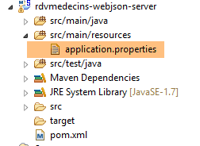 |
server.port=8080
数据库访问参数存储在项目 [rdvmedecins-metier-dao] 的类 [DomainAndPersistenceConfig] 中：
 |
// 数据源 MySQL
@Bean
public DataSource dataSource() {
BasicDataSource dataSource = new BasicDataSource();
dataSource.setDriverClassName("com.mysql.jdbc.Driver");
dataSource.setUrl("jdbc:mysql://localhost:3306/dbrdvmedecins");
dataSource.setUsername("root");
dataSource.setPassword("");
return dataSource;
}
如果您使用其他凭据访问 SGBD 和 MySQL，操作就在这里进行。
随后，与前一个服务器相同，启动 [rdvmedecins-springthymeleaf-server] 服务器：
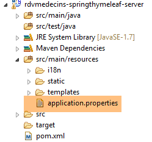 |  |
该服务器默认可通过 URL 和 [http://localhost:8081] 访问。同样，这可以在项目的 [application.properties] 文件中进行配置：
server.port=8081
此外，该服务器必须知道连接数据库服务器的 URL。此配置位于上文的 [AppConfig] 类中：
// admin / admin
private final String USER_INIT = "admin";
private final String MDP_USER_INIT = "admin";
// Web 服务根目录 / json
private final String WEBJSON_ROOT = "http://localhost:8080";
// 超时（以毫秒为单位）
private final int TIMEOUT = 5000;
// CORS
private final boolean CORS_ALLOWED=true;
如果第一台服务器是在 8080 以外的端口上启动的，则需要修改第 5 行。
随后，使用浏览器访问 URL [http://localhost:8081/boot.html]：
 |
- 访问 [1]，即应用程序的登录页面；
- 其中 [2] 和 [3] 分别是希望使用该应用程序的用户名和密码。共有两个用户：admin/admin（登录名/密码）对应角色 ADMIN，以及 user/user 对应角色 (USER)。仅角色 ADMIN 拥有使用该应用程序的权限。角色 USER 仅用于展示在此使用场景下服务器的响应；
- 在 [4] 中，用于连接服务器的按钮；
- 在 [5] 中，应用程序的语言。共有两种：默认的法语和英语；
- 在 [6] 中，是服务器 URL 的 [rdvmedecins-springthymeleaf-server]；
 |
- 在 [1] 中，进行登录；
 |
- 登录后，可选择想要预约的医生 [2] 及预约日期 [3]。一旦填写了医生和日期，日程表将自动显示：
 |
- 获取医生日程表后，即可预订时段 [5]；
 |
- 在 [6] 中，选择该预约的患者，并在 [7] 中确认该选择；
 |
预约确认后，系统将自动返回日程表，新预约已记录其中。该预约日后可通过 [8] 进行删除。
主要功能已介绍完毕，操作非常简单。最后介绍语言管理：
1

- 在 [1] 中，可切换为英语；
 |
- 在 [2] 中，界面切换为英语，包括日历；
8.3. 数据库
 |
随后被调用的名为 [dbrdvmedecins] 的数据库是一个 MySQL5 数据库，包含以下表：
 |
预约由以下表管理：
- [medecins]：包含诊所医生列表；
- [clients]：包含诊所的患者列表；
- [creneaux]：包含每位医生的可用时段；
- [rv]：包含医生预约列表。
表 [roles]、[users] 和 [users_roles] 是与身份验证相关的表。目前，我们暂不处理这些表。管理预约的表之间的关系如下：
 |
- 一个时段属于一位医生——一位医生拥有0个或多个时段；
- 一个预约通过医生的时段将客户与医生联系在一起；
- 一位客户拥有0个或多个预约；
- 一个时间段关联 0 个或多个预约（在不同的日期）。
8.3.1. 表 [MEDECINS]
该表包含由应用程序 [RdvMedecins] 管理的医生信息。
 |  |
- ID：医生标识号——该表的主键
- VERSION：表中该行的版本标识号。每次对该行进行修改时，该数字都会增加 1。
- NOM：医生姓名
- PRENOM：其名字
- TITRE：其称谓（小姐、女士、先生）
8.3.2. 表 [CLIENTS]
各医生的患者信息存储在表 [CLIENTS] 中：
 |  |
- ID：客户标识号——该表的主键
- VERSION：标识表中该行版本的编号。每次对该行进行修改时，该数字会递增1。
- NOM：客户姓名
- PRENOM：客户名字
- TITRE：其称谓（小姐、女士、先生）
8.3.3. 表 [CRENEAUX]
该表列出了可进行 RV 操作的时间段：
 |
 |
- ID：时间段的标识号——该表的主键（第8行）
- VERSION：表中该行的版本标识号。每次对该行进行修改时，该数字会递增1。
- ID_MEDECIN：标识该时段所属医生的编号——MEDECINS(ID)列的外键。
- HDEBUT：时段开始时间
- MDEBUT：时段开始分钟
- HFIN：时段结束时间
- MFIN：时段结束分钟
例如，表 [CRENEAUX]（参见上文 [1]）的第二行表明，第 2 号时段于 8 点 20 分开始，8 点 40 分结束，并归属于第 1 号医生 （玛丽女士 PELISSIER）。
8.3.4. 表 [RV]
该表列出了每位医生所分配的RV时段：
 |
- ID：唯一标识RV的编号——主键
- JOUR：RV的日期
- ID_CRENEAU：RV的时间段——作为外键关联至[ID]字段（该字段位于[CRENEAUX]表中）——同时确定了时间段和相关医生。
- ID_CLIENT：预订对象的客户编号——作为表[CLIENTS]中字段[ID]的外键
该表对关联列（JOUR、ID_CRENEAU）的值设置了唯一性约束：
如果表 [RV] 中的某行具有值 (JOUR1, ID_CRENEAU1) 作为列 (JOUR, ID_CRENEAU) 的值，则该值在其他任何地方都不能出现。 否则，这意味着同一时间针对同一位医生生成了两个 RV。从 Java 编程的角度来看，当这种情况发生时，数据库中的 JDBC 驱动程序会触发一个 SQLException。
id 行值为 3（参见上文的 [1]），表示 2006 年 8 月 23 日为第 20 个时段和第 4 号客户预订了一个 RV。 [CRENEAUX]表显示，第20号时段对应16:20-16:40的时间段，由第1号医生（Marie PELISSIER女士）负责。 表[CLIENTS]显示，第4号客户是布里吉特·BISTROU女士。
8.3.5. 创建数据库
为创建数据库 [dbrdvmedecins]，本文档 [1-3] 的示例中提供了脚本 [dbrdvmedecins.sql]：
 |
我们使用 WampServer 中的工具 [PhpMyAdmin]：
 |
- 在 [1] 中，选择来自 WampServer 的工具 [phpMyAdmin]；
- 在 [2] 中，选择选项 [Importer]；
 |
- 在 [3] 中，选择文件 [database/dbrdvmedecins.sql]；
- 在 [4] 中，执行该操作；
- 在 [5] 中，数据库已创建。
8.4. Web服务 / jSON
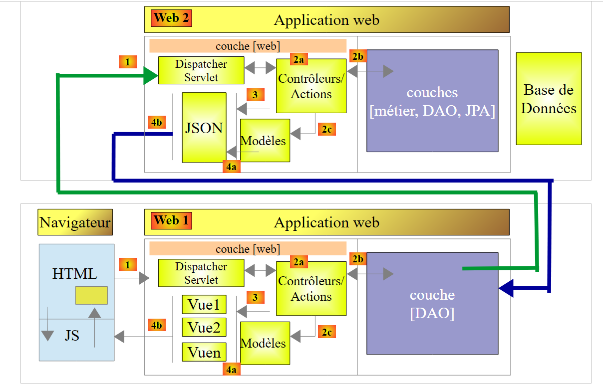 |
在上述架构中，我们将开始构建基于 Spring 框架的 Web 服务 / jSON。我们将分几个步骤进行编写：
- 首先是 [métier] 和 [DAO] 层（数据访问对象）。此处我们将使用 Spring Data；
- 接着是无需身份验证的 Web 服务 jSON。此处我们将使用 Spring MVC；
- 随后将使用 Spring Security 添加身份验证功能。
下文转载自文档 [http://tahe.developpez.com/angularjs-spring4/]，但进行了若干修改。
8.4.1. Spring Data 简介
我们将使用 Spring 生态系统的一个分支——Spring Data，来实现项目中的 [DAO] 层。
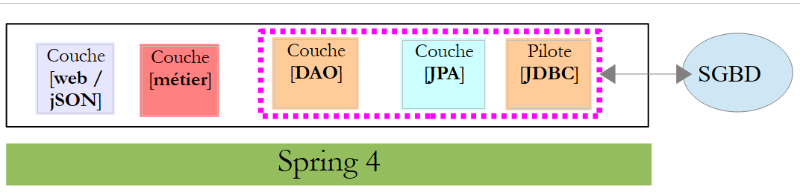 |
Spring 官网提供了大量关于 Spring [http://spring.io/guides] 入门教程。我们将利用其中一个教程来介绍 Spring Data。为此，我们将使用 Spring Tool Suite (STS)。
 |
- 在 [1] 中，我们导入 [spring.io/guides] 中的一个教程；
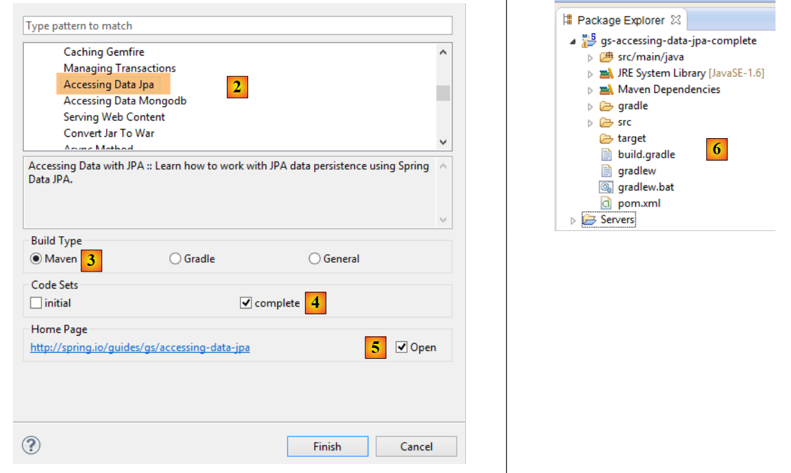 |
- 在 [2] 中，选择教程 [Accessing Data Jpa]，该教程演示了如何使用 Spring Data 访问数据库；
- 在 [3] 中，选择一个由 Maven 配置的项目；
- 在 [4] 中，教程提供两种形式：[initial] 是一个空模板，需根据教程逐步填充；[complete] 则是教程的最终版本。我们选择后者；
- 在 [5] 中，可以选择在浏览器中查看教程；
- 在 [6] 中，是最终项目。
8.4.1.1. 项目的 Maven 配置
项目的 Maven 依赖项配置在文件 [pom.xml] 中：
<groupId>org.springframework</groupId>
<artifactId>gs-accessing-data-jpa</artifactId>
<version>0.1.0</version>
<parent>
<groupId>org.springframework.boot</groupId>
<artifactId>spring-boot-starter-parent</artifactId>
<version>1.1.10.RELEASE</version>
</parent>
<dependencies>
<dependency>
<groupId>org.springframework.boot</groupId>
<artifactId>spring-boot-starter-data-jpa</artifactId>
</dependency>
<dependency>
<groupId>com.h2database</groupId>
<artifactId>h2</artifactId>
</dependency>
</dependencies>
<properties>
<!-- 所有操作均使用 UTF-8 -->
<project.build.sourceEncoding>UTF-8</project.build.sourceEncoding>
<project.reporting.outputEncoding>UTF-8</project.reporting.outputEncoding>
<start-class>hello.Application</start-class>
</properties>
- 第 5-9 行：定义了一个父级 Maven 项目。该项目定义了项目的大部分依赖。如果这些依赖已足够，则无需添加；否则，需补充缺失的依赖；
- 第 12-15 行：定义了对 [spring-boot-starter-data-jpa] 的依赖。该工件包含 Spring Data 的类；
- 第 16-19 行：定义了对 SGBD 和 H2 的依赖，这些依赖用于创建和管理内存数据库。
让我们看看这些依赖引入的类：
 |  |  |
这些类数量众多：
- 部分属于 Spring 生态系统（以 spring 开头的）；
- 另一些属于 Hibernate 生态系统（如 hibernate、jboss），其中我们在此使用的是 JPA 这一实现；
- 还有一些是测试库（junit、hamcrest）；
- 还有日志库（log4j、logback、slf4j）；
我们将保留所有这些库。对于生产环境中的应用程序，应仅保留必要的库。
在文件 [pom.xml] 的第 26 行，可以看到以下代码：
<start-class>hello.Application</start-class>
该行与以下几行相关：
<build>
<plugins>
<plugin>
<artifactId>maven-compiler-plugin</artifactId>
</plugin>
<plugin>
<groupId>org.springframework.boot</groupId>
<artifactId>spring-boot-maven-plugin</artifactId>
</plugin>
</plugins>
</build>
第6-9行，[spring-boot-maven-plugin]插件用于生成应用程序的可执行jar文件。因此，[pom.xml]文件的第26行指定了该jar文件的可执行类。
8.4.1.2. [JPA] 层
数据库访问通过 [JPA] 层实现，Java Persistence API：
 |
 |
该应用程序较为基础，用于管理客户 [Customer]。类 [Customer] 属于 [JPA] 层，具体如下：
package hello;
import javax.persistence.Entity;
import javax.persistence.GeneratedValue;
import javax.persistence.GenerationType;
import javax.persistence.Id;
@Entity
public class Customer {
@Id
@GeneratedValue(strategy = GenerationType.AUTO)
private long id;
private String firstName;
private String lastName;
protected Customer() {
}
public Customer(String firstName, String lastName) {
this.firstName = firstName;
this.lastName = lastName;
}
@Override
public String toString() {
return String.format("Customer[id=%d, firstName='%s', lastName='%s']", id, firstName, lastName);
}
}
一位客户拥有ID [id]、名字 [firstName] 和姓氏 [lastName]。每个 [Customer] 实例代表数据库表中的一行。
- 第 8 行：注解 JPA 表示 [Customer] 实例的持久化操作（创建、读取、更新、删除）将由实现类 JPA 管理。 根据 Maven 依赖关系，可以看到使用的是 JPA / Hibernate 实现；
- 第 11-12 行：JPA 注解将字段 [id] 关联到 [Customer] 表的主键。 第 12 行表明，JPA 实现将使用所用 SGBD 特有的主键生成方法，此处为 H2；
没有其他关于 JPA 的注释。因此将使用默认值：
- [Customer] 表将采用类名，即 [Customer]；
- 该表的列名将采用类字段的名称：[id, firstName, lastName]（需注意表列名不区分大小写）；
需要注意的是，所使用的 JPA 实现从未被命名。
8.4.1.3. [DAO] 层
 |
 |
类 [CustomerRepository] 实现了 [DAO] 层。其代码如下：
package hello;
import java.util.List;
import org.springframework.data.repository.CrudRepository;
public interface CustomerRepository extends CrudRepository<Customer, Long> {
List<Customer> findByLastName(String lastName);
}
因此这是一个接口而非类（第7行）。它继承了[CrudRepository]接口，这是一个Spring Data接口（第5行）。 该接口由两个类型进行参数化：第一个是所管理元素的类型，此处为类型 [Customer]；第二个是所管理元素的主键类型，此处为类型 [Long]。接口 [CrudRepository] 如下所示：
package org.springframework.data.repository;
import java.io.Serializable;
@NoRepositoryBean
public interface CrudRepository<T, ID extends Serializable> extends Repository<T, ID> {
<S extends T> S save(S entity);
<S extends T> Iterable<S> save(Iterable<S> entities);
T findOne(ID id);
boolean exists(ID id);
Iterable<T> findAll();
Iterable<T> findAll(Iterable<ID> ids);
long count();
void delete(ID id);
void delete(T entity);
void delete(Iterable<? extends T> entities);
void deleteAll();
}
该接口定义了可在类型 JPA T 上执行的 CRUD 操作（创建 – 读取 – 更新 – 删除）：
- 第8行：save方法用于将实体T持久化到数据库中。它使用SGBD分配的主键将实体持久化。该方法还可更新由主键id标识的实体T。 具体执行哪种操作取决于主键 id 的值：若该值为 null，则执行持久化操作；否则执行更新操作；
- 第 10 行：同上，但针对实体列表；
- 第12行：方法findOne用于根据主键id检索实体T；
- 第22行：delete方法用于删除通过主键id标识的实体T；
- 第24-28行：方法[delete]的变体；
- 第 16 行：方法 [findAll] 用于检索所有持久化实体 T；
- 第18行：同上，但仅限于已传入标识符列表的实体；
让我们回到 [CustomerRepository] 接口：
package hello;
import java.util.List;
import org.springframework.data.repository.CrudRepository;
public interface CustomerRepository extends CrudRepository<Customer, Long> {
List<Customer> findByLastName(String lastName);
}
- 第 9 行可通过名称 [lastName] 检索 [Customer]；
关于 [DAO] 层的内容就到此为止。该接口没有实现类，它由 [Spring Data] 在运行时自动生成。 接口 [CrudRepository] 的方法会被自动实现。至于在接口 [CustomerRepository] 中添加的方法，则视情况而定。让我们回到 [Customer] 的定义：
private long id;
private String firstName;
private String lastName;
第 9 行中的方法由 [Spring Data] 自动实现，因为它引用了 [Customer] 中的字段 [lastName]（第 3 行）。 当在待实现的接口中遇到 [findBySomething] 方法时，Spring Data 会通过以下 JPQL（Java 持久化查询语言）查询来实现它：
因此，类型 T 必须包含一个名为 [something] 的字段。这样，方法
将通过类似以下代码实现：
return [em].createQuery("select c from Customer c where c.lastName=:value").setParameter("value",lastName).getResultList()
其中 [em] 指代持久化上下文 JPA。这仅在类 [Customer] 拥有名为 [lastName] 的字段时才可行，而实际情况正是如此。
综上所述，在简单情况下，Spring Data 允许我们通过一个简单的接口来实现 [DAO] 层。
8.4.1.4. [console] 层
 |
 |
[Application] 类如下：
package hello;
import java.util.List;
import org.springframework.boot.SpringApplication;
import org.springframework.boot.autoconfigure.EnableAutoConfiguration;
import org.springframework.context.ConfigurableApplicationContext;
import org.springframework.context.annotation.Configuration;
@Configuration
@EnableAutoConfiguration
public class Application {
public static void main(String[] args) {
ConfigurableApplicationContext context = SpringApplication.run(Application.class);
CustomerRepository repository = context.getBean(CustomerRepository.class);
// 保存部分客户
repository.save(new Customer("Jack", "Bauer"));
repository.save(new Customer("Chloe", "O'Brian"));
repository.save(new Customer("Kim", "Bauer"));
repository.save(new Customer("David", "Palmer"));
repository.save(new Customer("Michelle", "Dessler"));
// 获取所有客户
Iterable<Customer> customers = repository.findAll();
System.out.println("Customers found with findAll():");
System.out.println("-------------------------------");
for (Customer customer : customers) {
System.out.println(customer);
}
System.out.println();
// 通过 ID 获取单个客户
Customer customer = repository.findOne(1L);
System.out.println("Customer found with findOne(1L):");
System.out.println("--------------------------------");
System.out.println(customer);
System.out.println();
// 按姓氏查询客户
List<Customer> bauers = repository.findByLastName("Bauer");
System.out.println("Customer found with findByLastName('Bauer'):");
System.out.println("--------------------------------------------");
for (Customer bauer : bauers) {
System.out.println(bauer);
}
context.close();
}
}
- 第 10 行：表明该类用于配置 Spring。Spring 的最新版本确实可以使用 Java 而不是 XML 进行配置。这两种方法可以同时使用。 在带有 [Configuration] 注解的类代码中，通常会包含 Spring Bean，即待实例化的类定义。此处未定义任何 Bean。需要提醒的是，当使用 SGBD 时，必须定义多种 Spring Bean：
- 一个 [EntityManagerFactory]，用于定义要使用的 JPA 实现；
- 一个 [DataSource]，用于定义要使用的数据源，
- 一个 [TransactionManager]，用于定义要使用的事务管理器；
此处未定义任何这些 Bean。
- 第 11 行：注解 [EnableAutoConfiguration] 源自项目 [Spring Boot]（第 5-6 行）。 该注解通过类 [SpringApplication]（第 16 行）要求 Spring Boot 根据其类路径中找到的库来配置应用程序。由于 Hibernate 库位于类路径中，因此 Bean [entityManagerFactory] 将使用 Hibernate 进行实现。 由于 SGBD 和 H2 库位于类路径中，因此 [dataSource] Bean 将使用 H2 进行实现。 在 [dataSource] Bean 中，还需定义用户及其密码。 在此情况下，Spring Boot 将使用 H2 的默认管理员，该管理员无需密码。由于 [spring-tx] 类库位于类路径中，因此将使用 Spring 的事务管理器。
此外，系统将扫描包含类 [Application] 的文件夹，查找 Spring 隐式识别的 Bean 或通过 Spring 注解显式定义的 Bean。因此，类 [Customer] 和 [CustomerRepository] 将被检查。 由于第一个类带有 [@Entity] 注解，它将被归类为由 Hibernate 管理的实体。由于第二个类继承了 [CrudRepository] 接口，它将被注册为 Spring Bean。
让我们来分析代码的第 16-17 行：
ConfigurableApplicationContext context = SpringApplication.run(Application.class);
CustomerRepository repository = context.getBean(CustomerRepository.class);
- 第 16 行：执行 Spring Boot 项目中 [SpringApplication] 类的静态方法 [run]。其参数是带有 [Configuration] 或 [EnableAutoConfiguration] 注解的类。 此前所解释的所有内容将随之发生。结果是一个 Spring 应用上下文，即一组由 Spring 管理的 Bean；
- 第 17 行：向该 Spring 上下文请求一个实现 [CustomerRepository] 接口的 Bean。此处获取的是 Spring Data 为实现该接口而生成的类。
后续操作仅使用实现 [CustomerRepository] 接口的 Bean 中的方法。请注意第 50 行，此时上下文已被关闭。控制台输出结果如下：
- 第1-8行：Spring Boot项目的徽标；
- 第 9 行：执行 [hello.Application] 类；
- 第 10 行：[AnnotationConfigApplicationContext] 是实现 Spring 的 [ApplicationContext] 接口的类。这是一个 Bean 容器；
- 第 11 行：Bean [entityManagerFactory] 通过 Spring 类 [LocalContainerEntityManagerFactory] 实现；
- 第 15 行：出现了 [Hibernate]。正是这个 JPA 实现被选中；
- 第19行：Hibernate的方言是SQL，需与SGBD配合使用。 此处的 [H2Dialect] 方言表明，Hibernate 将与 SGBD 和 H2 配合使用；
- 第 21-22 行：数据库已创建。 创建了表 [CUSTOMER]。这意味着 Hibernate 已配置为根据 JPA 定义生成表，此处为类 [Customer] 的定义 JPA；
- 第 27-31 行：插入的五个客户；
- 第 336-35 行：接口中 [findOne] 方法的执行结果；
- 第37-40行：方法[findByLastName]的结果；
- 第 41 行及后续行：Spring 上下文关闭日志。
8.4.1.5. Spring Data 项目的手动配置
我们将前一个项目复制到 [gs-accessing-data-jpa-2] 项目中：
 |
在这个新项目中，我们将不依赖 Spring Boot 的自动配置，而是手动进行配置。如果默认配置不符合我们的需求，这将非常有用。
首先，我们在文件 [pom.xml] 中显式声明所需的依赖项：
...
<dependencies>
<!-- Spring Core -->
<dependency>
<groupId>org.springframework</groupId>
<artifactId>spring-core</artifactId>
<version>4.1.2.RELEASE</version>
</dependency>
<dependency>
<groupId>org.springframework</groupId>
<artifactId>spring-context</artifactId>
<version>4.1.2.RELEASE</version>
</dependency>
<dependency>
<groupId>org.springframework</groupId>
<artifactId>spring-beans</artifactId>
<version>4.1.2.RELEASE</version>
</dependency>
<!-- Spring事务 -->
<dependency>
<groupId>org.springframework</groupId>
<artifactId>spring-orm</artifactId>
<version>4.1.2.RELEASE</version>
</dependency>
<dependency>
<groupId>org.springframework</groupId>
<artifactId>spring-aop</artifactId>
<version>4.1.2.RELEASE</version>
</dependency>
<!-- SpringORM -->
<dependency>
<groupId>org.springframework</groupId>
<artifactId>spring-tx</artifactId>
<version>4.1.2.RELEASE</version>
</dependency>
<!-- Spring Data -->
<dependency>
<groupId>org.springframework.data</groupId>
<artifactId>spring-data-jpa</artifactId>
<version>1.7.1.RELEASE</version>
</dependency>
<!-- Spring Boot -->
<dependency>
<groupId>org.springframework.boot</groupId>
<artifactId>spring-boot</artifactId>
<version>1.1.10.RELEASE</version>
</dependency>
<!-- Hibernate -->
<dependency>
<groupId>org.hibernate</groupId>
<artifactId>hibernate-entitymanager</artifactId>
<version>4.3.4.Final</version>
</dependency>
<!-- H2 数据库 -->
<dependency>
<groupId>com.h2database</groupId>
<artifactId>h2</artifactId>
<version>1.4.178</version>
</dependency>
<!-- CommonsDBCP -->
<dependency>
<groupId>commons-dbcp</groupId>
<artifactId>commons-dbcp</artifactId>
<version>1.4</version>
</dependency>
<dependency>
<groupId>commons-pool</groupId>
<artifactId>commons-pool</artifactId>
<version>1.6</version>
</dependency>
</dependencies>
...
</project>
- 第 2-18 行：Spring 的基础库；
- 第 19-29 行：用于管理数据库事务的 Spring 库；
- 第 30-35 行：用于处理 ORM（对象关系映射器）的 Spring 库；
- 第36-41行：用于访问数据库的Spring Data；
- 第 42-47 行：用于启动应用程序的 Spring Boot；
- 第 54-59 行：SGBD H2；
- 第60-70行：数据库通常与连接池配合使用，以避免重复打开/关闭连接。此处采用的是[commons-dbcp]的实现；
同样在 [pom.xml] 中，修改了可执行类的名称：
<properties>
...
<start-class>demo.console.Main</start-class>
</properties>
在新项目中，实体 [Customer] 和接口 [CustomerRepository] 保持不变。我们将修改类 [Application]，将其拆分为两个类：
- [Config]，作为配置类：
- [Main]，作为可执行类；
 |
可执行类 [Main] 与之前相同，只是去除了配置注解：
package demo.console;
import java.util.List;
import org.springframework.boot.SpringApplication;
import org.springframework.context.ConfigurableApplicationContext;
import demo.config.Config;
import demo.entities.Customer;
import demo.repositories.CustomerRepository;
public class Main {
public static void main(String[] args) {
ConfigurableApplicationContext context = SpringApplication.run(Config.class);
CustomerRepository repository = context.getBean(CustomerRepository.class);
...
context.close();
}
}
- 第 12 行：类 [Main] 已不再包含配置注解；
- 第 16 行：应用程序通过 Spring Boot 启动。参数 [Config.class] 是该项目的新配置类；
用于配置项目的类 [Config] 如下所示：
package demo.config;
import javax.persistence.EntityManagerFactory;
import javax.sql.DataSource;
import org.apache.commons.dbcp.BasicDataSource;
import org.springframework.context.annotation.Bean;
import org.springframework.context.annotation.Configuration;
import org.springframework.data.jpa.repository.config.EnableJpaRepositories;
import org.springframework.orm.jpa.JpaTransactionManager;
import org.springframework.orm.jpa.JpaVendorAdapter;
import org.springframework.orm.jpa.LocalContainerEntityManagerFactoryBean;
import org.springframework.orm.jpa.vendor.Database;
import org.springframework.orm.jpa.vendor.HibernateJpaVendorAdapter;
import org.springframework.transaction.PlatformTransactionManager;
import org.springframework.transaction.annotation.EnableTransactionManagement;
//@ComponentScan(basePackages = { "demo" })
//@EntityScan(basePackages = { "demo.entities" })
@EnableTransactionManagement
@EnableJpaRepositories(basePackages = { "demo.repositories" })
@Configuration
public class Config {
// 数据源 H2
@Bean
public DataSource dataSource() {
BasicDataSource dataSource = new BasicDataSource();
dataSource.setDriverClassName("org.h2.Driver");
dataSource.setUrl("jdbc:h2:./demo");
dataSource.setUsername("sa");
dataSource.setPassword("");
return dataSource;
}
// 提供商 JPA
@Bean
public JpaVendorAdapter jpaVendorAdapter() {
HibernateJpaVendorAdapter hibernateJpaVendorAdapter = new HibernateJpaVendorAdapter();
hibernateJpaVendorAdapter.setShowSql(false);
hibernateJpaVendorAdapter.setGenerateDdl(true);
hibernateJpaVendorAdapter.setDatabase(Database.H2);
return hibernateJpaVendorAdapter;
}
// EntityManagerFactory
@Bean
public EntityManagerFactory entityManagerFactory(JpaVendorAdapter jpaVendorAdapter, DataSource dataSource) {
LocalContainerEntityManagerFactoryBean factory = new LocalContainerEntityManagerFactoryBean();
factory.setJpaVendorAdapter(jpaVendorAdapter);
factory.setPackagesToScan("demo.entities");
factory.setDataSource(dataSource);
factory.afterPropertiesSet();
return factory.getObject();
}
// 事务管理器
@Bean
public PlatformTransactionManager transactionManager(EntityManagerFactory entityManagerFactory) {
JpaTransactionManager txManager = new JpaTransactionManager();
txManager.setEntityManagerFactory(entityManagerFactory);
return txManager;
}
}
- 第 22 行：注解 [@Configuration] 将类 [Config] 设为 Spring 配置类；
- 第 21 行：注解 [@EnableJpaRepositories] 用于指定 Spring Data 接口 [CrudRepository] 的所在目录。这些接口将作为 Spring 组件，并在 Spring 上下文中可用；
- 第 20 行：注解 [@EnableTransactionManagement] 表示 [CrudRepository] 接口的方法必须在事务内执行；
- 第 19 行：注解 [@EntityScan] 用于指定查找 JPA 实体的目录。 此处已将其注释掉，因为该信息已在第50行明确给出。如果使用[@EnableAutoConfiguration]模式，且JPA实体不在与配置类相同的目录中，则应保留此注解；
- 第 18 行：注解 [@ComponentScan] 用于列出需要搜索 Spring 组件的文件夹。 Spring组件是指带有@Service、@Component、@Controller等Spring注解的类。此处除[Config]类中定义的组件外别无其他，因此该注解已被注释掉；
- 第 25-33 行：定义数据源，即数据库 H2。正是第 25 行的 @Bean 注解，使得该方法创建的对象成为由 Spring 管理的组件。 此处方法名称可任意设定。但若第47行的EntityManagerFactory不存在且通过自动配置定义，则该方法必须命名为[dataSource]；
- 第29行：数据库将命名为[demo]，并生成在项目文件夹中；
- 第36-43行：定义所使用的JPA实现，此处为Hibernate实现。此处方法名可任意设定；
- 第 39 行：不生成 SQL 日志；
- 第30行：若数据库不存在，则创建数据库；
- 第46-54行：定义了将管理JPA持久化的EntityManagerFactory。该方法必须命名为[entityManagerFactory]；
- 第47行：该方法接收两个参数，其类型与之前定义的两个Bean一致。Spring将构建这些Bean，并将其作为方法参数注入；
- 第49行：指定使用的JPA实现；
- 第 50 行：指定查找 JPA 实体的文件夹；
- 第 51 行：指定要管理的数据源；
- 第57-62行：事务管理器。该方法必须命名为[transactionManager]。它接收第46-54行定义的Bean作为参数；
- 第 60 行：将事务管理器关联至 EntityManagerFactory；
上述方法可以按任意顺序定义。
运行该项目将得到相同的结果。项目文件夹中会出现一个新文件，即数据库文件 H2：
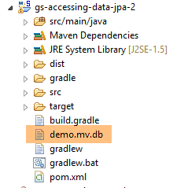 |
最后，我们可以不使用 Spring Boot。创建第二个可执行类 [Main2]：
 |
类 [Main2] 的代码如下：
package demo.console;
import java.util.List;
import org.springframework.context.annotation.AnnotationConfigApplicationContext;
import demo.config.Config;
import demo.entities.Customer;
import demo.repositories.CustomerRepository;
public class Main2 {
public static void main(String[] args) {
AnnotationConfigApplicationContext context = new AnnotationConfigApplicationContext(Config.class);
CustomerRepository repository = context.getBean(CustomerRepository.class);
....
context.close();
}
}
- 第 15 行：配置类 [Config] 现由 Spring 类 [AnnotationConfigApplicationContext] 调用。从第 5 行可以看出，现在已不再依赖 Spring Boot。
运行结果与之前相同。
8.4.1.6. 创建可执行存档
要创建项目的可执行归档文件，可以按照以下步骤操作：
 |
- 在 [1] 中：创建一个运行配置；
- 在 [2] 中：类型为 [Java Application]
- 在 [3] 中：指定要执行的项目（使用按钮 Browse）；
- 在 [4] 中：指定要执行的类；
- [5]：运行配置的名称——可以是任意名称；
 |
- 在 [6] 中：导出项目；
- 在 [7] 中：以可执行存档的形式；
- 在 [8] 中：指定要创建的可执行文件的路径和名称；
- 在 [9] 中：输入在 [5] 中创建的运行配置名称；
完成上述操作后，在包含可执行存档的文件夹中打开一个控制台：
按以下方式执行该归档文件：
.....\dist>java -jar gs-accessing-data-jpa-2.jar
控制台显示的结果如下：
8.4.1.7. 创建一个新的 Spring Data 项目
要创建一个 Spring Data 项目骨架，可以按以下步骤操作：
 |
- 在 [1] 中，创建一个新项目；
- 在 [2] 中：类型为 [Spring Starter Project]；
- 生成的项目将是一个 Maven 项目。在 [3] 中，指定项目组的名称；
- 在 [4] 中：指定构建项目时将生成的工件名称（此处为 jar）；
- 在 [5] 中：指定将在项目中创建的可执行类的包；
- 在 [6] 中：指定项目的 Eclipse 名称——可以是任意名称（不必与 [4] 相同）；
- 在 [7] 中：指定将创建一个包含 [JPA] 层的项目。该项目所需的依赖项将被包含在 [pom.xml] 文件中；
 |
- 在 [8] 中：已创建的项目；
文件 [pom.xml] 包含项目 JPA 所需的依赖项：
<parent>
<groupId>org.springframework.boot</groupId>
<artifactId>spring-boot-starter-parent</artifactId>
<version>1.2.0.RELEASE</version>
<relativePath/> <!-- 从存储库中查找父对象 -->
</parent>
<dependencies>
<dependency>
<groupId>org.springframework.boot</groupId>
<artifactId>spring-boot-starter-data-jpa</artifactId>
</dependency>
<dependency>
<groupId>org.springframework.boot</groupId>
<artifactId>spring-boot-starter-test</artifactId>
<scope>test</scope>
</dependency>
</dependencies>
- 第 9-12 行：JPA 所需的依赖项——将包含 [Spring Data]；
- 第 13-17 行：JUnit 测试所需的依赖项（已集成 Spring）；
可执行类 [Application] 本身不执行任何操作，但已预先配置：
package istia.st;
import org.springframework.boot.SpringApplication;
import org.springframework.boot.autoconfigure.EnableAutoConfiguration;
import org.springframework.context.annotation.ComponentScan;
import org.springframework.context.annotation.Configuration;
@Configuration
@ComponentScan
@EnableAutoConfiguration
public class Application {
public static void main(String[] args) {
SpringApplication.run(Application.class, args);
}
}
测试类 [ApplicationTests] 没有实际功能，但已预先配置：
package istia.st;
import org.junit.Test;
import org.junit.runner.RunWith;
import org.springframework.boot.test.SpringApplicationConfiguration;
import org.springframework.test.context.junit4.SpringJUnit4ClassRunner;
@RunWith(SpringJUnit4ClassRunner.class)
@SpringApplicationConfiguration(classes = Application.class)
public class ApplicationTests {
@Test
public void contextLoads() {
}
}
- 第 9 行：注解 [@SpringApplicationConfiguration] 用于调用配置文件 [Application]。因此，该测试类将能够使用该文件中定义的所有 Bean；
- 第 8 行：注解 [@RunWith] 实现了 Spring 与 JUnit 的集成：该类将能够作为 JUnit 测试进行执行。 [@RunWith] 是注解 JUnit（第 4 行），而类 [SpringJUnit4ClassRunner] 则是 Spring 类（第 6 行）；
现在我们已经有了一个 JPA 应用程序框架，可以对其进行补充，编写我们预约管理应用程序服务器持久层的项目。
8.4.2. 服务器端的 Eclipse 项目
 |
 |
该项目的主要组成部分如下：
- [pom.xml]：项目的 Maven 配置文件；
- [rdvmedecins.entities]：实体 JPA；
- [rdvmedecins.repositories]：用于访问 JPA 实体的 Spring Data 接口；
- [rdvmedecins.metier]：[métier] 层；
- [rdvmedecins.domain]：由该层操作的实体 [métier]；
- [rdvmdecins.config]：持久层配置类；
- [rdvmedecins.boot]：一个基本的控制台应用程序；
8.4.3. Maven 配置
 |  |  |
该项目的 [pom.xml] 文件如下：
<?xml version="1.0" encoding="UTF-8"?>
<project xmlns="http://maven.apache.org/POM/4.0.0" xsi:schemaLocation="http://maven.apache.org/POM/4.0.0 http://maven.apache.org/maven-v4_0_0.xsd"
xmlns:xsi="http://www.w3.org/2001/XMLSchema-instance">
<modelVersion>4.0.0</modelVersion>
<groupId>istia.st.spring4.rdvmedecins</groupId>
<artifactId>rdvmedecins-metier-dao</artifactId>
<version>0.0.1-SNAPSHOT</version>
<parent>
<groupId>org.springframework.boot</groupId>
<artifactId>spring-boot-starter-parent</artifactId>
<version>1.2.6.RELEASE</version>
</parent>
<dependencies>
<!-- Spring DataJPA -->
<dependency>
<groupId>org.springframework.boot</groupId>
<artifactId>spring-boot-starter-data-jpa</artifactId>
</dependency>
<!-- Spring 测试 -->
<dependency>
<groupId>org.springframework.boot</groupId>
<artifactId>spring-boot-starter-test</artifactId>
<scope>test</scope>
</dependency>
<!-- Spring Security -->
<dependency>
<groupId>org.springframework.boot</groupId>
<artifactId>spring-boot-starter-security</artifactId>
</dependency>
<!-- 驱动程序 JDBC / MySQL -->
<dependency>
<groupId>mysql</groupId>
<artifactId>mysql-connector-java</artifactId>
</dependency>
<!-- Tomcat JDBC -->
<dependency>
<groupId>org.apache.tomcat</groupId>
<artifactId>tomcat-jdbc</artifactId>
</dependency>
<!-- 映射器 jSON -->
<dependency>
<groupId>com.fasterxml.jackson.core</groupId>
<artifactId>jackson-databind</artifactId>
</dependency>
<!-- Googe Guava -->
<dependency>
<groupId>com.google.guava</groupId>
<artifactId>guava</artifactId>
<version>16.0.1</version>
</dependency>
</dependencies>
<properties>
<!-- 所有内容均使用 UTF-8 -->
<project.build.sourceEncoding>UTF-8</project.build.sourceEncoding>
<project.reporting.outputEncoding>UTF-8</project.reporting.outputEncoding>
<start-class>rdvmedecins.boot.Boot</start-class>
<java.version>1.8</java.version>
</properties>
<build>
<plugins>
<plugin>
<groupId>org.springframework.boot</groupId>
<artifactId>spring-boot-maven-plugin</artifactId>
</plugin>
</plugins>
</build>
<repositories>
<repository>
<id>spring-milestones</id>
<name>Spring Milestones</name>
<url>http://repo.spring.io/libs-milestone</url>
<snapshots>
<enabled>false</enabled>
</snapshots>
</repository>
<repository>
<id>org.jboss.repository.releases</id>
<name>JBoss Maven Release Repository</name>
<url>https://repository.jboss.org/nexus/content/repositories/releases</url>
<snapshots>
<enabled>false</enabled>
</snapshots>
</repository>
</repositories>
<pluginRepositories>
<pluginRepository>
<id>spring-milestones</id>
<name>Spring Milestones</name>
<url>http://repo.spring.io/libs-milestone</url>
<snapshots>
<enabled>false</enabled>
</snapshots>
</pluginRepository>
</pluginRepositories>
</project>
- 第 8-12 行：该项目基于父项目 [spring-boot-starter-parent]。对于父项目中已存在的依赖项，无需指定版本。将使用父项目中定义的版本。对于其他依赖项，则按常规方式声明；
- 第 15-18 行：用于 Spring Data；
- 第 20-24 行：用于测试的 JUnit；
- 第 26-29 行：用于 Spring Security 库，其 [DAO] 层使用了该库中的某个密码加密类；
- 第 31-34 行：JDBC 驱动程序，属于 SGBD 和 MySQL5；
- 第36-39行：Tomcat连接池 JDBC。 连接池用于管理与数据库建立的已打开连接。当代码需要打开连接时，会向连接池申请；当代码关闭连接时，该连接不会被直接关闭，而是归还给连接池。这一过程对代码而言是透明的。由于反复打开和关闭连接会消耗时间，因此这种机制能提升性能。 在此，连接池在实例化时即与数据库建立若干连接。此后，除非池中存储的连接数量不足，否则不会再进行连接的打开或关闭操作。若出现这种情况，连接池会自动创建新的连接；
- 第41-44行：用于管理jSON的Jackson库；
- 第46-50行：用于管理集合的Google库；
8.4.4. 实体 JPA
 |
实体 JPA 是用于封装数据库表中各行的对象。
 |
类 [AbstractEntity] 是实体 [Personne, Creneau, Rv] 的父类。其定义如下：
package rdvmedecins.entities;
import java.io.Serializable;
import javax.persistence.GeneratedValue;
import javax.persistence.GenerationType;
import javax.persistence.Id;
import javax.persistence.MappedSuperclass;
import javax.persistence.Version;
@MappedSuperclass
public class AbstractEntity implements Serializable {
private static final long serialVersionUID = 1L;
@Id
@GeneratedValue(strategy = GenerationType.IDENTITY)
protected Long id;
@Version
protected Long version;
@Override
public int hashCode() {
int hash = 0;
hash += (id != null ? id.hashCode() : 0);
return hash;
}
// 初始化
public AbstractEntity build(Long id, Long version) {
this.id = id;
this.version = version;
return this;
}
@Override
public boolean equals(Object entity) {
String class1 = this.getClass().getName();
String class2 = entity.getClass().getName();
if (!class2.equals(class1) || entity==null) {
return false;
}
AbstractEntity other = (AbstractEntity) entity;
return this.id.longValue() == other.id.longValue();
}
// 获取器和设置器
..
}
- 第 11 行：注解 [@MappedSuperclass] 表示被注解的类是实体 JPA 和 [@Entity] 的父类；
- 第15-17行：定义了每个实体的主键[id]。正是注释[@Id]将字段[id]设为主键。 注释 [@GeneratedValue(strategy = GenerationType.IDENTITY)] 表示该主键的值由 SGBD 生成，且强制采用生成模式 [IDENTITY]。 对于 SGBD MySQL，这意味着主键将由 SGBD 生成，并使用 [AUTO_INCREMENT] 属性
- 第 18-19 行：定义每个实体的版本号。JPA 实现每次修改该实体时都会递增此版本号。 该版本号用于防止两个不同用户同时更新该实体：两个用户 U1 和 U2 读取版本号为 V1 的实体 E。 U1 修改了 E 并将该修改保存到数据库中：此时版本号变为 V1+1。 U2 随后修改 E 并将该修改保存到数据库中：它将引发异常，因为其版本号（V1）与数据库中的版本号（V1+1）不一致；
- 第29-33行：方法[build]用于初始化[AbstractEntity]的两个字段。该方法将[AbstractEntity]实例的引用初始化为上述状态；
- 第36-44行：该类的[equals]方法被重定义：若两个实体具有相同的类名和相同的id标识符，则被视为相等；
- 第21-26行：当重定义类中的[equals]方法时，必须同时重定义其[hashCode]方法（第21-26行）。 规则是：被方法 [equals] 判定为相等的两个实体，其 [hashCode] 必须相同。在此，某个实体的 [hashCode] 等于其主键 [id]。 类的 [hashCode] 主要用于管理其值为该类实例的字典；
实体 [Personne] 是实体 [Medecin] 和 [Client] 的父类：
package rdvmedecins.entities;
import javax.persistence.Column;
import javax.persistence.MappedSuperclass;
@MappedSuperclass
public class Personne extends AbstractEntity {
private static final long serialVersionUID = 1L;
// 人员的属性
@Column(length = 5)
private String titre;
@Column(length = 20)
private String nom;
@Column(length = 20)
private String prenom;
// 默认构造函数
public Personne() {
}
// 带参数的构造函数
public Personne(String titre, String nom, String prenom) {
this.titre = titre;
this.nom = nom;
this.prenom = prenom;
}
// toString
public String toString() {
return String.format("Personne[%s, %s, %s, %s, %s]", id, version, titre, nom, prenom);
}
// 获取器和设置器
...
}
- 第 6 行：注解 [@MappedSuperclass] 表明被注解的类是实体 JPA 和 [@Entity] 的父类；
- 第10-15行：某人有一个头衔（Melle）、一个名字（Jacqueline）和一个姓氏（Tatou）。表格列未提供任何信息，因此默认情况下，这些列将与字段名称相同；
实体 [Medecin] 如下：
package rdvmedecins.entities;
import javax.persistence.Entity;
import javax.persistence.Table;
@Entity
@Table(name = "medecins")
public class Medecin extends Personne {
private static final long serialVersionUID = 1L;
// 默认构造函数
public Medecin() {
}
// 带参数的构造函数
public Medecin(String titre, String nom, String prenom) {
super(titre, nom, prenom);
}
public String toString() {
return String.format("Medecin[%s]", super.toString());
}
}
- 第 6 行：该类是一个 JPA 实体；
- 第 7 行：关联数据库中的表 [MEDECINS]；
- 第 8 行：实体 [Medecin] 继承自实体 [Personne]；
医生实体可按以下方式初始化：
此外，若需为其分配标识符和版本号，可写为：
其中方法 [build] 是 [AbstractEntity] 中定义的。
实体 [Client] 如下所示：
package rdvmedecins.entities;
import javax.persistence.Entity;
import javax.persistence.Table;
@Entity
@Table(name = "clients")
public class Client extends Personne {
private static final long serialVersionUID = 1L;
// 默认构造函数
public Client() {
}
// 带参数的构造函数
public Client(String titre, String nom, String prenom) {
super(titre, nom, prenom);
}
// 身份
public String toString() {
return String.format("Client[%s]", super.toString());
}
}
- 第 6 行：该类是一个 JPA 实体；
- 第 7 行：关联数据库中的表 [CLIENTS]；
- 第 8 行：实体 [Client] 派生自实体 [Personne]；
实体 [Creneau] 如下：
package rdvmedecins.entities;
import javax.persistence.Column;
import javax.persistence.Entity;
import javax.persistence.FetchType;
import javax.persistence.JoinColumn;
import javax.persistence.ManyToOne;
import javax.persistence.Table;
@Entity
@Table(name = "creneaux")
public class Creneau extends AbstractEntity {
private static final long serialVersionUID = 1L;
// RV 时段的特征
private int hdebut;
private int mdebut;
private int hfin;
private int mfin;
// 一个时段与一名医生相关联
@ManyToOne(fetch = FetchType.LAZY)
@JoinColumn(name = "id_medecin")
private Medecin medecin;
// 外键
@Column(name = "id_medecin", insertable = false, updatable = false)
private long idMedecin;
// 默认生成器
public Creneau() {
}
// 带参数的构造函数
public Creneau(Medecin medecin, int hdebut, int mdebut, int hfin, int mfin) {
this.medecin = medecin;
this.hdebut = hdebut;
this.mdebut = mdebut;
this.hfin = hfin;
this.mfin = mfin;
}
// toString
public String toString() {
return String.format("Créneau[%d, %d, %d, %d:%d, %d:%d]", id, version, idMedecin, hdebut, mdebut, hfin, mfin);
}
// 外键
public long getIdMedecin() {
return idMedecin;
}
// setter - getter
...
}
- 第 10 行：该类是一个实体 JPA；
- 第 11 行：关联数据库中的表 [CRENEAUX]；
- 第 12 行：实体 [Creneau] 派生自实体 [AbstractEntity]，因此继承了标识符 [id] 和版本 [version]；
- 第16行：时段开始时间（14）；
- 第17行：时段开始分钟（20）；
- 第18行：时段结束时间（14）；
- 第19行：时段结束的分钟（40）；
- 第22-24行：该时段所属的医生。表[CRENEAUX]对表[MEDECINS]设有外键。此关系由第22-24行体现；
- 第22行：注释[@ManyToOne]表示多对一关系（多个时段对应一名医生）。 属性 [fetch=FetchType.LAZY] 表示：当向持久化上下文请求实体 [Creneau] 且该实体需从数据库中检索时，实体 [Medecin] 不会随其一同返回。 此模式的优势在于，只有当开发人员明确请求时，才会检索实体 [Medecin]。这样既节省了内存，又提高了性能；
- 第 23 行：指定表 [CRENEAUX] 中外键列的名称；
- 第 27-28 行：表 [MEDECINS] 上的外键；
- 第27行：[ID_MEDECIN]列已在第23行被使用。这意味着该列可能通过两种不同途径被修改，而JPA标准不允许这种情况。 因此，我们添加了 [insertable = false, updatable = false] 属性，使得该列只能被读取；
实体 [Rv] 如下：
package rdvmedecins.entities;
import java.util.Date;
import javax.persistence.Column;
import javax.persistence.Entity;
import javax.persistence.FetchType;
import javax.persistence.JoinColumn;
import javax.persistence.ManyToOne;
import javax.persistence.Table;
import javax.persistence.Temporal;
import javax.persistence.TemporalType;
@Entity
@Table(name = "rv")
public class Rv extends AbstractEntity {
private static final long serialVersionUID = 1L;
// Rv 的特征
@Temporal(TemporalType.DATE)
private Date jour;
// RV与客户相关联
@ManyToOne(fetch = FetchType.LAZY)
@JoinColumn(name = "id_client")
private Client client;
// RV 与时间段相关联
@ManyToOne(fetch = FetchType.LAZY)
@JoinColumn(name = "id_creneau")
private Creneau creneau;
// 外键
@Column(name = "id_client", insertable = false, updatable = false)
private long idClient;
@Column(name = "id_creneau", insertable = false, updatable = false)
private long idCreneau;
// 默认制造商
public Rv() {
}
// 带参数
public Rv(Date jour, Client client, Creneau creneau) {
this.jour = jour;
this.client = client;
this.creneau = creneau;
}
// toString
public String toString() {
return String.format("Rv[%d, %s, %d, %d]", id, jour, client.id, creneau.id);
}
// 外键
public long getIdCreneau() {
return idCreneau;
}
public long getIdClient() {
return idClient;
}
// 获取器和设置器
...
}
- 第 14 行：该类是一个 JPA 实体；
- 第 15 行：关联数据库中的表 [RV]；
- 第16行：实体[Rv]源自实体[AbstractEntity]，因此继承了标识符[id]和版本[version]；
- 第 21 行：约会日期；
- 第 20 行：Java 类型 [Date] 同时包含日期和时间。此处明确指出仅使用日期；
- 第24-26行：该预约对应的客户。表[RV]与表[CLIENTS]之间存在外键关系。此关系通过第24-26行体现；
- 第29-31行：约会的时段。表[RV]对表[CRENEAUX]具有外键。第29-31行体现了这一关系；
- 第 34-35 行：外键 [idClient]；
- 第36-37行：外键[idCreneau]；
8.4.5. [DAO]层
 |
我们将使用 Spring Data 实现 [DAO] 层：
 |
[DAO] 层通过四个 Spring Data 接口实现：
- [ClientRepository]：提供对实体 JPA 和 [Client] 的访问；
- [CreneauRepository]：提供对实体 JPA 和 [Creneau] 的访问；
- [MedecinRepository]：提供对实体 JPA 和 [Medecin] 的访问权限；
- [RvRepository]：提供对实体 JPA 和 [Rv] 的访问权限；
接口 [MedecinRepository] 如下：
package rdvmedecins.repositories;
import org.springframework.data.repository.CrudRepository;
import rdvmedecins.entities.Medecin;
public interface MedecinRepository extends CrudRepository<Medecin, Long> {
}
- 第7行：接口 [MedecinRepository] 仅继承了接口 [CrudRepository] 的方法，未添加其他方法；
接口 [ClientRepository] 如下：
package rdvmedecins.repositories;
import org.springframework.data.repository.CrudRepository;
import rdvmedecins.entities.Client;
public interface ClientRepository extends CrudRepository<Client, Long> {
}
- 第7行：接口 [ClientRepository] 仅继承了接口 [CrudRepository] 的方法，未添加其他方法；
接口 [CreneauRepository] 如下：
package rdvmedecins.repositories;
import org.springframework.data.jpa.repository.Query;
import org.springframework.data.repository.CrudRepository;
import rdvmedecins.entities.Creneau;
public interface CreneauRepository extends CrudRepository<Creneau, Long> {
// 医生的时间段列表
@Query("select c from Creneau c where c.medecin.id=?1")
Iterable<Creneau> getAllCreneaux(long idMedecin);
}
- 第 8 行：接口 [CreneauRepository] 继承了接口 [CrudRepository] 的方法；
- 第10-11行：方法[getAllCreneaux]用于获取某位医生的可用时段；
- 第11行：参数为医生的标识符。结果是一个以[Iterable<Creneau>]对象形式呈现的时段列表；
- 第 10 行：注解 [@Query] 用于指定实现该方法的 JPQL 查询（Java 持久化查询语言）。 参数 [?1] 将被该方法的参数 [idMedecin] 替换；
接口 [RvRepository] 如下所示：
package rdvmedecins.repositories;
import java.util.Date;
import org.springframework.data.jpa.repository.Query;
import org.springframework.data.repository.CrudRepository;
import rdvmedecins.entities.Rv;
public interface RvRepository extends CrudRepository<Rv, Long> {
@Query("select rv from Rv rv left join fetch rv.client c left join fetch rv.creneau cr where cr.medecin.id=?1 and rv.jour=?2")
Iterable<Rv> getRvMedecinJour(long idMedecin, Date jour);
}
- 第 10 行：接口 [RvRepository] 继承了接口 [CrudRepository] 的方法；
- 第12-13行：方法[getRvMedecinJour]用于获取某位医生在指定日期的预约信息；
- 第13行：参数包括医生ID和日期。返回结果为以[Iterable<Rv>]对象形式呈现的预约列表；
- 第 12 行：注解 [@Query] 用于指定实现该方法的请求 JPQL。 参数 [?1] 将被该方法的参数 [idMedecin] 替换，参数 [?2] 将被该方法的参数 [jour] 替换。 仅使用以下查询 JPQL 是行不通的：
因为 Rv 类中类型为 [Client] 和 [Creneau] 的字段是在 [FetchType.LAZY] 模式下获取的，这意味着必须显式请求才能获取它们。 这在查询 JPQL 中通过语法 [left join fetch entité] 实现，该语法要求与外键指向的表进行连接，以便检索被引用的实体；
8.4.6. [métier] 层
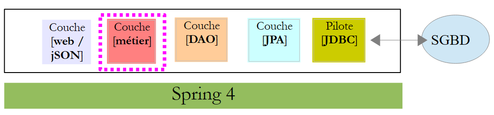 |
 |
- [IMetier] 是 [métier] 层的接口，而 [Metier] 是其实现；
- [AgendaMedecinJour] 和 [CreneauMedecinJour] 是两个业务实体；
8.4.6.1. 实体
实体 [CreneauMedecinJour] 将一个时间段与其内可能安排的预约相关联：
package rdvmedecins.domain;
import java.io.Serializable;
import rdvmedecins.entities.Creneau;
import rdvmedecins.entities.Rv;
public class CreneauMedecinJour implements Serializable {
private static final long serialVersionUID = 1L;
// 字段
private Creneau creneau;
private Rv rv;
// 构造函数
public CreneauMedecinJour() {
}
public CreneauMedecinJour(Creneau creneau, Rv rv) {
this.creneau=creneau;
this.rv=rv;
}
// toString
@Override
public String toString() {
return String.format("[%s %s]", creneau, rv);
}
// 获取器和设置器
...
}
- 第 12 行：时间段；
- 第13行：可能的预约——否则为 null；
实体 [AgendaMedecinJour] 代表某位医生在特定日期的日程表，即其预约列表：
package rdvmedecins.domain;
import java.io.Serializable;
import java.text.SimpleDateFormat;
import java.util.Date;
import rdvmedecins.entities.Medecin;
public class AgendaMedecinJour implements Serializable {
private static final long serialVersionUID = 1L;
// 字段
private Medecin medecin;
private Date jour;
private CreneauMedecinJour[] creneauxMedecinJour;
// 构造函数
public AgendaMedecinJour() {
}
public AgendaMedecinJour(Medecin medecin, Date jour, CreneauMedecinJour[] creneauxMedecinJour) {
this.medecin = medecin;
this.jour = jour;
this.creneauxMedecinJour = creneauxMedecinJour;
}
public String toString() {
StringBuffer str = new StringBuffer("");
for (CreneauMedecinJour cr : creneauxMedecinJour) {
str.append(" ");
str.append(cr.toString());
}
return String.format("Agenda[%s,%s,%s]", medecin, new SimpleDateFormat("dd/MM/yyyy").format(jour), str.toString());
}
// getter 和 setter
...
}
- 第13行：医生；
- 第14行：日程表中的日期；
- 第15行：其有预约或无预约的时间段；
8.4.6.2. 服务
[métier] 层面的界面如下：
package rdvmedecins.metier;
import java.util.Date;
import java.util.List;
import rdvmedecins.domain.AgendaMedecinJour;
import rdvmedecins.entities.Client;
import rdvmedecins.entities.Creneau;
import rdvmedecins.entities.Medecin;
import rdvmedecins.entities.Rv;
public interface IMetier {
// 客户列表
public List<Client> getAllClients();
// 医生列表
public List<Medecin> getAllMedecins();
// 医生时段列表
public List<Creneau> getAllCreneaux(long idMedecin);
// 某医生在特定日期的预约列表
public List<Rv> getRvMedecinJour(long idMedecin, Date jour);
// 按ID查找客户
public Client getClientById(long id);
// 按ID查找客户
public Medecin getMedecinById(long id);
// 根据ID查找预约
public Rv getRvById(long id);
// 根据ID查找时间段
public Creneau getCreneauById(long id);
// 添加一个 RV
public Rv ajouterRv(Date jour, Creneau créneau, Client client);
// 删除一个 RV
public void supprimerRv(Rv rv);
// 业务
public AgendaMedecinJour getAgendaMedecinJour(long idMedecin, Date jour);
}
注释说明了每个方法的作用。
[IMetier] 接口的实现是以下 [Metier] 类：
package rdvmedecins.metier;
import java.util.Date;
import java.util.Hashtable;
import java.util.List;
import java.util.Map;
import org.springframework.beans.factory.annotation.Autowired;
import org.springframework.stereotype.Service;
import rdvmedecins.domain.AgendaMedecinJour;
import rdvmedecins.domain.CreneauMedecinJour;
import rdvmedecins.entities.Client;
import rdvmedecins.entities.Creneau;
import rdvmedecins.entities.Medecin;
import rdvmedecins.entities.Rv;
import rdvmedecins.repositories.ClientRepository;
import rdvmedecins.repositories.CreneauRepository;
import rdvmedecins.repositories.MedecinRepository;
import rdvmedecins.repositories.RvRepository;
import com.google.common.collect.Lists;
@Service("métier")
public class Metier implements IMetier {
// 存储库
@Autowired
private MedecinRepository medecinRepository;
@Autowired
private ClientRepository clientRepository;
@Autowired
private CreneauRepository creneauRepository;
@Autowired
private RvRepository rvRepository;
// 接口实现
@Override
public List<Client> getAllClients() {
return Lists.newArrayList(clientRepository.findAll());
}
@Override
public List<Medecin> getAllMedecins() {
return Lists.newArrayList(medecinRepository.findAll());
}
@Override
public List<Creneau> getAllCreneaux(long idMedecin) {
return Lists.newArrayList(creneauRepository.getAllCreneaux(idMedecin));
}
@Override
public List<Rv> getRvMedecinJour(long idMedecin, Date jour) {
return Lists.newArrayList(rvRepository.getRvMedecinJour(idMedecin, jour));
}
@Override
public Client getClientById(long id) {
return clientRepository.findOne(id);
}
@Override
public Medecin getMedecinById(long id) {
return medecinRepository.findOne(id);
}
@Override
public Rv getRvById(long id) {
return rvRepository.findOne(id);
}
@Override
public Creneau getCreneauById(long id) {
return creneauRepository.findOne(id);
}
@Override
public Rv ajouterRv(Date jour, Creneau créneau, Client client) {
return rvRepository.save(new Rv(jour, client, créneau));
}
@Override
public void supprimerRv(Rv rv) {
rvRepository.delete(rv.getId());
}
public AgendaMedecinJour getAgendaMedecinJour(long idMedecin, Date jour) {
...
}
}
- 第24行：注解[@Service]是一个Spring注解，它将被注解的类转换为由Spring管理的组件。组件可以命名，也可以不命名。该组件命名为[métier]；
- 第 25 行：类 [Metier] 实现了接口 [IMetier]；
- 第 28 行：注解 [@Autowired] 是 Spring 注解。被该注解标注的字段值将由 Spring 通过指定类型或名称的 Spring 组件引用进行初始化（注入）。 此处注解 [@Autowired] 未指定名称。因此将进行基于类型的注入；
- 第 29 行：字段 [medecinRepository] 将通过类型为 [MedecinRepository] 的 Spring 组件引用进行初始化。该引用指向 Spring Data 为实现我们之前介绍过的接口 [MedecinRepository] 而生成的类；
- 第 30-35 行：此过程将针对其余三个已研究的接口重复执行；
- 第 39-41 行：实现 [getAllClients] 方法；
- 第 40 行：我们使用 [ClientRepository] 接口中的 [findAll] 方法。 该方法返回类型为 [Iterable<Client>]，我们使用静态方法 [Lists.newArrayList] 将其转换为 [List<Client>]。 类 [Lists] 定义在 Google Guava 库中。在 [pom.xml] 中已导入该依赖项：
<dependency>
<groupId>com.google.guava</groupId>
<artifactId>guava</artifactId>
<version>16.0.1</version>
</dependency>
- 第38-86行：[IMetier]接口的方法借助[DAO]层的类进行实现；
只有第88行的方法是[métier]层的特有方法。将其放置在此处是因为它执行的是业务处理，而不仅仅是简单的数据访问。如果没有这个方法，就没有理由创建[métier]层。 [getAgendaMedecinJour]方法如下：
public AgendaMedecinJour getAgendaMedecinJour(long idMedecin, Date jour) {
// 医生的时间段列表
List<Creneau> creneauxHoraires = getAllCreneaux(idMedecin);
// 该医生同一天的预约列表
List<Rv> reservations = getRvMedecinJour(idMedecin, jour);
// 根据已预约的就诊时间创建字典
Map<Long, Rv> hReservations = new Hashtable<Long, Rv>();
for (Rv resa : reservations) {
hReservations.put(resa.getCreneau().getId(), resa);
}
// 生成指定日期的日程表
AgendaMedecinJour agenda = new AgendaMedecinJour();
// 医生
agenda.setMedecin(getMedecinById(idMedecin));
// 日期
agenda.setJour(jour);
// 预约时段
CreneauMedecinJour[] creneauxMedecinJour = new CreneauMedecinJour[creneauxHoraires.size()];
agenda.setCreneauxMedecinJour(creneauxMedecinJour);
// 预订时段的填入
for (int i = 0; i < creneauxHoraires.size(); i++) {
// 日程表行
creneauxMedecinJour[i] = new CreneauMedecinJour();
// 时间段
Creneau créneau = creneauxHoraires.get(i);
long idCreneau = créneau.getId();
creneauxMedecinJour[i].setCreneau(créneau);
// 该时段是空闲还是已预订？
if (hReservations.containsKey(idCreneau)) {
// 时段已被占用 - 记录预订
Rv resa = hReservations.get(idCreneau);
creneauxMedecinJour[i].setRv(resa);
}
}
// 返回结果
return agenda;
}
建议读者阅读注释。算法如下：
- 检索指定医生的所有时间段；
- 获取该医生在指定日期内的所有预约；
- 利用这两项信息，即可判断某个时段是空闲还是已预约；
8.4.7. Spring项目的配置
 |
类 [DomainAndPersistenceConfig] 负责配置整个项目：
package rdvmedecins.config;
import javax.persistence.EntityManagerFactory;
import org.apache.tomcat.jdbc.pool.DataSource;
import org.springframework.context.annotation.Bean;
import org.springframework.context.annotation.ComponentScan;
import org.springframework.context.annotation.Configuration;
import org.springframework.data.jpa.repository.config.EnableJpaRepositories;
import org.springframework.orm.jpa.JpaTransactionManager;
import org.springframework.orm.jpa.JpaVendorAdapter;
import org.springframework.orm.jpa.LocalContainerEntityManagerFactoryBean;
import org.springframework.orm.jpa.vendor.Database;
import org.springframework.orm.jpa.vendor.HibernateJpaVendorAdapter;
import org.springframework.transaction.PlatformTransactionManager;
@Configuration
@EnableJpaRepositories(basePackages = { "rdvmedecins.repositories", "rdvmedecins.security" })
@ComponentScan(basePackages = { "rdvmedecins" })
public class DomainAndPersistenceConfig {
// 实体包 JPA
public final static String[] ENTITIES_PACKAGES = { "rdvmedecins.entities", "rdvmedecins.security" };
// 数据源 MySQL
@Bean
public DataSource dataSource() {
// 数据源 TomcatJdbc
DataSource dataSource = new DataSource();
// 配置 JDBC
dataSource.setDriverClassName("com.mysql.jdbc.Driver");
dataSource.setUrl("jdbc:mysql://localhost:3306/dbrdvmedecins");
dataSource.setUsername("root");
dataSource.setPassword("");
// 初始打开的连接
dataSource.setInitialSize(5);
// 结果
return dataSource;
}
// 提供程序 JPA 是 Hibernate
@Bean
public JpaVendorAdapter jpaVendorAdapter() {
HibernateJpaVendorAdapter hibernateJpaVendorAdapter = new HibernateJpaVendorAdapter();
hibernateJpaVendorAdapter.setShowSql(false);
hibernateJpaVendorAdapter.setGenerateDdl(false);
hibernateJpaVendorAdapter.setDatabase(Database.MYSQL);
return hibernateJpaVendorAdapter;
}
// EntityManagerFactory
@Bean
public EntityManagerFactory entityManagerFactory(JpaVendorAdapter jpaVendorAdapter, DataSource dataSource) {
LocalContainerEntityManagerFactoryBean factory = new LocalContainerEntityManagerFactoryBean();
factory.setJpaVendorAdapter(jpaVendorAdapter);
factory.setPackagesToScan(ENTITIES_PACKAGES);
factory.setDataSource(dataSource);
factory.afterPropertiesSet();
return factory.getObject();
}
// 事务管理器
@Bean
public PlatformTransactionManager transactionManager(EntityManagerFactory entityManagerFactory) {
JpaTransactionManager txManager = new JpaTransactionManager();
txManager.setEntityManagerFactory(entityManagerFactory);
return txManager;
}
}
- 第 17 行：该类是 Spring 配置类；
- 第 18 行：包含 Spring Data 接口 [CrudRepository] 的包。这些接口将被添加到 Spring 上下文中；
- 第 19 行：将 [rdvmedecins] 包及其所有带有 Spring 注解的子类添加到 Spring 上下文中。 在 [rdvmdecins.metier] 包中，将查找带有 [@Service] 注解的 [Metier] 类，并将其添加到 Spring 上下文中；
- 第 26-39 行：配置 Tomcat 连接池 JDBC（第 5 行）；
- 第 36 行：连接池默认将保持 5 个打开的连接。此行仅作为示例展示。 在我们的情况下，1 个连接就足够了。如果 [DAO] 层被多个线程使用，则需要此行。这种情况将在后续出现，即当 [DAO] 层作为 Web 应用程序的后端时，该应用程序本质上支持同时服务多个用户；
- 第 42-49 行：所使用的 JPA 实现是 Hibernate 实现；
- 第 45 行：SQL 没有日志；
- 第 46 行：未进行表的重新生成；
- 第 47 行：使用的 SGBD 实为 MySQL；
- 第53-61行：定义了JPA层中的EntityManagerFactory。 基于该对象，可获得 [EntityManager] 对象，该对象支持执行 JPA 操作；
- 第 57 行：指定包含 JPA 实体的包；
- 第58行：指定要连接到JPA层的数据源；
- 第 64-69 行：与前面的 EntityManagerFactory 关联的事务管理器。默认情况下，Spring Data 的 [CrudRepository] 接口方法会在事务内部执行。 事务在进入方法前启动，并在退出方法后（通过提交或回滚）结束；
8.4.8. [métier] 层的测试
类 [rdvmedecins.tests.Metier] 是 Spring / JUnit 4 的测试类：
package rdvmedecins.tests;
import java.text.ParseException;
import java.util.Date;
import java.util.List;
import org.junit.Assert;
import org.junit.Test;
import org.junit.runner.RunWith;
import org.springframework.beans.factory.annotation.Autowired;
import org.springframework.boot.test.SpringApplicationConfiguration;
import org.springframework.test.context.junit4.SpringJUnit4ClassRunner;
import rdvmedecins.config.DomainAndPersistenceConfig;
import rdvmedecins.domain.AgendaMedecinJour;
import rdvmedecins.entities.Client;
import rdvmedecins.entities.Creneau;
import rdvmedecins.entities.Medecin;
import rdvmedecins.entities.Rv;
import rdvmedecins.metier.IMetier;
@SpringApplicationConfiguration(classes = DomainAndPersistenceConfig.class)
@RunWith(SpringJUnit4ClassRunner.class)
public class Metier {
@Autowired
private IMetier métier;
@Test
public void test1(){
// 客户显示
List<Client> clients = métier.getAllClients();
display("Liste des clients :", clients);
// 医生列表
List<Medecin> medecins = métier.getAllMedecins();
display("Liste des médecins :", medecins);
// 医生时段显示
Medecin médecin = medecins.get(0);
List<Creneau> creneaux = métier.getAllCreneaux(médecin.getId());
display(String.format("Liste des créneaux du médecin %s", médecin), creneaux);
// 某医生在特定日期的预约列表
Date jour = new Date();
display(String.format("Liste des rv du médecin %s, le [%s]", médecin, jour), métier.getRvMedecinJour(médecin.getId(), jour));
// 添加 RV
Rv rv = null;
Creneau créneau = creneaux.get(2);
Client client = clients.get(0);
System.out.println(String.format("Ajout d'un Rv le [%s] dans le créneau %s pour le client %s", jour, créneau,
client));
rv = métier.ajouterRv(jour, créneau, client);
// 验证
Rv rv2 = métier.getRvById(rv.getId());
Assert.assertEquals(rv, rv2);
display(String.format("Liste des Rv du médecin %s, le [%s]", médecin, jour), métier.getRvMedecinJour(médecin.getId(), jour));
// 在同一天的同一时段添加一个 RV
// 应引发异常
System.out.println(String.format("Ajout d'un Rv le [%s] dans le créneau %s pour le client %s", jour, créneau,
client));
Boolean erreur = false;
try {
rv = métier.ajouterRv(jour, créneau, client);
System.out.println("Rv ajouté");
} catch (Exception ex) {
Throwable th = ex;
while (th != null) {
System.out.println(ex.getMessage());
th = th.getCause();
}
// 记录错误
erreur = true;
}
// 验证是否发生错误
Assert.assertTrue(erreur);
// 列出 RV
display(String.format("Liste des Rv du médecin %s, le [%s]", médecin, jour), métier.getRvMedecinJour(médecin.getId(), jour));
// 显示日程表
AgendaMedecinJour agenda = métier.getAgendaMedecinJour(médecin.getId(), jour);
System.out.println(agenda);
Assert.assertEquals(rv, agenda.getCreneauxMedecinJour()[2].getRv());
// 删除一个 RV
System.out.println("Suppression du Rv ajouté");
métier.supprimerRv(rv);
// 验证
rv2 = métier.getRvById(rv.getId());
Assert.assertNull(rv2);
display(String.format("Liste des Rv du médecin %s, le [%s]", médecin, jour), métier.getRvMedecinJour(médecin.getId(), jour));
}
// 实用程序方法 - 显示集合中的元素
private void display(String message, Iterable<?> elements) {
System.out.println(message);
for (Object element : elements) {
System.out.println(element);
}
}
}
- 第 22 行：注解 [@SpringApplicationConfiguration] 允许使用之前研究的配置文件 [DomainAndPersistenceConfig]。因此，该测试类可以利用该文件中定义的所有 Bean；
- 第23行：注解[@RunWith]支持将Spring与JUnit集成：该类将能够作为JUnit测试进行执行。 [@RunWith] 是一个 JUnit 注解（第 9 行），而类 [SpringJUnit4ClassRunner] 是一个 Spring 类（第 12 行）；
- 第26-27行：在测试类中注入对[métier]层的引用；
- 许多测试仅是简单的视觉测试：
- 第32-33行：客户列表；
- 第 35-36 行：医生列表；
- 第 39-40 行：医生预约时段列表；
- 第43行：某位医生的预约列表；
- 第50行：添加新预约。方法[ajouterRv]会返回包含额外信息（即主键id）的预约；
- 第 53 行：使用该主键在数据库中查询预约；
- 第54行：验证所查询的预约与检索到的预约是否一致。 需要提醒的是，实体 [Rv] 的方法 [equals] 已被重新定义：如果两个预约的 id 相同，则视为相等。这里表明，新增的预约确实已成功存入数据库；
- 第61-73行：尝试第二次添加同一条预约。由于存在唯一性约束，此操作应被SGBD拒绝：
CREATE TABLE IF NOT EXISTS `rv` (
`ID` bigint(20) NOT NULL AUTO_INCREMENT,
`JOUR` date NOT NULL,
`ID_CLIENT` bigint(20) NOT NULL,
`ID_CRENEAU` bigint(20) NOT NULL,
`VERSION` int(11) NOT NULL DEFAULT '0',
PRIMARY KEY (`ID`),
UNIQUE KEY `UNQ1_RV` (`JOUR`,`ID_CRENEAU`),
KEY `FK_RV_ID_CRENEAU` (`ID_CRENEAU`),
KEY `FK_RV_ID_CLIENT` (`ID_CLIENT`)
) ENGINE=InnoDB DEFAULT CHARSET=utf8 COLLATE=utf8_swedish_ci AUTO_INCREMENT=60 ;
上文第 8 行表明，[JOUR, ID_CRENEAU] 组合必须是唯一的，这会阻止在同一天的同一时间段内安排两个约会。
- 第73行：检查是否确实发生了异常；
- 第77行：获取刚刚为其添加了预约的医生的日程表；
- 第79行：验证所添加的预约是否已正确显示在该医生的日程表中；
- 第82行：删除已添加的预约；
- 第84行：从数据库中查询被删除的预约；
- 第85行：验证是否获取到了指针null，这表明所查找的预约不存在；
测试执行成功：
 |
8.4.9. 控制台程序
 |
该控制台程序非常基础。它演示了如何检索外键：
package rdvmedecins.boot;
import java.text.SimpleDateFormat;
import java.util.Date;
import org.springframework.boot.SpringApplication;
import org.springframework.context.ConfigurableApplicationContext;
import rdvmedecins.config.DomainAndPersistenceConfig;
import rdvmedecins.entities.Client;
import rdvmedecins.entities.Creneau;
import rdvmedecins.entities.Rv;
import rdvmedecins.metier.IMetier;
public class Boot {
// 启动
public static void main(String[] args) {
// 准备配置
SpringApplication app = new SpringApplication(DomainAndPersistenceConfig.class);
app.setLogStartupInfo(false);
// 启动
ConfigurableApplicationContext context = app.run(args);
// 业务
IMetier métier = context.getBean(IMetier.class);
try {
// 添加一个 RV
Date jour = new Date();
System.out.println(String.format("Ajout d'un Rv le [%s] dans le créneau 1 pour le client 1", new SimpleDateFormat("dd/MM/yyyy").format(jour)));
Client client = (Client) new Client().build(1L, 1L);
Creneau créneau = (Creneau) new Creneau().build(1L, 1L);
Rv rv = métier.ajouterRv(jour, créneau, client);
System.out.println(String.format("Rv ajouté = %s", rv));
// 验证
créneau = métier.getCreneauById(1L);
long idMedecin = créneau.getIdMedecin();
display("Liste des rendez-vous", métier.getRvMedecinJour(idMedecin, jour));
} catch (Exception ex) {
System.out.println("Exception : " + ex.getCause());
}
// 关闭 Spring 上下文
context.close();
}
// 辅助方法 - 显示集合中的元素
private static <T> void display(String message, Iterable<T> elements) {
System.out.println(message);
for (T element : elements) {
System.out.println(element);
}
}
}
该程序会添加一个约会，然后验证是否已成功添加。
- 第 19 行：类 [SpringApplication] 将调用配置类 [DomainAndPersistenceConfig]；
- 第 20 行：移除应用程序的启动日志；
- 第22行：执行类[SpringApplication]。该类返回一个Spring上下文，即已注册Bean的列表；
- 第 24 行：获取实现 [IMetier] 接口的 Bean 的引用。因此，这是一个指向 [métier] 层的引用；
- 第 27-31 行：为第 1 号客户在第 1 个时段内添加一个新的今日预约。客户和时段是专门创建的，旨在说明仅使用标识符。此处初始化了版本号，但其实可以填入任意值。该版本号在此处未被使用；
- 第34行：需要查询拥有第1号时段的医生。为此，需从数据库中检索第1号时段。由于当前处于[FetchType.LAZY]模式，系统不会随时段一并返回医生信息。 不过，我们在实体 [Creneau] 中特意预留了一个字段 [idMedecin]，用于获取医生的主键；
- 第35行：获取医生的主键；
- 第36行：显示该医生的预约列表；
控制台输出结果如下：
8.4.10. 日志管理
控制台日志由两个文件 [application.properties] 和 [logback.xml] 配置 [1]：
 |
文件 [application.properties] 由 Spring Boot 框架调用。可以在其中定义大量参数，以更改 Spring Boot 的默认值（http://docs.spring.io/spring-boot/docs/current/reference/html/common-application-properties.html）。 其内容如下：
logging.level.org.hibernate=OFF
spring.main.show-banner=false
- 第 1 行：控制 Hibernate 的日志级别——此处不生成日志
- 第 2 行：控制 Spring Boot 横幅的显示——此处不显示横幅
文件 [logback.xml] 是日志框架 [logback] 的配置文件 [2]：
<configuration>
<appender name="STDOUT" class="ch.qos.logback.core.ConsoleAppender">
<!-- 编码器默认被分配类型 ch.qos.logback.classic.encoder.PatternLayoutEncoder -->
<encoder>
<pattern>%d{HH:mm:ss.SSS} [%thread] %-5level %logger{36} - %msg%n</pattern>
</encoder>
</appender>
<!-- 日志级别控制 -->
<root level="info"> <!-- 关闭、信息、调试、警告 -->
<appender-ref ref="STDOUT" />
</root>
</configuration>
- 通用日志级别由第 9 行控制——此处为 [info] 级别的日志；
这将产生以下结果：
如果将 Hibernate 的日志级别改为 [info]（其他设置保持不变）：
logging.level.org.hibernate=INFO
spring.main.show-banner=false
则会得到以下结果：
如果将日志级别设置为 [debug]（其他设置保持不变）：
logging.level.org.hibernate=DEBUG
spring.main.show-banner=false
结果如下：
10:35:13.522 [main] DEBUG o.s.b.f.s.DefaultListableBeanFactory - Eagerly caching bean 'clientRepository' to allow for resolving potential circular references
10:35:13.522 [main] DEBUG o.s.b.f.annotation.InjectionMetadata - Processing injected element of bean 'clientRepository': PersistenceElement for public void org.springframework.data.jpa.repository.support.JpaRepositoryFactoryBean.setEntityManager(javax.persistence.EntityManager)
10:35:13.522 [main] DEBUG o.s.b.f.s.DefaultListableBeanFactory - Creating instance of bean '(inner bean)#6a2eea2a'
10:35:13.522 [main] DEBUG o.s.b.f.s.DefaultListableBeanFactory - Creating instance of bean '(inner bean)#b967222'
10:35:13.522 [main] DEBUG o.s.b.f.s.DefaultListableBeanFactory - Invoking afterPropertiesSet() on bean with name '(inner bean)#b967222'
10:35:13.522 [main] DEBUG o.s.b.f.s.DefaultListableBeanFactory - Finished creating instance of bean '(inner bean)#b967222'
10:35:13.522 [main] DEBUG o.s.b.f.s.DefaultListableBeanFactory - Finished creating instance of bean '(inner bean)#6a2eea2a'
10:35:13.522 [main] DEBUG o.s.b.f.s.DefaultListableBeanFactory - Creating instance of bean '(inner bean)#1ba05e38'
10:35:13.522 [main] DEBUG o.s.b.f.s.DefaultListableBeanFactory - Finished creating instance of bean '(inner bean)#1ba05e38'
10:35:13.522 [main] DEBUG o.s.b.f.s.DefaultListableBeanFactory - Creating instance of bean '(inner bean)#6c298dc'
10:35:13.522 [main] DEBUG o.s.b.f.s.DefaultListableBeanFactory - Returning cached instance of singleton bean 'entityManagerFactory'
10:35:13.522 [main] DEBUG o.s.b.f.s.DefaultListableBeanFactory - Finished creating instance of bean '(inner bean)#6c298dc'
10:35:13.522 [main] DEBUG o.s.b.f.s.DefaultListableBeanFactory - Returning cached instance of singleton bean 'jpaMappingContext'
10:35:13.522 [main] DEBUG o.s.b.f.s.DefaultListableBeanFactory - Invoking afterPropertiesSet() on bean with name 'clientRepository'
10:35:13.522 [main] DEBUG o.s.o.j.SharedEntityManagerCreator$SharedEntityManagerInvocationHandler - Creating new EntityManager for shared EntityManager invocation
10:35:13.522 [main] DEBUG o.s.o.jpa.EntityManagerFactoryUtils - Closing JPA EntityManager
10:35:13.522 [main] DEBUG o.s.o.j.SharedEntityManagerCreator$SharedEntityManagerInvocationHandler - Creating new EntityManager for shared EntityManager invocation
10:35:13.522 [main] DEBUG o.s.o.jpa.EntityManagerFactoryUtils - Closing JPA EntityManager
10:35:13.522 [main] DEBUG o.s.aop.framework.JdkDynamicAopProxy - Creating JDK dynamic proxy: target source is org.springframework.data.jpa.repository.support.CrudMethodMetadataPostProcessor$ThreadBoundTargetSource@723ed581
10:35:13.522 [main] DEBUG o.s.aop.framework.JdkDynamicAopProxy - Creating JDK dynamic proxy: target source is SingletonTargetSource for target object [org.springframework.data.jpa.repository.support.SimpleJpaRepository@796065aa]
10:35:13.522 [main] DEBUG o.s.b.f.s.DefaultListableBeanFactory - Finished creating instance of bean 'clientRepository'
10:35:13.522 [main] DEBUG o.s.b.f.a.AutowiredAnnotationBeanPostProcessor - Autowiring by type from bean name 'métier' to bean named 'clientRepository'
...
8.4.11. [web / jSON]层
 |
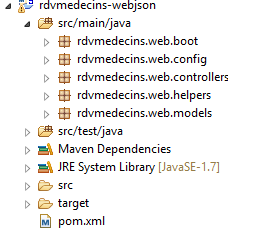 |
我们将分几个步骤构建 [web / jSON] 层：
- 步骤 1：构建一个不包含身份验证功能的运行中的 Web 层；
- 步骤 2：使用 Spring Security 实现身份验证；
- 步骤 3：配置 CORS 和 [Cross-Origin Resource Sharing (CORS) is a mechanism that allows many resources (e.g. fonts, JavaScript, etc.) on a web page to be requested from another domain outside the domain the resource originated from. (Wikipedia)]。我们 Web 服务的客户端将是一个 Angular Web 客户端，它未必与我们的 Web 服务位于同一域名下。默认情况下，除非 Web 服务授权，否则它无法访问该服务。我们将探讨具体实现方法；
8.4.11.1. Maven 配置
该项目的 [pom.xml] 文件如下：
<?xml version="1.0" encoding="UTF-8"?>
<project xmlns="http://maven.apache.org/POM/4.0.0" xmlns:xsi="http://www.w3.org/2001/XMLSchema-instance"
xsi:schemaLocation="http://maven.apache.org/POM/4.0.0 http://maven.apache.org/xsd/maven-4.0.0.xsd">
<modelVersion>4.0.0</modelVersion>
<groupId>istia.st.spring4.mvc</groupId>
<artifactId>rdvmedecins-webjson-server</artifactId>
<version>0.0.1-SNAPSHOT</version>
<packaging>jar</packaging>
<name>rdvmedecins-webjson-server</name>
<description>Gestion de RV Médecins</description>
<parent>
<groupId>org.springframework.boot</groupId>
<artifactId>spring-boot-starter-parent</artifactId>
<version>1.2.6.RELEASE</version>
</parent>
<dependencies>
<!-- Spring MVC Web 层 -->
<dependency>
<groupId>org.springframework.boot</groupId>
<artifactId>spring-boot-starter-web</artifactId>
</dependency>
<!-- 测试层 -->
<dependency>
<groupId>org.springframework.boot</groupId>
<artifactId>spring-boot-starter-test</artifactId>
<scope>test</scope>
</dependency>
<!-- DAO 层 -->
<dependency>
<groupId>istia.st.spring4.rdvmedecins</groupId>
<artifactId>rdvmedecins-metier-dao</artifactId>
<version>0.0.1-SNAPSHOT</version>
</dependency>
</dependencies>
...
</project>
- 第 12-15 行：父 Maven 项目；
- 第 19-22 行：Spring 项目 MVC 的依赖项；
- 第 24-28 行：JUnit / Spring 测试的依赖项；
- 第 30-34 行：[métier, DAO, JPA] 层级项目的依赖项；
8.4.11.2. Web 服务接口
 |
- 在上述 [1] 中，浏览器只能请求数量有限且语法精确的 URL；
- 在 [4] 中，它会收到一个 jSON 响应；
我们Web服务的响应都将采用相同的形式，对应于将以下[Response]类型对象转换为jSON的过程：
package rdvmedecins.web.models;
import java.util.List;
public class Response<T> {
// ----------------- 属性
// 操作状态
private int status;
// 可能的错误消息
private List<String> messages;
// 响应正文
private T body;
// 构造函数
public Response() {
}
public Response(int status, List<String> messages, T body) {
this.status = status;
this.messages = messages;
this.body = body;
}
// 获取器和设置器
...
}
- 第7行：响应错误代码为0时：OK，其他情况：KO；
- 第11行：错误消息列表（如有错误）；
- 第13行：响应正文；
下面展示的屏幕截图展示了Web服务/jSON的界面：
[/getAllClients] 诊所所有患者列表
 |
[/getAllMedecins]诊所所有医生的列表
 |
某位医生的预约时段列表 [/getAllCreneaux/{idMedecin}]
 |
某位医生的预约列表 [/getRvMedecinJour/{idMedecin}/{yyyy-mm-dd}
 |
医生日程表 [/getAgendaMedecinJour/{idMedecin}/{aaaa-mm-jj}]
 |
要添加/删除预约，我们使用 Chrome 扩展程序 [Advanced Rest Client]，因为这些操作需要通过 POST 完成。
添加预约 [/ajouterRv]
 |
- 在 [0] 中，使用 Web 服务的 URL；
- 在 [1] 中，使用方法 POST；
- 在 [2] 中，以 {day, idClient, idCreneau} 形式传输给 Web 服务的文本为 jSON；
- 在 [3] 中，客户端告知 Web 服务，其将以 jSON 格式发送信息；
响应如下：
 |
- 在 [4] 中：客户端发送的头部信息表明其发送的数据格式为 jSON；
- 变为 [5]：Web 服务响应称其同样发送 jSON；
- 在 [6] 中：Web 服务的响应为 jSON。字段 [body] 包含新增约会的 jSON 格式；
可验证新约会的存在：
 |
请注意该约会的ID为[50]。我们将删除该约会。
删除预约 [/supprimerRv]
 |
- 在 [1] 中，Web 服务的 URL；
- 在 [2] 中，使用 POST 方法；
- 在 [3] 中，以 {idRv} 形式传输给 Web 服务的 jSON 文本；
- 在 [4] 中，客户端告知 Web 服务将向其发送 jSON 信息；
响应如下：
 |
- 在 [5] 中：字段 [status] 的值为 0，表明操作成功；
可验证该约会的删除情况：
 |
如上所示，患者 [Mme GERMAIN] 的预约已不存在。
该 Web 服务还支持通过标识符检索实体：
 |
 |
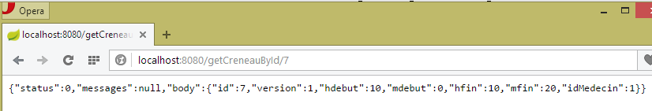 |
 |
所有这些 URL 实体均由控制器 [RdvMedecinsController] 处理，我们将在后续介绍该控制器。
8.4.11.3. Web服务配置
 |
配置类 [AppConfig] 如下：
package rdvmedecins.web.config;
import org.springframework.context.annotation.ComponentScan;
import org.springframework.context.annotation.Configuration;
import org.springframework.context.annotation.Import;
import rdvmedecins.config.DomainAndPersistenceConfig;
@Configuration
@ComponentScan(basePackages = { "rdvmedecins.web" })
@Import({ DomainAndPersistenceConfig.class, SecurityConfig.class, WebConfig.class })
public class AppConfig {
}
- 第 12 行：类 [AppConfig] 配置整个应用程序；
- 第 9 行：类 [AppConfig] 是 Spring 配置类；
- 第 10 行：要求在 [rdvmedecins.web] 包及其子包中查找 Spring 组件。因此将发现以下组件：
- [@RestController RdvMedecinsController] 位于 [rdvmedecins.web.controllers] 包中；
- [@RestController RdvMedecinsController] 位于 [rdvmedecins.web.controllers] 包中；
- 第 11 行：导入类 [DomainAndPersistenceConfig]，该类用于配置项目 [rdvmedecins-metier-dao]，以便访问该项目的 Bean；
- 第 11 行：类 [SecurityConfig] 配置 Web 应用程序的安全性。我们暂时忽略它；
- 第 11 行：类 [WebConfig] 配置 [web / jSON] 层；
[WebConfig] 类如下：
package rdvmedecins.web.config;
import org.springframework.boot.context.embedded.EmbeddedServletContainerFactory;
import org.springframework.boot.context.embedded.ServletRegistrationBean;
import org.springframework.boot.context.embedded.tomcat.TomcatEmbeddedServletContainerFactory;
import org.springframework.context.annotation.Bean;
import org.springframework.context.annotation.Configuration;
import org.springframework.web.servlet.DispatcherServlet;
import org.springframework.web.servlet.config.annotation.EnableWebMvc;
import com.fasterxml.jackson.databind.ObjectMapper;
import com.fasterxml.jackson.databind.ser.impl.SimpleBeanPropertyFilter;
import com.fasterxml.jackson.databind.ser.impl.SimpleFilterProvider;
@Configuration
@EnableWebMvc
public class WebConfig {
// 用于头部的 DispatcherServlet 配置CORS
@Bean
public DispatcherServlet dispatcherServlet() {
DispatcherServlet servlet = new DispatcherServlet();
servlet.setDispatchOptionsRequest(true);
return servlet;
}
@Bean
public ServletRegistrationBean servletRegistrationBean(DispatcherServlet dispatcherServlet) {
return new ServletRegistrationBean(dispatcherServlet, "/*");
}
@Bean
public EmbeddedServletContainerFactory embeddedServletContainerFactory() {
return new TomcatEmbeddedServletContainerFactory("", 8080);
}
// 映射器jSON
@Bean
public ObjectMapper jsonMapper() {
return new ObjectMapper();
}
@Bean
public ObjectMapper jsonMapperShortCreneau() {
ObjectMapper jsonMapperShortCreneau = new ObjectMapper();
SimpleBeanPropertyFilter creneauFilter = SimpleBeanPropertyFilter.serializeAllExcept("medecin");
jsonMapperShortCreneau.setFilters(new SimpleFilterProvider().addFilter("creneauFilter", creneauFilter));
return jsonMapperShortCreneau;
}
@Bean
public ObjectMapper jsonMapperLongRv() {
ObjectMapper jsonMapperLongRv = new ObjectMapper();
SimpleBeanPropertyFilter rvFilter = SimpleBeanPropertyFilter.serializeAllExcept("");
SimpleBeanPropertyFilter creneauFilter = SimpleBeanPropertyFilter.serializeAllExcept("medecin");
jsonMapperLongRv.setFilters(
new SimpleFilterProvider().addFilter("rvFilter", rvFilter).addFilter("creneauFilter", creneauFilter));
return jsonMapperLongRv;
}
@Bean
public ObjectMapper jsonMapperShortRv() {
ObjectMapper jsonMapperShortRv = new ObjectMapper();
SimpleBeanPropertyFilter rvFilter = SimpleBeanPropertyFilter.serializeAllExcept("client", "creneau");
jsonMapperShortRv.setFilters(new SimpleFilterProvider().addFilter("rvFilter", rvFilter));
return jsonMapperShortRv;
}
}
- 第 20-25 行：定义了 Bean [dispatcherServlet]。类 [DispatcherServlet] 是 Spring 框架 MVC 的 Servlet。 它承担着 [FrontController] 的作用：拦截发往 Spring 网站 MVC 的请求，并将其交由该网站的某个控制器（Controller）进行处理；
- 第 22 行：类实例化；
- 第23行：此行目前可以忽略；
- 第27-30行：servlet [dispatcherServlet] 处理所有 URL 请求；
- 第 27-30 行：启动项目依赖项中内置的 Tomcat 服务器。它将在 8080 端口上运行；
- 第 38-67 行：配置了四个 jSON 映射器，它们使用不同的 jSON 过滤器；
- 第38-41行：一个未配置过滤器的jSON映射器；
- 第43-49行：映射器 jSON [jsonMapperShortCreneau] 对对象 [Creneau] 进行序列化/反序列化，同时忽略字段 [Creneau.medecin]；
- 第 51-59 行：映射器 jSON [jsonMapperLongRv] 在序列化/反序列化 [Rv] 对象时忽略了字段 [Rv.creneau.medecin]；
- 第 61-67 行：映射器 jSON [jsonMapperShortRv] 序列化 / 反序列化 [Rv] 对象，同时忽略字段 [Rv.creneau] 和 [Rv.client]；
8.4.11.4. [ApplicationModel] 类
 |
[ApplicationModel] 类将用于两件事：
- 作为缓存，用于存储医生和患者（客户）列表；
- 作为控制器们的统一接口；
package rdvmedecins.web.models;
import java.util.Date;
import java.util.List;
import javax.annotation.PostConstruct;
import org.springframework.beans.factory.annotation.Autowired;
import org.springframework.stereotype.Component;
import rdvmedecins.domain.AgendaMedecinJour;
import rdvmedecins.entities.Client;
import rdvmedecins.entities.Creneau;
import rdvmedecins.entities.Medecin;
import rdvmedecins.entities.Rv;
import rdvmedecins.metier.IMetier;
import rdvmedecins.web.helpers.Static;
@Component
public class ApplicationModel implements IMetier {
// [métier] 层
@Autowired
private IMetier métier;
// 来自 [métier] 层的数据
private List<Medecin> médecins;
private List<Client> clients;
private List<String> messages;
// 配置数据
private boolean CORSneeded = false;
private boolean secured = false;
@PostConstruct
public void init() {
// 获取医生和客户
try {
médecins = métier.getAllMedecins();
clients = métier.getAllClients();
} catch (Exception ex) {
messages = Static.getErreursForException(ex);
}
}
// 获取器
public List<String> getMessages() {
return messages;
}
// ------------------------- [métier] 层接口
@Override
public List<Client> getAllClients() {
return clients;
}
@Override
public List<Medecin> getAllMedecins() {
return médecins;
}
@Override
public List<Creneau> getAllCreneaux(long idMedecin) {
return métier.getAllCreneaux(idMedecin);
}
@Override
public List<Rv> getRvMedecinJour(long idMedecin, Date jour) {
return métier.getRvMedecinJour(idMedecin, jour);
}
@Override
public Client getClientById(long id) {
return métier.getClientById(id);
}
@Override
public Medecin getMedecinById(long id) {
return métier.getMedecinById(id);
}
@Override
public Rv getRvById(long id) {
return métier.getRvById(id);
}
@Override
public Creneau getCreneauById(long id) {
return métier.getCreneauById(id);
}
@Override
public Rv ajouterRv(Date jour, Creneau creneau, Client client) {
return métier.ajouterRv(jour, creneau, client);
}
@Override
public void supprimerRv(long idRv) {
métier.supprimerRv(idRv);
}
@Override
public AgendaMedecinJour getAgendaMedecinJour(long idMedecin, Date jour) {
return métier.getAgendaMedecinJour(idMedecin, jour);
}
// 获取器和设置器
public boolean isCORSneeded() {
return CORSneeded;
}
public boolean isSecured() {
return secured;
}
}
- 第 19 行：注解 [@Component] 将类 [ApplicationModel] 定义为 Spring 组件。与迄今为止所见的所有 Spring 组件（@Controller 除外）一样，该类型的对象仅会实例化一个（单例）；
- 第 20 行：类 [ApplicationModel] 实现了接口 [IMetier]；
- 第 23-24 行：Spring 注入了一个指向 [métier] 层的引用；
- 第 34 行：注解 [@PostConstruct] 确保在 [ApplicationModel] 类实例化后立即执行方法 [init]；
- 第 38-39 行：从 [métier] 层获取医生和客户列表；
- 第 41 行：若发生异常，将异常堆栈中的消息存储在第 17 行的字段中；
Web 层的架构演变如下：
 |
- 在 [2b] 中，控制器的方法与单例 [ApplicationModel] 进行通信；
这种策略为缓存管理提供了灵活性。目前医生的时段并未被缓存。若要将其缓存，只需修改类 [ApplicationModel]。这不会对控制器产生任何影响，控制器将像以前一样继续使用方法 [List<Creneau> getAllCreneaux(long idMedecin)]。 需要修改的是该方法在 [ApplicationModel] 中的实现。
8.4.11.5. 静态类
类 [Static] 汇集了一组不涉及“业务”或“Web”方面的静态实用方法：
 |
其代码如下：
package rdvmedecins.web.helpers;
import java.util.ArrayList;
import java.util.List;
public class Static {
public Static() {
}
// 获取异常的错误消息列表
public static List<String> getErreursForException(Exception exception) {
// 获取异常的错误消息列表
Throwable cause = exception;
List<String> erreurs = new ArrayList<String>();
while (cause != null) {
erreurs.add(cause.getMessage());
cause = cause.getCause();
}
return erreurs;
}
}
- 第 12 行：方法 [Static.getErreursForException]，该方法在类 [ApplicationModel] 的方法 [init] 中被调用（见下文第 8 行）：
@PostConstruct
public void init() {
// 获取医生和客户
try {
médecins = métier.getAllMedecins();
clients = métier.getAllClients();
} catch (Exception ex) {
messages = Static.getErreursForException(ex);
}
}
该方法使用异常 [exception] 及其包含的异常 [exception.getCause()] 的错误消息，构建一个 [List<String>] 对象。
8.4.11.6. 控制器 [RdvMedecinsController] 的骨架
 |
接下来我们将详细说明 Web 服务中 URL 的处理流程。该处理涉及三个主要类：
- 控制器 [RdvMedecinsController]；
- 辅助方法类 [Static]；
- 缓存类 [ApplicationModel]；
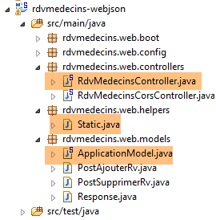 |
控制器 [RdvMedecinsController] 如下所示：
package rdvmedecins.web.controllers;
import java.text.ParseException;
import java.text.SimpleDateFormat;
import java.util.ArrayList;
import java.util.Date;
import java.util.List;
import javax.annotation.PostConstruct;
import javax.servlet.http.HttpServletResponse;
import org.springframework.beans.factory.annotation.Autowired;
import org.springframework.stereotype.Controller;
import org.springframework.web.bind.annotation.PathVariable;
import org.springframework.web.bind.annotation.RequestBody;
import org.springframework.web.bind.annotation.RequestHeader;
import org.springframework.web.bind.annotation.RequestMapping;
import org.springframework.web.bind.annotation.RequestMethod;
import org.springframework.web.bind.annotation.ResponseBody;
import com.fasterxml.jackson.core.JsonProcessingException;
import com.fasterxml.jackson.databind.ObjectMapper;
import rdvmedecins.domain.AgendaMedecinJour;
import rdvmedecins.entities.Client;
import rdvmedecins.entities.Creneau;
import rdvmedecins.entities.Medecin;
import rdvmedecins.entities.Rv;
import rdvmedecins.web.helpers.Static;
import rdvmedecins.web.models.ApplicationModel;
import rdvmedecins.web.models.PostAjouterRv;
import rdvmedecins.web.models.PostSupprimerRv;
import rdvmedecins.web.models.Response;
@Controller
public class RdvMedecinsController {
@Autowired
private ApplicationModel application;
@Autowired
private RdvMedecinsCorsController rdvMedecinsCorsController;
// 消息列表
private List<String> messages;
// 映射器 jSON
@Autowired
private ObjectMapper jsonMapper;
@Autowired
private ObjectMapper jsonMapperShortCreneau;
@Autowired
private ObjectMapper jsonMapperLongRv;
@Autowired
private ObjectMapper jsonMapperShortRv;
@PostConstruct
public void init() {
// 应用程序错误消息
messages = application.getMessages();
}
// 医生列表
@RequestMapping(value = "/getAllMedecins", method = RequestMethod.GET, produces = "application/json; charset=UTF-8")
@ResponseBody
public String getAllMedecins() throws JsonProcessingException {...}
// 客户列表
@RequestMapping(value = "/getAllClients", method = RequestMethod.GET, produces = "application/json; charset=UTF-8")
@ResponseBody
public String getAllClients() throws JsonProcessingException {...}
// 医生时段列表
@RequestMapping(value = "/getAllCreneaux/{idMedecin}", method = RequestMethod.GET, produces = "application/json; charset=UTF-8")
@ResponseBody
public String getAllCreneaux(@PathVariable("idMedecin") long idMedecin) throws JsonProcessingException {...}
// 医生预约列表
@RequestMapping(value = "/getRvMedecinJour/{idMedecin}/{jour}", method = RequestMethod.GET, produces = "application/json; charset=UTF-8")
@ResponseBody
public String getRvMedecinJour(@PathVariable("idMedecin") long idMedecin, @PathVariable("jour") String jour)
throws JsonProcessingException {...}
@RequestMapping(value = "/getClientById/{id}", method = RequestMethod.GET, produces = "application/json; charset=UTF-8")
@ResponseBody
public String getClientById(@PathVariable("id") long id) throws JsonProcessingException {...}
@RequestMapping(value = "/getMedecinById/{id}", method = RequestMethod.GET, produces = "application/json; charset=UTF-8")
@ResponseBody
public String getMedecinById(@PathVariable("id") long id) String origin) throws JsonProcessingException {...}
@RequestMapping(value = "/getRvById/{id}", method = RequestMethod.GET, produces = "application/json; charset=UTF-8")
@ResponseBody
public String getRvById(@PathVariable("id") long id) throws JsonProcessingException {...}
@RequestMapping(value = "/getCreneauById/{id}", method = RequestMethod.GET, produces = "application/json; charset=UTF-8")
@ResponseBody
public String getCreneauById(@PathVariable("id") long id) throws JsonProcessingException {...}
@RequestMapping(value = "/ajouterRv", method = RequestMethod.POST, produces = "application/json; charset=UTF-8", consumes = "application/json; charset=UTF-8")
@ResponseBody
public String ajouterRv(@RequestBody PostAjouterRv post) throws JsonProcessingException {...}
@RequestMapping(value = "/supprimerRv", method = RequestMethod.POST, produces = "application/json; charset=UTF-8", consumes = "application/json; charset=UTF-8")
@ResponseBody
public String supprimerRv(@RequestBody PostSupprimerRv post) throws JsonProcessingException {...}
@RequestMapping(value = "/getAgendaMedecinJour/{idMedecin}/{jour}", method = RequestMethod.GET, produces = "application/json; charset=UTF-8")
@ResponseBody
public String getAgendaMedecinJour(@PathVariable("idMedecin") long idMedecin, @PathVariable("jour") String jour)
throws JsonProcessingException {...}
@RequestMapping(value = "/authenticate", method = RequestMethod.GET, produces = "application/json; charset=UTF-8")
@ResponseBody
public String authenticate() throws JsonProcessingException {...}
}
- 第 35 行：注解 [@Controller] 将类 [RdvMedecinsController] 标记为 Spring 控制器，即 MVC 中的 C；
- 第 38-39 行：Spring 将在此处注入一个 [ApplicationModel] 类型的对象。我们已对此进行过介绍；
- 第 41-42 行：Spring 将在此处注入一个 [RdvMedecinsCorsController] 类型的对象。我们将在后续内容中介绍该对象；
- 第 48-58 行：在配置类 [WebConfig] 中定义的映射器 jSON；
- 第 60 行：注解 [@PostConstruct] 标记了一个方法，该方法将在类实例化后立即执行。当该方法执行时，Spring 注入的对象已可用；
- 第 63 行：从 [ApplicationModel] 对象中获取可能的错误消息。 该对象在应用程序启动时被实例化，并尝试将医生和客户缓存到缓存中。如果缓存失败，则会生成 [messages!=null]。这将使控制器的方法能够判断应用程序是否已正确初始化；
- 第 67-118 行：由服务 [web / jSON] 暴露的 URL。所有方法都会返回以下 [Response<T>] 类型对象的 jSON 字符串：
 |
package rdvmedecins.web.models;
import java.util.List;
public class Response<T> {
// ----------------- 属性
// 操作状态
private int status;
// 可能的错误信息
private List<String> messages;
// 响应正文
private T body;
// 构造函数
public Response() {
}
public Response(int status, List<String> messages, T body) {
this.status = status;
this.messages = messages;
this.body = body;
}
// getter 和 setter
...
}
- 第 9 行：一个错误代码：0 表示无错误；
- 第 11 行：若为 [status!=0]，则 [messages] 表示错误消息列表；
- 第13行：响应中封装的T对象。若发生错误，T的值为null；
该对象在发送至客户端浏览器前被序列化为 jSON；
- 第 67 行：暴露的 URL 应为 [/getAllMedecins]。客户端必须使用 [GET] 方法进行请求（method = RequestMethod.GET）。 如果该 URL 是由 POST 请求的，则会被拒绝，Spring MVC 会向 Web 客户端发送 HTTP 错误代码。 该方法会直接将响应返回给客户端（第68行）。响应内容将是一个字符串（第67行）。 将向客户端发送 HTTP [Content-type : application/json; charset=UTF-8] 头部，以告知其即将接收字符串 jSON（第 67 行）；
- 第77行：URL由{idMedecin}进行配置。该参数通过第79行的注释[@PathVariable]获取；
- 第79行：参数[long idMedecin]的值来自URL和[@PathVariable("idMedecin")]中的参数{idMedecin}。 URL 中的参数与方法中的参数可能具有不同的名称。 这里需要注意的是，[@PathVariable("idMedecin")] 的类型为 String（整个 URL 都是 String），而参数 [long idMedecin] 的类型为 [long]。 类型转换是自动进行的。如果类型转换失败，将返回错误代码 HTTP；
- 第 105 行：注释 [@RequestBody] 指代请求正文。 在 GET 请求中，几乎从不包含请求主体（但可以添加）。而在 POST 请求中，通常包含请求主体（但也可以不包含）。 对于 URL [ajouterRv]，Web 客户端在其 POST 中发送以下字符串：
[@RequestBody PostAjouterRv post]的语法（第105行） 加上该方法期望 jSON [consumes = "application/json; charset=UTF-8"] 第 103 行，将导致 Web 客户端发送的字符串 jSON 被反序列化为类型为 [PostAjouterRv] 的对象。 该对象如下所示：
package rdvmedecins.web.models;
public class PostAjouterRv {
// 帖子数据
private String jour;
private long idClient;
private long idCreneau;
// getter 和 setter
...
}
在此处，必要的类型转换也将自动进行；
- 在第107-109行，针对URL和[/supprimerRv]也采用了类似的机制。发送的字符串jSON如下：
而类型 [PostSupprimerRv] 如下：
package rdvmedecins.web.models;
public class PostSupprimerRv {
// 帖子数据
private long idRv;
// getter 和 setter
...
}
8.4.11.7. URL [/getAllMedecins]
URL [/getAllMedecins] 由控制器 [RdvMedecinsController] 通过以下方法处理：
// 医生列表
@RequestMapping(value = "/getAllMedecins", method = RequestMethod.GET, produces = "application/json; charset=UTF-8")
@ResponseBody
public String getAllMedecins() throws JsonProcessingException {
// 响应
Response<List<Medecin>> response;
// 应用程序状态
if (messages != null) {
response = new Response<>(-1, messages, null);
} else {
// 医生列表
try {
response = new Response<>(0, null, application.getAllMedecins());
} catch (RuntimeException e) {
response = new Response<>(1, Static.getErreursForException(e), null);
}
}
// 响应
return jsonMapper.writeValueAsString(response);
}
- 第9-10行：检查应用程序是否已正确初始化（messages==null）。若未初始化，则返回包含status=-1和body=messages的响应；
- 第13行：否则向类[ApplicationModel]请求医生列表；
- 第19行：使用映射器jSON [jsonMapper]发送响应中的字符串jSON，因为类[Medecin]没有 jSON 过滤器。 响应可能没有错误（第 14 行）或存在错误（第 16 行）。方法 [application.getAllMedecins()] 不会抛出异常，因为它只是返回一个已缓存的列表。尽管如此，我们仍将保留此异常处理机制，以防医生数据不再被缓存；
我们尚未演示应用程序初始化失败的情况。 现在停止 SGBD 和 MySQL5，启动 Web 服务，然后调用 URL 和 [/getAllMedecins]：
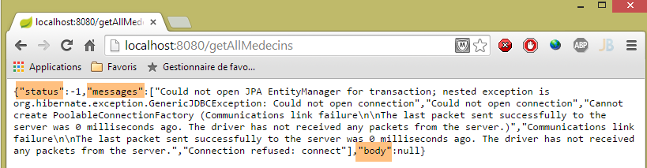
确实会出现错误。在正常情况下，会显示以下视图：
 |
8.4.11.8. URL [/getAllClients]
URL [/getAllClients] 由控制器 [RdvMedecinsController] 的以下方法处理：
// 客户名单
@RequestMapping(value = "/getAllClients", method = RequestMethod.GET, produces = "application/json; charset=UTF-8")
@ResponseBody
public String getAllClients() throws JsonProcessingException {
// 响应
Response<List<Client>> response;
// 应用程序状态
if (messages != null) {
response = new Response<>(-1, messages, null);
}
// 客户列表
try {
response = new Response<>(0, null, application.getAllClients());
} catch (RuntimeException e) {
response = new Response<>(1, Static.getErreursForException(e), null);
}
// 响应
return jsonMapper.writeValueAsString(response);
}
该方法与先前研究的 [getAllMedecins] 方法类似。所得结果如下：
 |
8.4.11.9. URL [/getAllCreneaux/{idMedecin}]
URL [/getAllCreneaux/{idMedecin}] 由控制器 [RdvMedecinsController] 通过以下方法处理：
// 医生预约时段列表
@RequestMapping(value = "/getAllCreneaux/{idMedecin}", method = RequestMethod.GET, produces = "application/json; charset=UTF-8")
@ResponseBody
public String getAllCreneaux(@PathVariable("idMedecin") long idMedecin) throws JsonProcessingException {
// 响应
Response<List<Creneau>> response;
// 应用程序状态
if (messages != null) {
response = new Response<>(-1, messages, null);
}
// 获取医生
Response<Medecin> responseMedecin = getMedecin(idMedecin);
if (responseMedecin.getStatus() != 0) {
response = new Response<>(responseMedecin.getStatus(), responseMedecin.getMessages(), null);
} else {
Medecin médecin = responseMedecin.getBody();
// 医生的预约时段
try {
response = new Response<>(0, null, application.getAllCreneaux(médecin.getId()));
} catch (RuntimeException e1) {
response = new Response<>(3, Static.getErreursForException(e1), null);
}
}
// 响应
return jsonMapperShortCreneau.writeValueAsString(response);
}
- 第 12 行：通过参数 [id] 标识的医生被调用至一个本地方法：
private Response<Medecin> getMedecin(long id) {
// 查询医生
Medecin médecin = null;
try {
médecin = application.getMedecinById(id);
} catch (RuntimeException e1) {
return new Response<Medecin>(1, Static.getErreursForException(e1), null);
}
// 该医生是否已存在？
if (médecin == null) {
List<String> messages = new ArrayList<String>();
messages.add(String.format("Le médecin d'id [%s] n'existe pas", id));
return new Response<Medecin>(2, messages, null);
}
// 好的
return new Response<Medecin>(0, null, médecin);
}
该方法返回时，将 status 赋值给 [0,1,2]。让我们回到 [getAllCreneaux] 方法的代码：
- 第13-14行：若为status!=0，则构建包含错误的响应；
- 第16行：获取医生信息；
- 第19行：获取该医生的预约时段；
- 第 25 行：将 [List<Creneau>] 对象作为响应发送。回顾 [Creneau] 类的定义：
@Entity
@Table(name = "creneaux")
public class Creneau extends AbstractEntity {
private static final long serialVersionUID = 1L;
// RV 时段的特征
private int hdebut;
private int mdebut;
private int hfin;
private int mfin;
// 一个时段与一名医生相关联
@ManyToOne(fetch = FetchType.LAZY)
@JoinColumn(name = "id_medecin")
private Medecin medecin;
// 外键
@Column(name = "id_medecin", insertable = false, updatable = false)
private long idMedecin;
...
}
- 第13行：以[FetchType.LAZY]模式查询医生；
回顾实现 [getAllCreneaux] 方法的 JPQL 请求（位于 [DAO] 层）：
@Query("select c from Creneau c where c.medecin.id=?1")
[c.medecin.id] 这种写法强制要求对 [CRENEAUX] 和 [MEDECINS] 这两张表进行连接。因此，该查询会返回该医生的所有时段，且每个时段中都包含该医生。 当将这些时段序列化为 jSON 时，每个时段中都会出现该医生的 jSON 字符串。这是多余的。要控制序列化，我们需要做到两点：
- 能够访问进行序列化的对象；
- 配置待序列化的对象；
通过在控制器中注入适用于该对象的 jSON 转换器，即可满足第 1 点要求：
@Autowired
private ObjectMapper jsonMapperShortCreneau;
通过在项目 [rdvmedecins-metier-dao] 中定义的类 [Creneau] 上添加注解，即可实现第 2 点：
 |
@Entity
@Table(name = "creneaux")
@JsonFilter("creneauFilter")
public class Creneau extends AbstractEntity {
...
- 第3行：来自库jSON Jackson的注释。它创建了一个名为[creneauFilter]的过滤器。借助该过滤器，我们将能够通过编程定义哪些字段需要序列化，哪些不需要；
对象 [Creneau] 的序列化在方法 [getAllCreneaux] 的以下代码行中进行：
// 响应
return jsonMapperShortCreneau.writeValueAsString(response);
映射器 jSON [jsonMapperShortCreneau] 在类 [WebConfig] 中定义如下：
@Bean
public ObjectMapper jsonMapperShortCreneau() {
ObjectMapper jsonMapperShortCreneau = new ObjectMapper();
SimpleBeanPropertyFilter creneauFilter = SimpleBeanPropertyFilter.serializeAllExcept("medecin");
jsonMapperShortCreneau.setFilters(new SimpleFilterProvider().addFilter("creneauFilter", creneauFilter));
return jsonMapperShortCreneau;
}
- 第 5 行：名为 [creneauFilter] 的过滤器与第 4 行中的 [creneauFilter] 过滤器相关联。该过滤器将 [Creneau] 对象序列化，但不包含其 [medecin] 字段；
方法 [getAllCreneaux] 返回的结果是类型为 [Response<List<Creneau>] 的字符串 jSON。
所得结果如下：
 |
或者，如果该时段不存在，则为：
 |
从这个例子中，我们可以得出以下规则：
- Web 服务器方法 / jSON 返回一个类型为 [Response<T>] 的对象，该对象被序列化为 jSON；
- 如果类型 T 有一个或多个 jSON 过滤器，则在序列化时将使用具有相同过滤器的映射器；
8.4.11.10. URL [/getRvMedecinJour/{idMedecin}/{jour}]
URL [/getRvMedecinJour/{idMedecin}/{jour}] 由控制器 [RdvMedecinsController] 的以下方法处理：
// 某位医生的预约列表
@RequestMapping(value = "/getRvMedecinJour/{idMedecin}/{jour}", method = RequestMethod.GET, produces = "application/json; charset=UTF-8")
@ResponseBody
public String getRvMedecinJour(@PathVariable("idMedecin") long idMedecin)
throws JsonProcessingException {
// 响应
Response<List<Rv>> response=null;
boolean erreur = false;
// 应用程序状态
if (messages != null) {
response = new Response<>(-1, messages, null);
erreur = true;
}
// 验证日期
Date jourAgenda = null;
if (!erreur) {
SimpleDateFormat sdf = new SimpleDateFormat("yyyy-MM-dd");
sdf.setLenient(false);
try {
jourAgenda = sdf.parse(jour);
} catch (ParseException e) {
List<String> messages = new ArrayList<String>();
messages.add(String.format("La date [%s] est invalide", jour));
response = new Response<List<Rv>>(3, messages, null);
erreur = true;
}
}
Response<Medecin> responseMedecin = null;
if (!erreur) {
// 获取医生
responseMedecin = getMedecin(idMedecin);
if (responseMedecin.getStatus() != 0) {
response = new Response<>(responseMedecin.getStatus(), responseMedecin.getMessages(), null);
erreur = true;
}
}
if (!erreur) {
Medecin médecin = responseMedecin.getBody();
// 其预约列表
try {
response = new Response<>(0, null, application.getRvMedecinJour(médecin.getId(), jourAgenda));
} catch (RuntimeException e1) {
response = new Response<>(4, Static.getErreursForException(e1), null);
}
}
// 回复
return jsonMapperLongRv.writeValueAsString(response);
}
- 必须将字符串 jSON 转换为类型 [Response<List<Rv>>]。 类 [Rv] 包含一个字段 [Rv.creneau]。如果该字段被序列化，将会遇到过滤器 jSON [creneauFilter]；
- 第 47 行：第 7 行中的 [Response<List<Rv>>] 类型对象被序列化为 jSON；
让我们分析第42行获取的约会列表的情况。项目[rdvmedecins-metier-dao]中的类[Rv]定义如下：
@Entity
@Table(name = "rv")
public class Rv extends AbstractEntity {
private static final long serialVersionUID = 1L;
// 预约详情
@Temporal(TemporalType.DATE)
private Date jour;
// 预约与客户相关联
@ManyToOne(fetch = FetchType.LAZY)
@JoinColumn(name = "id_client")
private Client client;
// 预约与时段相关联
@ManyToOne(fetch = FetchType.LAZY)
@JoinColumn(name = "id_creneau")
private Creneau creneau;
// 外部键
@Column(name = "id_client", insertable = false, updatable = false)
private long idClient;
@Column(name = "id_creneau", insertable = false, updatable = false)
private long idCreneau;
...
}
- 第11行：使用模式[FetchType.LAZY]查询客户；
- 第 18 行：使用模式 [FetchType.LAZY] 查询时段；
回顾用于检索约会的查询 JPQL：
@Query("select rv from Rv rv left join fetch rv.client c left join fetch rv.creneau cr where cr.medecin.id=?1 and rv.jour=?2")
通过显式连接操作，将字段 [client] 和 [creneau] 合并回来。此外，由于 [cr.medecin.id=?1] 的连接，我们还将获得医生信息。 因此，医生信息将出现在每个预约的 jSON 字段中。然而，这种重复的信息是多余的。我们已经看到如何通过在 [Creneau] 对象上应用 jSON 过滤器来解决此问题。 由于类 [Rv] 中字段 [client] 和 [creneau] 的模式为 [FetchType.LAZY]， 我们将很快发现有必要在项目 [rdvmedecins-metier-dao] 的类 [RV] 上设置一个 jSON 过滤器：
@Entity
@Table(name = "rv")
@JsonFilter("rvFilter")
public class Rv extends AbstractEntity {
...
我们将使用过滤器 [rvFilter] 来控制对象 [Rv] 的序列化。显然，这里无需进行过滤，因为我们需要 [Rv] 类型对象的所有字段。 然而，由于我们已指定该类具有过滤器 jSON，因此对于任何 [Rv] 类型的对象序列化，都必须定义该过滤器，否则将引发异常。 为此，我们使用在类 [rdvMedecinsController] 中定义的以下映射器 jSON：
@Autowired
private ObjectMapper jsonMapperLongRv;
该映射器在配置类 [WebConfig] 中定义如下：
@Bean
public ObjectMapper jsonMapperLongRv() {
ObjectMapper jsonMapperLongRv = new ObjectMapper();
SimpleBeanPropertyFilter rvFilter = SimpleBeanPropertyFilter.serializeAllExcept("");
SimpleBeanPropertyFilter creneauFilter = SimpleBeanPropertyFilter.serializeAllExcept("medecin");
jsonMapperLongRv.setFilters(new SimpleFilterProvider().addFilter("rvFilter", rvFilter).addFilter("creneauFilter",creneauFilter));
return jsonMapperLongRv;
}
- 第 4 行：我们指定对象 [Rv] 的所有字段都应被序列化；
- 第 5 行：我们指定在对象 [Creneau] 中，不需序列化字段 [medecin]；
- 第6行：我们将两个过滤器[rvFilter]和[creneauFilter]添加到对象[jsonMapperLongRv]的过滤器jSON中；
所得结果如下：
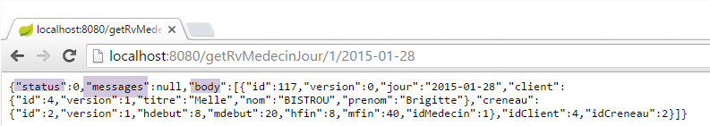 |
或者在没有预约的情况下，结果如下：
 |
或者以下这些结果，其中日期有误：
 |
或者这些包含错误医生信息的：
 |
8.4.11.11. URL [/getAgendaMedecinJour/{idMedecin}/{jour}]
URL [/getAgendaMedecinJour/{idMedecin}/{jour}] 由 [RdvMedecinsController] 控制器通过以下方法处理：
@RequestMapping(value = "/getAgendaMedecinJour/{idMedecin}/{jour}", method = RequestMethod.GET, produces = "application/json; charset=UTF-8")
@ResponseBody
public String getAgendaMedecinJour(@PathVariable("idMedecin") long idMedecin)
throws JsonProcessingException {
// 响应
Response<AgendaMedecinJour> response = null;
boolean erreur = false;
// 应用程序状态
if (messages != null) {
response = new Response<>(-1, messages, null);
erreur = true;
}
// 正在验证日期
Date jourAgenda = null;
if (!erreur) {
// 正在核对日期
SimpleDateFormat sdf = new SimpleDateFormat("yyyy-MM-dd");
sdf.setLenient(false);
try {
jourAgenda = sdf.parse(jour);
} catch (ParseException e) {
erreur = true;
List<String> messages = new ArrayList<String>();
messages.add(String.format("La date [%s] est invalide", jour));
response = new Response<>(3, messages, null);
}
}
// 查询医生
Medecin médecin = null;
if (!erreur) {
// 获取医生
Response<Medecin> responseMedecin = getMedecin(idMedecin);
if (responseMedecin.getStatus() != 0) {
response = new Response<>(responseMedecin.getStatus(), responseMedecin.getMessages(), null);
} else {
médecin = responseMedecin.getBody();
}
}
// 获取其日程表
if (!erreur) {
try {
response = new Response<>(0, null, application.getAgendaMedecinJour(médecin.getId(), jourAgenda));
} catch (RuntimeException e1) {
erreur = true;
response = new Response<>(4, Static.getErreursForException(e1), null);
}
}
// 响应
return jsonMapperLongRv.writeValueAsString(response);
}
- 第 6、49 行：将字符串 jSON 转换为封装在对象 [Response] 中的类型 [AgendaMedecinJour]；
类型 [AgendaMedecinJour] 如下：
public class AgendaMedecinJour implements Serializable {
// 字段
private Medecin medecin;
private Date jour;
private CreneauMedecinJour[] creneauxMedecinJour;
类型 [CreneauMedecinJour] 如下：
public class CreneauMedecinJour implements Serializable {
private static final long serialVersionUID = 1L;
// 字段
private Creneau creneau;
private Rv rv;
字段 [creneau] 和 [rv] 具有需要配置的过滤器 jSON。 这就是方法 [getAgendaMedecinJour] 的第 49 行所执行的操作，该方法使用了之前提到的映射器 jSON [jsonMapperLongRv]：
@Bean
public ObjectMapper jsonMapperLongRv() {
ObjectMapper jsonMapperLongRv = new ObjectMapper();
SimpleBeanPropertyFilter rvFilter = SimpleBeanPropertyFilter.serializeAllExcept("");
SimpleBeanPropertyFilter creneauFilter = SimpleBeanPropertyFilter.serializeAllExcept("medecin");
jsonMapperLongRv.setFilters(
new SimpleFilterProvider().addFilter("rvFilter", rvFilter).addFilter("creneauFilter", creneauFilter));
return jsonMapperLongRv;
}
所得结果如下：
 |
上图显示，2015年1月28日，PELISSIER医生与Brigitte BISTROU女士的预约时间为8点20分；
或者，如果日期有误，则显示如下：
 |
或者，如果医生编号无效，则显示以下内容：
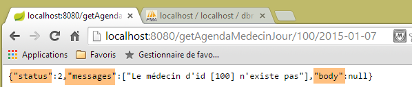 |
8.4.11.12. URL [/getMedecinById/{id}]
URL [/getMedecinById/{id}] 由 [RdvMedecinsController] 控制器通过以下方法处理：
@RequestMapping(value = "/getMedecinById/{id}", method = RequestMethod.GET, produces = "application/json; charset=UTF-8")
@ResponseBody
public String getMedecinById(@PathVariable("id") long id) throws JsonProcessingException {
// 响应
Response<Medecin> response;
// 应用程序状态
if (messages != null) {
response = new Response<Medecin>(-1, messages, null);
} else {
response = getMedecin(id);
}
// 响应
return jsonMapper.writeValueAsString(response);
}
- 第5、13行：该方法将字符串 jSON 转换为类型 [Medecin]。该类型没有过滤器注释 jSON。 因此，第 14 行使用了不带过滤器的映射器 jSON；
第10行，[getMedecin]方法如下：
private Response<Medecin> getMedecin(long id) {
// 查询医生
Medecin médecin = null;
try {
médecin = application.getMedecinById(id);
} catch (RuntimeException e1) {
return new Response<Medecin>(1, Static.getErreursForException(e1), null);
}
// 已有医生？
if (médecin == null) {
List<String> messages = new ArrayList<String>();
messages.add(String.format("Le médecin d'id [%s] n'existe pas", id));
return new Response<Medecin>(2, messages, null);
}
// 好的
return new Response<Medecin>(0, null, médecin);
}
所得结果如下：
 |
或者，如果医生编号不正确，则显示如下：
 |
8.4.11.13. URL [/getClientById/{id}]
URL [/getClientById/{id}] 由控制器 [RdvMedecinsController] 通过以下方法处理：
@RequestMapping(value = "/getClientById/{id}", method = RequestMethod.GET, produces = "application/json; charset=UTF-8")
@ResponseBody
public String getClientById(@PathVariable("id") long id) throws JsonProcessingException {
// 响应
Response<Client> response;
// 应用程序状态
if (messages != null) {
response = new Response<>(-1, messages, null);
} else {
response = getClient(id);
}
// 响应
return jsonMapper.writeValueAsString(response);
}
- 第 5 行和第 13 行：该方法将字符串 jSON 转换为类型 [Client]。该类型没有 jSON 过滤器注释。 因此，第 13 行使用了未带过滤器的映射器 jSON；
第 11 行，[getClient] 方法如下：
private Response<Client> getClient(long id) {
// 正在检索客户
Client client = null;
try {
client = application.getClientById(id);
} catch (RuntimeException e1) {
return new Response<Client>(1, Static.getErreursForException(e1), null);
}
// 客户端已存在？
if (client == null) {
List<String> messages = new ArrayList<String>();
messages.add(String.format("Le client d'id [%s] n'existe pas", id));
return new Response<Client>(2, messages, null);
}
// 好的
return new Response<Client>(0, null, client);
}
所得结果如下：
 |
或者，如果客户编号不正确，则结果如下：
 |
8.4.11.14. URL [/getCreneauById/{id}]
URL [/getCreneauById/{id}] 由控制器 [RdvMedecinsController] 通过以下方法处理：
@RequestMapping(value = "/getCreneauById/{id}", method = RequestMethod.GET, produces = "application/json; charset=UTF-8")
@ResponseBody
public String getCreneauById(@PathVariable("id") long id) throws JsonProcessingException {
// 响应
Response<Creneau> response;
// 应用程序状态
if (messages != null) {
response = new Response<>(-1, messages, null);
} else {
// 返回时段
response = getCreneau(id);
}
// 响应
return jsonMapperShortCreneau.writeValueAsString(response);
}
- 第5、14行：该方法将字符串 jSON 转换为类型 [Response<Creneau>]；
第 8 行，方法 [getCreneau] 如下：
private Response<Creneau> getCreneau(long id) {
// 获取时段
Creneau créneau = null;
try {
créneau = application.getCreneauById(id);
} catch (RuntimeException e1) {
return new Response<Creneau>(1, Static.getErreursForException(e1), null);
}
// 时段是否已存在？
if (créneau == null) {
List<String> messages = new ArrayList<String>();
messages.add(String.format("Le créneau d'id [%s] n'existe pas", id));
return new Response<Creneau>(2, messages, null);
}
// 成功
return new Response<Creneau>(0, null, créneau);
}
回顾实体代码 [Creneau]：
@Entity
@Table(name = "creneaux")
@JsonFilter("creneauFilter")
public class Creneau extends AbstractEntity {
private static final long serialVersionUID = 1L;
// RV 时段的特征
private int hdebut;
private int mdebut;
private int hfin;
private int mfin;
// 一个时段与一位医生相关联
@ManyToOne(fetch = FetchType.LAZY)
@JoinColumn(name = "id_medecin")
private Medecin medecin;
// 外键
@Column(name = "id_medecin", insertable = false, updatable = false)
private long idMedecin;
- 第 14-16 行：由于字段 [medecin] 处于 [fetch = FetchType.LAZY] 模式，因此在通过其 [id] 检索时段时，该字段不会被带入。 因此必须将其从序列化中排除。如果不进行此排除，将会引发异常。这是因为序列化对象 [mapper] 会调用方法 [getMedecin] 来获取字段 [medecin]。 然而，在 JPA / Hibernate 的实现中， 字段 [medecin] 的 [fetch = FetchType.LAZY] 模式返回了一个 [Creneau] 对象，该对象的 [getMedecin] 方法被编程为在 JPA上下文中检索医生。这被称为一个[proxy]对象。现在让我们回顾一下Web应用程序的架构：
 |
控制器位于 [Contrôleurs / Actions] 块中。当处于该块时，JPA 上下文的概念已不复存在。该上下文是在 [DAO] 层执行操作时创建的，其生命周期仅限于此。 因此，当控制器尝试访问上下文 JPA 时，会引发异常，提示该上下文已关闭。 为避免此异常，需阻止 [Rv] 类中字段 [medecin] 的序列化。映射器 jSON [jsonMapperShortCreneau] 正是如此操作：
@Bean
public ObjectMapper jsonMapperShortCreneau() {
ObjectMapper jsonMapperShortCreneau = new ObjectMapper();
SimpleBeanPropertyFilter creneauFilter = SimpleBeanPropertyFilter.serializeAllExcept("medecin");
jsonMapperShortCreneau.setFilters(new SimpleFilterProvider().addFilter("creneauFilter", creneauFilter));
return jsonMapperShortCreneau;
}
所得结果如下：
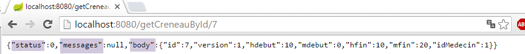 |
若时段编号不正确，则显示如下：
 |
8.4.11.15. URL [/getRvById/{id}]
URL [/getRvById/{id}] 由控制器 [RdvMedecinsController] 通过以下方法处理：
@RequestMapping(value = "/getRvById/{id}", method = RequestMethod.GET, produces = "application/json; charset=UTF-8")
@ResponseBody
public String getRvById(@PathVariable("id") long id) throws JsonProcessingException {
// 响应
Response<Rv> response;
// 应用程序状态
if (messages != null) {
response = new Response<>(-1, messages, null);
} else {
// 获取预约
response = getRv(id);
}
// 响应
return jsonMapperShortRv.writeValueAsString(response);
}
- 第 5 行、第 14 行：该方法返回类型为 [Response<Rv>] 的字符串 jSON；
第 11 行，方法 [getRv] 如下：
private Response<Rv> getRv(long id) {
// 获取 Rv
Rv rv = null;
try {
rv = application.getRvById(id);
} catch (RuntimeException e1) {
return new Response<Rv>(1, Static.getErreursForException(e1), null);
}
// Rv是否存在？
if (rv == null) {
List<String> messages = new ArrayList<String>();
messages.add(String.format("Le rendez-vous d'id [%s] n'existe pas", id));
return new Response<Rv>(2, messages, null);
}
// 好的
return new Response<Rv>(0, null, rv);
}
类 [Rv] 有两个带有注解 [fetch = FetchType.LAZY] 的字段，即字段 [creneau] 和 [client]。 因此，当通过主键检索 [Rv] 时，这些字段不会被带入。 因此，出于与之前相同的原因，必须将它们从序列化中排除。以下是在 [WebConfig] 类中定义的 [jsonMapperShortRv] 映射器，它正是这样做的：
@Bean
public ObjectMapper jsonMapperShortRv() {
ObjectMapper jsonMapperShortRv = new ObjectMapper();
SimpleBeanPropertyFilter rvFilter = SimpleBeanPropertyFilter.serializeAllExcept("client", "creneau");
jsonMapperShortRv.setFilters(new SimpleFilterProvider().addFilter("rvFilter", rvFilter));
return jsonMapperShortRv;
}
所得结果如下：
 |
或者，如果预约编号不正确，则显示如下：
 |
8.4.11.16. URL [/ajouterRv]
URL [/ajouterRv] 由控制器 [RdvMedecinsController] 通过以下方法处理：
@RequestMapping(value = "/ajouterRv", method = RequestMethod.POST, produces = "application/json; charset=UTF-8", consumes = "application/json; charset=UTF-8")
@ResponseBody
public String ajouterRv(@RequestBody PostAjouterRv post) throws JsonProcessingException {
// 响应
Response<Rv> response = null;
boolean erreur = false;
// 应用程序状态
if (messages != null) {
response = new Response<>(-1, messages, null);
erreur = true;
}
// 获取提交的值
String jour;
long idCreneau = -1;
long idClient = -1;
Date jourAgenda = null;
if (!erreur) {
// 正在检索已提交的值
jour = post.getJour();
idCreneau = post.getIdCreneau();
idClient = post.getIdClient();
// 验证日期
SimpleDateFormat sdf = new SimpleDateFormat("yyyy-MM-dd");
sdf.setLenient(false);
try {
jourAgenda = sdf.parse(jour);
} catch (ParseException e) {
List<String> messages = new ArrayList<String>();
messages.add(String.format("La date [%s] est invalide", jour));
response = new Response<>(6, messages, null);
erreur = true;
}
}
// 获取时间段
Response<Creneau> responseCréneau = null;
if (!erreur) {
// 获取时间段
responseCréneau = getCreneau(idCreneau);
if (responseCréneau.getStatus() != 0) {
erreur = true;
response = new Response<>(responseCréneau.getStatus(), responseCréneau.getMessages(), null);
}
}
// 获取客户
Response<Client> responseClient = null;
Creneau créneau = null;
if (!erreur) {
créneau = (Creneau) responseCréneau.getBody();
// 获取客户
responseClient = getClient(idClient);
if (responseClient.getStatus() != 0) {
erreur = true;
response = new Response<>(responseClient.getStatus() + 2, responseClient.getMessages(), null);
}
}
if (!erreur) {
Client client = responseClient.getBody();
// 添加预约
try {
response = new Response<>(0, null, application.ajouterRv(jourAgenda, créneau, client));
} catch (RuntimeException e1) {
erreur = true;
response = new Response<>(5, Static.getErreursForException(e1), null);
}
}
// 响应
return jsonMapperLongRv.writeValueAsString(response);
}
- 第 5、67 行：该方法必须将字符串 jSON 转换为类型 [Response<Rv>]；
- 第3行：注释[@RequestBody PostAjouterRv post]提取POST的正文，并将其放入参数[PostAjouterRv post]中。 该正文来自 jSON [consumes = "application/json; charset=UTF-8"]，并将自动反序列化为以下 [PostAjouterRv] 类型：
public class PostAjouterRv {
// 帖子数据
private String jour;
private long idClient;
private long idCreneau;
...
- 随后出现了一些以某种形式曾出现过的代码；
- 第67行：设置了过滤器 jSON、[creneauFilter] 和 [rvFilter]。 该方法将字符串 jSON 转换为类型 [Response<Rv>]，其中 Rv 是在第 61 行获得的。 对象 [Rv] 封装了一个 [Creneau] 对象和一个 [Client] 对象。 对象 [Creneau] 具有对对象 [Medecin] 的依赖关系 [FetchType.LAZY]，并在第 36-44 行中获取。 该对象通过其主键在上下文 JPA 中被检索，且未包含其依赖对象 [FetchType.LAZY]。最终，
- 对象 [Rv] 拥有所有依赖项。这些依赖项可以被序列化；
- 对象 [Creneau] 缺少其依赖项 [medecin]。因此，该依赖项不应被序列化；
在类 [WebConfig] 中定义的映射器 jSON [jsonMapperLongRv] 满足这些约束条件：
@Bean
public ObjectMapper jsonMapperLongRv() {
ObjectMapper jsonMapperLongRv = new ObjectMapper();
SimpleBeanPropertyFilter rvFilter = SimpleBeanPropertyFilter.serializeAllExcept("");
SimpleBeanPropertyFilter creneauFilter = SimpleBeanPropertyFilter.serializeAllExcept("medecin");
jsonMapperLongRv.setFilters(new SimpleFilterProvider().addFilter("rvFilter", rvFilter).addFilter("creneauFilter",creneauFilter));
return jsonMapperLongRv;
}
使用 [Advanced Rest Client] 客户端获得的结果如下：
 |
- 在 [1] 中，URL 来自 POST；
- [2] 对应 POST；
- 在 [3] 中，该已发布值；
- 在 [4a] 中，该已发布值来自 jSON；
 |
- 在 [4b] 中，客户端表示其发送的是 jSON；
- 在 [5] 中，服务器表示其返回的是 jSON；
 |
- 在 [6] 中，服务器返回的 jSON 响应代表已添加的约会。其中可见已添加约会的标识符 [id]；
若使用不存在的时段编号，则会得到以下结果：
 |
8.4.11.17. URL [/supprimerRv]
URL [/supprimerRv] 由控制器 [RdvMedecinsController] 通过以下方法处理：
@RequestMapping(value = "/supprimerRv", method = RequestMethod.POST, produces = "application/json; charset=UTF-8", consumes = "application/json; charset=UTF-8")
@ResponseBody
public String supprimerRv(@RequestBody PostSupprimerRv post) throws JsonProcessingException {
// 回复
Response<Void> response = null;
boolean erreur = false;
// 标头CORS
rdvMedecinsCorsController.sendOptions(origin, httpServletResponse);
// 应用程序状态
if (messages != null) {
response = new Response<>(-1, messages, null);
erreur = true;
}
// 检索已提交的值
long idRv = post.getIdRv();
// 检索 RV
if (!erreur) {
Response<Rv> responseRv = getRv(idRv);
if (responseRv.getStatus() != 0) {
response = new Response<>(responseRv.getStatus(), responseRv.getMessages(), null);
erreur = true;
}
}
if (!erreur) {
// 删除返回值
try {
application.supprimerRv(idRv);
response = new Response<Void>(0, null, null);
} catch (RuntimeException e1) {
response = new Response<>(3, Static.getErreursForException(e1), null);
}
}
// 响应
return jsonMapper.writeValueAsString(response);
}
- 第 5 行：类型 [Void] 是与基本类型 [void] 对应的类；
- 第 5 行、第 34 行：该方法将字符串 jSON 转换为类型 [Response<Void>]，该类型不包含 jSON 过滤器。 因此，第 34 行使用了不带过滤器的映射器 jSON；
- 第3行：该方法的参数是POST的主体，即发送的值。 该数据以 jSON [consumes = "application/json; charset=UTF-8"] 格式接收，并自动反序列化为以下 [PostSupprimerRv] 类型：
public class PostSupprimerRv {
// 提交数据
private long idRv;
- 第28行：当删除成功时，发送包含 [status=0] 的响应；
所得结果如下：
 |
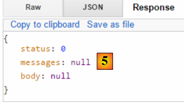 |
- 在 [5] 中，字段 [status=0] 表明删除成功；
若使用不存在的预约编号，则会得到以下结果：
 |
控制器部分到此结束。接下来我们将了解如何运行该项目。
8.4.11.18. Web服务的可执行类
 |
类 [Boot] [1] 如下所示：
package rdvmedecins.web.boot;
import org.springframework.boot.SpringApplication;
import rdvmedecins.web.config.AppConfig;
public class Boot {
public static void main(String[] args) {
SpringApplication.run(AppConfig.class, args);
}
}
第 10 行，静态方法 [SpringApplication.run] 被调用，其第一个参数是项目配置类 [AppConfig]。 该方法将执行项目的自动配置，启动依赖项中嵌入的 Tomcat 服务器，并在其中部署控制器 [RdvMedecinsController]。
日志由以下文件 [2] 控制：
[logback.xml]
<configuration>
<appender name="STDOUT" class="ch.qos.logback.core.ConsoleAppender">
<!-- 编码器默认被分配类型 ch.qos.logback.classic.encoder.PatternLayoutEncoder -->
<encoder>
<pattern>%d{HH:mm:ss.SSS} [%thread] %-5level %logger{36} - %msg%n</pattern>
</encoder>
</appender>
<!-- 日志级别控制 -->
<root level="info"> <!-- 关闭、信息、调试、警告 -->
<appender-ref ref="STDOUT" />
</root>
</configuration>
- 第 9 行：将日志级别设置为 [info]；
[application.properties]
logging.level.org.springframework.web=INFO
logging.level.org.hibernate=OFF
spring.main.show-banner=false
第1-2行用于为应用程序的某些组件设置特定的日志级别：
- 第 1 行：需要 [web] 层的日志；
- 第 2 行：不希望记录 [JPA] 层的日志；
- 第3行：不显示Spring Boot标题栏；
运行时的日志如下：
11:06:04,279 |-INFO in ch.qos.logback.classic.LoggerContext[default] - Could NOT find resource [logback.groovy]
11:06:04,279 |-INFO in ch.qos.logback.classic.LoggerContext[default] - Could NOT find resource [logback-test.xml]
11:06:04,279 |-INFO in ch.qos.logback.classic.LoggerContext[default] - Found resource [logback.xml] at [file:/D:/data/istia-1516/projets/springmvc-thymeleaf/dvp-final/etude-de-cas/rdvmedecins-webjson-server/target/classes/logback.xml]
11:06:04,279 |-WARN in ch.qos.logback.classic.LoggerContext[default] - Resource [logback.xml] occurs multiple times on the classpath.
11:06:04,279 |-WARN in ch.qos.logback.classic.LoggerContext[default] - Resource [logback.xml] occurs at [file:/D:/data/istia-1516/projets/springmvc-thymeleaf/dvp-final/etude-de-cas/rdvmedecins-metier-dao/target/classes/logback.xml]
11:06:04,279 |-WARN in ch.qos.logback.classic.LoggerContext[default] - Resource [logback.xml] occurs at [file:/D:/data/istia-1516/projets/springmvc-thymeleaf/dvp-final/etude-de-cas/rdvmedecins-webjson-server/target/classes/logback.xml]
11:06:04,342 |-INFO in ch.qos.logback.classic.joran.action.ConfigurationAction - debug attribute not set
11:06:04,342 |-INFO in ch.qos.logback.core.joran.action.AppenderAction - About to instantiate appender of type [ch.qos.logback.core.ConsoleAppender]
11:06:04,342 |-INFO in ch.qos.logback.core.joran.action.AppenderAction - Naming appender as [STDOUT]
11:06:04,357 |-INFO in ch.qos.logback.core.joran.action.NestedComplexPropertyIA - Assuming default type [ch.qos.logback.classic.encoder.PatternLayoutEncoder] for [encoder] property
11:06:04,404 |-INFO in ch.qos.logback.classic.joran.action.RootLoggerAction - Setting level of ROOT logger to INFO
11:06:04,404 |-INFO in ch.qos.logback.core.joran.action.AppenderRefAction - Attaching appender named [STDOUT] to Logger[ROOT]
11:06:04,404 |-INFO in ch.qos.logback.classic.joran.action.ConfigurationAction - End of configuration.
11:06:04,420 |-INFO in ch.qos.logback.classic.joran.JoranConfigurator@56f4468b - Registering current configuration as safe fallback point
11:06:04.732 [main] INFO rdvmedecins.web.boot.Boot - Starting Boot on Gportpers3 with PID 420 (D:\data\istia-1516\projets\springmvc-thymeleaf\dvp-final\etude-de-cas\rdvmedecins-webjson-server\target\classes started by usrlocal in D:\data\istia-1516\projets\springmvc-thymeleaf\dvp-final\etude-de-cas\rdvmedecins-webjson-server)
11:06:04.775 [main] INFO o.s.b.c.e.AnnotationConfigEmbeddedWebApplicationContext - Refreshing org.springframework.boot.context.embedded.AnnotationConfigEmbeddedWebApplicationContext@2ea6137: startup date [Wed Oct 14 11:06:04 CEST 2015]; root of context hierarchy
11:06:05.538 [main] INFO o.s.b.c.e.t.TomcatEmbeddedServletContainer - Tomcat initialized with port(s): 8080 (http)
11:06:05.688 [main] INFO o.a.catalina.core.StandardService - Starting service Tomcat
11:06:05.689 [main] INFO o.a.catalina.core.StandardEngine - Starting Servlet Engine: Apache Tomcat/8.0.26
11:06:05.833 [localhost-startStop-1] INFO o.a.c.c.C.[Tomcat].[localhost].[/] - Initializing Spring embedded WebApplicationContext
11:06:05.833 [localhost-startStop-1] INFO o.s.web.context.ContextLoader - Root WebApplicationContext: initialization completed in 1061 ms
11:06:06.231 [localhost-startStop-1] INFO o.s.o.j.LocalContainerEntityManagerFactoryBean - Building JPA container EntityManagerFactory for persistence unit 'default'
11:06:09.234 [localhost-startStop-1] INFO o.s.s.web.DefaultSecurityFilterChain - Creating filter chain: org.springframework.security.web.util.matcher.AnyRequestMatcher@1, [org.springframework.security.web.context.request.async.WebAsyncManagerIntegrationFilter@12d14fa, org.springframework.security.web.context.SecurityContextPersistenceFilter@29823fb6, org.springframework.security.web.header.HeaderWriterFilter@662d93b2, org.springframework.security.web.authentication.logout.LogoutFilter@2d81ee0, org.springframework.security.web.authentication.www.BasicAuthenticationFilter@52aa47ad, org.springframework.security.web.savedrequest.RequestCacheAwareFilter@60bd7a74, org.springframework.security.web.servletapi.SecurityContextHolderAwareRequestFilter@5a374232, org.springframework.security.web.authentication.AnonymousAuthenticationFilter@7ddb4452, org.springframework.security.web.session.SessionManagementFilter@2cd9855f, org.springframework.security.web.access.ExceptionTranslationFilter@2263f0a2, org.springframework.security.web.access.intercept.FilterSecurityInterceptor@192ce7f6]
11:06:09.255 [localhost-startStop-1] INFO o.s.b.c.e.ServletRegistrationBean - Mapping servlet: 'dispatcherServlet' to [/*]
11:06:09.255 [localhost-startStop-1] INFO o.s.b.c.e.FilterRegistrationBean - Mapping filter: 'springSecurityFilterChain' to: [/*]
11:06:09.536 [main] INFO o.s.w.s.m.m.a.RequestMappingHandlerMapping - Mapped "{[/authenticate],methods=[GET]}" onto public rdvmedecins.web.models.Response<java.lang.Void> rdvmedecins.web.controllers.RdvMedecinsController.authenticate(javax.servlet.http.HttpServletResponse,java.lang.String)
11:06:09.536 [main] INFO o.s.w.s.m.m.a.RequestMappingHandlerMapping - Mapped "{[/getAgendaMedecinJour/{idMedecin}/{jour}],methods=[GET]}" onto public rdvmedecins.web.models.Response<java.lang.String> rdvmedecins.web.controllers.RdvMedecinsController.getAgendaMedecinJour(long,java.lang.String,javax.servlet.http.HttpServletResponse,java.lang.String) throws com.fasterxml.jackson.core.JsonProcessingException
11:06:09.536 [main] INFO o.s.w.s.m.m.a.RequestMappingHandlerMapping - Mapped "{[/getAllCreneaux/{idMedecin}],methods=[GET]}" onto public rdvmedecins.web.models.Response<java.lang.String> rdvmedecins.web.controllers.RdvMedecinsController.getAllCreneaux(long,javax.servlet.http.HttpServletResponse,java.lang.String) throws com.fasterxml.jackson.core.JsonProcessingException
11:06:09.536 [main] INFO o.s.w.s.m.m.a.RequestMappingHandlerMapping - Mapped "{[/getRvMedecinJour/{idMedecin}/{jour}],methods=[GET]}" onto public rdvmedecins.web.models.Response<java.lang.String> rdvmedecins.web.controllers.RdvMedecinsController.getRvMedecinJour(long,java.lang.String,javax.servlet.http.HttpServletResponse,java.lang.String) throws com.fasterxml.jackson.core.JsonProcessingException
11:06:09.536 [main] INFO o.s.w.s.m.m.a.RequestMappingHandlerMapping - Mapped "{[/getMedecinById/{id}],methods=[GET]}" onto public rdvmedecins.web.models.Response<rdvmedecins.entities.Medecin> rdvmedecins.web.controllers.RdvMedecinsController.getMedecinById(long,javax.servlet.http.HttpServletResponse,java.lang.String)
11:06:09.536 [main] INFO o.s.w.s.m.m.a.RequestMappingHandlerMapping - Mapped "{[/getClientById/{id}],methods=[GET]}" onto public rdvmedecins.web.models.Response<rdvmedecins.entities.Client> rdvmedecins.web.controllers.RdvMedecinsController.getClientById(long,javax.servlet.http.HttpServletResponse,java.lang.String)
11:06:09.536 [main] INFO o.s.w.s.m.m.a.RequestMappingHandlerMapping - Mapped "{[/supprimerRv],methods=[POST],consumes=[application/json;charset=UTF-8]}" onto public rdvmedecins.web.models.Response<java.lang.Void> rdvmedecins.web.controllers.RdvMedecinsController.supprimerRv(rdvmedecins.web.models.PostSupprimerRv,javax.servlet.http.HttpServletResponse,java.lang.String)
11:06:09.536 [main] INFO o.s.w.s.m.m.a.RequestMappingHandlerMapping - Mapped "{[/getAllClients],methods=[GET]}" onto public rdvmedecins.web.models.Response<java.util.List<rdvmedecins.entities.Client>> rdvmedecins.web.controllers.RdvMedecinsController.getAllClients(javax.servlet.http.HttpServletResponse,java.lang.String)
11:06:09.536 [main] INFO o.s.w.s.m.m.a.RequestMappingHandlerMapping - Mapped "{[/ajouterRv],methods=[POST],consumes=[application/json;charset=UTF-8]}" onto public rdvmedecins.web.models.Response<java.lang.String> rdvmedecins.web.controllers.RdvMedecinsController.ajouterRv(rdvmedecins.web.models.PostAjouterRv,javax.servlet.http.HttpServletResponse,java.lang.String) throws com.fasterxml.jackson.core.JsonProcessingException
11:06:09.536 [main] INFO o.s.w.s.m.m.a.RequestMappingHandlerMapping - Mapped "{[/getCreneauById/{id}],methods=[GET]}" onto public rdvmedecins.web.models.Response<java.lang.String> rdvmedecins.web.controllers.RdvMedecinsController.getCreneauById(long,javax.servlet.http.HttpServletResponse,java.lang.String) throws com.fasterxml.jackson.core.JsonProcessingException
11:06:09.536 [main] INFO o.s.w.s.m.m.a.RequestMappingHandlerMapping - Mapped "{[/getAllMedecins],methods=[GET]}" onto public rdvmedecins.web.models.Response<java.util.List<rdvmedecins.entities.Medecin>> rdvmedecins.web.controllers.RdvMedecinsController.getAllMedecins(javax.servlet.http.HttpServletResponse,java.lang.String)
11:06:09.536 [main] INFO o.s.w.s.m.m.a.RequestMappingHandlerMapping - Mapped "{[/getRvById/{id}],methods=[GET]}" onto public rdvmedecins.web.models.Response<java.lang.String> rdvmedecins.web.controllers.RdvMedecinsController.getRvById(long,javax.servlet.http.HttpServletResponse,java.lang.String) throws com.fasterxml.jackson.core.JsonProcessingException
...
11:06:09.677 [main] INFO o.s.w.s.m.m.a.RequestMappingHandlerAdapter - Looking for @ControllerAdvice: org.springframework.boot.context.embedded.AnnotationConfigEmbeddedWebApplicationContext@2ea6137: startup date [Wed Oct 14 11:06:04 CEST 2015]; root of context hierarchy
11:06:09.770 [main] INFO o.a.coyote.http11.Http11NioProtocol - Initializing ProtocolHandler ["http-nio-8080"]
11:06:09.786 [main] INFO o.a.coyote.http11.Http11NioProtocol - Starting ProtocolHandler ["http-nio-8080"]
11:06:09.802 [main] INFO o.a.tomcat.util.net.NioSelectorPool - Using a shared selector for servlet write/read
11:06:09.817 [main] INFO o.s.b.c.e.t.TomcatEmbeddedServletContainer - Tomcat started on port(s): 8080 (http)
11:06:09.817 [main] INFO rdvmedecins.web.boot.Boot - Started Boot in 5.319 seconds (JVM running for 6.053)
- 第 18 行：Tomcat 服务器已启动；
- 第 21 行：Spring 上下文正在初始化；
- 第27-38行：发现Web服务暴露的URL；
- 第 44 行：Tomcat 服务器已就绪，正在 8080 端口等待请求；
如果将文件 [application.properties] 修改如下：
logging.level.org.springframework.web: OFF
logging.level.org.hibernate:OFF
spring.main.show-banner=false
将获得以下日志：
此外，如果将文件 [logback.xml] 修改如下：
<configuration>
<appender name="STDOUT" class="ch.qos.logback.core.ConsoleAppender">
<!-- 编码器默认被分配类型 ch.qos.logback.classic.encoder.PatternLayoutEncoder -->
<encoder>
<pattern>%d{HH:mm:ss.SSS} [%thread] %-5level %logger{36} - %msg%n</pattern>
</encoder>
</appender>
<!-- 日志级别控制 -->
<root level="off"> <!-- 关闭、信息、调试、警告 -->
<appender-ref ref="STDOUT" />
</root>
</configuration>
将得到以下日志：
由此可见，我们可以对控制台中显示的日志进行一定程度的控制。[info] 通常是合适的日志级别。
现在，我们已经拥有了一个可通过Web客户端进行查询的、可运行的Web服务。接下来我们将探讨该服务的安全性：我们希望仅允许特定人员管理医生的预约。为此，我们将使用Spring Security框架，它是Spring生态系统的一个分支。
8.4.12. Spring Security 入门
我们将再次导入 Spring 指南，具体步骤如下：
 |
 |
该项目由以下部分组成：
- 在 [templates] 文件夹中，包含项目的 HTML 页面；
- [Application]：是项目的可执行类；
- [MvcConfig]：是 Spring 配置类 MVC；
- [WebSecurityConfig]：是 Spring Security 的配置类；
8.4.12.1. Maven 配置
项目 [3] 是一个 Maven 项目。让我们查看其 [pom.xml] 文件以了解其依赖关系：
<?xml version="1.0" encoding="UTF-8"?>
<project xmlns="http://maven.apache.org/POM/4.0.0" xmlns:xsi="http://www.w3.org/2001/XMLSchema-instance"
xsi:schemaLocation="http://maven.apache.org/POM/4.0.0 http://maven.apache.org/xsd/maven-4.0.0.xsd">
<modelVersion>4.0.0</modelVersion>
<groupId>org.springframework</groupId>
<artifactId>gs-securing-web</artifactId>
<version>0.1.0</version>
<parent>
<groupId>org.springframework.boot</groupId>
<artifactId>spring-boot-starter-parent</artifactId>
<version>1.1.10.RELEASE</version>
</parent>
<dependencies>
<dependency>
<groupId>org.springframework.boot</groupId>
<artifactId>spring-boot-starter-thymeleaf</artifactId>
</dependency>
<!-- tag::security[] -->
<dependency>
<groupId>org.springframework.boot</groupId>
<artifactId>spring-boot-starter-security</artifactId>
</dependency>
<!-- end::security[] -->
</dependencies>
<properties>
<start-class>hello.Application</start-class>
</properties>
<build>
<plugins>
<plugin>
<groupId>org.springframework.boot</groupId>
<artifactId>spring-boot-maven-plugin</artifactId>
</plugin>
</plugins>
</build>
</project>
- 第 10-14 行：该项目是一个 Spring Boot 项目；
- 第 17-20 行：依赖于 [Thymeleaf] 框架；
- 第 22-25 行：依赖于 Spring Security 框架；
8.4.12.2. Thymeleaf视图
 |
[home.html]视图如下：
 |
<!DOCTYPE html>
<html xmlns="http://www.w3.org/1999/xhtml"
xmlns:th="http://www.thymeleaf.org"
xmlns:sec="http://www.thymeleaf.org/thymeleaf-extras-springsecurity3">
<head>
<title>Spring Security Example</title>
</head>
<body>
<h1>Welcome!</h1>
<p>
Click <a th:href="@{/hello}">here</a> to see a greeting.
</p>
</body>
</html>
- 第 12 行：属性 [th:href="@{/hello}"] 将生成 <a> 标签的属性 [href]。 值 [@{/hello}] 将生成路径 [<context>/hello]，其中 [context] 是 Web 应用程序的上下文；
生成的代码 HTML 如下：
<!DOCTYPE html>
<html xmlns="http://www.w3.org/1999/xhtml" xmlns:sec="http://www.thymeleaf.org/thymeleaf-extras-springsecurity3">
<head>
<title>Spring Security Example</title>
</head>
<body>
<h1>Welcome!</h1>
<p>
Click
<a href="/hello">here</a>
to see a greeting.
</p>
</body>
</html>
视图 [hello.html] 如下所示：
 |
<!DOCTYPE html>
<html xmlns="http://www.w3.org/1999/xhtml"
xmlns:th="http://www.thymeleaf.org"
xmlns:sec="http://www.thymeleaf.org/thymeleaf-extras-springsecurity3">
<head>
<title>Hello World!</title>
</head>
<body>
<h1 th:inline="text">Hello [[${#httpServletRequest.remoteUser}]]!</h1>
<form th:action="@{/logout}" method="post">
<input type="submit" value="Sign Out" />
</form>
</body>
</html>
- 第 9 行：属性 [th:inline="text"] 将生成 <h1> 标签的文本。该文本包含一个需要求值的 $ 表达式。 元素 [[${#httpServletRequest.remoteUser}]] 是当前查询 HTTP 中 [RemoteUser] 属性的值。这是已登录用户的名称；
- 第 10 行：一个 HTML 表单。[th:action="@{/logout}"] 属性将生成 [form] 标签的 [action] 属性。 值 [@{/logout}] 将生成路径 [<context>/logout]，其中 [context] 是 Web 应用程序的上下文；
生成的代码 HTML 如下：
<!DOCTYPE html>
<html xmlns="http://www.w3.org/1999/xhtml" xmlns:sec="http://www.thymeleaf.org/thymeleaf-extras-springsecurity3">
<head>
<title>Hello World!</title>
</head>
<body>
<h1>Hello user!</h1>
<form method="post" action="/logout">
<input type="submit" value="Sign Out" />
<input type="hidden" name="_csrf" value="b152e5b9-d1a4-4492-b89d-b733fe521c91" />
</form>
</body>
</html>
- 第 8 行：Hello [[${#httpServletRequest.remoteUser}]]! 的翻译；
- 第 9 行：@{/logout} 的翻译；
- 第 11 行：一个名为 _csrf 的隐藏字段（属性 name）；
最后一个视图 [login.html] 如下：
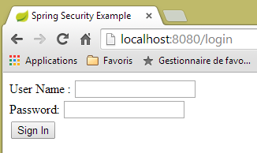 |
<!DOCTYPE html>
<html xmlns="http://www.w3.org/1999/xhtml"
xmlns:th="http://www.thymeleaf.org"
xmlns:sec="http://www.thymeleaf.org/thymeleaf-extras-springsecurity3">
<head>
<title>Spring Security Example</title>
</head>
<body>
<div th:if="${param.error}">Invalid username and password.</div>
<div th:if="${param.logout}">You have been logged out.</div>
<form th:action="@{/login}" method="post">
<div>
<label> User Name : <input type="text" name="username" />
</label>
</div>
<div>
<label> Password: <input type="password" name="password" />
</label>
</div>
<div>
<input type="submit" value="Sign In" />
</div>
</form>
</body>
</html>
- 第 9 行：属性 [th:if="${param.error}"] 确保只有当显示登录页面的 URL 包含参数 [error]（http://context/login?error）时，才会生成 <div> 标签；
- 第 10 行：属性 [th:if="${param.logout}"] 确保只有当显示登录页面的 URL 包含参数 [logout]（http://context/login?logout）时，才会生成 <div> 标签；
- 第 11-23 行：一个 HTML 表单；
- 第 11 行：表单将提交至 URL [<context>/login]，其中 <context> 是 Web 应用程序的上下文；
- 第 13 行：一个名为 [username] 的输入字段；
- 第 17 行：一个名为 [password] 的输入字段；
生成的代码 HTML 如下：
<!DOCTYPE html>
<html xmlns="http://www.w3.org/1999/xhtml" xmlns:sec="http://www.thymeleaf.org/thymeleaf-extras-springsecurity3">
<head>
<title>Spring Security Example </title>
</head>
<body>
<div>
You have been logged out.
</div>
<form method="post" action="/login">
<div>
<label>
User Name :
<input type="text" name="username" />
</label>
</div>
<div>
<label>
Password:
<input type="password" name="password" />
</label>
</div>
<div>
<input type="submit" value="Sign In" />
</div>
<input type="hidden" name="_csrf" value="ef809b0a-88b4-4db9-bc53-342216b77632" />
</form>
</body>
</html>
请注意第28行，Thymeleaf添加了一个名为[_csrf]的隐藏字段。
8.4.12.3. Spring 配置 MVC
 |
类 [MvcConfig] 配置了 Spring 框架 MVC：
package hello;
import org.springframework.context.annotation.Configuration;
import org.springframework.web.servlet.config.annotation.ViewControllerRegistry;
import org.springframework.web.servlet.config.annotation.WebMvcConfigurerAdapter;
@Configuration
public class MvcConfig extends WebMvcConfigurerAdapter {
@Override
public void addViewControllers(ViewControllerRegistry registry) {
registry.addViewController("/home").setViewName("home");
registry.addViewController("/").setViewName("home");
registry.addViewController("/hello").setViewName("hello");
registry.addViewController("/login").setViewName("login");
}
}
- 第 7 行：注解 [@Configuration] 将类 [MvcConfig] 设为配置类；
- 第 8 行：类 [MvcConfig] 继承自类 [WebMvcConfigurerAdapter]，以重写其中某些方法；
- 第 10 行：重定义父类的某个方法；
- 第 11-16 行：方法 [addViewControllers] 用于将 URL 与视图 HTML 关联。其中建立了以下关联：
URL | 视图 |
/templates/home.html | |
/templates/hello.html | |
/templates/login.html |
后缀 [html] 和文件夹 [templates] 是 Thymeleaf 使用的默认值。它们可以通过配置进行更改。文件夹 [templates] 必须位于项目类路径的根目录下：
 |
在 [1] 之上，文件夹 [java] 和 [resources] 均为源文件夹（source folders）。这意味着它们的内容将位于项目类路径的根目录下。 因此，在 [2] 中，文件夹 [hello] 和 [templates] 将位于类路径的根目录下。
8.4.12.4. Spring Security 配置
 |
类 [WebSecurityConfig] 配置 Spring Security 框架：
package hello;
import org.springframework.context.annotation.Configuration;
import org.springframework.security.config.annotation.authentication.builders.AuthenticationManagerBuilder;
import org.springframework.security.config.annotation.web.builders.HttpSecurity;
import org.springframework.security.config.annotation.web.configuration.WebSecurityConfigurerAdapter;
import org.springframework.security.config.annotation.web.servlet.configuration.EnableWebMvcSecurity;
@Configuration
@EnableWebMvcSecurity
public class WebSecurityConfig extends WebSecurityConfigurerAdapter {
@Override
protected void configure(HttpSecurity http) throws Exception {
http.authorizeRequests().antMatchers("/", "/home").permitAll().anyRequest().authenticated();
http.formLogin().loginPage("/login").permitAll().and().logout().permitAll();
}
@Override
protected void configure(AuthenticationManagerBuilder auth) throws Exception {
auth.inMemoryAuthentication().withUser("user").password("password").roles("USER");
}
}
- 第 9 行：注解 [@Configuration] 将类 [WebSecurityConfig] 设为配置类；
- 第 10 行：注解 [@EnableWebSecurity] 将类 [WebSecurityConfig] 设为 Spring Security 配置类；
- 第 11 行：类 [WebSecurity] 继承自类 [WebSecurityConfigurerAdapter]，以重写其中某些方法；
- 第 12 行：重写父类的某个方法；
- 第 13-16 行：重写方法 [configure(HttpSecurity http)]，用于定义应用程序中各个 URL 的访问权限；
- 第14行：方法[http.authorizeRequests()]用于将URL与访问权限关联。其中建立了以下关联：
URL | 规则 | 代码 |
无需身份验证的访问 | | |
仅限经过身份验证的用户访问 |
- 第 15 行：定义身份验证方法。身份验证通过表单 URL [/login] 进行，该表单对所有人开放 [http.formLogin().loginPage("/login").permitAll()]。注销（logout）功能同样对所有人开放；
- 第19-21行：重新定义了管理用户的[configure(AuthenticationManagerBuilder auth)]方法；
- 第20行：身份验证使用硬编码的用户进行 [auth.inMemoryAuthentication()]。 此处定义的用户登录名 [user]，密码 [password]，角色 [USER]。可为具有相同角色的用户授予相同的权限；
8.4.12.5. 可执行类
 |
类 [Application] 如下所示：
package hello;
import org.springframework.boot.autoconfigure.EnableAutoConfiguration;
import org.springframework.boot.SpringApplication;
import org.springframework.context.annotation.ComponentScan;
import org.springframework.context.annotation.Configuration;
@EnableAutoConfiguration
@Configuration
@ComponentScan
public class Application {
public static void main(String[] args) throws Throwable {
SpringApplication.run(Application.class, args);
}
}
- 第 8 行：注解 [@EnableAutoConfiguration] 要求 Spring Boot（第 3 行）进行开发者未显式配置的配置；
- 第 9 行：将类 [Application] 设为 Spring 配置类；
- 第 10 行：要求扫描 [Application] 类的文件夹，以查找 Spring 组件。 [MvcConfig] 和 [WebSecurityConfig] 这两个类将因此被发现，因为它们带有 [@Configuration] 注解；
- 第 13 行：可执行类的 [main] 方法；
- 第 14 行：静态方法 [SpringApplication.run] 被调用，其参数为配置类 [Application]。 我们之前已经遇到过这个流程，并且知道项目 Maven 依赖中嵌入的 Tomcat 服务器将被启动，项目也将部署到该服务器上。我们看到有四个 URL 由 [/, /home, /login, /hello] 管理，其中部分受访问权限保护。
8.4.12.6. 应用程序测试
首先，我们请求 URL（即 [/]），这是四个被接受的 URL 之一。它关联的视图是 [/templates/home.html]：
 |
所请求的 URL（即 [/]）对所有人开放。这就是我们获取它的原因。[here] 的链接如下：
点击该链接后，系统将请求 URL [/hello]。该文件受保护：
URL | 规则 | 代码 |
无需身份验证即可访问 | | |
仅限经过身份验证的访问 |
必须经过身份验证才能获取。Spring Security 随后会将客户端浏览器重定向至身份验证页面。根据所见配置，该页面为 URL [/login]。该页面对所有人开放：
http.formLogin().loginPage("/login").permitAll().and().logout().permitAll();
因此我们得到 [1]：
 |
所得页面的源代码如下：
- 第7行出现了一个隐藏字段，该字段在原始页面[login.html]中并不存在。这是Thymeleaf添加的。这段名为CSRF（跨站请求伪造）的代码旨在消除一个安全漏洞。 该令牌必须随身份验证信息一并发送回 Spring Security，才能被后者接受；
我们记得，Spring Security 仅识别 user/password 用户名和密码。如果我们在 [2] 中输入其他内容，我们会看到同一页面，并在 [3] 中收到一条错误消息。 Spring Security 将浏览器重定向到了 URL [http://localhost:8080/login?error]。参数 [error] 的存在触发了以下标签的显示：
<div th:if="${param.error}">Invalid username and password.</div>
现在，输入预期的用户名/密码值 [4]：
 |
- 在 [4] 中，我们进行身份验证；
- 在 [5] 处，Spring Security 将我们重定向至 URL [/hello]，因为当我们被重定向到登录页面时，我们请求的是 URL。 用户身份由 [hello.html] 中的以下行显示：
页面 [5] 显示了以下表单：
<form th:action="@{/logout}" method="post">
<input type="submit" value="Sign Out" />
</form>
点击按钮 [Sign Out] 后，将生成 POST 并应用于 URL 和 [/logout]。 该文件与 URL、[/login] 一样，对所有人开放：
http.formLogin().loginPage("/login").permitAll().and().logout().permitAll();
在我们的关联 URL / 视图中，我们未对 URL [/logout] 进行任何定义。会发生什么情况？让我们试一试：
 |
- 在 [6] 中，我们点击 [Sign Out] 按钮；
- 在 [7] 处，我们看到已被重定向至 URL [http://localhost:8080/login?logout]。这是 Spring Security 请求的重定向。 由于 URL 中存在 [logout] 参数，视图中显示了以下内容：
<div th:if="${param.logout}">You have been logged out.</div>
8.4.12.7. Conclusion
在前面的示例中，我们本可以先编写 Web 应用程序，然后再对其进行安全加固。Spring Security 并不具有侵入性。我们可以为已经编写好的 Web 应用程序配置安全机制。此外，我们还发现了以下几点：
- 可以定义一个身份验证页面；
- 身份验证必须附带由 Spring Security 签发的令牌 CSRF；
- 若认证失败，系统将重定向至认证页面，且 URL 参数中会包含 error 字段；
- 若认证成功，将重定向至认证发生时请求的页面。 如果直接请求身份验证页面而不经过中间页面，则 Spring Security 会将我们重定向到 URL [/]（此情况未被提及）；
- 通过请求 URL [/logout] 并携带 POST 参数即可注销。 Spring Security 随后会将我们重定向至包含 logout 参数的 URL 认证页面；
所有这些结论均基于 Spring Security 的默认行为。通过重写 [WebSecurityConfigurerAdapter] 类的某些方法，可以配置更改这些行为。
之前的教程在后续内容中帮助不大。实际上，我们将使用：
- 一个数据库来存储用户、密码及其角色；
- 基于 HTTP 头部的身份验证；
关于我们此处要实现的功能，现有的教程相当有限。即将提出的解决方案是整合了从各处收集的代码。
8.4.13. 在预约Web服务上部署安全措施
8.4.13.1. 数据库
[rdvmedecins] 数据库进行了扩展，以支持用户、密码和角色的管理。新增了三个表：

表 [USERS]：用户
- ID：主键；
- VERSION：行版本控制列；
- IDENTITY：用户的描述性标识；
- LOGIN：用户的登录名；
- PASSWORD：其密码；
在表 USERS 中，密码并非以明文形式存储：
 |
用于加密密码的算法是 BCRYPT。
表 [ROLES]：角色
- ID：主键；
- VERSION：行版本控制列；
- NAME：角色名称。默认情况下，Spring Security 期望角色名称采用 ROLE_XX 的格式，例如 ROLE_ADMIN 或 ROLE_GUEST；
 |
表 [USERS_ROLES]：USERS / ROLES 的连接表
一个用户可以拥有多个角色，一个角色可以包含多个用户。这种多对多关系由表 [USERS_ROLES] 体现。
- ID：主键；
- VERSION：行版本控制列；
- USER_ID：用户标识；
- ROLE_ID：角色标识符；
 |
由于我们修改了数据库，因此项目 [métier, DAO, JPA] 的所有层都需要进行修改：
 |
8.4.13.2. 由 [métier, DAO, JPA] 衍生出的新项目 STS
项目 [rdvmedecins-metier-dao] 的演变如下：
 |
- 在 [1] 中：新项目；
- 在 [2] 中：因安全考量而进行的修改已整合到一个单独的软件包 [rdvmedecins.security] 中。 这些新组件原本属于 [JPA] 和 [DAO] 层，但为简化起见，已合并到同一个包中。
8.4.13.3. 新实体 [JPA]
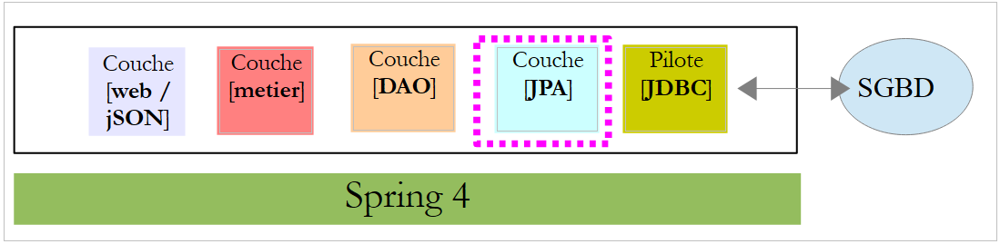 |
图层 JPA 定义了三个新实体：
 |
类 [User] 是表 [USERS] 的映射：
package rdvmedecins.entities;
import javax.persistence.Column;
import javax.persistence.Entity;
import javax.persistence.Table;
@Entity
@Table(name = "USERS")
public class User extends AbstractEntity {
private static final long serialVersionUID = 1L;
// 房产
private String identity;
private String login;
private String password;
// 构造函数
public User() {
}
public User(String identity, String login, String password) {
this.identity = identity;
this.login = login;
this.password = password;
}
// 身份
@Override
public String toString() {
return String.format("User[%s,%s,%s]", identity, login, password);
}
// 获取器和设置器
....
}
- 第 9 行：该类继承了已用于其他实体的 [AbstractEntity] 类；
- 第13-15行：未指定列名，因为它们与关联字段的名称相同；
类 [Role] 是表 [ROLES] 的映射：
package rdvmedecins.entities;
import javax.persistence.Column;
import javax.persistence.Entity;
import javax.persistence.Table;
@Entity
@Table(name = "ROLES")
public class Role extends AbstractEntity {
private static final long serialVersionUID = 1L;
// 属性
private String name;
// 构造函数
public Role() {
}
public Role(String name) {
this.name = name;
}
// 身份
@Override
public String toString() {
return String.format("Role[%s]", name);
}
// 获取器和设置器
...
}
类 [UserRole] 是表 [USERS_ROLES] 的映射：
package rdvmedecins.entities;
import javax.persistence.Entity;
import javax.persistence.JoinColumn;
import javax.persistence.ManyToOne;
import javax.persistence.Table;
@Entity
@Table(name = "USERS_ROLES")
public class UserRole extends AbstractEntity {
private static final long serialVersionUID = 1L;
// 一个 UserRole 引用一个 User
@ManyToOne
@JoinColumn(name = "USER_ID")
private User user;
// 一个 UserRole 引用一个 Role
@ManyToOne
@JoinColumn(name = "ROLE_ID")
private Role role;
// 获取器和设置器
...
}
- 第 15-17 行：定义了表 [USERS_ROLES] 指向表 [USERS] 的外键；
- 第 19-21 行：将表 [USERS_ROLES] 的外键映射到表 [ROLES]；
8.4.13.4. [DAO] 层的修改
 |
[DAO]层新增了三个[Repository]：
 |
接口 [UserRepository] 管理对实体 [User] 的访问：
package rdvmedecins.repositories;
import org.springframework.data.jpa.repository.Query;
import org.springframework.data.repository.CrudRepository;
import rdvmedecins.entities.Role;
import rdvmedecins.entities.User;
public interface UserRepository extends CrudRepository<User, Long> {
// 通过 ID 标识的用户角色列表
@Query("select ur.role from UserRole ur where ur.user.id=?1")
Iterable<Role> getRoles(long id);
// 通过用户名和密码识别的用户角色列表
@Query("select ur.role from UserRole ur where ur.user.login=?1 and ur.user.password=?2")
Iterable<Role> getRoles(String login, String password);
// 通过登录名搜索用户
User findUserByLogin(String login);
}
- 第 9 行：接口 [UserRepository] 继承了 Spring Data 的 [CrudRepository] 接口（第 4 行）；
- 第 12-13 行：方法 [getRoles(User user)] 可获取通过 [id] 标识的用户的全部角色
- 第16-17行：同上，但针对通过登录名/密码识别的用户；
- 第20行：通过用户名查找用户；
接口 [RoleRepository] 管理对实体 [Role] 的访问：
package rdvmedecins.security;
import org.springframework.data.repository.CrudRepository;
public interface RoleRepository extends CrudRepository<Role, Long> {
// 通过角色名称搜索角色
Role findRoleByName(String name);
}
- 第 5 行：接口 [RoleRepository] 扩展了接口 [CrudRepository]；
- 第 8 行：可通过角色名称进行搜索；
接口 [userRoleRepository] 管理对实体 [UserRole] 的访问：
package rdvmedecins.security;
import org.springframework.data.repository.CrudRepository;
public interface UserRoleRepository extends CrudRepository<UserRole, Long> {
}
- 第 5 行：接口 [UserRoleRepository] 仅继承了接口 [CrudRepository]，未添加新方法；
8.4.13.5. 用户和角色管理类
 |
Spring Security 要求创建一个实现以下 [UsersDetail] 接口的类：
 |
此接口在此由类 [AppUserDetails] 实现：
package rdvmedecins.security;
import java.util.ArrayList;
import java.util.Collection;
import org.springframework.security.core.GrantedAuthority;
import org.springframework.security.core.authority.SimpleGrantedAuthority;
import org.springframework.security.core.userdetails.UserDetails;
public class AppUserDetails implements UserDetails {
private static final long serialVersionUID = 1L;
// 属性
private User user;
private UserRepository userRepository;
// 构造函数
public AppUserDetails() {
}
public AppUserDetails(User user, UserRepository userRepository) {
this.user = user;
this.userRepository = userRepository;
}
// -------------------------接口
@Override
public Collection<? extends GrantedAuthority> getAuthorities() {
Collection<GrantedAuthority> authorities = new ArrayList<>();
for (Role role : userRepository.getRoles(user.getId())) {
authorities.add(new SimpleGrantedAuthority(role.getName()));
}
return authorities;
}
@Override
public String getPassword() {
return user.getPassword();
}
@Override
public String getUsername() {
return user.getLogin();
}
@Override
public boolean isAccountNonExpired() {
return true;
}
@Override
public boolean isAccountNonLocked() {
return true;
}
@Override
public boolean isCredentialsNonExpired() {
return true;
}
@Override
public boolean isEnabled() {
return true;
}
// 获取器和设置器
...
}
- 第 10 行：类 [AppUserDetails] 实现了接口 [UserDetails]；
- 第 15-16 行：该类封装了一个用户（第 15 行）以及用于获取该用户详细信息的存储库（第 16 行）；
- 第22-25行：构造函数，用于通过用户及其存储库实例化该类；
- 第 28-35 行：实现了接口 [UserDetails] 中的方法 [getAuthorities]。该方法需构建一个由类型 [GrantedAuthority] 或其派生类型组成的集合。 此处，我们使用派生类型 [SimpleGrantedAuthority]（第 32 行），该类型封装了第 15 行中用户的一个角色的名称；
- 第 31-33 行：遍历第 15 行用户角色的列表，以构建一个 [SimpleGrantedAuthority] 类型的元素列表；
- 第38-40行：实现接口[UserDetails]中的方法[getPassword]。返回第15行用户的密码；
- 第38-40行：实现接口[UserDetails]中的方法[getUserName]。返回第15行用户的登录名；
- 第47-50行：用户账户永不过期；
- 第52-55行：用户账户永不被锁定；
- 第57-60行：用户凭证永不过期；
- 第62-65行：用户账户始终处于活动状态；
Spring Security 还要求存在一个实现 [AppUserDetailsService] 接口的类：
 |
该接口由以下 [AppUserDetailsService] 类实现：
package rdvmedecins.security;
import org.springframework.beans.factory.annotation.Autowired;
import org.springframework.security.core.userdetails.UserDetails;
import org.springframework.security.core.userdetails.UserDetailsService;
import org.springframework.security.core.userdetails.UsernameNotFoundException;
import org.springframework.stereotype.Service;
@Service
public class AppUserDetailsService implements UserDetailsService {
@Autowired
private UserRepository userRepository;
@Override
public UserDetails loadUserByUsername(String login) throws UsernameNotFoundException {
// 通过登录名查找用户
User user = userRepository.findUserByLogin(login);
// 找到了吗？
if (user == null) {
throw new UsernameNotFoundException(String.format("login [%s] inexistant", login));
}
// 返回用户详细信息
return new AppUserDetails(user, userRepository);
}
}
- 第 9 行：该类将作为 Spring 组件，因此可在其上下文中使用；
- 第 12-13 行：[UserRepository] 组件将在此处被注入；
- 第 16-25 行：实现了接口 [UserDetailsService]（第 10 行）中的方法 [loadUserByUsername]。参数为用户登录名；
- 第 18 行：通过用户名搜索用户；
- 第 20-22 行：若未找到，则抛出异常；
- 第24行：构建并渲染一个[AppUserDetails]对象。该对象确实属于[UserDetails]类型（第16行）；
8.4.13.6. [DAO] 层的测试
 |
首先，我们创建一个可执行类 [CreateUser]，该类能够创建具有特定角色的用户：
package rdvmedecins.security;
import org.springframework.context.annotation.AnnotationConfigApplicationContext;
import org.springframework.security.crypto.bcrypt.BCrypt;
import rdvmedecins.config.DomainAndPersistenceConfig;
import rdvmedecins.security.Role;
import rdvmedecins.security.RoleRepository;
import rdvmedecins.security.User;
import rdvmedecins.security.UserRepository;
import rdvmedecins.security.UserRole;
import rdvmedecins.security.UserRoleRepository;
public class CreateUser {
public static void main(String[] args) {
// 语法：用户名 密码roleName
// 需要三个参数
if (args.length != 3) {
System.out.println("Syntaxe : [pg] user password role");
System.exit(0);
}
// 获取参数
String login = args[0];
String password = args[1];
String roleName = String.format("ROLE_%s", args[2].toUpperCase());
// Spring 上下文
AnnotationConfigApplicationContext context = new AnnotationConfigApplicationContext(DomainAndPersistenceConfig.class);
UserRepository userRepository = context.getBean(UserRepository.class);
RoleRepository roleRepository = context.getBean(RoleRepository.class);
UserRoleRepository userRoleRepository = context.getBean(UserRoleRepository.class);
// 该角色是否已存在？
Role role = roleRepository.findRoleByName(roleName);
// 如果不存在则创建
if (role == null) {
role = roleRepository.save(new Role(roleName));
}
// 用户是否已存在？
User user = userRepository.findUserByLogin(login);
// 如果不存在则创建
if (user == null) {
// 使用 bcrypt 对密码进行哈希处理
String crypt = BCrypt.hashpw(password, BCrypt.gensalt());
// 保存用户
user = userRepository.save(new User(login, login, crypt));
// 建立与角色的关联
userRoleRepository.save(new UserRole(user, role));
} else {
// 用户已存在——是否拥有所请求的角色？
boolean trouvé = false;
for (Role r : userRepository.getRoles(user.getId())) {
if (r.getName().equals(roleName)) {
trouvé = true;
break;
}
}
// 若未找到，则创建与角色的关联
if (!trouvé) {
userRoleRepository.save(new UserRole(user, role));
}
}
// 关闭 Spring 上下文
context.close();
}
}
- 第17行：该类需要三个参数来定义用户：用户名、密码和角色；
- 第25-27行：获取这三个参数；
- 第29行：基于配置类[DomainAndPersistenceConfig]构建Spring上下文。该类在初始项目中已存在。其应按以下方式进行修改：
@EnableJpaRepositories(basePackages = { "rdvmedecins.repositories", "rdvmedecins.security" })
@EnableAutoConfiguration
@ComponentScan(basePackages = { "rdvmedecins" })
@EntityScan(basePackages = { "rdvmedecins.entities", "rdvmedecins.security" })
@EnableTransactionManagement
public class DomainAndPersistenceConfig {
....
}
- 第 1 行：需注明 [rdvmedecins.security] 包中现已包含 [Repository] 组件；
- 第 4 行：需注明 [rdvmedecins.security] 包中现已包含 JPA 实体；
让我们回到创建用户的代码：
- 第 30-32 行：获取三个 [Repository] 的引用，这些引用可用于创建用户；
- 第 34 行：检查该角色是否已存在；
- 第 36-38 行：如果不存在，则在数据库中创建该角色。其名称将采用 [ROLE_XX] 这种格式；
- 第 40 行：检查登录名是否已存在；
- 第42-49行：若用户名不存在，则在数据库中创建；
- 第 44 行：对密码进行加密。此处使用了 Spring Security 的 [BCrypt] 类（第 4 行）。因此需要该框架的依赖包。文件 [pom.xml] 包含一个新依赖项：
<dependency>
<groupId>org.springframework.boot</groupId>
<artifactId>spring-boot-starter-security</artifactId>
</dependency>
- 第 46 行：将用户信息写入数据库；
- 第 48 行：以及将其与角色关联的关系；
- 第 51-57 行：若登录用户已存在——则检查其现有角色中是否包含要分配的角色；
- 第 59-61 行：若未找到目标角色，则在表 [USERS_ROLES] 中创建一条记录，将用户与其角色关联；
- 未对可能出现的异常进行防护。这是一个用于快速创建具有角色的用户的辅助类。
当使用参数 [x x guest] 执行该类时，数据库中将得到以下结果：
表 [USERS]
 |
表 [ROLES]
 表 |
表 [USERS_ROLES]
 |
现在我们来看第二个类 [UsersTest]，它是一个测试类 JUnit：
|
package rdvmedecins.security;
import java.util.List;
import org.junit.Assert;
import org.junit.Test;
import org.junit.runner.RunWith;
import org.springframework.beans.factory.annotation.Autowired;
import org.springframework.boot.test.SpringApplicationConfiguration;
import org.springframework.security.core.authority.SimpleGrantedAuthority;
import org.springframework.security.crypto.bcrypt.BCrypt;
import org.springframework.test.context.junit4.SpringJUnit4ClassRunner;
import rdvmedecins.config.DomainAndPersistenceConfig;
import com.google.common.collect.Lists;
@SpringApplicationConfiguration(classes = DomainAndPersistenceConfig.class)
@RunWith(SpringJUnit4ClassRunner.class)
public class UsersTest {
@Autowired
private UserRepository userRepository;
@Autowired
private AppUserDetailsService appUserDetailsService;
@Test
public void findAllUsersWithTheirRoles() {
Iterable<User> users = userRepository.findAll();
for (User user : users) {
System.out.println(user);
display("Roles :", userRepository.getRoles(user.getId()));
}
}
@Test
public void findUserByLogin() {
// 获取用户 [admin]
User user = userRepository.findUserByLogin("admin");
// 验证其密码是否为 [admin]
Assert.assertTrue(BCrypt.checkpw("admin", user.getPassword()));
// 验证管理员角色 / admin
List<Role> roles = Lists.newArrayList(userRepository.getRoles("admin", user.getPassword()));
Assert.assertEquals(1L, roles.size());
Assert.assertEquals("ROLE_ADMIN", roles.get(0).getName());
}
@Test
public void loadUserByUsername() {
// 获取用户 [admin]
AppUserDetails userDetails = (AppUserDetails) appUserDetailsService.loadUserByUsername("admin");
// 验证其密码为 [admin]
Assert.assertTrue(BCrypt.checkpw("admin", userDetails.getPassword()));
// 验证 admin / admin 角色
@SuppressWarnings("unchecked")
List<SimpleGrantedAuthority> authorities = (List<SimpleGrantedAuthority>) userDetails.getAuthorities();
Assert.assertEquals(1L, authorities.size());
Assert.assertEquals("ROLE_ADMIN", authorities.get(0).getAuthority());
}
// 实用方法——显示集合中的元素
private void display(String message, Iterable<?> elements) {
System.out.println(message);
for (Object element : elements) {
System.out.println(element);
}
}
}
- 第 27-34 行：视觉测试。显示所有用户及其角色；
- 第36-46行：通过使用[UserRepository]存储库，验证用户[admin]是否拥有密码[admin]和角色[ROLE_ADMIN]；
- 第 41 行：[admin] 是明文密码。 在数据库中，该密码是根据算法 BCrypt 加密的。方法 [BCrypt.checkpw] 可用于验证加密后的明文密码是否与数据库中的密码一致；
- 第48-59行：通过调用服务[appUserDetailsService]，验证用户[admin]的密码为[admin]，且角色为[ROLE_ADMIN]；
测试执行成功，日志如下：
8.4.13.7. 中期结论
在几乎不修改原始项目的情况下，成功向 Spring Security 添加了必要的类。回顾一下：
- 在文件 [pom.xml] 中添加了 Spring Security 依赖项；
- 在数据库中创建了三个额外表；
- 在 [rdvmedecins.security] 包中创建了 JPA 实体和 Spring 组件；
之所以能如此顺利，是因为数据库中新增的这三张表与现有表互不依赖。甚至可以将它们放在一个独立的数据库中。之所以能做到这一点，是因为我们决定将“用户”视为独立于“医生”和“客户”的存在。 如果医生和客户被视为潜在用户，就必须在表 [USERS] 与表 [MEDECINS] 及 [CLIENTS] 之间建立关联。这将对现有项目产生重大影响。
8.4.13.8. [web]层中的STS项目
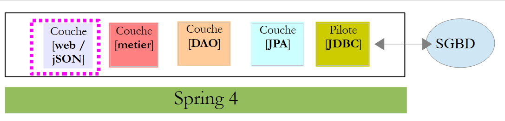 |
项目 [rdvmedecins-webjson] 的演变情况如下：[1]：
 |
主要修改需在 [rdvmedecins.web.config] 包中进行，其中需要配置 Spring Security。此外，[AppConfig] 和 [ApplicationModel] 类中还有其他一些次要修改。我们已经遇到过一个 Spring Security 配置类：
package hello;
import org.springframework.context.annotation.Configuration;
import org.springframework.security.config.annotation.authentication.builders.AuthenticationManagerBuilder;
import org.springframework.security.config.annotation.web.builders.HttpSecurity;
import org.springframework.security.config.annotation.web.configuration.WebSecurityConfigurerAdapter;
import org.springframework.security.config.annotation.web.servlet.configuration.EnableWebMvcSecurity;
@Configuration
@EnableWebMvcSecurity
public class WebSecurityConfig extends WebSecurityConfigurerAdapter {
@Override
protected void configure(HttpSecurity http) throws Exception {
http.authorizeRequests().antMatchers("/", "/home").permitAll().anyRequest().authenticated();
http.formLogin().loginPage("/login").permitAll().and().logout().permitAll();
}
@Override
protected void configure(AuthenticationManagerBuilder auth) throws Exception {
auth.inMemoryAuthentication().withUser("user").password("password").roles("USER");
}
}
我们将采用相同的步骤：
- 第 11 行：定义一个继承自 [WebSecurityConfigurerAdapter] 类的类；
- 第 13 行：定义方法 [configure(HttpSecurity http)]，用于定义 Web 服务中各个 URL 的访问权限；
- 第 19 行：定义方法 [configure(AuthenticationManagerBuilder auth)]，用于定义用户及其角色；
Spring Security 的配置由类 [SecurityConfig] 负责：
package rdvmedecins.web.config;
import org.springframework.beans.factory.annotation.Autowired;
import org.springframework.context.annotation.Configuration;
import org.springframework.http.HttpMethod;
import org.springframework.security.config.annotation.authentication.builders.AuthenticationManagerBuilder;
import org.springframework.security.config.annotation.web.builders.HttpSecurity;
import org.springframework.security.config.annotation.web.configuration.EnableWebSecurity;
import org.springframework.security.config.annotation.web.configuration.WebSecurityConfigurerAdapter;
import org.springframework.security.config.http.SessionCreationPolicy;
import org.springframework.security.crypto.bcrypt.BCryptPasswordEncoder;
import rdvmedecins.security.AppUserDetailsService;
import rdvmedecins.web.models.ApplicationModel;
@Configuration
@EnableWebSecurity
public class SecurityConfig extends WebSecurityConfigurerAdapter {
@Autowired
private AppUserDetailsService appUserDetailsService;
@Autowired
private ApplicationModel application;
@Override
protected void configure(AuthenticationManagerBuilder registry) throws Exception {
// 身份验证由 Bean [appUserDetailsService] 完成
// 密码通过哈希算法加密 BCrypt
registry.userDetailsService(appUserDetailsService).passwordEncoder(new BCryptPasswordEncoder());
}
@Override
protected void configure(HttpSecurity http) throws Exception {
// CSRF
http.csrf().disable();
// 安全应用？
if (application.isSecured()) {
// 密码通过 Authorization: Basic xxxx 头部传递
http.httpBasic();
// 必须为所有人授权 HTTP OPTIONS 方法
http.authorizeRequests() //
.antMatchers(HttpMethod.OPTIONS, "/", "/**").permitAll();
// 仅 ADMIN 角色可使用该应用程序
http.authorizeRequests() //
.antMatchers("/", "/**") // 所有 URL
.hasRole("ADMIN");
// 无会话
http.sessionManagement().sessionCreationPolicy(SessionCreationPolicy.STATELESS);
}
}
}
- 第 15 行：类 [SecurityConfig] 是 Spring 配置类；
- 第 16 行：用于配置项目的安全性；
- 第19-20行：注入了为应用程序用户提供访问权限的[AppUserDetails]类；
- 第21-22行：注入了作为Web应用程序缓存的类[ApplicationModel]。 此处决定也使用该类，以便在单一位置配置Web应用程序。正是该类定义了第36行的布尔值[isSecured]。该布尔值用于控制Web应用程序是否启用安全保护（true）或禁用（false）；
- 第25-29行：方法[configure(HttpSecurity http)]用于定义用户及其角色。该方法接收一个类型为[AuthenticationManagerBuilder]的参数。该参数包含两项信息（第28行）：
- 第20行中关于[appUserDetailsService]服务的引用，该服务供注册用户使用。需要注意的是，这里并未显示这些用户是否已注册在数据库中。因此，它们可能存储在缓存中，或由Web服务提供……
- 密码所使用的加密类型。在此重申，我们采用了BCrypt算法；
- 第38-47行：方法[configure(HttpSecurity http)]定义了Web服务中URL的访问权限；
- 第34行：我们在入门项目中看到，默认情况下Spring Security会管理一个CSRF令牌（跨站请求伪造），需要进行身份验证的用户必须将其发回给服务器。 此处该机制已被禁用。结合布尔值（isSecured=false），这使得可以不使用安全机制来运行 Web 应用程序；
- 第 38 行：启用 HTTP 标头认证模式。客户端需发送以下 HTTP 标头：
其中 code 是字符串 login:password 通过 Base64 算法编码后的结果。例如，字符串 admin:admin 的 Base64 编码为 YWRtaW46YWRtaW4=。 因此，用户名 [admin] 和密码 [admin] 将发送以下标头 HTTP 进行身份验证：
- 第40-42行：表示拥有角色[ROLE_ADMIN]的用户可以访问Web服务中的所有URL。这意味着没有该角色的用户无法访问该Web服务；
- 第47行：用户密码可选择是否存储在会话中。若存储，用户仅需在首次访问时进行身份验证，后续访问将不再要求输入凭据。此处采用无会话模式，因此每次请求都必须附带安全凭据；
配置整个应用程序的类 [AppConfig] 演变如下：
 |
package rdvmedecins.web.config;
import org.springframework.context.annotation.ComponentScan;
import org.springframework.context.annotation.Configuration;
import org.springframework.context.annotation.Import;
import rdvmedecins.config.DomainAndPersistenceConfig;
@Configuration
@ComponentScan(basePackages = { "rdvmedecins.web" })
@Import({ DomainAndPersistenceConfig.class, SecurityConfig.class, WebConfig.class })
public class AppConfig {
}
- 修改发生在第11行：添加了配置类 [SecurityConfig]；
最后，类 [ApplicationModel] 新增了一个布尔值：
@Component
public class ApplicationModel implements IMetier {
...
// 配置数据
private boolean secured = false;
public boolean isSecured() {
return secured;
}
- 第6行：根据是否需要启用安全保护，将布尔值[secured]设置为[true / false]。
8.4.13.9. Web 服务测试
我们将使用 Chrome 客户端 [Advanced Rest Client] 测试 Web 服务。我们需要指定身份验证头 HTTP：
其中 [code] 是字符串 [login:password] 的 Base64 编码。要生成此代码，可以使用以下程序：
 |
package rdvmedecins.helpers;
import org.springframework.security.crypto.codec.Base64;
public class Base64Encoder {
public static void main(String[] args) {
// 需要两个参数：登录名和密码
if (args.length != 2) {
System.out.println("Syntaxe : login password");
System.exit(0);
}
// 获取两个参数
String chaîne = String.format("%s:%s", args[0], args[1]);
// 对字符串进行编码
byte[] data = Base64.encode(chaîne.getBytes());
// 显示其 Base64 编码
System.out.println(new String(data));
}
}
如果我们使用两个参数 [admin admin] 运行该程序：
 |
将得到以下结果：
现在我们已经知道如何生成 HTTP 身份验证头，接下来启动已加密的 Web 服务：
@Component
public class ApplicationModel implements IMetier {
...
private boolean secured = true;
然后，使用 Chrome 客户端 [Advanced Rest Client]，我们请求获取所有医生的列表：
 |
- 在 [1] 中，我们查询医生的 URL；
- 在 [2] 中，使用 GET 方法；
- 在 [3] 中，我们提供身份验证的 HTTP 头部。代码 [YWRtaW46YWRtaW4=] 是字符串 [admin:admin] 的 Base64 编码；
- 在 [4] 中，我们发送命令 HTTP；
服务器的响应如下：
 |
- 在 [1] 中，包含认证头 HTTP；
- 在 [2] 中，服务器返回响应 jSON；
- 在 [3] 中，包含与 Web 应用程序安全相关的 HTTP 头部列表；
我们确实获得了医生列表：
 |
现在尝试发送一个带有错误身份验证标头的 HTTP 请求。响应如下：
 |
- 在 [1] 和 [3] 中：认证头 HTTP；
- [2]：Web 服务的响应；
现在，我们来试一下用户 user / user。该用户存在，但无法访问 Web 服务。如果我们使用两个参数 [user user] 运行 Base64 编码程序：
 |
将得到以下结果：
 |
- 其中 [1] 和 [3] 表示：认证头 HTTP；
- [2]：Web服务的响应。它与之前的[401 Unauthorized]不同。这次，用户已成功认证，但没有足够的权限访问URL；
一个安全的Web服务现已投入运行。我们将对其进行扩展，使其支持跨域请求。这一需求在文档[Tutoriel AngularJS / Spring 4]中有所体现，尽管此处并未出现该需求，但我们仍将予以实现。
8.4.14. 跨域请求的实现
让我们来探讨跨域请求的问题。在文档 [Tutoriel AngularJS / Spring 4] 中，我们开发了一个客户端/服务器应用程序，其中客户端是应用程序 AngularJS：
 |
- Angular 应用程序中的页面 HTML / CSS / JS 来自服务器 [1]；
- 在 [2] 中，服务 [dao] 向另一台服务器 [2] 发起了请求。 然而，运行 Angular 应用程序的浏览器禁止这种操作，因为这属于安全漏洞。该应用程序只能向其来源服务器（即 [1] 服务器）发起请求；
实际上，说浏览器禁止Angular应用程序向[2]服务器发送请求是不准确的。它实际上是向该服务器发送请求，询问其是否允许非本源客户端向其发送请求。 这种共享技术被称为 CORS（跨源资源共享）。[2] 服务器通过发送特定的 HTTP 头部来表示同意。
为了展示可能遇到的问题，我们将创建一个客户端/服务器应用程序，其中：
- 服务器将由我们的 Web 服务器 / jSON 承担；
- 客户端是一个简单的 HTML 页面，其中嵌入了向 Web 服务器 / jSON 发送请求的 JavaScript 代码；
8.4.14.1. 客户端项目
 |
该项目是一个Maven项目，包含以下文件[pom.xml]：
<?xml version="1.0" encoding="UTF-8"?>
<project xmlns="http://maven.apache.org/POM/4.0.0" xmlns:xsi="http://www.w3.org/2001/XMLSchema-instance"
xsi:schemaLocation="http://maven.apache.org/POM/4.0.0 http://maven.apache.org/xsd/maven-4.0.0.xsd">
<modelVersion>4.0.0</modelVersion>
<groupId>istia.st</groupId>
<artifactId>rdvmedecins-webjson-client-cors</artifactId>
<version>0.0.1-SNAPSHOT</version>
<packaging>jar</packaging>
<name>rdvmedecins-webjson-client-cors</name>
<description>Client for webjson server</description>
<parent>
<groupId>org.springframework.boot</groupId>
<artifactId>spring-boot-starter-parent</artifactId>
<version>1.2.6.RELEASE</version>
<relativePath /> <!-- 从仓库中查找父节点 -->
</parent>
<properties>
<project.build.sourceEncoding>UTF-8</project.build.sourceEncoding>
<start-class>istia.st.rdvmedecins.Client</start-class>
<java.version>1.8</java.version>
</properties>
<dependencies>
<!-- spring MVC -->
<dependency>
<groupId>org.springframework.boot</groupId>
<artifactId>spring-boot-starter-web</artifactId>
</dependency>
</dependencies>
</project>
- 第 14-19 行：这是一个 Spring Boot 项目；
- 第29-32行：使用了[spring-boot-starter-web]依赖项，该依赖项自带Tomcat服务器和Spring MVC；
HTML 页面如下：
 |
该页面由以下代码生成：
<!DOCTYPE html>
<html>
<head>
<meta charset="UTF-8">
<title>Spring MVC</title>
<script type="text/javascript" src="/js/jquery-2.1.1.min.js"></script>
<script type="text/javascript" src="/js/client.js"></script>
</head>
<body>
<h2>Client du service web / jSON</h2>
<form id="formulaire">
<!-- 方法 HTTP -->
Méthode HTTP :
<!-- -->
<input type="radio" id="get" name="method" value="get" checked="checked" />GET
<!-- -->
<input type="radio" id="post" name="method" value="post" />POST
<!-- URL -->
<br /> <br />URL cible : <input type="text" id="url" size="30"><br />
<!-- 已发布的值 -->
<br /> Chaîne jSON à poster : <input type="text" id="posted" size="50" />
<!-- 确认按钮 -->
<br /> <br /> <input type="submit" value="Valider" onclick="javascript:requestServer(); return false;"></input>
</form>
<hr />
<h2>Réponse du serveur</h2>
<div id="response"></div>
</body>
</html>
- 第 6 行：导入库 jQuery；
- 第 7 行：导入我们将要编写的代码；
代码 [client.js] 如下：
// 全局数据
var url;
var posted;
var response;
var method;
function requestServer() {
// 获取表单信息
var urlValue = url.val();
var postedValue = posted.val();
method = document.forms[0].elements['method'].value;
// 手动发起Ajax请求
if (method === "get") {
doGet(urlValue);
} else {
doPost(urlValue, postedValue);
}
}
function doGet(url) {
// 手动发起Ajax请求
$.ajax({
headers : {
'Authorization' : 'Basic YWRtaW46YWRtaW4='
},
url : 'http://localhost:8080' + url,
type : 'GET',
dataType : 'tex/plain',
beforeSend : function() {
},
success : function(data) {
// 文本结果
response.text(data);
},
complete : function() {
},
error : function(jqXHR) {
// 系统错误
response.text(jqXHR.responseText);
}
})
}
function doPost(url, posted) {
// 手动发起Ajax请求
$.ajax({
headers : {
'Authorization' : 'Basic YWRtaW46YWRtaW4='
},
url : 'http://localhost:8080' + url,
type : 'POST',
contentType : 'application/json',
data : posted,
dataType : 'tex/plain',
beforeSend : function() {
},
success : function(data) {
// 文本结果
response.text(data);
},
complete : function() {
},
error : function(jqXHR) {
// 系统错误
response.text(jqXHR.responseText);
}
})
}
// 在加载文档时
$(document).ready(function() {
// 正在获取页面组件的引用
url = $("#url");
posted = $("#posted");
response = $("#response");
});
我们留给读者自行理解这段代码。其中所有内容都曾在其他地方出现过。不过，某些行值得解释一下：
- 第11行：
- [document] 指代浏览器加载的文档，即所谓的 DOM（文档对象模型），
- [document.forms[0]] 指代文档中的第一个表单，一个文档可能包含多个表单。此处仅有一个，
- [document.forms[0].elements['method']] 指表单中具有 [name='method'] 属性的元素。共有两个：
<input type="radio" id="get" name="method" value="get" checked="checked" />GET
<input type="radio" id="post" name="method" value="post" />POST
- 第 11 行：
- [document.forms[0].elements['method'].value] 是将要提交给具有 [name='method'] 属性的组件的值。 我们知道，提交的值是已选中单选按钮的 [value] 属性的值。因此，这里将是 ['get', 'post'] 字符串之一；
- 第23-25行：我们正在访问一个要求包含HTTP [Authorization: Basic code]头部的服务器。我们为用户[admin / admin]创建此头部，因为只有该用户才能向服务器发起请求；
- 第26行：用户将输入URL类型的[/getAllMedecins, /supprimerRv, ...]。因此需要补充这些URL；
- 第28行：服务器返回jSON，这是一种文本形式。将结果类型指定为[text/plain]，以便按接收时的原样显示；
- 第33行：显示服务器的文本响应；
- 第39行：以文本格式显示可能出现的错误信息；
- 第 52 行：用于指示客户端发送 jSON；
在构建的客户端/服务器应用程序中：
- 客户端是一个可通过 URL [http://localhost:8081] 访问的 Web 应用程序。这就是我们正在构建的应用程序；
- 服务器是一个可通过 URL [http://localhost:8080] 访问的 Web 应用程序。这就是我们的 Web 服务器 / jSON；
由于客户端并非从与服务器相同的端口获取数据，因此出现了跨域请求的问题。[http://localhost:8080] 和 [http://localhost:8081] 属于两个不同的域名。
该 Spring Boot 应用是一个由以下可执行类 [Client] 启动的控制台应用：
package istia.st.rdvmedecins;
import org.springframework.boot.SpringApplication;
import org.springframework.boot.context.embedded.EmbeddedServletContainerFactory;
import org.springframework.boot.context.embedded.ServletRegistrationBean;
import org.springframework.boot.context.embedded.tomcat.TomcatEmbeddedServletContainerFactory;
import org.springframework.context.annotation.Bean;
import org.springframework.context.annotation.Configuration;
import org.springframework.web.servlet.DispatcherServlet;
import org.springframework.web.servlet.config.annotation.EnableWebMvc;
import org.springframework.web.servlet.config.annotation.ResourceHandlerRegistry;
import org.springframework.web.servlet.config.annotation.WebMvcConfigurerAdapter;
@Configuration
@EnableWebMvc
public class Client extends WebMvcConfigurerAdapter {
public static void main(String[] args) {
SpringApplication.run(Client.class, args);
}
// 静态页面
@Override
public void addResourceHandlers(ResourceHandlerRegistry registry) {
registry.addResourceHandler("/**").addResourceLocations(new String[] { "classpath:/static/" });
}
// QZXW2HTML配置CZGlzcGF0Y2hlclNlcnZsZXQZQX
@Bean
public DispatcherServlet dispatcherServlet() {
return new DispatcherServlet();
}
@Bean
public ServletRegistrationBean servletRegistrationBean(DispatcherServlet dispatcherServlet) {
return new ServletRegistrationBean(dispatcherServlet, "/*");
}
// 嵌入式 Tomcat 服务器
@Bean
public EmbeddedServletContainerFactory embeddedServletContainerFactory() {
return new TomcatEmbeddedServletContainerFactory("", 8081);
}
}
- 第 14 行：类 [Client] 是一个 Spring 配置类；
- 第 15 行：配置了一个 Spring 应用程序 MVC。该注解会带来一些自动配置；
- 第 16 行：若要重写 Spring 框架 MVC 的某些默认值，需继承类 [WebMvcConfigurerAdapter]；
- 第23-26行：[addResourceHandlers]方法用于指定应用程序静态资源（html、css、js等）所在的文件夹。此处指定了位于项目类路径中的[static]文件夹：
 |
- 第29-37行：配置Bean [dispatcherServlet]，该Bean指向Spring Servlet MVC；
- 第 40-43 行：嵌入式 Tomcat 服务器将在 8081 端口上运行；
8.4.14.2. URL [/getAllMedecins]
我们启动：
- Web/JSON服务器在8080端口上运行；
- 该服务器的客户端在 8081 端口上运行；
然后我们请求 URL [http://localhost:8081/client.html] [1]：
 |
- 在 [2] 上，我们对 URL [http://localhost:8080/getAllMedecins] 执行 GET 操作；
我们未收到服务器的响应。查看开发者控制台（Ctrl-Shift-I）时，发现了一个错误：
 |
- 在 [1] 中，当前位于 [Network] 标签页；
- 在 [2] 处，可以看到已发出的请求 HTTP 并非 [GET]，而是 [OPTIONS]。 对于跨域请求，浏览器会通过发送请求 HTTP [OPTIONS] 向服务器验证是否满足若干条件。 在此情况下，请求即为圆点标记所指向的 [5-6]；
- 在 [5] 中，浏览器询问是否可以通过 GET 访问目标 URL。 [Access-Control-Request-Method]请求的头部要求响应包含HTTP [Access-Control-Allow-Methods]头部，表明所请求的方法被接受；
- 在 [5] 中，浏览器发送了 HTTP [Origin: http://localhost:8081] 头部。 该标头要求在 HTTP [Access-Control-Allow-Origin] 标头中返回响应，表明已接受指定的源；
- 在 [6] 中，浏览器会询问是否接受 HTTP、[accept] 和 [authorization] 这三个标头。 请求头 [Access-Control-Request-Headers] 期待收到包含 HTTP 和 [Access-Control-Allow-Headers] 头部的响应，表明所请求的头部已被接受；
- [3] 出现错误。点击图标后，出现错误 [4]；
- 在 [4] 中，消息提示服务器未发送 HTTP 和 [Access-Control-Allow-Origin] 这两个标头，这些标头用于指示是否接受请求的来源；
- 在 [7] 中，可以发现服务器确实未发送该标头。因此，浏览器拒绝执行最初请求的 HTTP GET 请求；
我们需要修改Web服务器/jSON。首先在[ApplicationModel]中进行修改，该配置项属于Web服务的配置组件之一：
 |
@Component
public class ApplicationModel implements IMetier {
...
// 配置数据
private boolean corsAllowed = true;
private boolean secured = true;
...
public boolean isCorsAllowed() {
return corsAllowed;
}
- 第 6 行：我们创建一个布尔值，用于指示是否接受服务器域外的客户端；
- 第 10-12 行：访问该信息的处理方法；
然后我们创建一个新的 Spring 控制器 MVC：
 |
[RdvMedecinsCorsController]类的定义如下：
package rdvmedecins.web.controllers;
import javax.servlet.http.HttpServletResponse;
import org.springframework.beans.factory.annotation.Autowired;
import org.springframework.stereotype.Controller;
import org.springframework.web.bind.annotation.RequestMapping;
import org.springframework.web.bind.annotation.RequestMethod;
import rdvmedecins.web.models.ApplicationModel;
@Controller
public class RdvMedecinsCorsController {
@Autowired
private ApplicationModel application;
// 向客户端发送选项
public void sendOptions(String origin, HttpServletResponse response) {
// 允许跨源请求吗？
if (!application.isCorsAllowed() || origin==null || !origin.startsWith("http://localhost")) {
return;
}
// 设置标头CORS
response.addHeader("Access-Control-Allow-Origin", origin);
// 允许某些标头
response.addHeader("Access-Control-Allow-Headers", "accept, authorization");
// 允许 GET
response.addHeader("Access-Control-Allow-Methods", "GET");
}
// 医生列表
@RequestMapping(value = "/getAllMedecins", method = RequestMethod.OPTIONS)
public void getAllMedecins(@RequestHeader(value = "Origin", required = false) String origin, HttpServletResponse response) {
sendOptions(origin, response);
}
}
- 第12-13行：类[RdvMedecinsCorsController]是一个Spring控制器；
- 第33-36行：定义了一个操作，用于处理在调用HTTP和[OPTIONS]命令时请求的URL和[/getAllMedecins]；
- 第 34 行：方法 [getAllMedecins] 接受以下参数：
- 对象 [@RequestHeader(value = "Origin", required = false)]，该对象将从请求中检索标题 HTTP [Origin]。该标题由请求发起者发送：
说明 HTTP [Origin] 头部是可选的 [required = false]。 在此情况下，若该标头缺失，参数 [String origin] 的值将设为 null。由于 [required = true] 是默认值，若标头缺失则会抛出异常。我们希望避免这种情况；
- 第 34 行：
- 将发送给发起请求的客户端的对象 [HttpServletResponse response]；
这两个参数由 Spring 注入；
- 第 35 行：将请求的处理委托给第 19-30 行中的方法；
- 第 15-16 行：注入对象 [ApplicationModel]；
- 第21-23行：如果应用程序配置为接受跨域请求，且请求发起方发送了HTTP和[Origin]这两个头部，并且该源头以[http://localhost]开头， 则接受跨域请求，否则拒绝；
- 第 25 行：如果客户端位于 [http://localhost:port] 域中，则发送 HTTP 标头：
这意味着服务器接受该客户端的来源；
- 第25行：我们在请求HTTP [OPTIONS]中标记了两个特殊的HTTP标头：
针对 HTTP 和 [Access-Control-Request-X] 这两个请求头，服务器返回了 HTTP 和 [Access-Control-Allow-X] 请求头，其中指明了允许的内容。 第23-26行仅重复客户端的请求以表明其已被接受；
现在我们可以进行新的测试了。我们启动了Web服务的新版本，却发现问题依然存在。没有任何变化。如果在上文第35行添加控制台输出，该输出永远不会显示，这表明第34行的[getAllMedecins]方法从未被调用。
经过一番调查，我们发现Spring MVC会自行处理HTTP和[OPTIONS]命令，并采用默认处理机制。 因此，响应始终由 Spring 处理，第 34 行中的 [getAllMedecins] 方法从未被调用。Spring MVC 的这种默认行为是可以更改的。我们修改现有的 [WebConfig] 类：
 |
package rdvmedecins.web.config;
...
import org.springframework.web.servlet.DispatcherServlet;
@Configuration
public class WebConfig {
// dispatcherservlet 的配置用于 CORS 头
@Bean
public DispatcherServlet dispatcherServlet() {
DispatcherServlet servlet = new DispatcherServlet();
servlet.setDispatchOptionsRequest(true);
return servlet;
}
// 映射jSON
...
- 第 10-11 行：Bean [dispatcherServlet] 用于定义处理客户端请求的 Servlet。此处其类型为 [DispatcherServlet]，即 Spring 框架的 Servlet MVC；
- 第 12 行：创建一个类型为 [DispatcherServlet] 的实例；
- 第 13 行：要求该 Servlet 将 HTTP 和 [OPTIONS] 命令转发给应用程序；
- 第 14 行：将 Servlet 配置为上述状态；
我们使用此新配置重新进行测试。结果如下：
 |
- 在 [1] 中，我们看到有两个请求 HTTP 指向 URL [http://localhost:8080/getAllMedecins]；
- 在 [2] 中，请求 [OPTIONS]；
- 在 [3] 中，包含我们在服务器响应中刚刚配置的三个 HTTP 头部；
现在让我们来看第二个请求：
 |
- 转换为 [1]，即所分析的请求；
- 转换为 [2]，即请求 GET。 通过第一个请求 [OPTIONS]，浏览器已收到其请求的信息。现在，它执行最初请求的 [GET]；
- 在 [3] 中，服务器返回响应；
- 在 [4] 中，服务器发送了 jSON；
- [5]，发生错误；
- 在 [6] 中，错误消息；
这里的情况更难解释。服务器的响应 [3] 属于正常情况，即 [HTTP/1.1 200 OK]。 因此，我们应该已经获得了所请求的文档。可能是服务器确实发送了文档，但浏览器阻止了其使用，因为它要求针对请求 GET，响应中也必须包含标头 HTTP [Access-Control-Allow-Origin:http://localhost:8081]。
我们将控制器 [RdvMedecinsController] 修改如下：
@Autowired
private RdvMedecinsCorsController rdvMedecinsCorsController;
...
// 医生列表
@RequestMapping(value = "/getAllMedecins", method = RequestMethod.GET, produces = "application/json; charset=UTF-8")
@ResponseBody
public String getAllMedecins(HttpServletResponse httpServletResponse,
@RequestHeader(value = "Origin", required = false) String origin) throws JsonProcessingException {
// 响应
Response<List<Medecin>> response;
// CORS 的标头
rdvMedecinsCorsController.sendOptions(origin, httpServletResponse);
// 应用程序状态
...
- 第 1-2 行：注入控制器 [RdvMedecinsCorsController]；
- 第7-8行： 在方法 [getAllMedecins] 的参数中注入对象 HttpServletResponse，该对象封装了将返回给客户端的响应以及头部 HTTP [Origin]；
- 第12行：调用控制器[RdvMedecinsCorsController]中的方法[sendOptions]，该方法正是处理请求HTTP [OPTIONS]时所调用的。 因此，它将发送与该请求相同的 HTTP 头部；
修改后，结果如下：
 |
我们确实成功获取了医生列表。
8.4.14.3. 其他 URL [GET]
现在我们展示通过 GET 查询到的其他 URL。 在控制器中，处理这些请求的操作代码遵循了之前处理 URL 和 [/getAllMedecins] 请求的操作模板。读者可查阅本文档附带的示例代码。以下是一个示例：
在 [RdvMedecinsCorsController] 中
// 某位医生的预约列表
@RequestMapping(value = "/getRvMedecinJour/{idMedecin}/{jour}", method = RequestMethod.OPTIONS)
public void getRvMedecinJour(@RequestHeader(value = "Origin", required = false) String origin, HttpServletResponse response) {
sendOptions(origin, response);
}
在 [RdvMedecinsController] 中
// 某医生的预约列表
@RequestMapping(value = "/getRvMedecinJour/{idMedecin}/{jour}", method = RequestMethod.GET, produces = "application/json; charset=UTF-8")
@ResponseBody
public String getRvMedecinJour(@PathVariable("idMedecin") long idMedecin, @PathVariable("jour") String jour,
HttpServletResponse httpServletResponse, @RequestHeader(value = "Origin", required = false) String origin)
throws JsonProcessingException {
// 回复
Response<List<Rv>> response = null;
boolean erreur = false;
// 标题CORS
rdvMedecinsCorsController.sendOptions(origin, httpServletResponse);
// 应用程序状态
...
以下是运行时的屏幕截图：
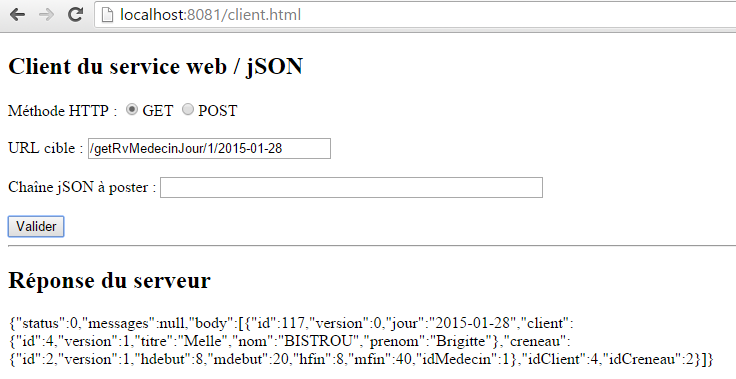 |
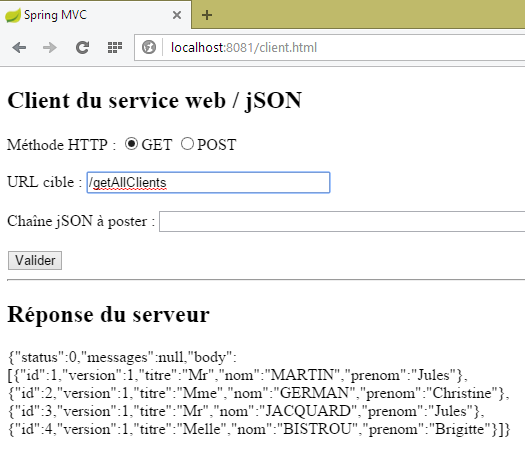 |
 |
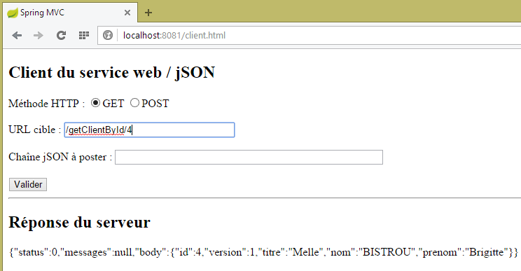 |
 |
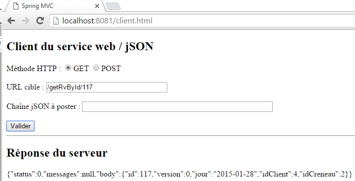 |
 |
8.4.14.4. URL[POST]
让我们来看一下以下情况：
 |
- 将 POST [1] 映射到 URL [2]；
- 在 [3] 中，该值已发布。这是一个字符串 jSON；
- 总而言之，我们要删除具有[id] 100的预约；
目前我们不修改任何代码。所得结果如下：
 |
- 在 [1] 中，与 [GET] 的请求类似，浏览器会发起一个 [OPTIONS] 的请求；
- 在 [2] 时，它会为 [POST] 请求申请访问授权。此前该请求为 [GET]；
- 在 [3] 中，它请求授权发送 HTTP 和 [accept, authorization, content-type] 这两个头部。此前，我们只有前两个头部；
我们将方法 [RdvMedecinsCorsController.sendOptions] 修改如下：
public void sendOptions(String origin, HttpServletResponse response) {
// 允许 CORS 吗？
if (!application.isCorsAllowed() || origin==null || !origin.startsWith("http://localhost")) {
return;
}
// 设置标头 CORS
response.addHeader("Access-Control-Allow-Origin", origin);
// 允许某些标头
response.addHeader("Access-Control-Allow-Headers", "accept, authorization, content-type");
// 允许 GET
response.addHeader("Access-Control-Allow-Methods", "GET, POST");
}
- 第 9 行：添加了标头 HTTP [Content-Type]（大小写不分）；
- 第 11 行：添加了方法 HTTP [POST]；
这样一来，[POST]方法将与[GET]请求以相同方式处理。以下是URL和[/supprimerRv]的示例：
在 [RdvMedecinsController] 中
@RequestMapping(value = "/supprimerRv", method = RequestMethod.POST, produces = "application/json; charset=UTF-8", consumes = "application/json; charset=UTF-8")
@ResponseBody
public String supprimerRv(@RequestBody PostSupprimerRv post, HttpServletResponse httpServletResponse,
@RequestHeader(value = "Origin", required = false) String origin) throws JsonProcessingException {
// 响应
Response<Void> response = null;
boolean erreur = false;
// CORS 标头
rdvMedecinsCorsController.sendOptions(origin, httpServletResponse);
// 应用程序状态
if (messages != null) {
...
在 [RdvMedecinsCorsController] 中
@RequestMapping(value = "/supprimerRv", method = RequestMethod.OPTIONS)
public void supprimerRv(@RequestHeader(value = "Origin", required = false) String origin, HttpServletResponse response) {
sendOptions(origin, response);
}
所得结果如下：
 |
对于 URL [/ajouterRv]，结果如下：
 |
8.4.14.5. Conclusion
我们的应用程序现已支持跨域请求。这些请求可通过在类 [ApplicationModel] 中进行配置来启用或禁用：
// 配置数据
private boolean corsAllowed = false;
8.5. Web 服务的客户端 / jSON
让我们回到我们要编写的应用程序的总体架构：
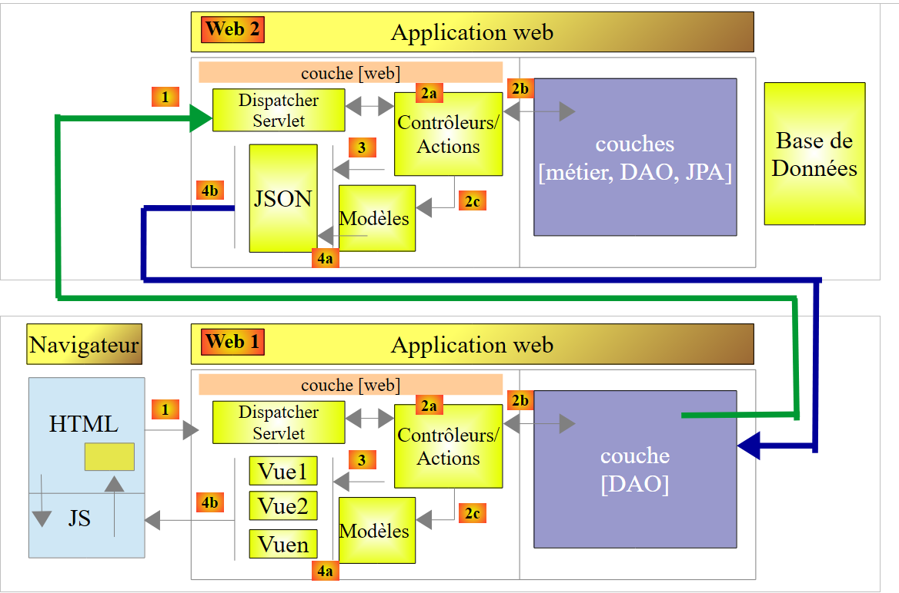 |
架构图的上部已经编写完成。这就是 Web 服务器 / jSON。现在我们着手处理下部，首先是它的底层 [DAO]。我们将编写该部分，然后使用控制台客户端进行测试。测试架构如下：
 |
8.5.1. 控制台客户端项目
控制台客户端的 STS 项目如下：
 |
8.5.2. Maven配置
控制台客户端的 [pom.xml] 文件如下：
<project xmlns="http://maven.apache.org/POM/4.0.0" xmlns:xsi="http://www.w3.org/2001/XMLSchema-instance"
xsi:schemaLocation="http://maven.apache.org/POM/4.0.0 http://maven.apache.org/xsd/maven-4.0.0.xsd">
<modelVersion>4.0.0</modelVersion>
<groupId>istia.st.rdvmedecins</groupId>
<artifactId>rdvmedecins-webjson-client-console</artifactId>
<version>0.0.1-SNAPSHOT</version>
<name>rdvmedecins-webjson-client-console</name>
<description>Client console du serveur web / jSON</description>
<properties>
<project.build.sourceEncoding>UTF-8</project.build.sourceEncoding>
<java.version>1.8</java.version>
</properties>
<parent>
<groupId>org.springframework.boot</groupId>
<artifactId>spring-boot-starter-parent</artifactId>
<version>1.2.6.RELEASE</version>
<relativePath /> <!-- 从存储库查找父级 -->
</parent>
<dependencies>
<!-- Spring -->
<dependency>
<groupId>org.springframework</groupId>
<artifactId>spring-web</artifactId>
</dependency>
<!-- Spring 使用的库 jSON -->
<dependency>
<groupId>com.fasterxml.jackson.core</groupId>
<artifactId>jackson-core</artifactId>
</dependency>
<dependency>
<groupId>com.fasterxml.jackson.core</groupId>
<artifactId>jackson-databind</artifactId>
</dependency>
<!-- Spring 使用的组件 RestTemplate -->
<dependency>
<groupId>org.apache.httpcomponents</groupId>
<artifactId>httpclient</artifactId>
</dependency>
</dependencies>
</project>
- 第 15-20 行：父 Spring Boot 项目；
- 第 24-27 行：Web 服务器 / jSON 的控制台客户端基于一个名为 [RestTemplate] 的组件，该组件由依赖项 [spring-web] 提供；
- 第 29-36 行：jSON 对象的序列化/反序列化需要 jSON 库。我们使用的是 Spring Web 所用 Jackson 库的一个变体；
- 第38-41行：在最底层，[RestTemplate]组件通过TCP/IP套接字与服务器通信。 我们希望设置其中 [timeout] 的参数，即服务器响应的最长等待时间。[RestTemplate] 组件不允许我们设置该参数。 为此，我们将向构造函数 [RestTemplate] 传递由依赖项 [org.apache.httpcomponents.httpclient] 提供的底层组件。正是这个依赖项使我们能够设置通信的 [timeout]；
8.5.3. [rdvmedecins.client.entities] 包
 |
[rdvmedecins.client.entities] 包汇集了 Web 服务 / jSON 通过其各个 URL 发送的所有实体。我们不再赘述。 只需说明，实体 JPA 和 [Client, Creneau, Medecin, Rv, Personne] 已去除了所有 JPA 注释以及 jSON 注释。 以下以类 [Rv] 为例：
package rdvmedecins.client.entities;
import java.util.Date;
public class Rv extends AbstractEntity {
private static final long serialVersionUID = 1L;
// 预约日期
private Date jour;
// 一个预约与客户相关联
private Client client;
// 预约与时段相关联
private Creneau creneau;
// 外部键
private long idClient;
private long idCreneau;
// 默认制造商
public Rv() {
}
// 带参数
public Rv(Date jour, Client client, Creneau creneau) {
this.jour = jour;
this.client = client;
this.creneau = creneau;
}
// toString
public String toString() {
return String.format("Rv[%d, %s, %d, %d]", id, jour, client.id, creneau.id);
}
// 获取器和设置器
...
}
8.5.4. [rdvmedecins.client.requests] 软件包
 |
[rdvmedecins.client.requests] 包汇集了两个类，其值 jSON 被发布到 URL、[/ajouterRv] 和 [supprimerRv]。 它们与服务器端的内容完全一致。
8.5.5. 包 [rdvmedecins.client.responses]
 |
[Response]是Web服务所有响应的类型 / jSON。这是一个通用类型：
package rdvmedecins.client.responses;
import java.util.List;
public class Response<T> {
// ----------------- 属性
// 操作状态
private int status;
// 可能出现的错误信息
private List<String> messages;
// 响应正文
private T body;
// 构造函数
public Response() {
}
public Response(int status, List<String> messages, T body) {
this.status = status;
this.messages = messages;
this.body = body;
}
// 获取器和设置器
...
}
- 第 5 行：类型 [T] 取决于 Web 服务 / URL 的 jSON；
8.5.6. [rdvmedecins.client.dao] 包
 |
- [IDao] 是 [DAO] 层的接口，而 [Dao] 是其实现。我们将稍后讨论该实现；
8.5.7. [rdvmedecins.client.config] 包
 |
类 [DaoConfig] 用于配置应用程序。其代码如下：
package rdvmedecins.client.config;
import org.springframework.context.annotation.Bean;
import org.springframework.context.annotation.ComponentScan;
import org.springframework.context.annotation.Configuration;
import org.springframework.http.client.HttpComponentsClientHttpRequestFactory;
import org.springframework.web.client.RestTemplate;
import com.fasterxml.jackson.databind.ObjectMapper;
import com.fasterxml.jackson.databind.ser.impl.SimpleBeanPropertyFilter;
import com.fasterxml.jackson.databind.ser.impl.SimpleFilterProvider;
@Configuration
@ComponentScan({ "rdvmedecins.client.dao" })
public class DaoConfig {
@Bean
public RestTemplate restTemplate() {
// 组件创建 RestTemplate
HttpComponentsClientHttpRequestFactory factory = new HttpComponentsClientHttpRequestFactory();
RestTemplate restTemplate = new RestTemplate(factory);
// 结果
return restTemplate;
}
// 映射器 jSON
@Bean
public ObjectMapper jsonMapper(){
return new ObjectMapper();
}
@Bean
public ObjectMapper jsonMapperShortCreneau() {
ObjectMapper jsonMapperShortCreneau = new ObjectMapper();
SimpleBeanPropertyFilter creneauFilter = SimpleBeanPropertyFilter.serializeAllExcept("medecin");
jsonMapperShortCreneau.setFilters(new SimpleFilterProvider().addFilter("creneauFilter", creneauFilter));
return jsonMapperShortCreneau;
}
@Bean
public ObjectMapper jsonMapperLongRv() {
ObjectMapper jsonMapperLongRv = new ObjectMapper();
SimpleBeanPropertyFilter rvFilter = SimpleBeanPropertyFilter.serializeAllExcept("");
SimpleBeanPropertyFilter creneauFilter = SimpleBeanPropertyFilter.serializeAllExcept("medecin");
jsonMapperLongRv.setFilters(new SimpleFilterProvider().addFilter("rvFilter", rvFilter).addFilter("creneauFilter",
creneauFilter));
return jsonMapperLongRv;
}
@Bean
public ObjectMapper jsonMapperShortRv() {
ObjectMapper jsonMapperShortRv = new ObjectMapper();
SimpleBeanPropertyFilter rvFilter = SimpleBeanPropertyFilter.serializeAllExcept("client", "creneau");
jsonMapperShortRv.setFilters(new SimpleFilterProvider().addFilter("rvFilter", rvFilter));
return jsonMapperShortRv;
}
}
- 第 13 行：类 [DaoConfig] 是一个 Spring 配置类；
- 第 14 行：将遍历 [rdvmedecins.client.dao] 包以查找 Spring 组件。其中包含 [Dao] 组件；
- 第17-24行：定义了一个名为[restTemplate]（即方法名）的Spring单例。 该方法返回一个 [RestTemplate] 实例，这是 Spring 提供的用于与 Web 服务 / jSON 通信的基础工具；
- 第 21 行：这里可以写成 [RestTemplate restTemplate = new RestTemplate() ;]。在大多数情况下这样就足够了。但在此处，我们需要固定客户端的 [timeout]。 为此，我们在 [RestTemplate] 组件中注入了一个 [HttpComponentsClientHttpRequestFactory] 类型的底层组件（第 20 行），这将使我们能够设置这些 [timeout]。所需的 Maven 依赖项已列出；
- 第28-57行：定义了映射器jSON。 这些是服务器端（参见第 8.4.11.3 节）用于将响应 [Response<T>] 的类型 T 序列化的映射器 jSON。现在，这些相同的转换器将在客户端用于将类型 T 反序列化；
8.5.8. [IDao] 接口
让我们回到应用程序的架构：
 |
[DAO]层是[console]层与Web服务/jSON所暴露的URL层之间的适配器。 其接口 [IDao] 将如下所示：
package rdvmedecins.client.dao;
import java.util.List;
import rdvmedecins.client.entities.AgendaMedecinJour;
import rdvmedecins.client.entities.Client;
import rdvmedecins.client.entities.Creneau;
import rdvmedecins.client.entities.Medecin;
import rdvmedecins.client.entities.Rv;
import rdvmedecins.client.entities.User;
public interface IDao {
// Web 服务 URL
public void setUrlServiceWebJson(String url);
// 超时
public void setTimeout(int timeout);
// 身份验证
public void authenticate(User user);
// 客户列表
public List<Client> getAllClients(User user);
// 医生列表
public List<Medecin> getAllMedecins(User user);
// 医生时段列表
public List<Creneau> getAllCreneaux(User user, long idMedecin);
// 按 ID 查找客户
public Client getClientById(User user, long id);
// 按ID查找客户
public Medecin getMedecinById(User user, long id);
// 按ID查找预约
public Rv getRvById(User user, long id);
// 根据ID查找时段
public Creneau getCreneauById(User user, long id);
// 添加 RV
public Rv ajouterRv(User user, String jour, long idCreneau, long idClient);
// 删除一个 RV
public void supprimerRv(User user, long idRv);
// 某医生在特定日期内的预约列表
public List<Rv> getRvMedecinJour(User user, long idMedecin, String jour);
// 日程表
public AgendaMedecinJour getAgendaMedecinJour(User user, long idMedecin, String jour);
}
- 第 14 行：用于设置 Web 服务 / jSON 的根 URL 的方法，例如 [http://localhost:8080]；
- 第 17 行：用于设置客户端 [timeout] 的方法。需要控制此参数，因为某些 HTTP 客户端有时会长时间等待一个永远不会到来的响应；
- 第20行：用于识别用户的[login, passwd]方法。若无法识别用户，则抛出异常；
- 第22-53行：Web服务/jSON所暴露的每个URL都关联了一个接口方法，该方法的签名源自处理所暴露URL的服务器端方法的签名。 以以下服务器端 URL 为例：
@RequestMapping(value = "/getAgendaMedecinJour/{idMedecin}/{jour}", method = RequestMethod.GET)
public Response<String> getAgendaMedecinJour(@PathVariable("idMedecin") long idMedecin, @PathVariable("jour") String jour, HttpServletResponse response, @RequestHeader(value = "Origin", required = false) String origin) {
- 第 1 行：可以看到 [idMedecin] 和 [jour] 是 URL 的参数。这些将作为客户端 URL 关联方法的输入参数；
- 第2行：可以看到服务器方法返回的类型为[Response<String>]。该类型[String]是类型[AgendaMedecinJour]的值jSON的类型。 客户端与该 URL 关联的方法返回值的类型将为 [AgendaMedecinJour]；
在客户端，声明以下方法：
public AgendaMedecinJour getAgendaMedecinJour(User user, long idMedecin, String jour);
当服务器发送包含 [status==0] 的 [int status, List<String> messages, String body] 响应时，此签名适用。此时我们得到 [messages==null && body!=null]。当 [status!=0] 时，此签名不适用。 此时我们得到的是 [messages!=null && body==null]。我们需要以某种方式报告已发生错误。为此，我们将抛出如下 [RdvMedecinsException] 类型的异常：
package rdvmedecins.client.dao;
import java.util.List;
public class RdvMedecinsException extends RuntimeException {
private static final long serialVersionUID = 1L;
// 错误代码
private int status;
// 错误消息列表
private List<String> messages;
public RdvMedecinsException() {
}
public RdvMedecinsException(int code, List<String> messages) {
super();
this.status = code;
this.messages = messages;
}
// 获取器和设置器
...
}
- 第 9 行和第 11 行：该异常将采用服务器发送的 [Response<T>] 对象中 [status, messages] 字段的值；
- 第 5 行：类 [RdvMedecinsException] 继承自类 [RuntimeException]。因此这是一个非受控异常，即无需使用 try/catch 进行处理，也无需在接口方法的签名中声明该异常；
此外，接口 [IDao] 中所有调用 Web 服务 / jSON 的方法，其参数类型均为 [User]，具体如下：
package rdvmedecins.client.entities;
public class User {
// 数据
private String login;
private String passwd;
// 构造函数
public User() {
}
public User(String login, String passwd) {
this.login = login;
this.passwd = passwd;
}
// 获取器和设置器
...
}
实际上，每次与 Web 服务 / jSON 进行交互时，都必须附带一个 HTTP 身份验证头。
8.5.9. [rdvmedecins.clients.console] 包
既然我们已经了解了 [DAO] 层的接口，现在可以介绍该控制台应用程序了。
 |
[Main] 类如下：
package rdvmedecins.clients.console;
import java.io.IOException;
import org.springframework.context.annotation.AnnotationConfigApplicationContext;
import rdvmedecins.client.config.DaoConfig;
import rdvmedecins.client.dao.IDao;
import rdvmedecins.client.dao.RdvMedecinsException;
import rdvmedecins.client.entities.Rv;
import rdvmedecins.client.entities.User;
import com.fasterxml.jackson.core.JsonProcessingException;
import com.fasterxml.jackson.databind.ObjectMapper;
public class Main {
// 序列化器jSON
static private ObjectMapper mapper = new ObjectMapper();
// 连接超时（以毫秒为单位）
static private int TIMEOUT = 1000;
public static void main(String[] args) throws IOException {
// 获取 [DAO] 层的引用
AnnotationConfigApplicationContext context = new AnnotationConfigApplicationContext(DaoConfig.class);
IDao dao = context.getBean(IDao.class);
// 设置 Web 服务 / JSON 的 URL
dao.setUrlServiceWebJson("http://localhost:8080");
// 设置超时时间（单位：毫秒）
dao.setTimeout(TIMEOUT);
// 身份验证
String message = "/authenticate [admin,admin]";
try {
dao.authenticate(new User("admin", "admin"));
System.out.println(String.format("%s : OK", message));
} catch (RdvMedecinsException e) {
showException(message, e);
}
message = "/authenticate [user,user]";
try {
dao.authenticate(new User("user", "user"));
System.out.println(String.format("%s : OK", message));
} catch (RdvMedecinsException e) {
showException(message, e);
}
message = "/authenticate [user,x]";
try {
dao.authenticate(new User("user", "x"));
System.out.println(String.format("%s : OK", message));
} catch (RdvMedecinsException e) {
showException(message, e);
}
message = "/authenticate [x,x]";
try {
dao.authenticate(new User("x", "x"));
System.out.println(String.format("%s : OK", message));
} catch (RdvMedecinsException e) {
showException(message, e);
}
message = "/authenticate [admin,x]";
try {
dao.authenticate(new User("admin", "x"));
System.out.println(String.format("%s : OK", message));
} catch (RdvMedecinsException e) {
showException(message, e);
}
// 客户列表
message = "/getAllClients";
try {
showResponse(message, dao.getAllClients(new User("admin", "admin")));
} catch (RdvMedecinsException e) {
showException(message, e);
}
// 医生列表
message = "/getAllMedecins";
try {
showResponse(message, dao.getAllMedecins(new User("admin", "admin")));
} catch (RdvMedecinsException e) {
showException(message, e);
}
// 医生2的预约时段列表
message = "/getAllCreneaux/2";
try {
showResponse(message, dao.getAllCreneaux(new User("admin", "admin"), 2L));
} catch (RdvMedecinsException e) {
showException(message, e);
}
// 客户编号 1
message = "/getClientById/1";
try {
showResponse(message, dao.getClientById(new User("admin", "admin"), 1L));
} catch (RdvMedecinsException e) {
showException(message, e);
}
// 医生2
message = "/getMedecinById/2";
try {
showResponse(message, dao.getMedecinById(new User("admin", "admin"), 2L));
} catch (RdvMedecinsException e) {
showException(message, e);
}
// 第3个时段
message = "/getCreneauById/3";
try {
showResponse(message, dao.getCreneauById(new User("admin", "admin"), 3L));
} catch (RdvMedecinsException e) {
showException(message, e);
}
// 第4次预约
message = "/getRvById/4";
try {
showResponse(message, dao.getRvById(new User("admin", "admin"), 4L));
} catch (RdvMedecinsException e) {
showException(message, e);
}
// 添加预约
message = "/AjouterRv [idClient=4,idCreneau=8,jour=2015-01-08]";
long idRv = 0;
try {
Rv response = dao.ajouterRv(new User("admin", "admin"), "2015-01-08", 8L, 4L);
idRv = response.getId();
showResponse(message, response);
} catch (RdvMedecinsException e) {
showException(message, e);
}
// 医生1在2015-01-08的预约列表
message = "/getRvMedecinJour/1/2015-01-08";
try {
showResponse(message, dao.getRvMedecinJour(new User("admin", "admin"), 1L, "2015-01-08"));
} catch (RdvMedecinsException e) {
showException(message, e);
}
// 医生1的日程表（2015-01-08）
message = "/getAgendaMedecinJour/1/2015-01-08";
try {
showResponse(message, dao.getAgendaMedecinJour(new User("admin", "admin"), 1L, "2015-01-08"));
} catch (RdvMedecinsException e) {
showException(message, e);
}
// 删除已添加的预约
message = String.format("/supprimerRv [idRv=%s]", idRv);
try {
dao.supprimerRv(new User("admin", "admin"), idRv);
} catch (RdvMedecinsException e) {
showException(message, e);
}
// 医生1的2015-01-08预约列表
message = "/getRvMedecinJour/1/2015-01-08";
try {
showResponse(message, dao.getRvMedecinJour(new User("admin", "admin"), 1L, "2015-01-08"));
} catch (RdvMedecinsException e) {
showException(message, e);
}
// 关闭上下文
context.close();
}
private static void showException(String message, RdvMedecinsException e) {
System.out.println(String.format("URL [%s]", message));
System.out.println(String.format("L'erreur n° [%s] s'est produite :", e.getStatus()));
for (String msg : e.getMessages()) {
System.out.println(msg);
}
}
private static <T> void showResponse(String message, T response) throws JsonProcessingException {
System.out.println(String.format("URL [%s]", message));
System.out.println(mapper.writeValueAsString(response));
}
}
- 第 19 行：序列化器 jSON，它将使我们能够显示第 184 行的服务器响应；
- 第 25 行：组件 [AnnotationConfigApplicationContext] 是一个 Spring 组件，能够利用 Spring 应用程序的配置注解。我们将传递给它的构造函数——类 [AppConfig]，该类负责配置应用程序；
- 第 26 行：获取 [DAO] 层的引用；
- 第 27-30 行：对其进行配置；
- 第 32-169 行：测试 [IDao] 接口的所有方法；
所得结果如下：
09:20:56.935 [main] INFO o.s.c.a.AnnotationConfigApplicationContext - Refreshing org.springframework.context.annotation.AnnotationConfigApplicationContext@52feb982: startup date [Wed Oct 14 09:20:56 CEST 2015]; root of context hierarchy
/authenticate [admin,admin] : OK
URL [/authenticate [user,user]]
L'erreur n° [111] s'est produite :
403 Forbidden
URL [/authenticate [user,x]]
L'erreur n° [111] s'est produite :
401 Unauthorized
URL [/authenticate [x,x]]
L'erreur n° [111] s'est produite :
403 Forbidden
URL [/authenticate [admin,x]]
L'erreur n° [111] s'est produite :
401 Unauthorized
URL [/getAllClients]
[{"id":1,"version":1,"titre":"Mr","nom":"MARTIN","prenom":"Jules"},{"id":2,"version":1,"titre":"Mme","nom":"GERMAN","prenom":"Christine"},{"id":3,"version":1,"titre":"Mr","nom":"JACQUARD","prenom":"Jules"},{"id":4,"version":1,"titre":"Melle","nom":"BISTROU","prenom":"Brigitte"}]
URL [/getAllMedecins]
[{"id":1,"version":1,"titre":"Mme","nom":"PELISSIER","prenom":"Marie"},{"id":2,"version":1,"titre":"Mr","nom":"BROMARD","prenom":"Jacques"},{"id":3,"version":1,"titre":"Mr","nom":"JANDOT","prenom":"Philippe"},{"id":4,"version":1,"titre":"Melle","nom":"JACQUEMOT","prenom":"Justine"}]
URL [/getAllCreneaux/2]
[{"id":25,"version":1,"hdebut":8,"mdebut":0,"hfin":8,"mfin":20,"medecin":null,"idMedecin":2},{"id":26,"version":1,"hdebut":8,"mdebut":20,"hfin":8,"mfin":40,"medecin":null,"idMedecin":2},{"id":27,"version":1,"hdebut":8,"mdebut":40,"hfin":9,"mfin":0,"medecin":null,"idMedecin":2},{"id":28,"version":1,"hdebut":9,"mdebut":0,"hfin":9,"mfin":20,"medecin":null,"idMedecin":2},{"id":29,"version":1,"hdebut":9,"mdebut":20,"hfin":9,"mfin":40,"medecin":null,"idMedecin":2},{"id":30,"version":1,"hdebut":9,"mdebut":40,"hfin":10,"mfin":0,"medecin":null,"idMedecin":2},{"id":31,"version":1,"hdebut":10,"mdebut":0,"hfin":10,"mfin":20,"medecin":null,"idMedecin":2},{"id":32,"version":1,"hdebut":10,"mdebut":20,"hfin":10,"mfin":40,"medecin":null,"idMedecin":2},{"id":33,"version":1,"hdebut":10,"mdebut":40,"hfin":11,"mfin":0,"medecin":null,"idMedecin":2},{"id":34,"version":1,"hdebut":11,"mdebut":0,"hfin":11,"mfin":20,"medecin":null,"idMedecin":2},{"id":35,"version":1,"hdebut":11,"mdebut":20,"hfin":11,"mfin":40,"medecin":null,"idMedecin":2},{"id":36,"version":1,"hdebut":11,"mdebut":40,"hfin":12,"mfin":0,"medecin":null,"idMedecin":2}]
URL [/getClientById/1]
{"id":1,"version":1,"titre":"Mr","nom":"MARTIN","prenom":"Jules"}
URL [/getMedecinById/2]
{"id":2,"version":1,"titre":"Mr","nom":"BROMARD","prenom":"Jacques"}
URL [/getCreneauById/3]
{"id":3,"version":1,"hdebut":8,"mdebut":40,"hfin":9,"mfin":0,"medecin":null,"idMedecin":1}
URL [/getRvById/4]
L'erreur n° [2] s'est produite :
Le rendez-vous d'id [4] n'existe pas
URL [/ajouterRv [idClient=4,idCreneau=8,jour=2015-01-08]]
{"id":144,"version":0,"jour":1420671600000,"client":{"id":4,"version":1,"titre":"Melle","nom":"BISTROU","prenom":"Brigitte"},"creneau":{"id":8,"version":1,"hdebut":10,"mdebut":20,"hfin":10,"mfin":40,"medecin":null,"idMedecin":1},"idClient":0,"idCreneau":0}
URL [/getRvMedecinJour/1/2015-01-08]
[{"id":144,"version":0,"jour":1420675200000,"client":{"id":4,"version":1,"titre":"Melle","nom":"BISTROU","prenom":"Brigitte"},"creneau":{"id":8,"version":1,"hdebut":10,"mdebut":20,"hfin":10,"mfin":40,"medecin":null,"idMedecin":1},"idClient":4,"idCreneau":8}]
URL [/getAgendaMedecinJour/1/2015-01-08]
{"medecin":{"id":1,"version":1,"titre":"Mme","nom":"PELISSIER","prenom":"Marie"},"jour":1420671600000,"creneauxMedecinJour":[{"creneau":{"id":1,"version":1,"hdebut":8,"mdebut":0,"hfin":8,"mfin":20,"medecin":null,"idMedecin":1},"rv":null},{"creneau":{"id":2,"version":1,"hdebut":8,"mdebut":20,"hfin":8,"mfin":40,"medecin":null,"idMedecin":1},"rv":null},{"creneau":{"id":3,"version":1,"hdebut":8,"mdebut":40,"hfin":9,"mfin":0,"medecin":null,"idMedecin":1},"rv":null},{"creneau":{"id":4,"version":1,"hdebut":9,"mdebut":0,"hfin":9,"mfin":20,"medecin":null,"idMedecin":1},"rv":null},{"creneau":{"id":5,"version":1,"hdebut":9,"mdebut":20,"hfin":9,"mfin":40,"medecin":null,"idMedecin":1},"rv":null},{"creneau":{"id":6,"version":1,"hdebut":9,"mdebut":40,"hfin":10,"mfin":0,"medecin":null,"idMedecin":1},"rv":null},{"creneau":{"id":7,"version":1,"hdebut":10,"mdebut":0,"hfin":10,"mfin":20,"medecin":null,"idMedecin":1},"rv":null},{"creneau":{"id":8,"version":1,"hdebut":10,"mdebut":20,"hfin":10,"mfin":40,"medecin":null,"idMedecin":1},"rv":{"id":144,"version":0,"jour":1420675200000,"client":{"id":4,"version":1,"titre":"Melle","nom":"BISTROU","prenom":"Brigitte"},"creneau":{"id":8,"version":1,"hdebut":10,"mdebut":20,"hfin":10,"mfin":40,"medecin":null,"idMedecin":1},"idClient":4,"idCreneau":8}},{"creneau":{"id":9,"version":1,"hdebut":10,"mdebut":40,"hfin":11,"mfin":0,"medecin":null,"idMedecin":1},"rv":null},{"creneau":{"id":10,"version":1,"hdebut":11,"mdebut":0,"hfin":11,"mfin":20,"medecin":null,"idMedecin":1},"rv":null},{"creneau":{"id":11,"version":1,"hdebut":11,"mdebut":20,"hfin":11,"mfin":40,"medecin":null,"idMedecin":1},"rv":null},{"creneau":{"id":12,"version":1,"hdebut":11,"mdebut":40,"hfin":12,"mfin":0,"medecin":null,"idMedecin":1},"rv":null},{"creneau":{"id":13,"version":1,"hdebut":14,"mdebut":0,"hfin":14,"mfin":20,"medecin":null,"idMedecin":1},"rv":null},{"creneau":{"id":14,"version":1,"hdebut":14,"mdebut":20,"hfin":14,"mfin":40,"medecin":null,"idMedecin":1},"rv":null},{"creneau":{"id":15,"version":1,"hdebut":14,"mdebut":40,"hfin":15,"mfin":0,"medecin":null,"idMedecin":1},"rv":null},{"creneau":{"id":16,"version":1,"hdebut":15,"mdebut":0,"hfin":15,"mfin":20,"medecin":null,"idMedecin":1},"rv":null},{"creneau":{"id":17,"version":1,"hdebut":15,"mdebut":20,"hfin":15,"mfin":40,"medecin":null,"idMedecin":1},"rv":null},{"creneau":{"id":18,"version":1,"hdebut":15,"mdebut":40,"hfin":16,"mfin":0,"medecin":null,"idMedecin":1},"rv":null},{"creneau":{"id":19,"version":1,"hdebut":16,"mdebut":0,"hfin":16,"mfin":20,"medecin":null,"idMedecin":1},"rv":null},{"creneau":{"id":20,"version":1,"hdebut":16,"mdebut":20,"hfin":16,"mfin":40,"medecin":null,"idMedecin":1},"rv":null},{"creneau":{"id":21,"version":1,"hdebut":16,"mdebut":40,"hfin":17,"mfin":0,"medecin":null,"idMedecin":1},"rv":null},{"creneau":{"id":22,"version":1,"hdebut":17,"mdebut":0,"hfin":17,"mfin":20,"medecin":null,"idMedecin":1},"rv":null},{"creneau":{"id":23,"version":1,"hdebut":17,"mdebut":20,"hfin":17,"mfin":40,"medecin":null,"idMedecin":1},"rv":null},{"creneau":{"id":24,"version":1,"hdebut":17,"mdebut":40,"hfin":18,"mfin":0,"medecin":null,"idMedecin":1},"rv":null}]}
URL [/getRvMedecinJour/1/2015-01-08]
[]
09:21:00.258 [main] INFO o.s.c.a.AnnotationConfigApplicationContext - Closing org.springframework.context.annotation.AnnotationConfigApplicationContext@52feb982: startup date [Wed Oct 14 09:20:56 CEST 2015]; root of context hierarchy
我们将结果与代码的对应关系留给读者自行推导。该代码展示了如何调用 [DAO] 层中的每个方法。这里仅需注意以下几点：
- 第2-14行：显示在身份验证错误时，服务器会根据具体情况返回状态码HTTP、[403 Forbidden]或[401 Unauthorized]；
- 第30-31行：为第1位医生添加了一个预约；
- 第32-33行：可以看到该预约。这是当天唯一的预约；
- 第34-35行：在医生的日程表中也能看到该预约；
- 第36-37行：该预约已消失。系统代码在此期间将其删除；
控制台日志由以下文件控制：
 |
[application.properties]
logging.level.org.springframework.web=OFF
logging.level.org.hibernate=OFF
spring.main.show-banner=false
logging.level.httpclient.wire=OFF
[logback.xml]
<configuration>
<appender name="STDOUT" class="ch.qos.logback.core.ConsoleAppender">
<!-- 编码器默认被分配类型 ch.qos.logback.classic.encoder.PatternLayoutEncoder -->
<encoder>
<pattern>%d{HH:mm:ss.SSS} [%thread] %-5level %logger{36} - %msg%n</pattern>
</encoder>
</appender>
<!-- 日志级别控制 -->
<root level="info"> <!-- 关闭、信息、调试、警告 -->
<appender-ref ref="STDOUT" />
</root>
</configuration>
8.5.10. [DAO] 层的实现
接下来，我们将介绍 [DAO] 层的核心——其接口 [IDao] 的实现。我们将分步进行。
 |
接口 [IDao] 由抽象类 [AbstractDao] 及其子类 [Dao] 实现。
父类 [AbstractDao] 如下所示：
package rdvmedecins.client.dao;
import java.net.URI;
import java.net.URISyntaxException;
import java.util.ArrayList;
import java.util.Base64;
import java.util.List;
import org.springframework.beans.factory.annotation.Autowired;
import org.springframework.core.ParameterizedTypeReference;
import org.springframework.http.MediaType;
import org.springframework.http.RequestEntity;
import org.springframework.http.RequestEntity.BodyBuilder;
import org.springframework.http.RequestEntity.HeadersBuilder;
import org.springframework.http.client.HttpComponentsClientHttpRequestFactory;
import org.springframework.web.client.RestTemplate;
import rdvmedecins.client.entities.User;
public abstract class AbstractDao implements IDao {
// 数据
@Autowired
protected RestTemplate restTemplate;
protected String urlServiceWebJson;
// URL Web 服务 / jSON
public void setUrlServiceWebJson(String url) {
this.urlServiceWebJson = url;
}
public void setTimeout(int timeout) {
// 设置 Web 客户端请求的超时
HttpComponentsClientHttpRequestFactory factory = (HttpComponentsClientHttpRequestFactory) restTemplate
.getRequestFactory();
factory.setConnectTimeout(timeout);
factory.setReadTimeout(timeout);
}
private String getBase64(User user) {
// 将用户名和密码进行 Base64 编码 - 需要
// Java 8
String chaîne = String.format("%s:%s", user.getLogin(), user.getPasswd());
return String.format("Basic %s", new String(Base64.getEncoder().encode(chaîne.getBytes())));
}
// 通用请求
protected String getResponse(User user, String url, String jsonPost) {
...
}
}
- 第 20 行：该类是抽象类，因此无法将其指定为 Spring 组件。其子类将被指定为 Spring 组件；
- 第23-24行：我们注入了在配置类[AppConfig]中定义的Bean [restTemplate]；
- 第25行：URL是Web服务/jSON的根；
- 第 32-38 行：设置客户端等待服务器响应时的超时时间；
- 第 34 行：我们获取 [HttpComponentsClientHttpRequestFactory] 组件，该组件是在创建 [restTemplate] Bean 时注入其中的（参见 [AppConfig]）；
- 第 36 行：设置客户端与服务器建立连接时的最大等待时间；
- 第 37 行：我们设置了客户端等待其请求响应时的最大等待时间；
与服务器通信的方法的实现将被提取到以下通用方法中：
// 通用请求
protected String getResponse(User user, String url, String jsonPost) {
...
}
- 第2行：[getResponse]的参数如下：
- [User user]：进行连接的用户；
- [String url]：待查询的URL。这是URL的后半部分，前半部分由类的[urlServiceWebJson]字段提供，
- [String jsonPost]：待发送的字符串 jSON。 如果该值存在，则将使用 POST 请求 URL；否则将使用 GET；
继续：
// 通用请求
protected String getResponse(User user, String url, String jsonPost) {
// 网址：URL 请联系
// jsonPost：需发布的值 jSON
try {
// 执行请求
RequestEntity<?> request;
if (jsonPost == null) {
HeadersBuilder<?> headersBuilder = RequestEntity.get(new URI(String.format("%s%s", urlServiceWebJson, url))).accept(MediaType.APPLICATION_JSON);
if (user != null) {
headersBuilder = headersBuilder.header("Authorization", getBase64(user));
}
request = headersBuilder.build();
} else {
BodyBuilder bodyBuilder = RequestEntity.post(new URI(String.format("%s%s", urlServiceWebJson, url)))
.header("Content-Type", "application/json").accept(MediaType.APPLICATION_JSON);
if (user != null) {
bodyBuilder = bodyBuilder.header("Authorization", getBase64(user));
}
request = bodyBuilder.body(jsonPost);
}
// 正在执行请求
return restTemplate.exchange(request, new ParameterizedTypeReference<String>() {
}).getBody();
} catch (URISyntaxException e) {
throw new RdvMedecinsException(20, getMessagesForException(e));
} catch (RuntimeException e) {
throw new RdvMedecinsException(21, getMessagesForException(e));
}
}
- 第23-24行：向服务器发送请求并接收响应的指令。[RestTemplate]组件提供了多种与服务器交互的方法。除了[exchange]之外，我们本可以选择其他方法。 调用中的第二个参数指定了预期响应的类型，此处为字符串类型 jSON。第一个参数是 [RequestEntity] 类型的请求（第 7 行）。 方法 [exchange] 的返回结果类型为 [ResponseEntity<String>]。类型 [ResponseEntity] 封装了服务器的完整响应，包括 HTTP 类型的头部信息以及服务器发送的文档。 同样，类型 [RequestEntity] 封装了客户端的完整请求，包括 HTTP 头部以及可能提交的值；
- 第 23 行：这是 [ResponseEntity<String>] 对象的正文，该正文将返回给调用方法，即服务器发送的字符串 jSON；
- 第 9-21 行：我们需要构建类型为 [RequestEntity] 的请求。根据使用 GET 还是 POST 进行请求，其构建方式有所不同；
- 第 9 行：针对 GET 的请求。 类 [RequestEntity] 提供了静态方法，用于创建 GET、POST、HEAD 等请求； [RequestEntity.get] 方法通过串联构建该查询的各个方法，从而创建 GET 查询：
- 方法 [RequestEntity.get] 接受目标 URL 作为参数，该目标以 URI 实例的形式呈现，
- 方法 [accept] 用于定义 HTTP 头部元素 [Accept]。在此，我们指定接受服务器将发送的 [application/json] 类型；
- 此方法链的结果为类型 [HeadersBuilder]；
- 第 10-12 行：如果参数 [User user] 不是 null，则将头信息 HTTP [Authorization] 包含在请求中；
- 第 13 行：方法 [HeadersBuilder.build] 使用这些不同信息来构建查询的类型 [RequestEntity]；
- 第 15 行：生成 POST 的请求。方法 [RequestEntity.post] 通过串联构建该请求的各个方法，从而创建 POST 请求：
- 方法 [RequestEntity.post] 接受目标 URL 作为参数，该参数以 URI 实例的形式提供，
- 方法 [header] 用于定义要使用的 HTTP 报头，此处为授权报头，
- 随后的 [header] 方法在请求中包含 [Content-Type: application/json] 头部，以告知服务器所提交的值将以 jSON 字符串的形式到达；
- 方法 [accept] 用于表明我们接受服务器将发送的类型 [application/json]；
- 第 17-19 行： 如果参数 [User user] 不是 null，则在请求中包含头部 HTTP [Authorization]；
- 第20行：方法[BodyBuilder.body]确定提交的值。该值是通用方法[getResponse]（第2行）的第二个参数；
- 第 25-28 行：如果发生任何错误，将抛出类型为 [RdvMedecinsException] 的异常；
第26行和第28行中的[getMessagesForException]方法如下：
// 异常的错误消息列表
protected static List<String> getMessagesForException(Exception exception) {
// 获取异常的错误消息列表
Throwable cause = exception;
List<String> erreurs = new ArrayList<String>();
while (cause != null) {
// 仅当消息不为空且不为空时才获取消息
String message = cause.getMessage();
if (message != null) {
message = message.trim();
if (message.length() != 0) {
erreurs.add(message);
}
}
// 下一个原因
cause = cause.getCause();
}
return erreurs;
}
私有方法 [getBase64] 为身份验证头 HTTP 提供字符串 'login:passwd' 的 Base64 编码：
private String getBase64(User user) {
// 将用户名和密码进行 Base64 编码 - 需要 Java 8
String chaîne = String.format("%s:%s", user.getLogin(), user.getPasswd());
return String.format("Basic %s", new String(Base64.getEncoder().encode(chaîne.getBytes())));
}
类 [Dao] 以如下方式继承自类 [AbstractDao]：
package rdvmedecins.client.dao;
import java.io.IOException;
import java.util.List;
import org.springframework.beans.factory.annotation.Autowired;
import org.springframework.stereotype.Service;
import com.fasterxml.jackson.core.type.TypeReference;
import com.fasterxml.jackson.databind.ObjectMapper;
import rdvmedecins.client.entities.AgendaMedecinJour;
import rdvmedecins.client.entities.Client;
import rdvmedecins.client.entities.Creneau;
import rdvmedecins.client.entities.Medecin;
import rdvmedecins.client.entities.Rv;
import rdvmedecins.client.entities.User;
import rdvmedecins.client.requests.PostAjouterRv;
import rdvmedecins.client.requests.PostSupprimerRv;
import rdvmedecins.client.responses.Response;
@Service
public class Dao extends AbstractDao implements IDao {
// 映射器 jSON
@Autowired
ObjectMapper jsonMapper;
@Autowired
private ObjectMapper jsonMapperShortCreneau;
@Autowired
private ObjectMapper jsonMapperLongRv;
@Autowired
private ObjectMapper jsonMapperShortRv;
public List<Client> getAllClients(User user) {
...
}
public List<Medecin> getAllMedecins(User user) {
...
}
...
}
- 第22行：类[Dao]是一个Spring组件。此处使用了注解[@Service]。也可以继续使用此前一直使用的注解[@Component]；
- 第26-36行：注入在配置类[DaoConfig]中定义的四个映射器jSON；
[Dao] 类的所有方法都遵循相同的模式。我们将详细说明一个 GET 操作和一个 POST 操作。
首先是 [GET] 请求：
public AgendaMedecinJour getAgendaMedecinJour(User user, long idMedecin, String jour) {
// 响应
Response<AgendaMedecinJour> response;
// 日程表
String jsonResponse = getResponse(user, String.format("%s/%s/%s", "/getAgendaMedecinJour", idMedecin, jour), null);
try {
// 日程表AgendaMedecinJour
response = jsonMapperLongRv.readValue(jsonResponse, new TypeReference<Response<AgendaMedecinJour>>() {
});
} catch (IOException e) {
throw new RdvMedecinsException(401, getMessagesForException(e));
} catch (RuntimeException e) {
throw new RdvMedecinsException(402, getMessagesForException(e));
}
// 答案分析
int status = response.getStatus();
if (status != 0) {
throw new RdvMedecinsException(status, response.getMessages());
} else {
return response.getBody();
}
}
- 第5行：调用通用方法[getResponse]。实际使用的参数如下：
- 1：用户；
- 2：目标；
- 3：待提交的值。此处无值；
- 第 5 行：该调用未被 try/catch 语句包围。 方法 [getResponse] 可能会抛出类型为 [RdvMedecinsException] 的异常。若发生抛出，该异常将回溯至调用上述方法 [getAgendaMedecinJour] 的方法；
- 第 8 行：URL [/getAgendaMedecinJour] 发送了一个 [Response<AgendaMedecinJour>] 类型，该类型已在服务器端由映射器 jSON [jsonMapperLongRv]。使用该映射器对接收到的字符串 jSON 进行反序列化；
- 第 10-13 行：如果第 9 行发生错误，将抛出 [RdvMedecinsException] 异常；
- 第16-21行：解析服务器发送的响应；
- 第17-18行：如果服务器报告了错误，则抛出一个包含服务器传输信息的异常；
- 第19-21行：否则返回医生的日程表；
待分析的请求 POST 如下：
public Rv ajouterRv(User user, String jour, long idCreneau, long idClient) {
// 答案
Response<Rv> response;
try {
// 约会
String jsonResponse = getResponse(user, "/ajouterRv",
jsonMapper.writeValueAsString(new PostAjouterRv(idClient, idCreneau, jour)));
// 回复 回复
response = jsonMapperLongRv.readValue(jsonResponse, new TypeReference<Response<Rv>>() {
});
} catch (RdvMedecinsException e) {
throw e;
} catch (IOException e) {
throw new RdvMedecinsException(381, getMessagesForException(e));
} catch (RuntimeException e) {
throw new RdvMedecinsException(382, getMessagesForException(e));
}
// 响应分析
int status = response.getStatus();
if (status != 0) {
throw new RdvMedecinsException(status, response.getMessages());
} else {
return response.getBody();
}
}
- 第 6 行：调用 [getResponse] 方法，参数如下：
- 1：用户；
- 2：目标 URL，
- 3：提交的值：传递一个类型为 [PostAjouter] 的值 jSON，该值由方法接收的参数信息构建而成。使用不带过滤器的映射器 jSON；
- 第9行：在服务器端，jSON [jsonMapperLongRv]映射器负责将服务器响应序列化。在客户端，使用相同的映射器进行反序列化；
- 第 6 行：URL [/ajouterRv] 将类型为 [Response<Rv>] 的值转换为 jSON；
- 第4-11行：此处将方法 [getResponse] 置于 try/catch 块中，因为对提交值的序列化可能引发异常。 方法 [getResponse] 可能会抛出异常 [RdvMedecinsException]。在这种情况下，我们只需重新抛出该异常（第 11-12 行）；
后续代码（第 13-24 行）与刚才分析的代码类似。 因此，与 GET 操作的唯一区别在于 [getResponse] 方法的第二个参数，该参数必须是待提交值的 jSON 值。
其他方法均遵循相同的模式。
8.5.11. 异常
在进行各种测试时，我们发现了一个异常，该异常总结在以下 [Anomalie] 类中：
package rdvmedecins.clients.console;
import java.io.IOException;
import org.springframework.context.annotation.AnnotationConfigApplicationContext;
import rdvmedecins.client.config.DaoConfig;
import rdvmedecins.client.dao.IDao;
import rdvmedecins.client.dao.RdvMedecinsException;
import rdvmedecins.client.entities.User;
import com.fasterxml.jackson.core.JsonProcessingException;
import com.fasterxml.jackson.databind.ObjectMapper;
public class Anomalie {
// 序列化器 jSON
static private ObjectMapper mapper = new ObjectMapper();
// 连接超时（单位：毫秒）
static private int TIMEOUT = 1000;
public static void main(String[] args) throws IOException {
// 获取 [DAO] 层上的引用
AnnotationConfigApplicationContext context = new AnnotationConfigApplicationContext(DaoConfig.class);
IDao dao = context.getBean(IDao.class);
// 设置 Web 服务 / json 的 URL
dao.setUrlServiceWebJson("http://localhost:8080");
// 设置超时时间（单位：毫秒）
dao.setTimeout(TIMEOUT);
// 身份验证
String message = "/authenticate [admin,admin]";
try {
dao.authenticate(new User("admin", "admin"));
System.out.println(String.format("%s : OK", message));
} catch (RdvMedecinsException e) {
showException(message, e);
}
// 身份验证
message = "/authenticate [admin,x]";
try {
dao.authenticate(new User("admin", "x"));
System.out.println(String.format("%s : OK", message));
} catch (RdvMedecinsException e) {
showException(message, e);
}
// 身份验证
message = "/authenticate [user,user]";
try {
dao.authenticate(new User("user", "user"));
System.out.println(String.format("%s : OK", message));
} catch (RdvMedecinsException e) {
showException(message, e);
}
// 关闭上下文
context.close();
}
private static void showException(String message, RdvMedecinsException e) {
System.out.println(String.format("URL [%s]", message));
System.out.println(String.format("L'erreur n° [%s] s'est produite :", e.getStatus()));
for (String msg : e.getMessages()) {
System.out.println(msg);
}
}
}
- 第 31-38 行：对用户 [admin, admin] 进行身份验证；
- 第40-47行：对用户[admin, x]进行身份验证，该用户的密码错误；
- 第 49-56 行：对用户 [user, user] 进行身份验证，该用户虽已存在但未获授权；
结果如下：
- 第 2 行：出乎意料的是，用户 [admin, x] 被接受；
如果将代码中的第33-38行注释掉，则得到以下结果：
这正是预期的结果。情况似乎是：当用户 [admin, admin] 首次成功登录后，后续登录便不再需要输入密码。事实确实如此。 Spring Security默认使用会话机制，这意味着用户一旦通过身份验证，后续请求中便无需再次验证。我们可以在Web服务器/[Spring Security]中修改jSON的配置，使其不再采用此机制：
 |
文件 [SecurityConfig] 应按以下方式修改：
@Override
protected void configure(HttpSecurity http) throws Exception {
...
// 无会话
http.sessionManagement().sessionCreationPolicy(SessionCreationPolicy.STATELESS);
}
- 第 5 行要求不使用安全会话；
这解决了异常问题。
8.6. Spring / Thymeleaf 服务器代码
8.6.1. 简介
让我们回到要构建的客户端/服务器应用程序架构：
 |
- 已构建 Web 服务器 [Web2] / jSON；
- 客户端 [Web1] 的 [DAO] 层已构建完成；
[Web1] 服务器与客户端浏览器之间的关系是客户端/服务器关系，其中服务器为 Web 服务器 / jSON。 实际上，[Web1]将发送封装在jSON链中的HTML数据流。客户端/服务器架构如下：
 |
- 这里采用客户端 [2] / 服务器 [1] 的架构，客户端与服务器通过 jSON 进行通信；
- 在 [1] 中，Spring MVC / Thymeleaf Web 层通过 jSON 提供视图、视图片段和数据。 因此，该服务器与[Web1]服务器一样，是一个Web服务器/jSON。它同样是无状态的；
- 在 [2] 中：应用程序启动时加载的视图中嵌入的 JavaScript 代码采用分层结构：
- [présentation]层负责处理用户交互，
- [DAO]层负责通过[Web2]服务器访问数据；
- 客户端 [2] 将缓存某些视图以减轻服务器负担；
我们将分几个步骤构建基于 Spring MVC / Thymeleaf 实现的 Web 服务器 / jSON [Web1]：
- 了解 CSS Bootstrap 框架；
- 视图编写；
- 编写控制器；
然后，我们将另外构建服务器 [Web1] 的客户端 JS。 为了充分体现该客户端相对于服务器 [Web1] 具有一定的独立性，我们将使用工具 [Webstorm] 来构建它，而不是使用 STS。
下文将忽略某些细节，以免分散我们对代码组织这一核心要点的关注。感兴趣的读者可在本文档网站上查阅完整代码。
8.6.2. 项目 STS
 |
- 在 [1] 中，Java 代码；
- 在 [2] 中，视图；
[pom.xml]中的Maven配置如下：
<?xml version="1.0" encoding="UTF-8"?>
<project xmlns="http://maven.apache.org/POM/4.0.0" xmlns:xsi="http://www.w3.org/2001/XMLSchema-instance"
xsi:schemaLocation="http://maven.apache.org/POM/4.0.0 http://maven.apache.org/xsd/maven-4.0.0.xsd">
<modelVersion>4.0.0</modelVersion>
<groupId>istia.st.rdvmedecins</groupId>
<artifactId>rdvmedecins-springthymeleaf-server</artifactId>
<version>0.0.1-SNAPSHOT</version>
<name>rdvmedecins-springthymeleaf-server</name>
<description>Gestion de RV Médecins</description>
<parent>
<groupId>org.springframework.boot</groupId>
<artifactId>spring-boot-starter-parent</artifactId>
<version>1.2.0.RELEASE</version>
</parent>
<dependencies>
<dependency>
<groupId>org.springframework.boot</groupId>
<artifactId>spring-boot-starter-thymeleaf</artifactId>
</dependency>
<dependency>
<groupId>istia.st.rdvmedecins</groupId>
<artifactId>rdvmedecins-webjson-client-console</artifactId>
<version>0.0.1-SNAPSHOT</version>
</dependency>
</dependencies>
<properties>
<start-class>rdvmedecins.springthymeleaf.server.boot.Boot</start-class>
<project.build.sourceEncoding>UTF-8</project.build.sourceEncoding>
<project.reporting.outputEncoding>UTF-8</project.reporting.outputEncoding>
<java.version>1.7</java.version>
</properties>
<build>
<plugins>
<plugin>
<artifactId>maven-compiler-plugin</artifactId>
<configuration>
<source>1.7</source>
<target>1.7</target>
</configuration>
</plugin>
<plugin>
<groupId>org.springframework.boot</groupId>
<artifactId>spring-boot-maven-plugin</artifactId>
</plugin>
</plugins>
</build>
...
</project>
- 第 16-19 行：该项目是一个 Thymeleaf 项目；
- 第 20-24 行：该项目基于我们刚刚构建的 [DAO] 层；
Java 配置由两个文件负责：
 |
[web] 层由以下 [WebConfig] 文件进行配置：
package rdvmedecins.springthymeleaf.server.config;
import org.springframework.boot.autoconfigure.EnableAutoConfiguration;
import org.springframework.context.MessageSource;
import org.springframework.context.annotation.Bean;
import org.springframework.context.support.ResourceBundleMessageSource;
import org.springframework.web.servlet.DispatcherServlet;
import org.springframework.web.servlet.config.annotation.WebMvcConfigurerAdapter;
import org.thymeleaf.spring4.SpringTemplateEngine;
import org.thymeleaf.spring4.templateresolver.SpringResourceTemplateResolver;
@EnableAutoConfiguration
public class WebConfig extends WebMvcConfigurerAdapter {
// ----------------- QZXW2HTML 层配置BW3dlYl0ZQX
@Bean
public MessageSource messageSource() {
ResourceBundleMessageSource messageSource = new ResourceBundleMessageSource();
messageSource.setBasename("i18n/messages");
return messageSource;
}
@Bean
public SpringResourceTemplateResolver templateResolver() {
SpringResourceTemplateResolver templateResolver = new SpringResourceTemplateResolver();
templateResolver.setPrefix("classpath:/templates/");
templateResolver.setSuffix(".xml");
templateResolver.setTemplateMode("HTML5");
templateResolver.setCacheable(true);
templateResolver.setCharacterEncoding("UTF-8");
return templateResolver;
}
@Bean
SpringTemplateEngine templateEngine(SpringResourceTemplateResolver templateResolver) {
SpringTemplateEngine templateEngine = new SpringTemplateEngine();
templateEngine.setTemplateResolver(templateResolver);
return templateEngine;
}
// 用于头部的dispatcherservlet配置 CORS
@Bean
public DispatcherServlet dispatcherServlet() {
DispatcherServlet servlet = new DispatcherServlet();
servlet.setDispatchOptionsRequest(true);
return servlet;
}
}
我们此前都曾接触过该配置中的所有元素。只需提醒一下，当需要使用跨域请求（CORS）查询服务器时，第42-47行是必不可少的。本例中正是如此。
类 [AppConfig] 负责配置整个应用程序：
package rdvmedecins.springthymeleaf.server.config;
import org.springframework.boot.autoconfigure.EnableAutoConfiguration;
import org.springframework.context.annotation.ComponentScan;
import org.springframework.context.annotation.Import;
import rdvmedecins.client.config.DaoConfig;
@EnableAutoConfiguration
@ComponentScan(basePackages = { "rdvmedecins.springthymeleaf.server" })
@Import({ WebConfig.class, DaoConfig.class })
public class AppConfig {
// admin / admin
private final String USER_INIT = "admin";
private final String MDP_USER_INIT = "admin";
// Web 服务根目录 / json
private final String WEBJSON_ROOT = "http://localhost:8080";
// 超时（以毫秒为单位）
private final int TIMEOUT = 5000;
// CORS
private final boolean CORS_ALLOWED=true;
...
}
- 第 11 行：[AppConfig] 导入了 [DAO] 层和 [web] 层的配置；
- 第 15-16 行：这些标识符将允许应用程序访问应用程序的启动程序，以便将医生和客户信息缓存；
- 第 18 行：Web 服务 / jSON [Web1] 的 URL；
- 第 20 行：应用程序调用 HTTP 时的 timeout；
- 第 22 行：一个布尔值，用于控制是否允许跨域调用；
最后在 [application.properties] 中，Tomcat 服务器被配置为在 8081 端口上运行：
 |
server.port=8081
8.6.3. 应用程序的功能
这些功能已在第 8.2 节中描述。现将其重述如下。通过浏览器，可请求 URL [http://localhost:8081/boot.html]：
 |
- [1]，即应用程序的登录页面；
- 其中 [2] 和 [3] 分别是希望使用该应用程序的用户名和密码。共有两个用户：admin/admin（登录名/密码）对应角色 ADMIN，以及 user/user 对应角色 (USER)。仅角色 ADMIN 拥有使用该应用程序的权限。角色 USER 仅用于展示在此使用场景下服务器的响应；
- 在 [4] 中，用于连接服务器的按钮；
- 在 [5] 中，应用程序的语言。共有两种：默认的法语和英语；
- 在 [6] 中，是服务器 [rdvmedecins-springthymeleaf-server] 的 URL；
 |
- 在 [1] 中，进行登录；
 |
- 登录后，可选择想要预约的医生 [2] 及预约日期 [3]。一旦填写了医生和日期，日程表将自动显示：
 |
- 获取医生日程表后，即可预订时段 [5]；
 |
- 在 [6] 中，选择该预约的患者，并在 [7] 中确认该选择；
 |
预约确认后，系统将自动返回日程表，新预约已记录其中。该预约日后可通过 [8] 进行删除。
主要功能已介绍完毕，操作非常简单。最后介绍语言管理：
 |
- 在 [1] 中，可切换为英语；
 |
- 在 [2] 中，视图切换为英语，包括日历；
8.6.4. 步骤 1：CSS Bootstrap 框架简介
 |
在上述 Web 客户端中，页面将使用我们即将介绍的 Bootstrap 框架。
8.6.4.1. 示例项目
示例项目结构如下：
 |
- [1]：整个项目；
- [2]：Java代码；
- [3]：JavaScript脚本；
 |
- 在 [4] 中：JavaScript 库；
- 在 [5] 中：Thymeleaf 视图；
- 在 [6] 中：样式表；
8.6.4.1.1. Maven配置
文件 [pom.xml] 是一个 Thymeleaf Maven 项目的文件：
<?xml version="1.0" encoding="UTF-8"?>
<project xmlns="http://maven.apache.org/POM/4.0.0" xmlns:xsi="http://www.w3.org/2001/XMLSchema-instance"
xsi:schemaLocation="http://maven.apache.org/POM/4.0.0 http://maven.apache.org/xsd/maven-4.0.0.xsd">
<modelVersion>4.0.0</modelVersion>
<groupId>istia.st</groupId>
<artifactId>rdvmedecins-webjson-client-bootstrap</artifactId>
<version>0.0.1-SNAPSHOT</version>
<packaging>jar</packaging>
<name>rdvmedecins-webjson-client-bootstrap</name>
<description>Démos Bootstrap</description>
<parent>
<groupId>org.springframework.boot</groupId>
<artifactId>spring-boot-starter-parent</artifactId>
<version>1.2.0.RELEASE</version>
<relativePath /> <!-- 从存储库查找父级 -->
</parent>
<properties>
<project.build.sourceEncoding>UTF-8</project.build.sourceEncoding>
<start-class>istia.st.rdvmedecins.BootstrapDemo</start-class>
<java.version>1.7</java.version>
</properties>
<dependencies>
<dependency>
<groupId>org.springframework.boot</groupId>
<artifactId>spring-boot-starter-thymeleaf</artifactId>
</dependency>
</dependencies>
<build>
<plugins>
<plugin>
<groupId>org.springframework.boot</groupId>
<artifactId>spring-boot-maven-plugin</artifactId>
</plugin>
</plugins>
</build>
</project>
8.6.4.1.2. Java 配置
 |
类 [BootstrapDemo] 配置 Spring / Thymeleaf 应用程序：
package istia.st.rdvmedecins;
import org.springframework.boot.SpringApplication;
import org.springframework.boot.autoconfigure.EnableAutoConfiguration;
import org.springframework.context.annotation.Bean;
import org.springframework.context.annotation.ComponentScan;
import org.springframework.web.servlet.config.annotation.WebMvcConfigurerAdapter;
import org.thymeleaf.spring4.templateresolver.SpringResourceTemplateResolver;
@EnableAutoConfiguration
@ComponentScan({ "istia.st.rdvmedecins" })
public class BootstrapDemo extends WebMvcConfigurerAdapter {
public static void main(String[] args) {
SpringApplication.run(BootstrapDemo.class, args);
}
@Bean
public SpringResourceTemplateResolver templateResolver() {
SpringResourceTemplateResolver templateResolver = new SpringResourceTemplateResolver();
templateResolver.setPrefix("classpath:/templates/");
templateResolver.setSuffix(".xml");
templateResolver.setTemplateMode("HTML5");
templateResolver.setCacheable(true);
templateResolver.setCharacterEncoding("UTF-8");
return templateResolver;
}
}
我们之前已经见过这种类型的代码。
8.6.4.1.3. Spring 控制器
 |
控制器 [BootstrapController] 如下所示：
package istia.st.rdvmedecins;
import org.springframework.stereotype.Controller;
import org.springframework.web.bind.annotation.RequestMapping;
import org.springframework.web.bind.annotation.RequestMethod;
@Controller
public class BootstrapController {
@RequestMapping(value = "/bs-01", method = RequestMethod.GET, produces = "text/html; charset=UTF-8")
public String bso1() {
return "bs-01";
}
@RequestMapping(value = "/bs-02", method = RequestMethod.GET, produces = "text/html; charset=UTF-8")
public String bs02() {
return "bs-02";
}
@RequestMapping(value = "/bs-03", method = RequestMethod.GET, produces = "text/html; charset=UTF-8")
public String bs03() {
return "bs-03";
}
@RequestMapping(value = "/bs-04", method = RequestMethod.GET, produces = "text/html; charset=UTF-8")
public String bs04() {
return "bs-04";
}
@RequestMapping(value = "/bs-05", method = RequestMethod.GET, produces = "text/html; charset=UTF-8")
public String bs05() {
return "bs-05";
}
@RequestMapping(value = "/bs-06", method = RequestMethod.GET, produces = "text/html; charset=UTF-8")
public String bs06() {
return "bs-06";
}
@RequestMapping(value = "/bs-07", method = RequestMethod.GET, produces = "text/html; charset=UTF-8")
public String bs07() {
return "bs-07";
}
@RequestMapping(value = "/bs-08", method = RequestMethod.GET, produces = "text/html; charset=UTF-8")
public String bs08() {
return "bs-08";
}
}
这些操作仅用于显示由 Thymeleaf 处理的视图。
8.6.4.1.4. 文件 [application.properties]
文件 [application.properties] 用于配置嵌入式 Tomcat 服务器：
server.port=8082
8.6.4.2. 示例 1：巨型显示屏
操作 [/bs-01] 显示以下视图 [bs-01.xml]：
 |
视图 [bs-01.xml] 如下所示：
<!DOCTYPE HTML>
<html xmlns="http://www.w3.org/1999/xhtml" xmlns:th="http://www.thymeleaf.org" xmlns:layout="http://www.ultraq.net.nz/thymeleaf/layout">
<head>
<meta name="viewport" content="width=device-width" />
<title>RdvMedecins</title>
<!-- Bootstrap 核心 CSS -->
<link rel="stylesheet" type="text/css" href="resources/css/bootstrap-3.1.1-min.css" />
<link rel="stylesheet" type="text/css" href="resources/css/bootstrapDemo.css" />
</head>
<body id="body">
<div class="container">
<!-- Bootstrap Jumbotron -->
<div th:include="jumbotron"></div>
<!-- 内容 -->
<div id="content">
<h1>Ici un contenu</h1>
</div>
<!-- 错误 -->
<div id="erreur" class="alert alert-danger">
<span>Ici, un texte d'erreur</span>
</div>
</div>
</body>
</html>
- 第 7 行：Bootstrap 框架的 CSS 文件；
- 第 8 行：本地文件 CSS；
- 第 13 行：显示 [1]；
- 第19-21行：显示[2]；
- 第 11 行：类 CSS [container] 在浏览器内部定义了一个显示区域；
- 第 19 行：类 CSS [alert] 显示一个彩色区域。类 [alert-danger] 使用预定义颜色。此类有多个 [alert-info, alert-warning,...]；
巨型广告位 [1] 由以下视图 [jumbotron.xml] 生成：
<!DOCTYPE html>
<section xmlns="http://www.w3.org/1999/xhtml" xmlns:th="http://www.thymeleaf.org">
<!-- Bootstrap Jumbotron -->
<div class="jumbotron">
<div class="row">
<div class="col-md-2">
<img src="resources/images/caduceus.jpg" alt="RvMedecins" />
</div>
<div class="col-md-10">
<h1>
Les Médecins
<br />
associés
</h1>
</div>
</div>
</div>
</section>
- 第 4 行：该区域的类为 CSS [jumbotron]；
- 第 5 行：类 [row] 定义了一行 12 列；
- 第6行：类[col-md-2]定义了该行中的一个两列区域；
- 第7行：在这两列中放置一张图片；
- 第9-15行：在其余10列中放置文本；
8.6.4.3. 示例 2：导航栏
操作 [/bs-02] 显示以下视图 [bs-02.xml]：
 |
新增内容是导航栏 [1]，其中包含输入表单和按钮：
视图 [bs-02.xml] 如下所示：
<!DOCTYPE HTML>
<html xmlns="http://www.w3.org/1999/xhtml" xmlns:th="http://www.thymeleaf.org" xmlns:layout="http://www.ultraq.net.nz/thymeleaf/layout">
<head>
<meta name="viewport" content="width=device-width" />
<title>RdvMedecins</title>
<!-- Bootstrap 核心CSS -->
<link rel="stylesheet" type="text/css" href="resources/css/bootstrap-3.1.1-min.css" />
<link rel="stylesheet" type="text/css" href="resources/css/bootstrapDemo.css" />
<!-- 脚本JS -->
<script src="resources/vendor/jquery-2.1.1.min.js"></script>
<script type="text/javascript" src="resources/js/bs-02.js"></script>
</head>
<body id="body">
<div class="container">
<!-- 导航栏 -->
<div th:include="navbar1"></div>
<!-- Bootstrap Jumbotron -->
<div th:include="jumbotron"></div>
<!-- 内容 -->
<div id="content">
<h1>Ici un contenu</h1>
</div>
<!-- 信息 -->
<div class="alert alert-warning">
<span id="info">Ici, un texte d'information</span>
</div>
</div>
</body>
</html>
- 第 10 行：导入 jQuery；
- 第 11 行：一个本地脚本 JS；
- 第 16 行：导航栏；
导航栏由以下视图 [navbar1.xml] 生成：
<!DOCTYPE HTML>
<section xmlns="http://www.w3.org/1999/xhtml" xmlns:th="http://www.thymeleaf.org">
<div class="navbar navbar-inverse navbar-fixed-top" role="navigation">
<div class="container">
<div class="navbar-header">
<button type="button" class="navbar-toggle" data-toggle="collapse" data-target=".navbar-collapse">
<span class="sr-only">Toggle navigation</span>
<span class="icon-bar"></span>
<span class="icon-bar"></span>
<span class="icon-bar"></span>
</button>
<a class="navbar-brand" href="#">RdvMedecins</a>
</div>
<div class="navbar-collapse collapse">
<img id="loading" src="resources/images/loading.gif" alt="waiting..." style="display: none" />
<!-- 登录表单 -->
<div class="navbar-form navbar-right" role="form" id="formulaire" method="post">
<div class="form-group">
<input type="text" placeholder="Utilisateur" class="form-control" />
</div>
<div class="form-group">
<input type="password" placeholder="Mot de passe" class="form-control" />
</div>
<button type="button" class="btn btn-success" onclick="javascript:connecter()">Connexion</button>
</div>
</div>
</div>
</div>
</section>
 |
- 第 3 行：类 [navbar] 将为导航栏设置样式。 类 [navbar-inverse] 为其设置黑色背景。类 [navbar-fixed-top] 确保当用户在浏览器中滚动页面时，导航栏会始终保持在屏幕顶部；
- 第5-13行：定义了[1]区域。这通常是一系列我不理解的类。我直接使用该组件；
- 第14-26行：定义了控制栏的一个“响应式”区域。在智能手机上，该区域会隐藏在菜单区域中；
- 第 15 行：一张当前被隐藏的图片；
- 第17-25行：类[navbar-form]为命令栏中的表单提供样式。类[navbar-right]将其置于该表单的右侧；
- 第21-23行：第17行表单中的两个输入框，其类名为[2]。 它们位于类 [form-group] 内部，该类负责包装表单元素，且每个输入框都拥有类 [form-control]；
- 第24行：定义按钮的类[btn]，该类继承了类[btn-success]，从而使其呈现绿色；
- 第24行：点击按钮[Connexion]时，将执行以下函数JS：
function connecter() {
showInfo("Connexion demandée...");
}
function showInfo(message) {
$("#info").text(message);
}
以下是一个示例：

8.6.4.4. 示例 3：列表按钮
操作 [/bs-03] 会显示以下视图 [bs-03.xml]：
 |
- 新增功能是列表按钮 [1]，也称为“下拉菜单”；
视图 [bs-03.xml] 的代码如下：
<!DOCTYPE HTML>
<html xmlns="http://www.w3.org/1999/xhtml" xmlns:th="http://www.thymeleaf.org" xmlns:layout="http://www.ultraq.net.nz/thymeleaf/layout">
<head>
<meta name="viewport" content="width=device-width" />
<title>RdvMedecins</title>
<!-- Bootstrap 核心 CSS -->
<link rel="stylesheet" href="resources/css/bootstrap-3.1.1-min.css" />
<link rel="stylesheet" type="text/css" href="resources/css/bootstrapDemo.css" />
<!-- Bootstrap 核心 JavaScript ================================================== -->
<script src="resources/vendor/jquery-2.1.1.min.js"></script>
<script src="resources/vendor/bootstrap.js"></script>
<!-- 本地脚本 -->
<script type="text/javascript" src="resources/js/bs-03.js"></script>
</head>
<body id="body">
<div class="container">
<!-- 导航栏 -->
<div th:include="navbar2"></div>
<!-- Bootstrap Jumbotron -->
<div th:include="jumbotron"></div>
<!-- 内容 -->
<div id="content">
<h1>Ici un contenu</h1>
</div>
<!-- 信息 -->
<div class="alert alert-warning">
<span id="info">Ici, un texte d'information</span>
</div>
</div>
</body>
</html>
- 第 11 行：下拉按钮需要 Bootstrap 的 JS 文件；
- 第 18 行：新的导航栏；
视图 [navbar2.xml] 如下：
<!DOCTYPE HTML>
<section xmlns="http://www.w3.org/1999/xhtml" xmlns:th="http://www.thymeleaf.org">
<div class="navbar navbar-inverse navbar-fixed-top" role="navigation">
<div class="container">
<div class="navbar-header">
<button type="button" class="navbar-toggle" data-toggle="collapse" data-target=".navbar-collapse">
<span class="sr-only">Toggle navigation</span>
<span class="icon-bar"></span>
<span class="icon-bar"></span>
<span class="icon-bar"></span>
</button>
<a class="navbar-brand" href="#">RdvMedecins</a>
</div>
<div class="navbar-collapse collapse">
<img id="loading" src="resources/images/loading.gif" alt="waiting..." style="display: none" />
<!-- 登录表单 -->
<div class="navbar-form navbar-right" role="form" id="formulaire" method="post">
<div class="form-group">
<input type="text" placeholder="Utilisateur" class="form-control" />
</div>
<div class="form-group">
<input type="password" placeholder="Mot de passe" class="form-control" />
</div>
<button type="button" class="btn btn-success" onclick="javascript:connecter()">Connexion</button>
<!-- 语言 -->
<div class="btn-group">
<button type="button" class="btn btn-danger">Langues</button>
<button type="button" class="btn btn-danger dropdown-toggle" data-toggle="dropdown">
<span class="caret"></span>
<span class="sr-only">Toggle Dropdown</span>
</button>
<ul class="dropdown-menu" role="menu">
<li>
<a href="javascript:setLang('fr')">Français</a>
</li>
<li>
<a href="javascript:setLang('en')">English</a>
</li>
</ul>
</div>
</div>
</div>
</div>
</div>
<!-- 首页 -->
<script th:inline="javascript">
/*<![CDATA[*/
// 初始化页面
initNavBar2();
/*]]>*/
</script>
</section>
- 第25-40行：定义下拉按钮；
- 第 27 行：[btn-danger] 类为其赋予红色；
- 第32-39行：列表中的元素。这些链接各自关联了一个JS函数；
- 第46-51行：文档加载后执行的脚本JS；
脚本 JS [bs-03.js] 如下：
function initNavBar2() {
// 语言下拉菜单
$('.dropdown-toggle').dropdown();
}
function connecter() {
showInfo("Connexion demandée...");
}
function setLang(lang) {
var msg;
switch (lang) {
case 'fr':
msg = "Vous avez choisi la langue française...";
break;
case 'en':
msg = "You have selected english language...";
break;
}
showInfo(msg);
}
function showInfo(message) {
$("#info").text(message);
}
- 第 1-4 行：初始化 [dropdown] 的函数。[$('.dropdown-toggle')] 定位具有类 [dropdown-toggle] 的元素。该元素即列表按钮（视图中的第 28 行）。 对其应用函数 JS [dropdown()]，该函数定义在文件 JS [bootstrap.js] 中。只有完成此操作后，该按钮才会表现为列表按钮；
- 第10-21行：选择语言时执行的函数；
以下是一个示例：

8.6.4.5. 示例 4：一个菜单
操作 [/bs-04] 显示以下视图 [bs-04.xml]：
 |
已添加菜单 [1]。
视图 [bs-04.xml] 如下所示：
<!DOCTYPE HTML>
<html xmlns="http://www.w3.org/1999/xhtml" xmlns:th="http://www.thymeleaf.org" xmlns:layout="http://www.ultraq.net.nz/thymeleaf/layout">
<head>
<meta name="viewport" content="width=device-width" />
<title>RdvMedecins</title>
<!-- Bootstrap 核心 CSS -->
<link rel="stylesheet" href="resources/css/bootstrap-3.1.1-min.css" />
<link rel="stylesheet" type="text/css" href="resources/css/bootstrapDemo.css" />
<!-- Bootstrap 核心 JavaScript ================================================== -->
<script src="resources/vendor/jquery-2.1.1.min.js"></script>
<script src="resources/vendor/bootstrap.js"></script>
<!-- 本地脚本 -->
<script type="text/javascript" src="resources/js/bs-04.js"></script>
</head>
<body id="body">
<div class="container">
<!-- 导航栏 -->
<div th:include="navbar3"></div>
<!-- Bootstrap Jumbotron -->
<div th:include="jumbotron"></div>
<!-- 内容 -->
<div id="content">
<h1>Ici un contenu</h1>
</div>
<!-- 信息 -->
<div class="alert alert-warning">
<span id="info">Ici, un texte d'information</span>
</div>
</div>
</body>
</html>
- 第 18 行：插入一个新的导航栏；
视图 [navbar3.xml] 如下所示：
<!DOCTYPE HTML>
<section xmlns="http://www.w3.org/1999/xhtml" xmlns:th="http://www.thymeleaf.org">
<div class="navbar navbar-inverse navbar-fixed-top" role="navigation">
<div class="container">
<div class="navbar-header">
<button type="button" class="navbar-toggle" data-toggle="collapse" data-target=".navbar-collapse">
<span class="sr-only">Toggle navigation</span>
<span class="icon-bar"></span>
<span class="icon-bar"></span>
<span class="icon-bar"></span>
</button>
<a class="navbar-brand" href="#">RdvMedecins</a>
</div>
<div class="collapse navbar-collapse">
<img id="loading" src="resources/images/loading.gif" alt="waiting..." style="display: none" />
<ul class="nav navbar-nav">
<li class="active" id="lnkAfficherAgenda">
<a href="javascript:afficherAgenda()">Agenda </a>
</li>
<li class="active" id="lnkAccueil">
<a href="javascript:retourAccueil()">Retour Accueil </a>
</li>
<li class="active" id="lnkRetourAgenda">
<a href="javascript:retourAgenda()">Retour Agenda </a>
</li>
<li class="active" id="lnkValiderRv">
<a href="javascript:validerRv()">Valider </a>
</li>
</ul>
<!-- 右侧按钮 -->
<div class="navbar-form navbar-right" role="form">
<!-- 注销 -->
<button type="button" class="btn btn-success" onclick="javascript:deconnecter()">Déconnexion</button>
<!-- 语言 -->
<div class="btn-group">
<button type="button" class="btn btn-danger">Langues</button>
<button type="button" class="btn btn-danger dropdown-toggle" data-toggle="dropdown">
<span class="caret"></span>
<span class="sr-only">Toggle Dropdown</span>
</button>
<ul class="dropdown-menu" role="menu">
<li>
<a href="javascript:setLang('fr')">Français</a>
</li>
<li>
<a href="javascript:setLang('en')">English</a>
</li>
</ul>
</div>
</div>
</div>
</div>
</div>
<!-- 首页 -->
<script th:inline="javascript">
/*<![CDATA[*/
// 初始化页面
initNavBar3();
/*]]>*/
</script>
</section>
- 第 16-29 行：创建包含四个选项的菜单，每个选项均关联到一个脚本 JS；
- 第55-60行：页面加载时执行的脚本；
脚本 JS [bs-04.js] 如下：
...
function initNavBar3() {
// 语言下拉菜单
$('.dropdown-toggle').dropdown();
// 动态图片
loading = $("#loading");
loading.hide();
}
function afficherAgenda() {
showInfo("option [Agenda] cliquée...");
}
function retourAccueil() {
showInfo("option [Retour accueil] cliquée...");
}
function retourAgenda() {
showInfo("option [Retour agenda] cliquée...");
}
function validerRv() {
showInfo("option [Valider] cliquée...");
}
function setMenu(show) {
// 菜单链接
var lnkAfficherAgenda = $("#lnkAfficherAgenda");
var lnkAccueil = $("#lnkAccueil");
var lnkValiderRv = $("#lnkValiderRv");
var lnkRetourAgenda = $("#lnkRetourAgenda");
// 将其放入字典中
var options = {
"lnkAccueil" : lnkAccueil,
"lnkAfficherAgenda" : lnkAfficherAgenda,
"lnkValiderRv" : lnkValiderRv,
"lnkRetourAgenda" : lnkRetourAgenda
}
// 隐藏所有链接
for ( var key in options) {
options[key].hide();
}
// 显示被请求的链接
for (var i = 0; i < show.length; i++) {
var option = show[i];
options[option].show();
}
}
- 第2-18行：页面初始化函数；
- 第 4 行：用于显示语言列表按钮；
- 第 6-7 行：隐藏动画图片；
- 第26-48行：一个名为[setMenu]的函数，用于指定哪些选项应显示；
进入开发者控制台（Ctrl-Shift-I），输入以下代码 [1]：
 |
然后返回浏览器。菜单已发生变化 [2]：
8.6.4.6. 示例 5：下拉列表
操作 [/bs-05] 显示以下视图 [bs-05.xml]：
 |
新功能位于 [1]。此处我们使用了一个来自 Bootstrap 外部的组件，[bootstrap-select] [http://silviomoreto.github.io/bootstrap-select/]。
视图 [bs-05.xml] 的代码如下：
<!DOCTYPE HTML>
<html xmlns="http://www.w3.org/1999/xhtml" xmlns:th="http://www.thymeleaf.org" xmlns:layout="http://www.ultraq.net.nz/thymeleaf/layout">
<head>
<meta name="viewport" content="width=device-width" />
<title>RdvMedecins</title>
<!-- Bootstrap 核心 CSS -->
<link rel="stylesheet" href="resources/css/bootstrap-3.1.1-min.css" />
<link rel="stylesheet" type="text/css" href="resources/css/bootstrap-select.min.css" />
<link rel="stylesheet" type="text/css" href="resources/css/bootstrapDemo.css" />
<!-- Bootstrap 核心 JavaScript ================================================== -->
<script type="text/javascript" src="resources/vendor/jquery-2.1.1.min.js"></script>
<script type="text/javascript" src="resources/vendor/bootstrap.js"></script>
<script type="text/javascript" src="resources/vendor/bootstrap-select.js"></script>
<!-- 本地脚本 -->
<script type="text/javascript" src="resources/js/bs-05.js"></script>
</head>
<body id="body">
<div class="container">
<!-- 导航栏 -->
<div th:include="navbar3"></div>
<!-- Bootstrap Jumbotron -->
<div th:include="jumbotron"></div>
<!-- 内容 -->
<div id="content" th:include="choixmedecin">
</div>
<!-- 信息 -->
<div class="alert alert-warning">
<span id="info">Ici, un texte d'information</span>
</div>
</div>
</body>
</html>
- 第 8 行：下拉列表所需的 CSS；
- 第 13 行：下拉列表所需的 JS 文件；
- 第 24 行：下拉列表；
视图 [choixmedecin.xml] 如下所示：
<!DOCTYPE html>
<section xmlns="http://www.w3.org/1999/xhtml" xmlns:th="http://www.thymeleaf.org">
<div class="alert alert-info">Veuillez choisir un médecin</div>
<div class="row">
<div class="col-md-3">
<h2>Médecin</h2>
<select id="idMedecin" class="combobox" data-style="btn-primary">
<option value="1">Mme Marie Pélissier</option>
<option value="2">Mr Jean Pardon</option>
<option value="3">Mlle Jeanne Jirou</option>
<option value="4">Mr Paul Macou</option>
</select>
</div>
</div>
<!-- 本地脚本 -->
<script th:inline="javascript">
/*<![CDATA[*/
// 初始化页面
initChoixMedecin();
/*]]>*/
</script>
</section>
- 第 7-12 行：这里是一个典型的 [select] 标签，但带有特殊的 [combobox] 类。[data-style="btn-primary"] 属性赋予该组件蓝色；
- 第16-21行：页面加载时执行的脚本；
文件 JS [bs-05.js] 内容如下：
...
function afficherAgenda() {
var idMedecin = $('#idMedecin option:selected').val();
showInfo("Vous avez sélectionné le médecin d'id=" + idMedecin);
}
function initChoixMedecin() {
// 医生下拉列表
$('#idMedecin').selectpicker();
// 菜单
setMenu([ "lnkAfficherAgenda" ]);
}
- 第 7-12 行：页面加载时执行的函数；
- 第 9 行：将页面中的 [select] 转换为 Bootstrap 下拉列表的语句。[$('#idMedecin')] 引用了 [select] （[choixmedecin]视图的第7行），而函数JS [selectpicker]源自文件JS [bootstrap-select.js]；
- 第 11 行：仅显示菜单中的一个选项；
- 第2-5行：点击菜单选项[Agenda]时，将执行函数JS；
- 第3行：获取下拉列表中选定选项的值：[$('#idMedecin option:selected')]首先查找组件[id=idMedecin]，然后在此组件中查找选定的选项。 随后，操作 [..].val() 获取所找到元素的值，即所选选项的 [value] 属性；
以下是一个选择医生的示例：
 |
8.6.4.7. 示例 6：日历
操作 [/bs-06] 显示以下视图 [bs-06.xml]：

选择医生或日期会触发函数 JS，该函数将显示所选的医生和日期。以下是一个示例：
 |
通过“语言列表”按钮，可以将日历（仅日历）切换为英文：

这是本系列中最复杂的示例。日历是一个由 [bootstrap-datepicker] 和 [http://eternicode.github.io/bootstrap-datepicker] 组成的组件。
视图 [bs-06.xml] 如下所示：
<!DOCTYPE HTML>
<html xmlns="http://www.w3.org/1999/xhtml" xmlns:th="http://www.thymeleaf.org" xmlns:layout="http://www.ultraq.net.nz/thymeleaf/layout">
<head>
<meta name="viewport" content="width=device-width" />
<title>RdvMedecins</title>
<!-- Bootstrap 核心 CSS -->
<link rel="stylesheet" href="resources/css/bootstrap-3.1.1-min.css" />
<link rel="stylesheet" type="text/css" href="resources/css/bootstrap-select.min.css" />
<link rel="stylesheet" type="text/css" href="resources/css/datepicker3.css" />
<link rel="stylesheet" type="text/css" href="resources/css/bootstrapDemo.css" />
<!-- Bootstrap 核心 JavaScript ================================================== -->
<script type="text/javascript" src="resources/vendor/jquery-2.1.1.min.js"></script>
<script type="text/javascript" src="resources/vendor/bootstrap.js"></script>
<script type="text/javascript" src="resources/vendor/bootstrap-select.js"></script>
<script type="text/javascript" src="resources/vendor/moment-with-locales.js"></script>
<script type="text/javascript" src="resources/vendor/bootstrap-datepicker.js"></script>
<script type="text/javascript" src="resources/vendor/bootstrap-datepicker.fr.js"></script>
<!-- 本地脚本 -->
<script type="text/javascript" src="resources/js/bs-06.js"></script>
</head>
<body id="body">
<div class="container">
<!-- 导航栏 -->
<div th:include="navbar3"></div>
<!-- Bootstrap Jumbotron -->
<div th:include="jumbotron"></div>
<!-- 内容 -->
<div id="content" th:include="choixmedecinjour">
</div>
<!-- 信息 -->
<div class="alert alert-warning">
<span id="info">Ici, un texte d'information</span>
</div>
</div>
</body>
</html>
- 第 8 行：组件 [bootstrap-datepicker] 的文件 CSS；
- 第 16 行：组件 [bootstrap-datepicker] 的文件 JS；
- 第 17 行：用于管理法语日历的文件 JS。默认情况下，该文件为英语；
- 第 15 行：名为 [moment] 的库中的文件 JS，该库提供了大量时间计算功能 [http://momentjs.com/]；
- 第28行：日历视图；
视图 [choixmedecinjour.xml] 如下所示：
<!DOCTYPE html>
<section xmlns="http://www.w3.org/1999/xhtml" xmlns:th="http://www.thymeleaf.org">
<div class="alert alert-info">Veuillez choisir un médecin et une date</div>
<div class="row">
<div class="col-md-3">
<h2>Médecin</h2>
<select id="idMedecin" class="combobox" data-style="btn-primary">
<option value="1">Mme Marie Pélissier</option>
<option value="2">Mr Jean Pardon</option>
<option value="3">Mlle Jeanne Jirou</option>
<option value="4">Mr Paul Macou</option>
</select>
</div>
<div class="col-md-3">
<h2>Date</h2>
<section id="calendar_container">
<div id="calendar" class="input-group date">
<input id="displayjour" type="text" class="form-control btn-primary" disabled="true">
<span class="input-group-addon">
<i class="glyphicon glyphicon-th"></i>
</span>
</input>
</div>
</section>
</div>
</div>
<!-- 本地脚本 -->
<script th:inline="javascript">
/*<![CDATA[*/
// 初始化页面
initChoixMedecinJour();
/*]]>*/
</script>
</section>
- 第17-23行：日历；
- 第18行：类[btn-primary]为其赋予蓝色；
- 第18行：[disabled="true"]属性导致无法手动输入日期。必须通过日历输入；
- 第16行：日历被放置在[id="calendar_container"]部分中。若要更改日历的语言，必须先删除该日历，然后重新生成。因此，我们将删除[id="calendar_container"]组件的内容，然后将带有新语言的日历放入其中；
- 第28-33行：页面的初始化代码；
文件 JS [bs-06.js] 内容如下：
...
var calendar_infos = {};
function initChoixMedecinJour() {
// 日历
var calendar_container = $("#calendar_container");
calendar_infos = {
"container" : calendar_container,
"html" : calendar_container.html(),
"today" : moment().format('YYYY-MM-DD'),
"langue" : "fr"
}
// 创建日历
updateCalendar();
// 医生下拉菜单
$('#idMedecin').selectpicker();
$('#idMedecin').change(function(e) {
afficherAgenda();
})
// 菜单
setMenu([]);
}
- 第2行：日历由多个函数 JS 管理。变量 [calendar_infos] 将收集日历相关信息。该变量为全局变量，以便被不同函数访问；
- 第6行：标识日历容器；
- 第7-12行：存储日历的相关信息；
- 第8行：其容器的引用；
- 第9行：日历的代码HTML。利用这两项信息，我们可以删除日历并重新生成它，
- 第10行：以[aaaa-mm-jj]格式表示的今天日期，
- 第11行：日历的语言；
- 第14行：创建日历；
- 第16行：医生下拉列表；
- 第17-19行：每当此下拉列表中的选定值发生变化时，将执行方法[afficherAgenda]；
- 第 21 行：导航栏中不显示菜单；
函数 [updateCalendar] 如下：
function updateCalendar(renew) {
if (renew) {
// 刷新当前日历
calendar_infos.container.html(calendar_infos.html);
}
// 日历初始化
var calendar = $("#calendar");
var settings = {
format : "yyyy-mm-dd",
startDate : calendar_infos.today,
language : calendar_infos.langue,
};
calendar.datepicker(settings);
// 选择当前日期
if (calendar_infos.date) {
calendar.datepicker('setDate', calendar_infos.date)
}
// 事件
calendar.datepicker().on('hide', function(e) {
// 显示所选日期
displayJour();
});
calendar.datepicker().on('changeDate', function(e) {
// 记录新日期
calendar_infos.date = moment(calendar.datepicker('getDate')).format("YYYY-MM-DD");
// 显示日程信息
afficherAgenda();
// 显示所选日期
displayJour();
});
// 显示所选日期
displayJour();
}
- 第1行：函数[updateCalendar]接受一个可选参数。若该参数存在，则根据[calendar_infos]中包含的信息重新生成日历（第4行）；
- 第 7 行：引用日历；
- 第8-12行：其初始化参数；
- 第 9 行：[aaaa-mm-jj] 处理的日期格式，
- 第10行：日历中可选的最早日期。此处为今天。之前的日期无法被选中，
- 第11行：日历的语言。共有两种：['en']和['fr']；
- 第13行：日历配置完成；
- 第15-17行：如果已初始化[calendar_infos]的日期，则将其设为日历的当前日期；
- 第19-22行：每次日历关闭时，将显示所选日期；
- 第23-30行：每当日历中的日期发生变化时：
- 第25行：将选定日期记录到[calendar_infos]中，
- 第27行：显示日程表信息，
- 第29行：显示所选日期；
- 第32行：若存在选定日期，则显示该日期；
显示所选日期的方法 [displayJour] 如下：
// 显示所选日期
function displayJour() {
if (calendar_infos.date) {
var displayjour = $("#displayjour");
moment.locale(calendar_infos.langue);
jour = moment(calendar_infos.date).format('LL');
displayjour.val(jour);
}
}
- 第3行：如果已选定日期（初始时日历中未选定日期）；
- 第4行：定位将要写入日期的组件；
- 第5行：该日期可采用英语或法语显示。设置[moment]库的语言；
- 第6行：以所选语言和长格式显示选定的日期；
- 第7行：显示该日期；
以下是两个示例：
 |  |
当更换医生或日期时，将执行方法 [afficherAgenda]：
function afficherAgenda() {
// 显示医生和日期
var idMedecin = $('#idMedecin option:selected').val();
if (calendar_infos.date) {
showInfo("Vous avez sélectionné le médecin d'id=" + idMedecin + " et le jour " + calendar_infos.date);
}
}
8.6.4.8. 示例 7：一个“响应式”的 HTML 表
注：“响应式”是一个英语术语，表示某个组件能够适应其显示屏幕的大小。下面我们将展示一个示例。
操作 [/bs-07] 显示以下视图 [bs-07.xml]（全屏）：
 |
新增内容是表格 HTML [1]。该表格由库 JS [footable]：[https://github.com/fooplugins/FooTable] 管理。
如果缩小浏览器窗口，将显示如下内容：
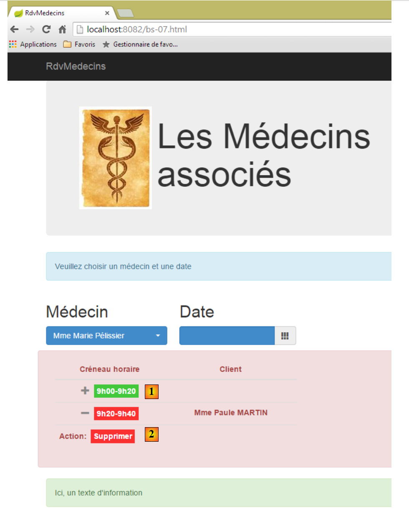 |
- 表格 HTML 已适应屏幕尺寸；
- 在 [1] 中，要查看链接 [Réserver]，需点击符号 [+]；
- 在 [2] 中，点击 [+] 符号后显示的内容；
[bs-07.xml]的视图如下：
<!DOCTYPE HTML>
<html xmlns="http://www.w3.org/1999/xhtml" xmlns:th="http://www.thymeleaf.org" xmlns:layout="http://www.ultraq.net.nz/thymeleaf/layout">
<head>
<meta name="viewport" content="width=device-width" />
<title>RdvMedecins</title>
<!-- Bootstrap 核心 CSS -->
<link rel="stylesheet" href="resources/css/bootstrap-3.1.1-min.css" />
<link rel="stylesheet" type="text/css" href="resources/css/bootstrap-select.min.css" />
<link rel="stylesheet" type="text/css" href="resources/css/datepicker3.css" />
<link rel="stylesheet" type="text/css" href="resources/css/footable.core.min.css" />
<link rel="stylesheet" type="text/css" href="resources/css/bootstrapDemo.css" />
<!-- Bootstrap 核心 JavaScript ================================================== -->
<script type="text/javascript" src="resources/vendor/jquery-2.1.1.min.js"></script>
<script type="text/javascript" src="resources/vendor/bootstrap.js"></script>
<script type="text/javascript" src="resources/vendor/bootstrap-select.js"></script>
<script type="text/javascript" src="resources/vendor/moment-with-locales.js"></script>
<script type="text/javascript" src="resources/vendor/bootstrap-datepicker.js"></script>
<script type="text/javascript" src="resources/vendor/bootstrap-datepicker.fr.js"></script>
<script type="text/javascript" src="resources/vendor/footable.js"></script>
<!-- 本地脚本 -->
<script type="text/javascript" src="resources/js/bs-07.js"></script>
</head>
<body id="body">
<div class="container">
<!-- 导航栏 -->
<div th:include="navbar3" />
<!-- Bootstrap Jumbotron -->
<div th:include="jumbotron" />
<!-- 内容 -->
<div id="content" th:include="choixmedecinjour" />
<div id="agenda" th:include="agenda" />
<!-- 信息 -->
<div class="alert alert-success">
<span id="info">Ici, un texte d'information</span>
</div>
</div>
</body>
</html>
- 第10行：库[footable]中的CSS；
- 第 19 行：库 [footable] 中的 JS；
- 第 31 行：日历中的表 HTML；
视图 [agenda.xml] 如下：
<!DOCTYPE HTML>
<html xmlns:th="http://www.thymeleaf.org">
<body>
<div class="row alert alert-danger">
<div class="col-md-6">
<table id="creneaux" class="table">
<thead>
<tr>
<th data-toggle="true">
<span>Créneau horaire</span>
</th>
<th>
<span>Client</span>
</th>
<th data-hide="phone">
<span>Action</span>
</th>
</tr>
</thead>
<tbody>
<tr>
<td>
<span class='status-metro status-active'>
9h00-9h20
</span>
</td>
<td>
<span></span>
</td>
<td>
<a href="javascript:reserver(14)" class="status-metro status-active">
Réserver
</a>
</td>
</tr>
<tr>
<td>
<span class='status-metro status-suspended'>
9h20-9h40
</span>
</td>
<td>
<span>Mme Paule MARTIN</span>
</td>
<td>
<a href="javascript:supprimer(17)" class="status-metro status-suspended">
Supprimer
</a>
</td>
</tr>
</tbody>
</table>
</div>
</div>
<!-- 初始页面 -->
<script th:inline="javascript">
/*<![CDATA[*/
// 初始化页面
initAgenda();
/*]]>*/
</script>
</body>
</html>
- 第4行：将该表放置于一行[row]及一个彩色框[alert alert-danger]中；
- 第 5 行：该表格将占用 6 列 [col-md-6]；
- 第6行：表格HTML采用Bootstrap样式进行格式化[class='table']；
- 第9行：[data-toggle]属性指定了包含折叠/展开行控件的列（[+/-]）；
- 第 15 行：属性 [data-hide='phone'] 指定当屏幕尺寸为手机屏幕时，该列应被隐藏。也可以使用值 'tablet'；
- 第31行：将函数 JS 关联到链接 [Réserver]；
- 第46行：将函数JS与链接[Supprimer]关联；
- 第56-61行：初始化页面；
上述使用的若干 CSS 类源自文件 CSS [bootstrapDemo.css]：
@CHARSET "UTF-8";
#th 时间段 {
text-align: center;
}
#td 间距 {
text-align: center;
font-weight: bold;
}
.status-metro {
display: inline-block;
padding: 2px 5px;
color:#fff;
}
.status-metro.status-active {
background: #43c83c;
}
.status-metro.status-suspended {
background: #fa3031;
}
样式 [status-*] 源自库网站上找到的表 [footable] 的使用示例。
在文件 JS [bs-07.js] 中，页面初始化方式如下：
function initAgenda() {
// 时间段表
$("#creneaux").footable();
}
仅此而已。[$("#creneaux")] 引用了 HTML 表，我们希望将其设置为“响应式”。 此外，与两个链接 [Réserver] 和 [Supprimer] 相关的函数是 JS：
function reserver(idCreneau) {
showInfo("Réservation du créneau n° " + idCreneau);
}
function supprimer(idRv) {
showInfo("Suppression du rv n° " + idRv);
}
8.6.4.9. 示例 8：模态框
操作 [/bs-08] 会显示以下视图 [bs-08.xml]：
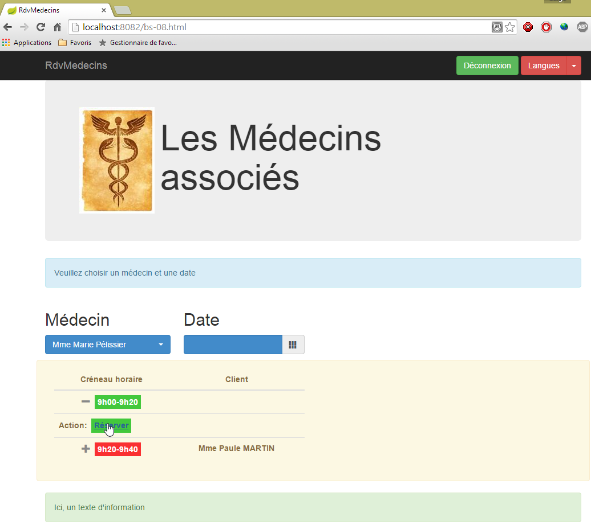
此前，点击链接 [Réserver] 会在信息框中显示信息，而在此处，我们将弹出一个模态框，用于为 RV 选择客户：

所使用的组件是 [bootstrap-modal] [https://github.com/jschr/bootstrap-modal/]。
视图 [bs-08.xml] 如下所示：
<!DOCTYPE HTML>
<html xmlns="http://www.w3.org/1999/xhtml" xmlns:th="http://www.thymeleaf.org" xmlns:layout="http://www.ultraq.net.nz/thymeleaf/layout">
<head>
<meta name="viewport" content="width=device-width" />
<title>RdvMedecins</title>
<!-- Bootstrap 核心 CSS -->
<link rel="stylesheet" href="resources/css/bootstrap-3.1.1-min.css" />
<link rel="stylesheet" type="text/css" href="resources/css/bootstrap-select.min.css" />
<link rel="stylesheet" type="text/css" href="resources/css/datepicker3.css" />
<link rel="stylesheet" type="text/css" href="resources/css/footable.core.min.css" />
<link rel="stylesheet" type="text/css" href="resources/css/bootstrapDemo.css" />
<!-- Bootstrap 核心 JavaScript ================================================== -->
<script type="text/javascript" src="resources/vendor/jquery-2.1.1.min.js"></script>
<script type="text/javascript" src="resources/vendor/bootstrap.js"></script>
<script type="text/javascript" src="resources/vendor/bootstrap-select.js"></script>
<script type="text/javascript" src="resources/vendor/moment-with-locales.js"></script>
<script type="text/javascript" src="resources/vendor/bootstrap-datepicker.js"></script>
<script type="text/javascript" src="resources/vendor/bootstrap-datepicker.fr.js"></script>
<script type="text/javascript" src="resources/vendor/bootstrap-modal.js"></script>
<script type="text/javascript" src="resources/vendor/footable.js"></script>
<!-- 本地脚本 -->
<script type="text/javascript" src="resources/js/bs-08.js"></script>
</head>
<body id="body">
<div class="container">
<!-- 导航栏 -->
<div th:include="navbar3" />
<!-- Bootstrap Jumbotron -->
<div th:include="jumbotron" />
<!-- 内容 -->
<div id="content" th:include="choixmedecinjour" />
<div id="agenda" th:include="agenda-modal" />
<div th:include="resa" />
<!-- 信息 -->
<div class="alert alert-success">
<span id="info">Ici, un texte d'information</span>
</div>
</div>
</body>
</html>
- 第19行：模态框所需的文件JS；
- 第32行：视图[agenda-modal]与视图[agenda]完全相同，仅有一处细微差别：管理链接[Réserver]的函数JS：
<a href="javascript:showDialogResa(14)" class="status-metro status-active">Réserver</a>
函数 [showDialogResa] 负责显示客户选择模态框；
- 第 33 行：视图 [resa.xml] 即为客户选择模态框：
<!DOCTYPE HTML>
<section xmlns="http://www.w3.org/1999/xhtml" xmlns:th="http://www.thymeleaf.org">
<div id="resa" class="modal fade">
<div class="modal-dialog">
<div class="modal-content">
<div class="modal-header">
<button type="button" class="close" data-dismiss="modal" aria-label="Close">
<span aria-hidden="true">
</span>
</button>
<!-- <h4 class="modal-title">模态框标题</h4> -->
</div>
<div class="modal-body">
<div class="alert alert-info">
<h3>
<span>Prise de rendez-vous</span>
</h3>
</div>
<div class="row">
<div class="col-md-3">
<h2>Clients</h2>
<select id="idClient" class="combobox" data-style="btn-primary">
<option value="1">Mme Marguerite Planton</option>
<option value="2">Mr Maxime Franck</option>
<option value="3">Mlle Elisabeth Oron</option>
<option value="4">Mr Gaëtan Calot</option>
</select>
</div>
</div>
</div>
<div class="modal-footer">
<button type="button" class="btn btn-warning" onclick="javascript:cancelDialogResa()">Annuler</button>
<button type="button" class="btn btn-primary" onclick="javascript:validateResa()">Valider</button>
</div>
</div><!-- /.modal-content -->
</div><!-- /.modal-dialog -->
</div><!-- /.modal -->
<!-- 初始页面 -->
<script th:inline="javascript">
/*<![CDATA[*/
// 初始化页面
initResa();
/*]]>*/
</script>
</section>
- 第 3-37 行：模态框；
- 第 13-30 行：该对话框的内容（即显示内容）；
- 第 31-34 行：对话框中的按钮；
- 第 32 行：由函数 JS 和 [cancelDialogResa] 管理的按钮 [Annuler]；
- 第 33 行：由函数 JS 和 [validateResa] 管理的按钮 [Valider]；
- 第 39-44 行：模态框的初始化脚本；
这将生成以下视图：
 |
请注意，模态框默认情况下不会显示。因此，尽管文档中包含其代码 HTML，但在应用程序启动时仍无法看到它。
文件 JS [bs-08.js] 内容如下：
var idCreneau;
var idClient;
var resa;
function showDialogResa(idCreneau) {
// 保存时段 ID
this.idCreneau = idCreneau;
// 显示预订对话框
var resa = $("#resa");
resa.modal('show');
// 日志
showInfo("Réservation du créneau n° " + idCreneau);
}
function cancelDialogResa() {
// 隐藏对话框
resa.modal('hide');
}
// 确认预订
function validateResa() {
// 获取信息
var idClient = $('#idClient option:selected').val();
// 隐藏对话框
resa.modal('hide');
// 信息
showInfo("Réservation du créneau n° " + idCreneau + " pour le client n° " + idClient)
}
function initResa() {
// 客户下拉列表
$('#idClient').selectpicker();
// 模态框
resa = $("#resa");
resa.modal({});
}
- 第 30-36 行：模态框的初始化函数；
- 第 32 行：模态框包含一个下拉列表，需要对其进行初始化；
- 第 34-35 行：初始化模态框本身；
- 第 5-13 行：与链接 [Réserver] 关联的函数 JS；
- 第 7 行：将函数参数存储在第 1 行的全局变量中；
- 第9-10行：显示模态框；
- 第12行：在信息框中记录信息；
- 第15-18行：处理按钮[Annuler]。仅隐藏模态框（第17行）；
- 第21-31行：将函数JS绑定至按钮[Valider]；
- 第 23 行：获取所选客户端的 [value] 属性；
- 第25行：隐藏对话框；
- 第27行：记录两项信息：预订时段编号及对应客户；
8.6.5. 步骤 2：编写视图
接下来我们将描述由服务器 [Web1] 返回的视图及其模板。
 |
8.6.5.1. 视图 [navbar-start]
它显示启动页面的导航栏：
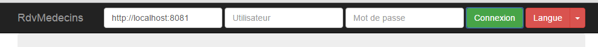
代码 [navbar-start.xml] 如下：
<!DOCTYPE HTML>
<section xmlns:th="http://www.thymeleaf.org">
<div class="navbar navbar-inverse navbar-fixed-top" role="navigation">
<div class="container">
<div class="navbar-header">
<button type="button" class="navbar-toggle" data-toggle="collapse" data-target=".navbar-collapse">
<span class="sr-only">Toggle navigation</span>
<span class="icon-bar"></span>
<span class="icon-bar"></span>
<span class="icon-bar"></span>
</button>
<a class="navbar-brand" href="#">RdvMedecins</a>
</div>
<div class="navbar-collapse collapse">
<img id="loading" src="resources/images/loading.gif" alt="waiting..." style="display: none" />
<!-- 身份验证表单 -->
<div class="navbar-form navbar-right" role="form" id="formulaire">
<div class="form-group">
<input type="text" th:placeholder="#{service.url}" class="form-control" id="urlService" />
</div>
<div class="form-group">
<input type="text" th:placeholder="#{username}" class="form-control" id="login" />
</div>
<div class="form-group">
<input type="password" th:placeholder="#{password}" class="form-control" id="passwd" />
</div>
<button type="button" class="btn btn-success" th:text="#{login}" onclick="javascript:connecter()">Sign in</button>
<!-- 语言 -->
<div class="btn-group">
<button type="button" class="btn btn-danger" th:text="#{langues}">Action</button>
<button type="button" class="btn btn-danger dropdown-toggle" data-toggle="dropdown">
<span class="caret"></span>
<span class="sr-only">Toggle Dropdown</span>
</button>
<ul class="dropdown-menu" role="menu">
<li>
<a href="javascript:setLang('fr')" th:text="#{langues.fr}" />
</li>
<li>
<a href="javascript:setLang('en')" th:text="#{langues.en}" />
</li>
</ul>
</div>
</div>
</div>
</div>
</div>
<!-- 初始化页面 -->
<script th:inline="javascript">
/*<![CDATA[*/
// 初始化页面
initNavBarStart();
/*]]>*/
</script>
</section>
该视图没有模板。它具有以下事件处理程序：
évt | 处理程序 |
点击登录按钮 | |
点击链接[Français] | |
点击链接 [English] |
8.6.5.2. 视图 [jumbotron]
这是在启动页面导航栏下方显示的视图 [navbar-start]：

其代码 [jumbotron.xml] 如下：
<!DOCTYPE html>
<section xmlns="http://www.w3.org/1999/xhtml" xmlns:th="http://www.thymeleaf.org">
<!-- Bootstrap Jumbotron -->
<div class="jumbotron">
<div class="row">
<div class="col-md-2">
<img src="resources/images/caduceus.jpg" alt="RvMedecins" />
</div>
<div class="col-md-10">
<h1 th:utext="#{application.header}" />
</div>
</div>
</div>
</section>
视图 [jumbotron] 既没有模板也没有事件。
8.6.5.3. 视图 [login]
这是启动页面中巨型屏幕下方显示的视图：

其代码 [login.xml] 如下：
<!DOCTYPE html>
<section xmlns="http://www.w3.org/1999/xhtml" xmlns:th="http://www.thymeleaf.org">
<div class="alert alert-info" th:text="#{identification}">Identification
</div>
</section>
该视图既没有模板也没有事件。
8.6.5.4. 视图 [navbar-run]
这是连接成功时显示的导航栏：

其代码 [navbar-run.xml] 如下：
<!DOCTYPE HTML>
<section xmlns:th="http://www.thymeleaf.org">
<div class="navbar navbar-inverse navbar-fixed-top" role="navigation">
<div class="container">
<div class="navbar-header">
<button type="button" class="navbar-toggle" data-toggle="collapse" data-target=".navbar-collapse">
<span class="sr-only">Toggle navigation</span>
<span class="icon-bar"></span>
<span class="icon-bar"></span>
<span class="icon-bar"></span>
</button>
<a class="navbar-brand" href="#">RdvMedecins</a>
</div>
<div class="collapse navbar-collapse">
<img id="loading" src="resources/images/loading.gif" alt="waiting..." style="display: none" />
<!-- 右侧按钮 -->
<form class="navbar-form navbar-right" role="form">
<!-- 注销 -->
<button type="button" class="btn btn-success" th:text="#{options.deconnecter}" onclick="javascript:deconnecter()">Déconnexion</button>
<!-- 语言 -->
<div class="btn-group">
<button type="button" class="btn btn-danger" th:text="#{langues}">Langue</button>
<button type="button" class="btn btn-danger dropdown-toggle" data-toggle="dropdown">
<span class="caret"></span>
<span class="sr-only">Toggle Dropdown</span>
</button>
<ul class="dropdown-menu" role="menu">
<li>
<a href="javascript:setLang('fr')" th:text="#{langues.fr}" />
</li>
<li>
<a href="javascript:setLang('en')" th:text="#{langues.en}" />
</li>
</ul>
</div>
</form>
</div>
</div>
</div>
<!-- 初始化页面 -->
<script th:inline="javascript">
/*<![CDATA[*/
// 初始化页面
initNavBarRun();
/*]]>*/
</script>
</section>
该视图没有模板。它具有以下事件处理程序：
évt | 处理程序 |
点击注销按钮 | |
点击链接[Français] | |
点击链接 [English] |
8.6.5.5. 视图 [accueil]
这是导航栏正下方显示的视图 [navbar-run]：

其代码 [accueil.html] 如下：
<!DOCTYPE html>
<html xmlns="http://www.w3.org/1999/xhtml" xmlns:th="http://www.thymeleaf.org">
<div class="alert alert-info" th:text="#{choixmedecinjour.title}">Veuillez choisir un médecin et une date</div>
<div class="row">
<div class="col-md-3">
<h2 th:text="#{rv.medecin}">Médecin</h2>
<select name="idMedecin" id="idMedecin" class="combobox" data-style="btn-primary">
<option th:each="medecinItem : ${rdvmedecins.medecinItems}" th:text="${medecinItem.texte}" th:value="${medecinItem.id}"/>
</select>
</div>
<div class="col-md-3">
<h2 th:text="#{rv.jour}">Date</h2>
<section id="calendar_container">
<div id="calendar" class="input-group date">
<input id="displayjour" type="text" class="form-control btn-primary" disabled="true">
<span class="input-group-addon">
<i class="glyphicon glyphicon-th"></i>
</span>
</input>
</div>
</section>
</div>
</div>
<!-- 日程表 -->
<div id="agenda"></div>
<!-- 本地脚本 -->
<script th:inline="javascript">
/*<![CDATA[*/
// 初始化页面
initChoixMedecinJour();
/*]]>*/
</script>
</html>
其模板如下：
- [rdvmedecins.medecinItems]（第 8 行）：医生列表；
在当前形式下，该视图似乎没有事件处理程序。实际上，这些事件是在函数 [initChoixMedecinJour] 中定义的。该函数已在第 8.6.4.7 节（第 467 页，特别是第 470 页）中介绍。其中包含以下事件处理程序：
évt | 处理程序 |
选择医生 | |
选择日期 |
8.6.5.6. 视图 [agenda]
视图 [agenda] 展示了医生日程表中的一天：

其代码 [agenda.xml] 如下：
<!DOCTYPE HTML>
<html xmlns:th="http://www.thymeleaf.org">
<body>
<h3 class="alert alert-info" th:text="${agenda.titre}">Agenda de Mme Pélissier le 13/10/2014</h3>
<h4 class="alert alert-danger" th:if="${agenda.creneaux.length}==0" th:text="#{agenda.medecinsanscreneaux}">Ce médecin n'a pas encore de créneaux
de consultation</h4>
<th:block th:if="${agenda.creneaux.length}!=0">
<div class="row tab-content alert alert-warning">
<div class="tab-pane active col-md-6">
<table id="creneaux" class="table">
<thead>
<tr>
<th data-toggle="true">
<span th:text="#{agenda.creneauhoraire}">Créneau horaire</span>
</th>
<th>
<span th:text="#{agenda.client}">Client</span>
</th>
<th data-hide="phone">
<span th:text="#{agenda.action}">Action</span>
</th>
</tr>
</thead>
<tbody>
<tr th:each="creneau,iter : ${agenda.creneaux}">
<td>
<span th:if="${creneau.action}==1" class="status-metro status-active" th:text="${creneau.creneauHoraire}">Créneau horaire</span>
<span th:if="${creneau.action}==2" class="status-metro status-suspended" th:text="${creneau.creneauHoraire}">Créneau horaire</span>
</td>
<td>
<span th:text="${creneau.client}">Client</span>
</td>
<td>
<a th:if="${creneau.action}==1" th:href="@{'javascript:reserverCreneau('+${creneau.id}+')'}" th:text="${creneau.commande}"
class="status-metro status-active">Réserver
</a>
<a th:if="${creneau.action}==2" th:href="@{'javascript:supprimerRv('+${creneau.idRv}+')'}" th:text="${creneau.commande}"
class="status-metro status-suspended">Supprimer
</a>
</td>
</tr>
</tbody>
</table>
</div>
</div>
<!-- 预订 -->
<section th:include="resa" />
</th:block>
<!-- 初始化页面 -->
<script th:inline="javascript">
/*<![CDATA[*/
// 初始化页面
initAgenda();
/*]]>*/
</script>
</body>
</html>
该视图的模板仅包含一个元素：
- [agenda]（第4行）：一个专门为日历显示而构建的稍显复杂的模板；
它具有以下事件处理程序：
évt | 处理程序 |
点击按钮[Supprimer] | |
点击链接 [Réserver] |
第 47 行中的视图 [resa] 是用户点击链接 [Réserver] 时显示的视图：

其代码[resa.xml]如下：
<!DOCTYPE HTML>
<html xmlns:th="http://www.thymeleaf.org">
<body>
<div id="resa" class="modal fade">
<div class="modal-dialog">
<div class="modal-content">
<div class="modal-header">
<button type="button" class="close" data-dismiss="modal" aria-label="Close">
<span aria-hidden="true">
</span>
</button>
<!-- <h4 class="modal-title">模态框标题</h4> -->
</div>
<div class="modal-body">
<div class="alert alert-info">
<h3>
<span th:text="#{resa.titre}">Prise de rendez-vous</span>
</h3>
</div>
<div class="row">
<div class="col-md-3">
<h2 th:text="#{resa.client}">Client</h2>
<select name="idClient" id="idClient" class="combobox" data-style="btn-primary">
<option th:each="clientItem : ${clientItems}" th:text="${clientItem.texte}" th:value="${clientItem.id}" />
</select>
</div>
</div>
</div>
<div class="modal-footer">
<button type="button" class="btn btn-warning" onclick="javascript:cancelDialogResa()" th:text="#{resa.annuler}">Annuler</button>
<button type="button" class="btn btn-primary" onclick="javascript:validerRv()" th:text="#{resa.valider}">Valider</button>
</div>
</div><!-- /.modal-content -->
</div><!-- /.modal-dialog -->
</div><!-- /.modal -->
<!-- 初始化页面 -->
<script th:inline="javascript">
/*<![CDATA[*/
// 初始化页面
initResa();
/*]]>*/
</script>
</body>
</html>
其模板仅包含一个元素：
- [clientItems]（第 24 行）：客户列表；
它具有以下事件处理程序：
事件 | 处理程序 |
点击按钮[Annuler] | |
点击按钮 [Valider] |
8.6.5.7. 视图 [erreurs]
如果用户请求的操作未能成功，将显示以下页面：
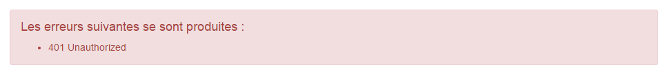
代码 [erreurs.xml] 如下：
<!DOCTYPE HTML>
<section xmlns:th="http://www.thymeleaf.org">
<div class="alert alert-danger">
<h4>
<span th:text="#{erreurs.titre}">Les erreurs suivantes se sont produites :</span>
</h4>
<ul>
<li th:each="message : ${erreurs}" th:text="${message}" />
</ul>
</div>
</section>
其模板仅包含一个元素：
- [erreurs]（第 8 行）：要显示的错误列表；
该视图没有事件处理程序。
8.6.5.8. Résumé
下表列出了视图及其对应的模型：
视图 | 模型 | 事件处理程序 |
navbar-start | ||
巨型广告牌 | ||
登录 | ||
导航栏-运行 | ||
首页 | ||
日程 | ||
预订 | ||
错误 |
8.6.6. 步骤 3：编写操作
让我们回到 Web 服务 [Web1] 的架构：
 |
现在我们将查看 [Web1] 暴露了哪些 URL 以及它们的实现：
8.6.6.1. 由服务 [Web1] 暴露的 URL
具体如下：
- 针对上述每个视图或其组合，各有一个 URL；
- 一个用于添加 RV 的 URL；
- URL 用于删除一个 RV；
它们都会返回如下格式的 [Reponse] 响应：
public class Reponse {
// ----------------- 属性
// 操作状态
private int status;
// 导航栏
private String navbar;
// 巨型横幅
private String jumbotron;
// 页面主体
private String content;
// 日程表
private String agenda;
...
}
- 第 5 行：响应状态：1（OK），2（错误）；
- 第 7 行：根据具体情况，来自视图 [navbar-start] 或 [navbar-run] 的流 HTML；
- 第 9 行：视图 [jumbotron] 的数据流 HTML；
- 第13行：视图[agenda]中的数据流HTML；
- 第9行：视图[accueil]、[erreurs]、[login]中的数据流HTML（视具体情况而定）；
所展示的 URL 如下
将视图 [navbar-start] 放入 [Reponse.navbar] | |
将视图 [navbar-run] 放入 [Reponse.navbar] | |
将视图 [accueil] 放入 [Reponse.content] | |
将视图 [jumbotron] 放入 [Reponse.jumbotron] | |
将视图 [agenda] 放入 [Reponse.agenda] | |
将视图 [login] 放入 [Reponse.content] | |
| |
将视图 [navbar-run] 放入 [Reponse.navbar]，将视图 [jumbotron] 放入 [Reponse.jumbotron]， 视图 [accueil] 放入 [Reponse.content]，视图 [agenda] 放入 [Reponse.agenda] | |
将选定的约会添加并把新日程表放入 [Reponse.agenda] | |
删除所选约会，并将新日程表放入 [Reponse.agenda] |
8.6.6.2. 单例 [ApplicationModel]
 |
类 [ApplicationModel] 被实例化为一个唯一实例，并注入到应用程序的控制器中。其代码如下：
package rdvmedecins.springthymeleaf.server.models;
import java.util.ArrayList;
...
@Component
public class ApplicationModel implements IDao {
....
}
- 第 6 行：[ApplicationModel] 是一个 Spring 组件；
- 第 7 行：该组件实现了 [DAO] 层的接口。 我们这样做是为了让操作（Actions）无需了解 [DAO] 层，而只需知道单例 [ApplicationModel]。因此，[Web1] 的架构如下：
 |
让我们回顾一下 [ApplicationModel] 类的代码：
package rdvmedecins.springthymeleaf.server.models;
import java.util.ArrayList;
...
@Component
public class ApplicationModel implements IDao {
// 图层[DAO]
@Autowired
private IDao dao;
// 配置
@Autowired
private AppConfig appConfig;
// 来自 [DAO] 层的数据
private List<ClientItem> clientItems;
private List<MedecinItem> medecinItems;
// 配置数据
private String userInit;
private String mdpUserInit;
private boolean corsAllowed;
// 异常
private RdvMedecinsException rdvMedecinsException;
// 制造商
public ApplicationModel() {
}
@PostConstruct
public void init() {
// 配置
userInit = appConfig.getUSER_INIT();
mdpUserInit = appConfig.getMDP_USER_INIT();
dao.setTimeout(appConfig.getTIMEOUT());
dao.setUrlServiceWebJson(appConfig.getWEBJSON_ROOT());
corsAllowed = appConfig.isCORS_ALLOWED();
// 缓存医生和客户的下拉列表
List<Medecin> medecins = null;
List<Client> clients = null;
try {
medecins = dao.getAllMedecins(new User(userInit, mdpUserInit));
clients = dao.getAllClients(new User(userInit, mdpUserInit));
} catch (RdvMedecinsException ex) {
rdvMedecinsException = ex;
}
if (rdvMedecinsException == null) {
// 创建下拉列表的元素
medecinItems = new ArrayList<MedecinItem>();
for (Medecin médecin : medecins) {
medecinItems.add(new MedecinItem(médecin));
}
clientItems = new ArrayList<ClientItem>();
for (Client client : clients) {
clientItems.add(new ClientItem(client));
}
}
}
// 获取器和设置器
...
// 实现接口 [IDao]
@Override
public void setUrlServiceWebJson(String url) {
dao.setUrlServiceWebJson(url);
}
@Override
public void setTimeout(int timeout) {
dao.setTimeout(timeout);
}
@Override
public Rv ajouterRv(User user, String jour, long idCreneau, long idClient) {
return dao.ajouterRv(user, jour, idCreneau, idClient);
}
...
}
- 第 11 行：注入 [DAO] 层实现的引用。随后使用该引用来实现 [IDao] 接口（第 64-80 行）；
- 第 14 行：注入应用程序配置；
- 第 33-37 行：使用该配置来配置应用程序架构的各个组件；
- 第38-46行：缓存用于填充医生和客户下拉列表的信息。因此我们假设，如果医生或客户发生变更，则必须重启应用程序。此处的目的是展示Spring单例可以作为Web应用程序的缓存；
类 [MedecinItem] 和 [ClientItem] 均继承自以下类 [PersonneItem]：
package rdvmedecins.springthymeleaf.server.models;
import rdvmedecins.client.entities.Personne;
public class PersonneItem {
// 列表项
private Long id;
private String texte;
// 构造函数
public PersonneItem() {
}
public PersonneItem(Personne personne) {
id = personne.getId();
texte = String.format("%s %s %s", personne.getTitre(), personne.getPrenom(), personne.getNom());
}
// getter 和 setter
...
}
- 第 8 行：字段 [id] 将作为下拉列表中某选项的 [value] 属性的值；
- 第 9 行：字段 [texte] 将作为下拉列表中某选项的显示文本；
8.6.6.3. 类 [BaseController]
 |
类 [BaseController] 是控制器 [RdvMedecinsController] 和 [RdvMedecinsCorsController] 的父类。 创建该父类并非强制要求。我们在此汇集了 [RdvMedecinsController] 类中除一项之外的非核心辅助方法。这些方法可分为三类：
- 辅助方法；
- 将视图与模型合并的方法；
- 用于初始化操作的方法
| 两个实用方法，用于提供错误消息列表。我们之前已经遇到并使用过它们； |
| 生成不带模板的视图 [accueil] |
| 生成视图 [agenda] 及其模板 |
| 生成视图 [login]（无模板） |
| 在请求的操作因错误而结束时向客户返回响应 |
| [RdvMedecinsController]控制器所有操作的初始化方法 |
让我们来看看其中两个方法。
方法 [getPartialViewAgenda] 负责生成最复杂的视图——日程表视图。其代码如下：
// 数据流 [agenda]
protected String getPartialViewAgenda(ActionContext actionContext, AgendaMedecinJour agenda, Locale locale) {
// 上下文
WebContext thymeleafContext = actionContext.getThymeleafContext();
WebApplicationContext springContext = actionContext.getSpringContext();
// 构建页面模板[agenda]
ViewModelAgenda modelAgenda = setModelforAgenda(agenda, springContext, locale);
// 日程表及其模板
thymeleafContext.setVariable("agenda", modelAgenda);
thymeleafContext.setVariable("clientItems", application.getClientItems());
return engine.process("agenda", thymeleafContext);
}
- 第 9-10 行：日程表模型的两个元素：
- 第 9 行：显示的日程表。
- 第10行：用户预约时显示的客户列表；
第 7 行中的 [setModelforAgenda] 方法如下：
// 页面模板 [Agenda]
private ViewModelAgenda setModelforAgenda(AgendaMedecinJour agenda, WebApplicationContext springContext, Locale locale) {
// 页面标题
String dateFormat = springContext.getMessage("date.format", null, locale);
Medecin médecin = agenda.getMedecin();
String titre = springContext.getMessage("agenda.titre", new String[] { médecin.getTitre(), médecin.getPrenom(),
médecin.getNom(), new SimpleDateFormat(dateFormat).format(agenda.getJour()) }, locale);
// 预约时段
ViewModelCreneau[] modelCréneaux = new ViewModelCreneau[agenda.getCreneauxMedecinJour().length];
int i = 0;
for (CreneauMedecinJour creneauMedecinJour : agenda.getCreneauxMedecinJour()) {
// 医生时段
Creneau créneau = creneauMedecinJour.getCreneau();
ViewModelCreneau modelCréneau = new ViewModelCreneau();
modelCréneaux[i] = modelCréneau;
// ID
modelCréneau.setId(créneau.getId());
// 时段
modelCréneau.setCreneauHoraire(String.format("%02dh%02d-%02dh%02d", créneau.getHdebut(), créneau.getMdebut(),
créneau.getHfin(), créneau.getMfin()));
Rv rv = creneauMedecinJour.getRv();
// 客户和订单
String commande;
if (rv == null) {
modelCréneau.setClient("");
commande = springContext.getMessage("agenda.reserver", null, locale);
modelCréneau.setCommande(commande);
modelCréneau.setAction(ViewModelCreneau.ACTION_RESERVER);
} else {
Client client = rv.getClient();
modelCréneau.setClient(String.format("%s %s %s", client.getTitre(), client.getPrenom(), client.getNom()));
commande = springContext.getMessage("agenda.supprimer", null, locale);
modelCréneau.setCommande(commande);
modelCréneau.setIdRv(rv.getId());
modelCréneau.setAction(ViewModelCreneau.ACTION_SUPPRIMER);
}
// 下一个时段
i++;
}
// 生成日程表模板
ViewModelAgenda modelAgenda = new ViewModelAgenda();
modelAgenda.setTitre(titre);
modelAgenda.setCreneaux(modelCréneaux);
return modelAgenda;
}
- 第6行：日程表有一个标题：

或者：

可以看出，日期格式取决于语言。我们将从消息文件中获取该格式（第4行）。
- 第11-40行：对于每个时间段，需显示如下视图：

或者显示：

- 第19-20行：显示时间段；
- 第25-28行：当时段为空时。此时需显示按钮 [Réserver]；
- 第31-36行：时间段已预订的情况。此时需同时显示客户信息和按钮[Supprimer]；
我们将重点说明的另一种方法是 [getActionContext]。该方法在每次调用 [RdvMedecinsController] 时都会被调用。其签名如下：
protected ActionContext getActionContext(String lang, String origin, HttpServletRequest request,HttpServletResponse response, BindingResult result, RdvMedecinsCorsController rdvMedecinsCorsController)
它返回以下类型的 [ActionContext]：
public class ActionContext {
// 日期
private WebContext thymeleafContext;
private WebApplicationContext springContext;
private Locale locale;
private List<String> erreurs;
...
}
- 第 4 行：操作的 Thymeleaf 上下文；
- 第 5 行：操作的 Spring 上下文；
- 第 6 行：操作的区域设置；
- 第 7 行：可能的错误消息列表；
其参数如下：
- [lang]：操作请求的语言为“en”或“fr”；
- [origin]：HTTP 标头（若为跨域调用，则为 [origin]）；
- [request]：正在处理的请求 HTTP，即通常所说的“操作”；
- [response]：针对该请求将返回的响应；
- [result]：[RdvMedecinsController]中的每个操作都会接收一个提交的值，并对其有效性进行验证。[result]即为该验证的结果；
- [rdvMedecinsController]：操作的容器控制器；
方法 [getActionContext] 的实现如下：
// 操作背景
protected ActionContext getActionContext(String lang, String origin, HttpServletRequest request,HttpServletResponse response, BindingResult result, RdvMedecinsCorsController rdvMedecinsCorsController) {
// 语言？
if (lang == null) {
lang = "fr";
}
// 区域设置
Locale locale = null;
if (lang.trim().toLowerCase().equals("fr")) {
// 法语
locale = new Locale("fr", "FR");
} else {
// 其余全部为英语
locale = new Locale("en", "US");
}
// 标题CORS
rdvMedecinsCorsController.sendOptions(origin, response);
// ActionContext
ActionContext actionContext = new ActionContext(new WebContext(request, response, request.getServletContext(),locale), WebApplicationContextUtils.getWebApplicationContext(request.getServletContext()), locale, null);
// 初始化错误
RdvMedecinsException e = application.getRdvMedecinsException();
if (e != null) {
actionContext.setErreurs(e.getMessages());
return actionContext;
}
// POST 错误？
if (result != null && result.hasErrors()) {
actionContext.setErreurs(getErreursForModel(result, locale, actionContext.getSpringContext()));
return actionContext;
}
// 无错误
return actionContext;
}
- 第3-15行：通过参数[lang]设置操作的区域设置；
- 第17行：发送跨域请求所需的HTTP标头。此处不作详细说明。所用技术如第8.4.14节所述；
- 第 19 行：无错误地构建 [ActionContext] 对象；
- 第21行：我们在第8.6.6.2节中看到，单例[ApplicationModel]会访问数据库以检索客户和医生信息。该访问可能失败。因此，我们会记录发生的异常。第21行，我们捕获该异常；
- 第22-25行：若应用程序启动时发生异常，则无法执行任何操作。此时，对于所有操作，我们将返回一个包含异常错误信息的[ActionContext]对象；
- 第27-20行：分析参数[result]，以判断提交的值是否有效。若无效，则返回一个包含相应错误信息的[ActionContext]对象；
- 第 32 行：无错误情况；
现在我们来查看控制器 [RdvMedecinsController] 的操作
8.6.6.4. 操作 [/getNavBarStart]
操作 [/getNavBarStart] 返回视图 [navbar-start]。其签名如下：
@RequestMapping(value = "/getNavbarStart", method = RequestMethod.POST)
@ResponseBody
public Reponse getNavbarStart(@Valid @RequestBody PostLang postLang, BindingResult result, HttpServletRequest request, HttpServletResponse response,
@RequestHeader(value = "Origin", required = false) String origin)
它返回以下类型 [Reponse]：
public class Reponse {
// ----------------- 属性
// 操作状态
private int status;
// 导航栏
private String navbar;
// 巨型广告位
private String jumbotron;
// 页面主体
private String content;
// 日程表
private String agenda;
...
}
并具有以下参数：
- [PostLang postlang]：生成的下一个值：
public class PostLang {
// 数据
@NotNull
private String lang;
...
}
类 [PostLang] 是所有已发布值的父类。实际上，客户必须始终指定执行该操作所使用的语言。
方法 [getNavbarStart] 的实现如下：
// 导航栏-起始
@RequestMapping(value = "/getNavbarStart", method = RequestMethod.POST)
@ResponseBody
public Reponse getNavbarStart(@Valid @RequestBody PostLang postLang, BindingResult result, HttpServletRequest request, HttpServletResponse response,
@RequestHeader(value = "Origin", required = false) String origin) {
// 操作上下文
ActionContext actionContext = getActionContext(postLang.getLang(), origin, request, response, result,rdvMedecinsCorsController);
WebContext thymeleafContext = actionContext.getThymeleafContext();
// 错误？
List<String> erreurs = actionContext.getErreurs();
if (erreurs != null) {
return getViewErreurs(thymeleafContext, erreurs);
}
// 返回视图 [navbar-start]
Reponse reponse = new Reponse();
reponse.setStatus(1);
reponse.setNavbar(engine.process("navbar-start", thymeleafContext));
return reponse;
}
- 第 7 行：初始化操作；
- 第 10-13 行：如果操作初始化方法报告了错误，则将这些错误（第 12 行）连同状态码 2 一起发送给客户端：
- 第15-18行：发送视图[navbar-start]，状态码为1：
下文仅详细说明新增内容。
8.6.6.5. 操作 [/getNavbarRun]
操作 [/getNavBarRun] 生成视图 [navbar-run]：
// 导航栏运行
@RequestMapping(value = "/getNavbarRun", method = RequestMethod.POST)
@ResponseBody
public Reponse getNavbarRun(@Valid @RequestBody PostLang postLang, BindingResult result, HttpServletRequest request,
HttpServletResponse response, @RequestHeader(value = "Origin", required = false) String origin) {
// 操作上下文
ActionContext actionContext = getActionContext(postLang.getLang(), origin, request, response, result,rdvMedecinsCorsController);
WebContext thymeleafContext = actionContext.getThymeleafContext();
// 错误？
List<String> erreurs = actionContext.getErreurs();
if (erreurs != null) {
return getViewErreurs(thymeleafContext, erreurs);
}
// 返回视图 [navbar-run]
Reponse reponse = new Reponse();
reponse.setStatus(1);
reponse.setNavbar(engine.process("navbar-run", thymeleafContext));
return reponse;
}
该操作可能返回两种类型的响应：
- 带错误的响应（第10-13行）：
- 包含视图 [navbar-run] 的响应：
8.6.6.6. 操作 [/getJumbotron]
操作 [/getJumbotron] 返回视图 [jumbotron]：
// 巨型广告牌
@RequestMapping(value = "/getJumbotron", method = RequestMethod.POST)
@ResponseBody
public Reponse getJumbotron(@Valid @RequestBody PostLang postLang, BindingResult result, HttpServletRequest request,
HttpServletResponse response, @RequestHeader(value = "Origin", required = false) String origin) {
// 操作上下文
ActionContext actionContext = getActionContext(postLang.getLang(), origin, request, response, result,rdvMedecinsCorsController);
WebContext thymeleafContext = actionContext.getThymeleafContext();
// 错误？
List<String> erreurs = actionContext.getErreurs();
if (erreurs != null) {
return getViewErreurs(thymeleafContext, erreurs);
}
// 返回视图 [jumbotron]
Reponse reponse = new Reponse();
reponse.setStatus(1);
reponse.setJumbotron(engine.process("jumbotron", thymeleafContext));
return reponse;
}
该操作可能返回两种类型的响应：
- 带错误的响应（第10-13行）：
- 包含视图 [jumbotron] 的响应：
8.6.6.7. 操作 [/getLogin]
操作 [/getLogin] 返回视图 [login]：
@RequestMapping(value = "/getLogin", method = RequestMethod.POST)
@ResponseBody
public Reponse getLogin(@Valid @RequestBody PostLang postLang, BindingResult result, HttpServletRequest request,
HttpServletResponse response, @RequestHeader(value = "Origin", required = false) String origin) {
// 操作上下文
ActionContext actionContext = getActionContext(postLang.getLang(), origin, request, response, result,rdvMedecinsCorsController);
WebContext thymeleafContext = actionContext.getThymeleafContext();
// 错误？
List<String> erreurs = actionContext.getErreurs();
if (erreurs != null) {
return getViewErreurs(thymeleafContext, erreurs);
}
// 返回视图 [login]
Reponse reponse = new Reponse();
reponse.setStatus(1);
reponse.setJumbotron(engine.process("jumbotron", thymeleafContext));
reponse.setNavbar(engine.process("navbar-start", thymeleafContext));
reponse.setContent(getPartialViewLogin(thymeleafContext));
return reponse;
}
该操作可能返回两种类型的响应：
- 带错误的响应（第 9-11 行）：
- 包含视图 [login] 的响应：
8.6.6.8. 操作 [/getAccueil]
操作 [/getAccueil] 返回视图 [accueil]。其签名如下：
@RequestMapping(value = "/getAccueil", method = RequestMethod.POST)
@ResponseBody
public Reponse getAccueil(@Valid @RequestBody PostUser postUser, BindingResult result, HttpServletRequest request,HttpServletResponse response, @RequestHeader(value = "Origin", required = false) String origin)
- 第 3 行，提交的值类型为 [PostUser]，如下所示：
public class PostUser extends PostLang {
// 数据
@NotNull
private User user;
...
}
- 第1行：类[PostUser]继承自类[PostLang]，因此包含一种语言；
- 第 4 行：试图获取视图的用户；
实现代码如下：
@RequestMapping(value = "/getAccueil", method = RequestMethod.POST)
@ResponseBody
public Reponse getAccueil(@Valid @RequestBody PostUser postUser, BindingResult result, HttpServletRequest request,
HttpServletResponse response, @RequestHeader(value = "Origin", required = false) String origin) {
// 操作上下文
ActionContext actionContext = getActionContext(postUser.getLang(), origin, request, response, result,rdvMedecinsCorsController);
WebContext thymeleafContext = actionContext.getThymeleafContext();
// 错误？
List<String> erreurs = actionContext.getErreurs();
if (erreurs != null) {
return getViewErreurs(thymeleafContext, erreurs);
}
// 视图 [accueil] 受保护
try{
// 用户
User user = postUser.getUser();
// 正在验证凭据 [userName, password]
application.authenticate(user);
}catch(RdvMedecinsException e){
// 返回错误
return getViewErreurs(thymeleafContext, e.getMessages());
}
// 返回视图 [accueil]
Reponse reponse = new Reponse();
reponse.setStatus(1);
reponse.setContent(getPartialViewAccueil(thymeleafContext));
return reponse;
}
- 第15-22行：请注意页面[accueil]受保护，因此用户必须经过身份验证；
该操作可能返回两种类型的响应：
- 带错误的响应（第 11 行和第 21 行）：
- 包含视图的响应 [accueil]（第24-27行）：
8.6.6.9. 操作 [/getNavbarRunJumbotronAccueil]
操作 [/getNavbarRunJumbotronAccueil] 生成视图 [navbar-run, jumbotron, accueil]。其签名如下：
@RequestMapping(value = "/getNavbarRunJumbotronAccueil", method = RequestMethod.POST, consumes = "application/json; charset=UTF-8")
@ResponseBody
public Reponse getNavbarRunJumbotronAccueil(@Valid @RequestBody PostUser post, BindingResult result, HttpServletRequest request, HttpServletResponse response,
@RequestHeader(value = "Origin", required = false) String origin)
- 第 3 行：提交的值类型为 [PostUser]；
该操作的实现如下：
// 导航栏 + 巨型横幅 + 首页
@RequestMapping(value = "/getNavbarRunJumbotronAccueil", method = RequestMethod.POST, consumes = "application/json; charset=UTF-8")
@ResponseBody
public Reponse getNavbarRunJumbotronAccueil(@Valid @RequestBody PostUser postUser, BindingResult result, HttpServletRequest request, HttpServletResponse response,
@RequestHeader(value = "Origin", required = false) String origin) {
// 操作上下文
ActionContext actionContext = getActionContext(postUser.getLang(), origin, request, response, result,
rdvMedecinsCorsController);
WebContext thymeleafContext = actionContext.getThymeleafContext();
// 错误？
List<String> erreurs = actionContext.getErreurs();
if (erreurs != null) {
return getViewErreurs(thymeleafContext, erreurs);
}
// 视图 [accueil] 受保护
try {
// 用户
User user = postUser.getUser();
// 正在验证凭据 [userName, password]
application.authenticate(user);
} catch (RdvMedecinsException e) {
// 返回错误
return getViewErreurs(thymeleafContext, e.getMessages());
}
// 发送响应
Reponse reponse = new Reponse();
reponse.setStatus(1);
reponse.setNavbar(engine.process("navbar-run", thymeleafContext));
reponse.setJumbotron(engine.process("jumbotron", thymeleafContext));
reponse.setContent(getPartialViewAccueil(thymeleafContext));
return reponse;
}
该操作可能返回两种类型的响应：
- 带错误的响应（第13、23行）：
- 包含视图 [navbar-run, jumbotron, accueil] 的响应（第 26-31 行）：
8.6.6.10. 操作 [/getAgenda]
操作 [/getAgenda] 生成视图 [agenda]。其签名如下：
@RequestMapping(value = "/getAgenda", method = RequestMethod.POST, consumes = "application/json; charset=UTF-8")
@ResponseBody
public Reponse getAgenda(@RequestBody @Valid PostGetAgenda postGetAgenda, BindingResult result, HttpServletRequest request, HttpServletResponse response,
@RequestHeader(value = "Origin", required = false) String origin)
- 第 3 行：提交的值类型为 [PostGetAgenda]，如下所示：
public class PostGetAgenda extends PostUser {
// 数据
@NotNull
private Long idMedecin;
@NotNull
@DateTimeFormat(pattern = "yyyy-MM-dd")
private Date jour;
...
}
- 第1行：类[PostGetAgenda]继承自类[PostUser]，因此包含一种语言和一个用户；
- 第5行：所需日程表所属医生的编号；
- 第8行：所需的日程表日期；
实现代码如下：
@RequestMapping(value = "/getAgenda", method = RequestMethod.POST, consumes = "application/json; charset=UTF-8")
@ResponseBody
public Reponse getAgenda(@RequestBody @Valid PostGetAgenda postGetAgenda, BindingResult result, HttpServletRequest request, HttpServletResponse response,
@RequestHeader(value = "Origin", required = false) String origin) {
// 操作上下文
ActionContext actionContext = getActionContext(postGetAgenda.getLang(), origin, request, response, result, rdvMedecinsCorsController);
WebContext thymeleafContext = actionContext.getThymeleafContext();
WebApplicationContext springContext = actionContext.getSpringContext();
Locale locale = actionContext.getLocale();
// 有错误吗？
List<String> erreurs = actionContext.getErreurs();
if (erreurs != null) {
return getViewErreurs(thymeleafContext, erreurs);
}
// 验证POST请求的有效性
if (result != null) {
new PostGetAgendaValidator().validate(postGetAgenda, result);
if (result.hasErrors()) {
// 返回视图[erreurs]
return getViewErreurs(thymeleafContext, getErreursForModel(result, locale, springContext));
}
}
...
}
- 至第14行，代码结构已成常规；
- 第16-21行：对提交的值进行额外验证。日期必须等于或晚于今天。为此使用验证器：
package rdvmedecins.web.validators;
import java.text.SimpleDateFormat;
import java.util.Date;
import org.springframework.validation.Errors;
import org.springframework.validation.Validator;
import rdvmedecins.springthymeleaf.server.requests.PostGetAgenda;
import rdvmedecins.springthymeleaf.server.requests.PostValiderRv;
public class PostGetAgendaValidator implements Validator {
public PostGetAgendaValidator() {
}
@Override
public boolean supports(Class<?> classe) {
return PostGetAgenda.class.equals(classe) || PostValiderRv.class.equals(classe);
}
@Override
public void validate(Object post, Errors errors) {
// 选定的预约日期
Date jour = null;
if (post instanceof PostGetAgenda) {
jour = ((PostGetAgenda) post).getJour();
} else {
if (post instanceof PostValiderRv) {
jour = ((PostValiderRv) post).getJour();
}
}
// 将日期转换为 yyyy-MM-dd 格式
SimpleDateFormat sdf = new SimpleDateFormat("yyyy-MM-dd");
String strJour = sdf.format(jour);
String strToday = sdf.format(new Date());
// 所选日期不得早于今天
if (strJour.compareTo(strToday) < 0) {
errors.rejectValue("jour", "todayandafter.postChoixMedecinJour", null, null);
}
}
}
- 第19行：该验证器适用于两个类：[PostGetAgenda]和[PostValiderRv]；
让我们回到操作代码 [/getAgenda]：
@RequestMapping(value = "/getAgenda", method = RequestMethod.POST, consumes = "application/json; charset=UTF-8")
@ResponseBody
public Reponse getAgenda(@RequestBody @Valid PostGetAgenda postGetAgenda, BindingResult result, HttpServletRequest request, HttpServletResponse response,
@RequestHeader(value = "Origin", required = false) String origin) {
...
// 操作
try {
// 医生日程表
AgendaMedecinJour agenda = application.getAgendaMedecinJour(postGetAgenda.getUser(), postGetAgenda.getIdMedecin(),
new SimpleDateFormat("yyyy-MM-dd").format(postGetAgenda.getJour()));
// 响应
Reponse reponse = new Reponse();
reponse.setStatus(1);
reponse.setAgenda(getPartialViewAgenda(actionContext, agenda, locale));
return reponse;
} catch (RdvMedecinsException e1) {
// 返回视图 [erreurs]
return getViewErreurs(thymeleafContext, e1.getMessages());
} catch (Exception e2) {
// 返回视图 [erreurs]
return getViewErreurs(thymeleafContext, getErreursForException(e2));
}
}
- 第 9-10 行：利用提交的参数，请求医生的日程表；
- 第12-13行：返回日程表：
- 第17、21行：返回包含错误的响应：
8.6.6.11. 操作 [/getNavbarRunJumbotronAccueilAgenda]
操作 [/getNavbarRunJumbotronAccueilAgenda] 返回视图 [navbar-run, jumbotron, accueil, agenda]。其实现如下：
@RequestMapping(value = "/getNavbarRunJumbotronAccueilAgenda", method = RequestMethod.POST, consumes = "application/json; charset=UTF-8")
@ResponseBody
public Reponse getNavbarRunJumbotronAccueilAgenda(@Valid @RequestBody PostGetAgenda post, BindingResult result,
HttpServletRequest request, HttpServletResponse response,
@RequestHeader(value = "Origin", required = false) String origin) {
// 操作上下文
ActionContext actionContext = getActionContext(post.getLang(), origin, request, response, result,rdvMedecinsCorsController);
WebContext thymeleafContext = actionContext.getThymeleafContext();
// 错误？
List<String> erreurs = actionContext.getErreurs();
if (erreurs != null) {
return getViewErreurs(thymeleafContext, erreurs);
}
// 日程
Reponse agenda = getAgenda(post, result, request, response, null);
if (agenda.getStatus() != 1) {
return agenda;
}
// 发送响应
Reponse reponse = new Reponse();
reponse.setStatus(1);
reponse.setNavbar(engine.process("navbar-run", thymeleafContext));
reponse.setJumbotron(engine.process("jumbotron", thymeleafContext));
reponse.setContent(getPartialViewAccueil(thymeleafContext));
reponse.setAgenda(agenda.getAgenda());
return reponse;
}
- 第15-18行：利用[/getAgenda]操作的存在来调用它。随后检查响应中的status（第16行）。若检测到错误，则不再继续执行并返回响应；
- 第20行：发送请求的视图：
8.6.6.12. 操作 [/supprimerRv]
操作 [/supprimerRv] 用于删除一个约会。其签名如下：
@RequestMapping(value = "/supprimerRv", method = RequestMethod.POST, consumes = "application/json; charset=UTF-8")
@ResponseBody
public Reponse supprimerRv(@Valid @RequestBody PostSupprimerRv postSupprimerRv, BindingResult result, HttpServletRequest request, HttpServletResponse response,
@RequestHeader(value = "Origin", required = false) String origin)
- 第 3 行：提交的值类型为 [PostSupprimerRv]，如下所示：
public class PostSupprimerRv extends PostUser {
// 数据
@NotNull
private Long idRv;
..
}
- 第 1 行：类 [PostSupprimerRv] 继承自类 [PostUser]，因此包含语言和用户信息；
- 第 5 行：待删除的预约编号；
该操作的实现如下：
@RequestMapping(value = "/supprimerRv", method = RequestMethod.POST, consumes = "application/json; charset=UTF-8")
@ResponseBody
public Reponse supprimerRv(@Valid @RequestBody PostSupprimerRv postSupprimerRv, BindingResult result, HttpServletRequest request, HttpServletResponse response,
@RequestHeader(value = "Origin", required = false) String origin) {
// 操作上下文
ActionContext actionContext = getActionContext(postSupprimerRv.getLang(), origin, request, response, result,
rdvMedecinsCorsController);
WebContext thymeleafContext = actionContext.getThymeleafContext();
Locale locale = actionContext.getLocale();
// 错误？
List<String> erreurs = actionContext.getErreurs();
if (erreurs != null) {
return getViewErreurs(thymeleafContext, erreurs);
}
// 提交的值
User user = postSupprimerRv.getUser();
long idRv = postSupprimerRv.getIdRv();
// 删除预约
AgendaMedecinJour agenda = null;
try {
// 恢复
Rv rv = application.getRvById(user, idRv);
Creneau creneau = application.getCreneauById(user, rv.getIdCreneau());
long idMedecin = creneau.getIdMedecin();
Date jour = rv.getJour();
// 删除关联的预约
application.supprimerRv(user, idRv);
// 重新生成医生的日程表
agenda = application.getAgendaMedecinJour(user, idMedecin, new SimpleDateFormat("yyyy-MM-dd").format(jour));
// 返回新日程表
Reponse reponse = new Reponse();
reponse.setStatus(1);
reponse.setAgenda(getPartialViewAgenda(actionContext, agenda, locale));
return reponse;
} catch (RdvMedecinsException ex) {
// 返回视图 [erreurs]
return getViewErreurs(thymeleafContext, ex.getMessages());
} catch (Exception e2) {
// 返回视图 [erreurs]
return getViewErreurs(thymeleafContext, getErreursForException(e2));
}
}
- 第22行：获取待删除的预约。若不存在，则抛出异常；
- 第23-25行：根据该预约，获取对应的医生和日期。这些信息用于重建医生的日程表；
- 第27行：删除该预约；
- 第29行：请求获取医生的新日程表。这一点很重要。除了刚刚释放的时间段外，应用程序的其他用户可能也对日程表进行了修改。向用户返回最新版本的日程表至关重要；
- 第31-34行：返回日程表：
8.6.6.13. 操作 [/validerRv]
操作 [/validerRv] 用于在医生的日程表中添加一个预约。其签名如下：
@RequestMapping(value = "/validerRv", method = RequestMethod.POST, consumes = "application/json; charset=UTF-8")
@ResponseBody
public Reponse validerRv(@RequestBody PostValiderRv postValiderRv, BindingResult result, HttpServletRequest request, HttpServletResponse response, @RequestHeader(value = "Origin", required = false) String origin)
- 第 3 行：发布的值类型为 [PostValiderRv]，如下所示：
public class PostValiderRv extends PostUser {
// 数据
@NotNull
private Long idCreneau;
@NotNull
private Long idClient;
@NotNull
@DateTimeFormat(pattern = "yyyy-MM-dd")
private Date jour;
...
}
- 第1行：类[PostValiderRv]继承自类[PostUser]，因此包含语言和用户信息；
- 第 5 行：时段编号；
- 第7行：预订所针对的客户编号；
- 第10行：预约日期；
该操作的实现如下：
// 确认预约
@RequestMapping(value = "/validerRv", method = RequestMethod.POST, consumes = "application/json; charset=UTF-8")
@ResponseBody
public Reponse validerRv(@RequestBody PostValiderRv postValiderRv, BindingResult result, HttpServletRequest request, HttpServletResponse response, @RequestHeader(value = "Origin", required = false) String origin) {
// 操作上下文
ActionContext actionContext = getActionContext(postValiderRv.getLang(), origin, request, response, result,rdvMedecinsCorsController);
WebApplicationContext springContext = actionContext.getSpringContext();
WebContext thymeleafContext = actionContext.getThymeleafContext();
Locale locale = actionContext.getLocale();
// 错误？
List<String> erreurs = actionContext.getErreurs();
if (erreurs != null) {
return getViewErreurs(thymeleafContext, erreurs);
}
// 验证预约日期的有效性
if (result != null) {
new PostGetAgendaValidator().validate(postValiderRv, result);
if (result.hasErrors()) {
// 返回视图 [erreurs]
return getViewErreurs(thymeleafContext, getErreursForModel(result, locale, springContext));
}
}
// 已提交的值
User user = postValiderRv.getUser();
long idClient = postValiderRv.getIdClient();
long idCreneau = postValiderRv.getIdCreneau();
Date jour = postValiderRv.getJour();
// 操作
try {
// 获取时段信息
Creneau créneau = application.getCreneauById(user, idCreneau);
long idMedecin = créneau.getIdMedecin();
// 添加预约
application.ajouterRv(postValiderRv.getUser(), new SimpleDateFormat("yyyy-MM-dd").format(jour), idCreneau,idClient);
// 重新生成日程表
AgendaMedecinJour agenda = application.getAgendaMedecinJour(user, idMedecin,
new SimpleDateFormat("yyyy-MM-dd").format(jour));
// 返回新日程表
Reponse reponse = new Reponse();
reponse.setStatus(1);
reponse.setAgenda(getPartialViewAgenda(actionContext, agenda, locale));
return reponse;
} catch (RdvMedecinsException ex) {
// 返回视图 [erreurs]
return getViewErreurs(thymeleafContext, ex.getMessages());
} catch (Exception e2) {
// 返回视图 [erreurs]
return getViewErreurs(thymeleafContext, getErreursForException(e2));
}
}
}
该代码与操作 [/supprimerRv] 的代码类似。
8.6.7. 步骤 4：Spring/Thymeleaf 服务器测试
现在我们将使用 Chrome 插件 [Advanced Rest Client]（参见第 9.6 节）测试上述各项操作。
8.6.7.1. 测试配置
所有操作都期待一个提交的值。我们将提交以下字符串 jSON 的变体：
{"user":{"login":"admin","passwd":"admin"},"lang":"en","jour":"2015-01-22", "idMedecin":1, "idCreneau":2, "idClient":4, "idRv":93}
该提交值包含对大多数操作而言多余的信息。不过，接收这些信息的操作会忽略这些内容，且不会引发错误。该提交值的优势在于能够涵盖需要提交的各种值。
8.6.7.2. 操作 [/getNavbarStart]
 |
- 转换为 [1]，即被测试的操作；
- 转换为 [2]，即提交的值；
- 在 [3] 中，提交的值是字符串 jSON；
- 在 [4] 中，以英语请求视图 [navbar-start]；
所得结果如下：
 |
我们收到了英文版的视图 [navbar-start]（高亮显示的区域）。
现在，我们故意制造一个错误。我们将[lang]的属性值从提交的值改为null。我们得到以下结果：
 |
我们收到了一条错误响应（状态码 2），指出字段 [lang] 是必填项。
8.6.7.3. 操作 [/getNavbarRun]
我们调用操作 [getNavbarRun]，并提交以下数据：
{"user":{"login":"admin","passwd":"admin"},"lang":"fr","jour":"2015-01-22", "idMedecin":1, "idCreneau":2, "idClient":4, "idRv":93}
得到的结果如下：
 |
8.6.7.4. 操作 [/getJumbotron]
我们调用操作 [getJumbotron]，并传入以下值：
{"user":{"login":"admin","passwd":"admin"},"lang":"en","jour":"2015-01-22", "idMedecin":1, "idCreneau":2, "idClient":4, "idRv":93}
得到的结果如下：
 |
8.6.7.5. 操作 [/getLogin]
我们调用操作 [getLogin]，并传入以下值：
{"user":{"login":"admin","passwd":"admin"},"lang":"en","jour":"2015-01-22", "idMedecin":1, "idCreneau":2, "idClient":4, "idRv":93}
得到的结果如下：
 |
8.6.7.6. 操作 [/getAccueil]
我们调用操作 [getAccueil]，并传入以下值：
{"user":{"login":"admin","passwd":"admin"},"lang":"fr","jour":"2015-01-22", "idMedecin":1, "idCreneau":2, "idClient":4, "idRv":93}
得到的结果如下：
 |
我们使用一个未知用户重新尝试：
{"user":{"login":"x","passwd":"x"},"lang":"fr","jour":"2015-01-22", "idMedecin":1, "idCreneau":2, "idClient":4, "idRv":93}
得到的结果如下：
 |
我们再试一次，这次使用一个已存在但未获授权使用该应用的用户：
{"user":{"login":"user","passwd":"user"},"lang":"en","jour":"2015-01-22", "idMedecin":1, "idCreneau":2, "idClient":4, "idRv":93}
得到的结果如下：
 |
8.6.7.7. 操作 [/getAgenda]
我们请求操作 [getAgenda]，并提交以下值：
{"user":{"login":"admin","passwd":"admin"},"lang":"fr","jour":"2015-01-28", "idMedecin":1, "idCreneau":2, "idClient":4, "idRv":93}
得到的结果如下：
 |
我们再试一次，选择一个早于今天的日期：
 |
我们再试一次，输入一位不存在的医生：
{"user":{"login":"admin","passwd":"admin"},"lang":"fr","jour":"2015-01-28", "idMedecin":11, "idCreneau":2, "idClient":4, "idRv":93}
得到的结果如下：
 |
8.6.7.8. 操作 [/getNavbarRunJumbotronAccueil]
我们调用操作 [getNavbarRunJumbotronAccueil]，并传入以下值：
{"user":{"login":"admin","passwd":"admin"},"lang":"en","jour":"2015-01-28", "idMedecin":1, "idCreneau":2, "idClient":4, "idRv":93}
得到的结果如下：
 |
使用未知用户时结果相同：
 |
8.6.7.9. 操作 [/getNavbarRunJumbotronAccueilAgenda]
我们请求操作 [getNavbarRunJumbotronAccueilAgenda]，并提交以下值：
{"user":{"login":"admin","passwd":"admin"},"lang":"fr","jour":"2015-01-28", "idMedecin":1, "idCreneau":2, "idClient":4, "idRv":93}
得到的结果如下：
 |
我们输入一位不存在的医生：
 |
8.6.7.10. 操作 [/supprimerRv]
我们调用操作 [supprimerRv]，并传入以下提交值：
{"user":{"login":"admin","passwd":"admin"},"lang":"fr","jour":"2015-01-28", "idMedecin":1, "idCreneau":2, "idClient":4, "idRv":93}
编号 93 的 Rv 不存在。结果如下：
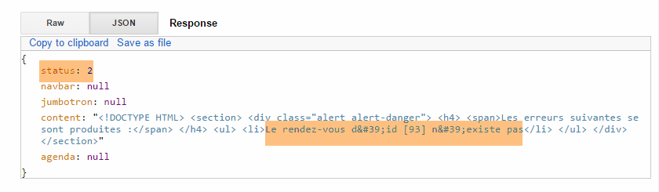 |
存在一个预约：
 |
可在数据库中验证该预约已成功删除。新日程表已返回。
8.6.7.11. 操作 [/validerRv]
我们调用操作 [validerRv]，并传入以下值：
{"user":{"login":"admin","passwd":"admin"},"lang":"fr","jour":"2015-01-28", "idMedecin":1, "idCreneau":2, "idClient":4, "idRv":93}
得到的结果如下：
 |
可在数据库中验证该预约已成功创建。新的日程表已返回。
我们用一个不存在的时段编号进行同样的操作：
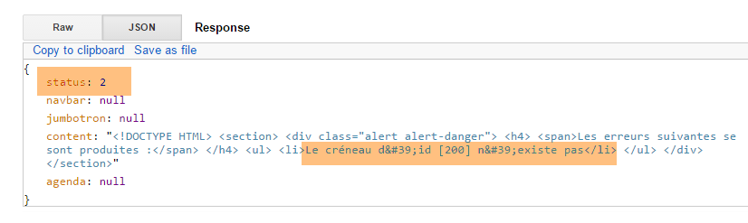 |
使用不存在的客户编号进行相同操作：
 |
8.6.8. 步骤 5：编写 JavaScript 客户端
让我们回到 [Web1] 服务器的架构：
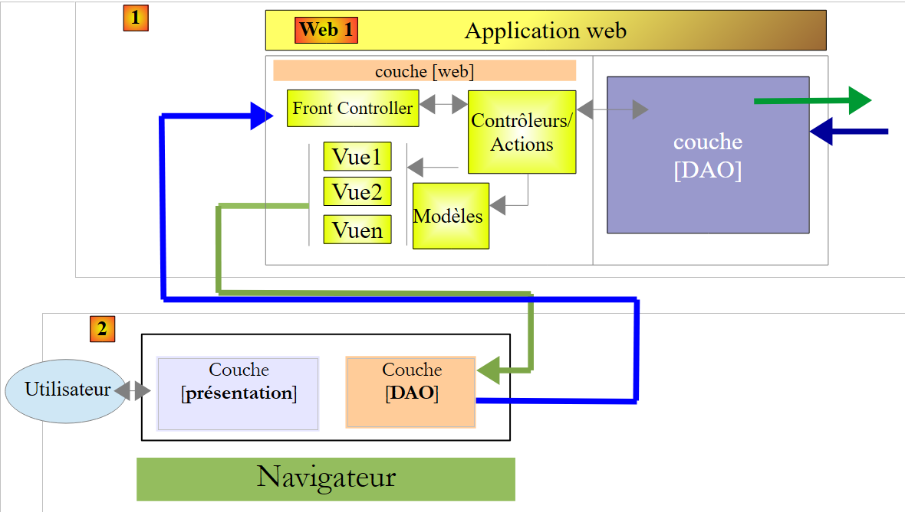 |
服务器 [Web1] 的客户端 [2] 是一个 APU 类型的 JavaScript 客户端（单页应用程序）：
- 客户端向Web服务器（不一定是[Web1]）请求启动页面；
- 它通过Ajax调用向服务器[Web1]请求后续页面；
为了构建此客户端，我们将使用工具 [Webstorm]（参见第 9.8 节）。我认为该工具比 STS 更实用。 其主要优势在于提供了代码输入时的自动补全功能，并具备 refactoring 的一些选项。这能避免许多错误。
8.6.8.1. JS 项目
JS 项目的目录结构如下：
 |
- 在 [1] 中，包含完整的 JS 客户端。[boot.html] 是启动页面。这将是浏览器加载的唯一页面；
- [2] 包含 Bootstrap 组件的样式表；
- 在 [3] 中，应用程序使用的若干图片；
 |
- [4] 文件中包含脚本 JS。我们的工作就在这里；
- 在 [5] 中，所使用的库：主要是 jQuery，以及 Bootstrap 组件的库；
8.6.8.2. 代码架构
代码被划分为三个层次：
 |
- [présentation]层整合了[boot.xml]页面的初始化函数以及各类Bootstrap组件的初始化函数。该层由文件[ui.js]实现；
- [événements] 层整合了 [présentation] 层的所有事件处理程序。该层由文件 [evts.js] 实现；
- [DAO] 层负责向 [Web1] 服务器发送 HTTP 请求。该层由文件 [dao.js] 实现；
8.6.8.3. [présentation]层
 |
[présentation] 层由以下 [ui.js] 文件实现：
//层 [présentation]
var ui = {
// 全局变量；
"agenda": "",
"resa": "",
"langue": "",
"urlService": "http://localhost:8081",
"page": "login",
"jourAgenda": "",
"idMedecin": "",
"user": {},
"login": {},
"exceptionTitle": {},
"calendar_infos": {},
"erreur": "",
"idCreneau": "",
"done": "",
// 视图组件
"body": "",
"navbar": "",
"jumbotron": "",
"content": "",
"exception": "",
"exception_text": "",
"exception_title": "",
"loading": ""
};
// 事件层
var evts = {};
// [dao] 层
var dao = {};
// ------------ 文档就绪
$(document).ready(function () {
// 文档初始化
console.log("document.ready");
// 页面组件
ui.navbar = $("#navbar");
ui.jumbotron = $("#jumbotron");
ui.content = $("#content");
ui.erreur = $("#erreur");
ui.exception = $("#exception");
ui.exception_text = $("#exception-text");
ui.exception_title = $("#exception-title");
// 保存登录页面以便后续显示
ui.login.lang = ui.langue;
ui.login.navbar = ui.navbar.html();
ui.login.jumbotron = ui.jumbotron.html();
ui.login.content = ui.content.html();
// 服务端 URL
$("#urlService").val(ui.urlService);
});
// ------------------------ Bootstrap 组件初始化功能
ui.initNavBarStart = function () {
...
};
ui.initNavBarRun = function () {
...
};
ui.initChoixMedecinJour = function () {
...
};
ui.updateCalendar = function (renew) {
...
};
// 显示所选日期
ui.displayJour = function () {
...
};
ui.initAgenda = function () {
...
};
ui.initResa = function () {
...
};
- 为了将各层相互隔离，决定将它们放置在三个对象中：
- [ui] 用于 [présentation] 层（第 2-27 行），
- [evts] 用于事件管理图层（第 29 行），
- [dao] 用于 [DAO] 层（第 31 行）；
将各层划分为三个对象，有助于避免变量和函数名称冲突。每层使用的变量和函数均以封装该层的对象名称作为前缀。
- 第38-44行：存储无论显示何种视图都始终存在的字段。这避免了重复且无谓的jQuery查询；
- 第46-49行：本地存储启动页面，以便在用户注销且未更改语言时能够恢复该页面；
- 第54-83行：Bootstrap组件的初始化函数。这些函数已在第8.6.4节的Bootstrap组件研究中全部介绍过；
8.6.8.4. [événements]层的实用函数
 |
事件处理程序已放置在文件 [evts.js] 中。事件处理程序经常使用若干函数。现将它们介绍如下：
// 开始等待
evts.beginWaiting = function () {
// 开始等待
ui.loading = $("#loading");
ui.loading.show();
ui.exception.hide();
ui.erreur.hide();
evts.travailEnCours = true;
};
// 等待结束
evts.stopWaiting = function () {
// 等待结束
evts.travailEnCours = false;
ui.loading = $("#loading");
ui.loading.hide();
};
// 显示结果
evts.showResult = function (result) {
// 显示接收到的数据
var data = result.data;
// 分析状态
switch (result.status) {
case 1:
// 错误？
if (data.status == 2) {
ui.erreur.html(data.content);
ui.erreur.show();
} else {
if (data.navbar) {
ui.navbar.html(data.navbar);
}
if (data.jumbotron) {
ui.jumbotron.html(data.jumbotron);
}
if (data.content) {
ui.content.html(data.content)
}
if (data.agenda) {
ui.agenda = $("#agenda");
ui.resa = $("#resa");
}
}
break;
case 2:
// 显示错误
evts.showException(data);
break;
}
};
// ------------ 各种功能
evts.showException = function (data) {
// 显示错误
ui.exception.show();
ui.exception_text.html(data);
ui.exception_title.text(ui.exceptionTitle[ui.langue]);
};
- 第 2 行：在执行任何异步操作之前，会调用函数 [evts.beginwaiting]；
- 第 4-5 行：显示等待状态的动画图像；
- 第 6-7 行：隐藏错误和异常的显示区域（二者并不相同）；
- 第 8 行：提示正在进行异步操作；
- 第12行：在异步操作[DAO]返回结果后，调用函数[evts.stopwaiting]；
- 第 14 行：记录异步任务已完成；
- 第 15 行：隐藏等待状态的动画图标；
- 第 20 行：函数 [evts.showResult] 显示异步操作 [DAO] 的结果 [result]。 结果是一个形式如下所示的 JS 对象：{'status':status,'data':data,'sendMeBack':sendMeBack}。
- 第 47-50 行：仅在 [result.status==2] 情况下使用。这种情况发生在 [Web1] 服务器发送包含错误标头（例如 403 禁止访问）的响应时。 此时，[data]即为服务器发送的用于报告错误的字符串jSON；
- 第 25 行：收到服务器有效响应 [Web1] 的情况。 此时字段 [data] 包含服务器的响应：{'status':status,'navbar':navbar,'jumbotron':jumbotron,'agenda':agenda,'content':content}；
- 第 27 行：服务器 [Web1] 发送了错误响应 {'status':2,'navbar':null,'jumbotron':null,'agenda':null,'content':erreurs} 的情况；
- 第28-29行：显示视图 [erreurs]；
- 第31-33行：可能显示导航栏；
- 第 34-36 行：可能显示巨型横幅；
- 第 37-39 行：可能显示字段 [data.content]。根据具体情况，该字段代表视图 [accueil, agenda] 之一；
- 第40-43行：如果日程表已重新生成，则获取其组件的某些引用，以免每次需要时都重新查找；
- 第54行：函数[evts.showException]的作用是显示其参数[data]中所包含的异常文本；
- 第 57-58 行：显示异常文本；
- 第 58 行：异常的标题取决于当前语言；
文件 [evts.js] 包含超过 300 行代码，我不会逐行进行说明。我将仅选取几个示例来展示该层的核心思想。
8.6.8.5. 用户登录

用户登录由以下函数实现：
// ------------------------ 连接
evts.connecter = function () {
// 获取待发送的值
var login = $("#login").val().trim();
var passwd = $("#passwd").val().trim();
// 设置服务器的URL
ui.urlService = $("#urlService").val().trim();
dao.setUrlService(ui.urlService);
// 请求参数
var post = {
"user": {
"login": login,
"passwd": passwd
},
"lang": ui.langue
};
var sendMeBack = {
"user": {
"login": login,
"passwd": passwd
},
"caller": evts.connecterDone
};
// 发起请求
evts.execute([{
"name": "accueil-sans-agenda",
"post": post,
"sendMeBack": sendMeBack
}]);
};
- 第 4-5 行：获取用户的登录名和密码；
- 第7-8行：从服务[Web1]中获取URL。该值同时存储在[ui]层和[dao]层中；
- 第10-16行：待提交的值：当前语言及尝试登录的用户；
- 第17-23行：对象[sendMeBack]是传递给即将被调用的函数[DAO]的参数，该函数需将其返回给第22行的函数。 此处，对象 [sendMeBack] 封装了试图登录的用户；
- 第25-29行：函数[evts.execute]能够执行一系列异步操作。此处传递的列表仅包含一个操作。该操作的字段如下：
- [name]：待执行的异步操作名称，
- [post]：要发送至服务器 [Web1] 的值，
- [sendMeBack]：异步操作需随结果返回的值；
在详细说明函数 [evts.execute] 之前，先来看第 22 行中的函数 [evts.connecterDone]。这是被调用的异步函数 [DAO] 需要向其返回结果的函数：
evts.connecterDone = function (result) {
// 显示结果
evts.showResult(result);
// 连接成功？
if (result.status == 1 && result.data.status == 1) {
// 页面
ui.page = "accueil-sans-agenda";
// 记录用户
ui.user = result.sendMeBack.user;
}
};
- 第3行：显示服务器[Web1]返回的结果；
- 第5行：如果该结果没有错误，则记录新页面的类型（第7行）以及已认证的用户（第9行）；
函数 [evts.execute] 执行一系列异步操作：
// 执行一系列操作
evts.execute = function (actions) {
// 正在处理？
if (evts.travailEnCours) {
// 无操作
return;
}
// 等待
evts.beginWaiting();
// 执行操作
dao.doActions(actions, evts.stopWaiting);
};
- 第 2 行：参数 [actions] 是一组待执行的异步操作列表；
- 第 4-7 行：仅当没有其他操作正在进行时，才接受执行；
- 第 9 行：启动等待；
- 第11行：请求[DAO]层执行该操作序列。第二个参数是当操作序列中的所有操作都返回结果后需执行的函数名称；
我们现在不详细说明函数 [dao.doActions]。我们将考察另一个事件。
8.6.8.6. 语言切换
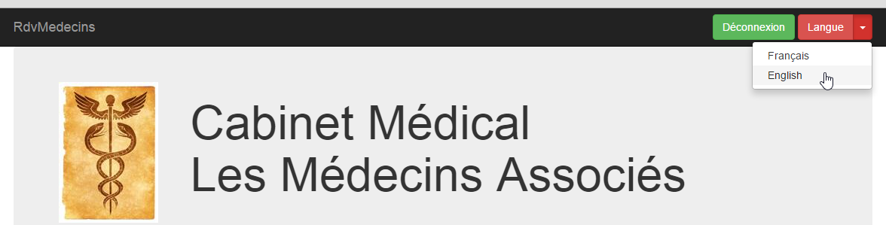
语言切换由以下函数实现：
// ------------------------ 更改语言
evts.setLang = function (lang) {
// 更改语言？
if (lang == ui.langue) {
// 不执行任何操作
return;
}
// 新语言
ui.langue = lang;
// 需要翻译哪一页？
switch (ui.page) {
case "login":
evts.getLogin();
break;
case "accueil-sans-agenda":
evts.getAccueilSansAgenda();
break;
case "accueil-avec-agenda":
evts.getAccueilAvecAgenda(ui);
break;
}
};
- 第2行：参数[lang]表示新语言：'fr'或'en'；
- 第4-7行：如果新语言是当前语言，则不执行任何操作；
- 第9行：保存新语言；
- 第12-20行：若发生语言变更，需重新生成浏览器当前显示的页面。可能涉及三类页面：
- 名为 [login] 的页面，显示的是身份验证页面；
- 名为 [accueil-sans-agenda] 的页面，即身份验证成功后显示的页面，
- 名为 [accueil-avec-agenda] 的页面，即首次显示日历后呈现的页面。此后该页面将持续显示，直至用户注销；
我们将重点探讨页面 [accueil-avec-agenda]。该功能共有三个版本：
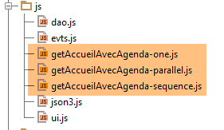 |
- 版本 [ getAccueilAvecAgenda-one] 执行单个异步操作；
- 版本 [ getAccueilAvecAgenda-parallel] 会并行执行四个异步操作；
- 版本 [ getAccueilAvecAgenda-sequence] 依次执行四个异步操作；
8.6.8.7. 函数 [ getAccueilAvecAgenda-one]
该函数如下：
// -------------------------- getAccueilAvecAgenda
evts.getAccueilAvecAgenda=function(ui) {
// 请求参数
var post = {
"user": ui.user,
"lang": ui.langue,
"idMedecin": ui.idMedecin,
"jour": ui.jourAgenda
};
var sendMeBack = {
"caller": evts.getAccueilAvecAgendaDone
};
// 请求
evts.execute([{
"name": "accueil-avec-agenda",
"post": post,
"sendMeBack": sendMeBack
}]);
};
- 第4-9行：要提交的值包含已登录用户、所需语言、要查询日程的医生编号以及所需日程的日期；
- 第10-12行：对象[sendMeBack]是将被返回给第11行函数的对象。此处，它不包含任何信息；
- 第14-18行：执行一系列异步操作，即名为[accueil-avec-agenda]的操作（第15行）；
- 第 11 行：当异步操作 [accueil-avec-agenda] 返回结果时执行的函数；
第11行的函数[evts.getAccueilAvecAgendaDone]显示名为[accueil-avec-agenda]的异步函数的结果：
evts.getAccueilAvecAgendaDone = function (result) {
// 显示结果
evts.showResult(result);
// 新页面？
if (result.status == 1 && result.data.status == 1) {
ui.page = "accueil-avec-agenda";
}
};
- 第 1 行：[result] 是名为 [accueil-avec-agenda] 的异步函数的结果；
- 第 3 行：显示该结果；
- 第 5 行：如果结果没有错误，则加载新页面（第 6 行）；
8.6.8.8. 函数 [ getAccueilAvecAgenda-parallel]
该函数如下：
// -------------------------- getAccueilAvecAgenda
evts.getAccueilAvecAgenda=function(ui) {
// 操作 [navbar-run, jumbotron, accueil, agenda] 在 //
// 导航栏-运行
var navbarRun = {
"name": "navbar-run"
};
navbarRun.post = {
"lang": ui.langue
};
navbarRun.sendMeBack = {
"caller": evts.showResult
};
// 巨型广告牌
var jumbotron = {
"name": "jumbotron"
};
jumbotron.post = {
"lang": ui.langue
};
jumbotron.sendMeBack = {
"caller": evts.showResult
};
// 首页
var accueil = {
"name": "accueil"
};
accueil.post = {
"lang": ui.langue,
"user": ui.user
};
accueil.sendMeBack = {
"caller": evts.showResult
};
// 日程
var agenda = {
"name": "agenda"
};
agenda.post = {
"user": ui.user,
"lang": ui.langue,
"idMedecin": ui.idMedecin,
"jour": ui.jourAgenda
};
agenda.sendMeBack = {
'idMedecin'：ui.idMedecin,
'日期：ui.jourAgenda,
"caller": evts.getAgendaDone
};
// 执行操作在 //
evts.execute([navbarRun, jumbotron, accueil, agenda])
};
- 第51行：本次执行四项异步操作。这些操作将并行执行；
- 第5-13行：定义操作[navbarRun]，该操作用于获取导航栏[navbar-run]；
- 第12行：当异步操作[navbarRun]返回结果时需执行的函数；
- 第 15-23 行：定义操作 [jumbotron]，该操作用于获取视图 [jumbotron]；
- 第22行：当异步操作[jumbotron]返回结果时需执行的函数；
- 第 25-34 行：定义操作 [accueil]，该操作用于检索视图 [accueil]；
- 第 33 行：当异步操作 [accueil] 返回结果时要执行的函数；
- 第 36-49 行：定义操作 [agenda]，该操作检索视图 [jumbotron]；
- 第 48 行：当异步操作 [agenda] 返回结果时要执行的函数；
8.6.8.9. 函数 [ getAccueilAvecAgenda-sequence]
该函数如下：
// -------------------------- getAccueilAvecAgenda
evts.getAccueilAvecAgenda=function(ui) {
// 按顺序执行 [navbar-run, jumbotron, accueil, agenda] 操作
// 日程
var agenda = {
"name" : "agenda"
};
agenda.post = {
"user" : ui.user,
"lang" : ui.langue,
"idMedecin" : ui.idMedecin,
"jour" : ui.jourAgenda
};
agenda.sendMeBack = {
'idMedecin'：ui.idMedecin,
'日：ui.jourAgenda,
"caller" : evts.getAgendaDone
};
// 首页
var accueil = {
"name" : "accueil"
};
accueil.post = {
"lang" : ui.langue,
"user" : ui.user
};
accueil.sendMeBack = {
"caller" : evts.showResult,
"next" : agenda
};
// 巨型屏幕
var jumbotron = {
"name" : "jumbotron"
};
jumbotron.post = {
"lang" : ui.langue
};
jumbotron.sendMeBack = {
"caller" : evts.showResult,
"next" : accueil
};
// 导航栏-运行
var navbarRun = {
"name" : "navbar-run"
};
navbarRun.post = {
"lang" : ui.langue
};
navbarRun.sendMeBack = {
"caller" : evts.showResult,
"next" : jumbotron
};
// 按顺序执行操作
evts.execute([ navbarRun ])
};
- 第 54 行：执行操作 [navbarRun]。 该操作完成后，转至下一项：[jumbotron]，第51行。该操作随后依次执行。该操作完成后，转至下一项：[accueil]，第40行。该操作随后依次执行。 当该操作完成后，系统将转至下一项：[agenda]，第29行。该操作随后被执行。当其完成后，系统停止执行，因为操作[agenda]没有后续操作。
8.6.8.10. [DAO] 层
 |
文件 [dao.js] 整合了 [DAO] 层的所有功能。我们将逐步介绍这些功能：
// URL 由服务器提供
dao.urls = {
"login": "/getLogin",
"accueil": "/getAccueil",
"jumbotron": "/getJumbotron",
"agenda": "/getAgenda",
"supprimerRv": "/supprimerRv",
"validerRv": "/validerRv",
"navbar-start": "/getNavbarStart",
"navbar-run": "/getNavbarRun",
"accueil-sans-agenda": "/getNavbarRunJumbotronAccueil",
"accueil-avec-agenda": "/getNavbarRunJumbotronAccueilAgenda"
};
// --------------- 接口
// 服务器网址
dao.setUrlService = function (urlService) {
dao.urlService = urlService;
};
- 第 16-18 行：用于设置 [Web1] 服务 URL 的函数；
- 第2-13行：将异步操作名称与待查询服务器[Web1]的URL关联的映射表；
// ------------------ 通用操作管理
// 执行一系列异步操作
dao.doActions = function (actions, done) {
// 操作处理
dao.actionsCount = actions.length;
dao.actionIndex = 0;
for (var i = 0; i < dao.actionsCount; i++) {
// 异步 DAO 请求
var deferred = $.Deferred();
deferred.done(dao.actionDone);
dao.doAction(deferred, actions[i], done);
}
};
- 第 3 行：函数 [dao.doActions] 执行一系列异步操作 [actions]。参数 [done] 是当所有操作返回结果后需执行的函数；
- 第7-12行：异步操作并行执行。但是，如果其中某项操作有后续操作，则该后续操作将在前一项操作结束时执行；
- 第 9 行：在状态 [pending] 中存在对象 [Deferred]；
- 第10行：当该对象进入状态[resolved]时，将执行函数[dao.actionDone]；
- 第 11 行：列表中的第 i 个操作以异步方式执行。第 3 行中的参数 [done] 作为参数传递；
在每个异步操作结束时执行的函数 [dao.actionDone] 如下：
// 已收到结果
dao.actionDone = function (result) {
// 调用方？
var sendMeBack = result.sendMeBack;
if (sendMeBack && sendMeBack.caller) {
sendMeBack.caller(result);
}
// 下一步？
if (sendMeBack && sendMeBack.next) {
// 异步请求 DAO
var deferred = $.Deferred();
deferred.done(dao.actionDone);
dao.doAction(deferred, sendMeBack.next, sendMeBack.done);
}
// 完成？
dao.actionIndex++;
if (dao.actionIndex == dao.actionsCount) {
// 完成？
if (sendMeBack && sendMeBack.done) {
sendMeBack.done(result);
}
}
};
- 第 2 行：函数 [dao.actionDone] 接收来自待执行操作列表中某项异步操作的结果 [result]；
- 第4-7行：如果已完成的异步操作指定了用于接收结果的函数，则调用该函数；
- 第9-14行：如果已完成的异步操作有后续操作，则该后续操作将依次被执行；
- 第16行：一个操作已完成。增加已完成操作的计数器。具有不确定数量后续操作的操作计为一个操作；
- 第19-21行：如果最初指定了函数[done]，用于在后续所有操作返回结果后执行，则现在执行该函数；
方法 [dao.doAction] 执行一项异步操作：
// 执行操作
dao.doAction = function (deferred, action, done) {
// 需嵌入操作中的 done 函数
if (action.sendMeBack) {
action.sendMeBack.done = done;
} else {
action.sendMeBack = {
"done": done
};
}
// 操作执行
dao.executePost(deferred, action.sendMeBack, dao.urls[action.name], action.post)
};
- 第 4-10 行：如前所述，处理即将执行的异步操作结果的函数必须能够访问函数 [done]。 为此，我们将后者放入对象 [sendMeBack] 中，该对象将成为异步操作结果的一部分；
- 第 12 行：执行函数 [dao.executePost]，该函数向服务器 [Web1] 发出对 HTTP 的调用。 目标 URL 是与待执行操作名称关联的 URL；
函数 [dao.executePost] 执行对 HTTP 的调用：
// 请求 HTTP
dao.executePost = function (deferred, sendMeBack, url, post) {
// 手动发起Ajax请求
$.ajax({
headers: {
'Accept': 'application/json',
'Content-Type': 'application/json'
},
url: dao.urlService + url,
type: 'POST',
data: JSON3.stringify(post),
dataType: 'json',
success: function (data) {
// 返回结果
deferred.resolve({
"status": 1,
"data": data,
"sendMeBack": sendMeBack
});
},
error: function (jqXHR, textStatus, errorThrown) {
var data;
if (jqXHR.responseText) {
data = jqXHR.responseText;
} else {
data = textStatus;
}
// 返回错误
deferred.resolve({
"status": 2,
"data": data,
"sendMeBack": sendMeBack
});
}
});
};
我们之前已经遇到并讨论过该函数。 只需注意第 9 行，目标 URL 是将服务器 [Web1] 的 URL 与关联操作名称的 URL 进行拼接而成的。
8.6.8.11. 启动页面
 |

启动页面 [boot.html] 显示了上图所示的视图。这是唯一一个由浏览器直接加载的页面。其余页面均通过 Ajax 调用获取。其代码如下：
<!DOCTYPE HTML>
<html xmlns="http://www.w3.org/1999/xhtml" xmlns:th="http://www.thymeleaf.org"
xmlns:layout="http://www.ultraq.net.nz/thymeleaf/layout">
<head>
<meta name="viewport" content="width=device-width"/>
<meta http-equiv="Content-Type" content="text/html; charset=utf-8"/>
<title>RdvMedecins</title>
<!-- Bootstrap 核心 CSS -->
<link rel="stylesheet" href="css/bootstrap-3.1.1-min.css"/>
<link rel="stylesheet" type="text/css" href="css/bootstrap-select.min.css"/>
<link rel="stylesheet" type="text/css" href="css/datepicker3.css"/>
<link rel="stylesheet" type="text/css" href="css/footable.core.min.css"/>
<!-- 此模板的自定义样式 -->
<link rel="stylesheet" type="text/css" href="css/rdvmedecins.css"/>
<!-- Bootstrap 核心 JavaScript ================================================== -->
<script type="text/javascript" src="vendor/jquery-2.1.1.min.js"></script>
<script type="text/javascript" src="vendor/bootstrap.js"></script>
<script type="text/javascript" src="vendor/bootstrap-select.js"></script>
<script type="text/javascript" src="vendor/moment-with-locales.js"></script>
<script type="text/javascript" src="vendor/bootstrap-datepicker.js"></script>
<script type="text/javascript" src="vendor/bootstrap-datepicker.fr.js"></script>
<script type="text/javascript" src="vendor/footable.js"></script>
<!-- 用户脚本 -->
<script type="text/javascript" src="js/json3.js"></script>
<script type="text/javascript" src="js/ui.js"></script>
<script type="text/javascript" src="js/evts.js"></script>
<script type="text/javascript" src="js/getAccueilAvecAgenda-sequence.js"></script>
<script type="text/javascript" src="js/dao.js"></script>
</head>
<body id="body">
<div id="navbar">
<div class="navbar navbar-inverse navbar-fixed-top" role="navigation">
<div class="container">
<div class="navbar-header">
<button type="button" class="navbar-toggle" data-toggle="collapse" data-target=".navbar-collapse">
<span class="sr-only">Toggle navigation</span> <span class="icon-bar"></span> <span class="icon-bar"></span>
<span class="icon-bar"></span>
</button>
<a class="navbar-brand" href="#">RdvMedecins</a>
</div>
<div class="navbar-collapse collapse">
<img id="loading" src="images/loading.gif" alt="waiting..." style="display: none"/>
<!-- 登录表单 -->
<div class="navbar-form navbar-right" role="form" id="formulaire">
<div class="form-group">
<input type="text" placeholder="URL du serveur" class="form-control" id="urlService"/>
</div>
<div class="form-group">
<input type="text" placeholder="Utilisateur" class="form-control" id="login"/>
</div>
<div class="form-group">
<input type="password" placeholder="Mot de passe" class="form-control" id="passwd"/>
</div>
<button type="button" class="btn btn-success" onclick="javascript:evts.connecter()">Connexion</button>
<!-- 语言 -->
<div class="btn-group">
<button type="button" class="btn btn-danger">Langue</button>
<button type="button" class="btn btn-danger dropdown-toggle" data-toggle="dropdown">
<span class="caret"></span> <span class="sr-only">Toggle Dropdown</span>
</button>
<ul class="dropdown-menu" role="menu">
<li><a href="javascript:evts.setLang('fr')">Français</a></li>
<li><a href="javascript:evts.setLang('en')">English</a></li>
</ul>
</div>
</div>
</div>
</div>
</div>
</div>
<div class="container">
<!-- Bootstrap Jumbotron -->
<div id="jumbotron">
<div class="jumbotron">
<div class="row">
<div class="col-md-2">
<img src="images/caduceus.jpg" alt="RvMedecins"/>
</div>
<div class="col-md-10">
<h1>
Cabinet médical<br/>Les Médecins associés
</h1>
</div>
</div>
</div>
</div>
<!-- 错误提示框 -->
<div id="erreur"></div>
<div id="exception" class="alert alert-danger" style="display: none">
<h3 id="exception-title"></h3>
<span id="exception-text"></span>
</div>
<!-- 内容 -->
<div id="content">
<div class="alert alert-info">Authentifiez-vous pour accéder à l'application</div>
</div>
</div>
<!-- 初始化页面 -->
<script>
// 初始化页面
ui.langue = 'fr';
ui.exceptionTitle['fr'] = "L'erreur suivante s'est produite côté serveur :";
ui.exceptionTitle['en'] = "The following server error was met:";
ui.initNavBarStart();
</script>
</body>
</html>
- 我们在关于 Bootstrap 的章节（第 8.6.4 节）中已经遇到过此类页面；
- 第 99-105 行：初始化 [présentation] 层中的某些元素；
- 第27行，使用了脚本[getAccueilAvecAgenda-sequence.js]。通过修改该行的脚本，可以获得三种不同的行为来获取页面[accueil-avec-agenda]：
- [getAccueilAvecAgenda-one.js] 通过单次调用 HTTP 生成页面，
- [getAccueilAvecAgenda-parallel.js] 通过同时调用四次 HTTP 获取页面，
- [getAccueilAvecAgenda-sequence.js] 通过连续四次调用 HTTP 获取页面；
8.6.8.12. Tests
测试方法多种多样。这里我们将使用工具 [Webstorm]：
 |
- 在 [1] 中打开一个项目。 只需指定包含待测试网站静态树结构（HTML、CSS、JS）的文件夹 [2]；
 |
- 生成 [3]，即静态网站；
- 在 [4-5] 中，加载页面 [boot.html]；
 |
- 在 [5] 中，可以看到由 [Webstorm] 托管的服务器通过端口 [63342] 返回了页面 [boot.html]。 这一点很重要，因为这意味着页面 [boot.html] 中的脚本将向服务器 [Web1] 发起跨域请求，而该服务器正在 [localhost:8081] 上运行。 加载了 [boot.html] 的浏览器知道它是从 [localhost:63342] 加载的。因此，它不会允许该页面调用 [localhost:8081] 网站，因为端口不同。 因此，它将执行第8.4.14节中描述的跨域调用。出于这个原因，必须将应用程序[Web1]配置为接受这些跨域调用。这在Spring/Thymeleaf服务器的[AppConfig]文件中决定：
 |
@EnableAutoConfiguration
@ComponentScan(basePackages = { "rdvmedecins.springthymeleaf.server" })
@Import({ WebConfig.class, DaoConfig.class })
public class AppConfig {
// 管理员 / 管理员
private final String USER_INIT = "admin";
private final String MDP_USER_INIT = "admin";
// Web 服务根目录 / json
private final String WEBJSON_ROOT = "http://localhost:8080";
// 超时（以毫秒为单位）
private final int TIMEOUT = 5000;
// CORS
private final boolean CORS_ALLOWED=true;
...
我们留给读者自行测试客户端 JS。它应能重现第 8.6.3 节中描述的功能。
一旦确认客户端 JS 无误，即可将其部署到服务器目录 [Web1] 中，以避免需要授权跨域请求：
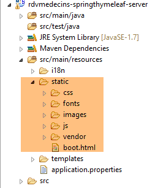 |
在上文中，我们已将测试网站复制到 [src / main / resources / static] 文件夹中。随后可请求 URL 和 [http://localhost:8081/boot.html]：
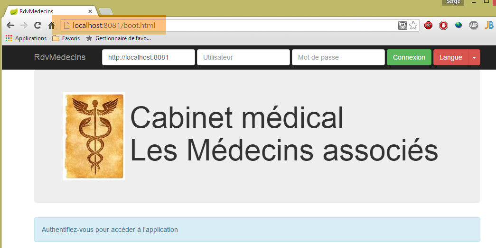
现在我们不再需要跨域请求，可以在服务器 [Web1] 的配置文件 [AppConfig] 中写入：
// CORS
private final boolean CORS_ALLOWED=false;
上述应用程序将继续运行。如果回到 [Webstorm] 应用程序，它将无法运行：


如果进入开发者控制台（Ctrl-Shift-I），可以看到错误原因：

这是未授权的跨域请求错误。
8.6.8.13. Conclusion
我们构建了以下架构：
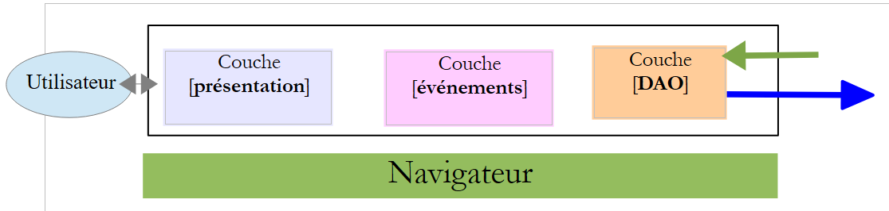 |
- 各层之间划分得相当明确；
- 我们采用的是单页应用（SPA）架构。正是这一特性，使我们能够为各类移动设备（Android、IoS、Windows Phone）生成原生应用；
- 我们创建了一个模型，能够并行、顺序或混合执行异步操作；
8.6.9. 步骤 6：生成 Android 原生应用
[Phonegap] [http://phonegap.com/] 工具可基于 IoS / JS / HTML 应用程序生成适用于移动设备（Android、[Phonegap]、Windows 8、 ...），该可执行文件基于 HTML / JS / CSS 应用程序。实现这一目标有多种方法。 我们采用最简单的方法：使用 Phonegap 网站上的在线工具 [http://build.phonegap.com/apps]。该工具将“上传”待转换的静态网站压缩包。 启动页应命名为 [index.html]。因此，我们将页面 [boot.html] 重命名为 [index.html]：
 |
然后将文件夹压缩，此处为 [rdvmedecins-client-js-03]。接着访问 Phonegap 网站 [http://build.phonegap.com/apps]：
 |
- 在 [1] 之前，您可能需要创建一个账户；
- 在 [1] 处开始操作；
- 在 [2] 步骤中，选择仅支持一个 Phonegap 应用的免费套餐；
 |
- 在 [3] 步骤中，下载压缩包 [4]；
 |
- 在 [5] 步骤中，为应用程序命名；
- 在 [6] 步骤中，开始构建应用。此过程可能需要 1 分钟。请耐心等待，直到各移动平台的图标显示构建完成；
 |
- 仅生成了 Android 二进制文件 [7] 和 Windows 二进制文件 [8]；
- 点击 [7] 下载 Android 二进制文件；
 |
- 将下载的二进制文件 [apk] 转换为 [9]；
启动适用于 Android 平板电脑的 [GenyMotion] 模拟器（参见第 9.9 节）：
 |
上图中，我们使用 API 启动了 Android 19 平板电脑模拟器。模拟器启动后，
- 请滑动侧边的锁定条（如有）并松开以解锁；
- 用鼠标拖动您下载的 [PGBuildApp-debug.apk] 文件，并将其拖放到模拟器上。该文件随即会被安装并运行；
 |
需将 URL 更改为 [1]。 为此，请在命令窗口中输入命令 [ipconfig]（如下图第 1 行），该命令将显示您机器上的各个 IP 地址：
C:\Users\Serge Tahé>ipconfig
Configuration IP de Windows
Carte réseau sans fil Connexion au réseau local* 15 :
Statut du média. . . . . . . . . . . . : Média déconnecté
Suffixe DNS propre à la connexion. . . :
Carte Ethernet Connexion au réseau local :
Suffixe DNS propre à la connexion. . . : ad.univ-angers.fr
Adresse IPv6 de liaison locale. . . . .: fe80::698b:455a:925:6b13%4
Adresse IPv4. . . . . . . . . . . . . .: 172.19.81.34
Masque de sous-réseau. . . . . . . . . : 255.255.0.0
Passerelle par défaut. . . . . . . . . : 172.19.0.254
Carte réseau sans fil Wi-Fi :
Statut du média. . . . . . . . . . . . : Média déconnecté
Suffixe DNS propre à la connexion. . . :
...
请记下以下地址之一：Wi-Fi 地址 IP（第 6-9 行），或局域网地址 IP（第 11-17 行）。 然后在 Web 服务器的 URL 中使用该地址 IP：
 |
完成上述操作后，连接到 Web 服务：
 |
在模拟器上测试应用程序。它应该可以正常运行。在服务器端，可以在类 [ApplicationModel] 中选择是否允许 CORS 头部：
// CORS
private final boolean CORS_ALLOWED=false;
这对 Android 应用来说并不重要。该应用并非在浏览器中运行。而对 CORS 头部的要求来自浏览器，而非服务器。
8.6.10. 案例研究结论
我们开发了以下架构：
 |
这是一个复杂的三层架构。其目的是复用[Web2]层，该层原本是文档[Tutoriel AngularJS / Spring 4]中应用程序[AngularJS-Spring MVC]的服务器层，用于URL [http://tahe.developpez.com/angularjs-spring4/]。正是出于这一原因，才采用了三层架构。 而在应用程序 [AngularJS-Spring MVC] 中，[Web2] 的客户端是 [AngularJS]， 而在这里，[Web2]的客户端是[jQuery] / [Spring MVC / Thymeleaf]的两层架构。由于增加了层级，因此性能会有所下降。
本文研究的应用程序在开发过程中分三个阶段完成：
- 从 [Introduction aux frameworks JSF2, Primefaces et Primefaces mobile] 到 URL，再到 [http://tahe.developpez.com/java/primefaces/]。 该案例研究最初是基于 JSF2 / Primefaces 框架开发的。Primefaces 是一个基于 AJAX 的组件库，可避免编写 JavaScript 代码。当时开发的应用程序比本文研究的这个要简单。它有一个面向电脑的经典网页版本和一个面向手机的移动版本；
- [Tutoriel AngularJS / Spring 4] 至 URL [http://tahe.developpez.com/angularjs-spring4/]。当时开发的应用程序与本文研究对象具有相同的特性。该应用程序还被移植到了 Android 平台；
- 本文；
通过这项工作，我总结出以下几点：
- [Primefaces] 应用程序无疑是最容易编写的，且其移动网页版本表现优异。它无需任何 JavaScript 知识。 虽然无法将其原生移植到不同移动设备的OS上，但这真的有必要吗？更改应用程序的样式似乎很困难。因为我们实际上是在使用Primefaces的样式表。这可能是一个缺点；
- [AngularJS-Spring MVC] 应用程序的编写过程相当复杂。在我看来，若想真正掌握 [AngularJS] 框架，其学习难度颇高。 [client Angular] / [service web / jSON implémenté par Spring MVC]架构尤为简洁且高效。该架构适用于任何Web应用程序。在我看来，这是最具前景的架构，因为它在客户端和服务器端分别运用了不同的技术能力 （客户端为 JS+HTML+CSS，服务器端为 Java 或其他技术），从而能够并行开发客户端和服务器端；
- 对于本文档中采用三层架构开发的应用程序 [client jQuery] / [serveur Web1 / Spring MVC / Thymeleaf] / [serveur Web2 / Spring MVC] 三层架构，有些人可能会觉得 [jQuery+Spring MVC+Thymelaf] 技术比 [AngularJS] 技术更容易理解。 我们编写的JavaScript客户端的[DAO]层可在其他应用程序中复用；